<!doctype html>
<html lang="th">
<head>
<meta charset="utf-8">
<meta name="viewport" content="width=device-width, initial-scale=1">
<meta name="cbe-build" content="2026-11-09.2">
<title>CBE Report Platform</title>
<link rel="icon" type="image/png" sizes="32x32" href="assets/favicon-32.png">
<link rel="icon" type="image/png" sizes="64x64" href="assets/favicon-64.png">
<link rel="icon" type="image/png" sizes="256x256" href="assets/cbe-icon.png">
<link rel="apple-touch-icon" href="assets/apple-touch-icon.png">
<meta name="claude:viewport-fit-sides" content="cover">
<link rel="preconnect" href="https://fonts.googleapis.com">
<link rel="preconnect" href="https://fonts.gstatic.com" crossorigin>
<link href="https://fonts.googleapis.com/css2?family=IBM+Plex+Sans+Thai:wght@400;500;600;700&family=Manrope:wght@500;600;700;800&display=swap" rel="stylesheet">
<style>
/* Layout: navy liquid-glass rail + frosted top bar are the only glass; content sits on solid surfaces with hairline borders */
:root {
  --font: "IBM Plex Sans Thai", system-ui, sans-serif;
  --num: "Manrope", "IBM Plex Sans Thai", sans-serif;
  --bg: #F1F4FA;
  --orb1: #5B8CFF; --orb2: #7FD3FF; --orb3: #2346D8;
  --ink: #0A1A3F; --ink-2: #33456D; --ink-3: #53627F;
  --primary: #1F5BFF; --primary-soft: rgba(31, 91, 255, .09);
  --glass: #FFFFFF;
  --glass-solid: #FFFFFF;
  --edge: transparent; --edge-2: rgba(31, 91, 255, .35);
  --hair: rgba(16, 40, 110, .11);
  --field: #F6F8FC;
  --shadow: none;
  --float: 0 18px 44px -22px rgba(12, 34, 100, .45);
  --rail: linear-gradient(170deg, #0D2A78 0%, #0A1F5C 45%, #071640 100%);
  --rail-ink: #E7EEFF; --rail-ink-2: #A9BCEB; --rail-hover: rgba(255,255,255,.08); --rail-active: rgba(255,255,255,.14);
  --ok: #0B8A60; --ok-bg: rgba(16, 168, 118, .13);
  --info: #1F5BFF; --info-bg: rgba(31, 91, 255, .12);
  --bad: #C4253F; --bad-bg: rgba(217, 45, 74, .12);
  --mute: #5E6B88; --mute-bg: rgba(94, 107, 136, .12);
  --warn: #9A5800; --warn-bg: rgba(229, 145, 0, .15);
  --hero: linear-gradient(135deg, #1A4FE0 0%, #0B2E9E 60%, #0A2478 100%);
  --r-lg: 20px; --r-md: 14px; --r-sm: 10px;
}
@media (prefers-color-scheme: dark) { :root:not([data-theme="light"]) {
  --bg: #060D26; --orb1: #2152FF; --orb2: #0E8FD8; --orb3: #3B1FBF;
  --ink: #EAF0FF; --ink-2: #BAC6E4; --ink-3: #98A6C8;
  --primary: #6A93FF; --primary-soft: rgba(106, 147, 255, .15);
  --glass: #0C1739;
  --glass-solid: #102047;
  --edge: transparent; --edge-2: rgba(106, 147, 255, .4);
  --hair: rgba(170, 195, 255, .13); --field: #0A1431;
  --shadow: none;
  --float: 0 20px 48px -20px rgba(0, 0, 0, .8);
  --rail: linear-gradient(170deg, rgba(20,40,110,.72), rgba(6,14,44,.82));
  --ok: #3DDCA3; --ok-bg: rgba(61,220,163,.14); --info: #8EAEFF; --info-bg: rgba(91,136,255,.18);
  --bad: #FF7B90; --bad-bg: rgba(255,92,120,.15); --mute: #A1AECD; --mute-bg: rgba(161,174,205,.13);
  --warn: #FFC15E; --warn-bg: rgba(255,193,94,.14);
  --hero: linear-gradient(135deg, #2457F0 0%, #10307F 70%);
  color-scheme: dark;
} }
:root[data-theme="dark"] {
  --bg: #060D26; --orb1: #2152FF; --orb2: #0E8FD8; --orb3: #3B1FBF;
  --ink: #EAF0FF; --ink-2: #BAC6E4; --ink-3: #98A6C8;
  --primary: #6A93FF; --primary-soft: rgba(106, 147, 255, .15);
  --glass: #0C1739;
  --glass-solid: #102047;
  --edge: transparent; --edge-2: rgba(106, 147, 255, .4);
  --hair: rgba(170, 195, 255, .13); --field: #0A1431;
  --shadow: none;
  --float: 0 20px 48px -20px rgba(0, 0, 0, .8);
  --rail: linear-gradient(170deg, rgba(20,40,110,.72), rgba(6,14,44,.82));
  --ok: #3DDCA3; --ok-bg: rgba(61,220,163,.14); --info: #8EAEFF; --info-bg: rgba(91,136,255,.18);
  --bad: #FF7B90; --bad-bg: rgba(255,92,120,.15); --mute: #A1AECD; --mute-bg: rgba(161,174,205,.13);
  --warn: #FFC15E; --warn-bg: rgba(255,193,94,.14);
  --hero: linear-gradient(135deg, #2457F0 0%, #10307F 70%);
  color-scheme: dark;
}
* { box-sizing: border-box; }
html, body { margin: 0; }
body { font: 400 15px/1.6 var(--font); color: var(--ink); background: var(--bg); min-height: 100vh; -webkit-font-smoothing: antialiased; }
button, input, textarea, select { font: inherit; color: inherit; }
.num { font-family: var(--num); font-variant-numeric: tabular-nums; letter-spacing: -.01em; }
h1, h2, h3 { text-wrap: balance; }

.ambient { position: fixed; inset: 0; z-index: -1; overflow: hidden; }
.ambient i { position: absolute; border-radius: 50%; filter: blur(110px); opacity: .16; animation: drift 28s ease-in-out infinite alternate; }
.ambient i:nth-child(n+2) { display: none; }
.ambient i:nth-child(1) { width: 50vw; height: 50vw; left: 10vw; top: -22vw; background: var(--orb1); }
.ambient i:nth-child(2) { width: 38vw; height: 38vw; right: -10vw; top: 14vh; background: var(--orb2); animation-delay: -9s; }
.ambient i:nth-child(3) { width: 44vw; height: 44vw; left: 34vw; bottom: -26vw; background: var(--orb3); opacity: .3; animation-delay: -16s; }
@keyframes drift { to { transform: translate(5vw, 5vh) scale(1.08); } }
@media (prefers-reduced-motion: reduce) { .ambient i { animation: none; } *, *::before { transition: none !important; animation: none !important; } }

/* content surface: solid, hairline border, no shadow (name kept so markup stays unchanged) */
.glass { position: relative; background: var(--glass); border: 1px solid var(--hair); border-radius: var(--r-lg); }

/* shell */
.app { display: grid; grid-template-columns: 272px minmax(0, 1fr); min-height: 100vh; }
.side { position: sticky; top: 0; height: 100vh; overflow-y: auto; display: flex; flex-direction: column; gap: 2px; padding: calc(18px + env(safe-area-inset-top, 0px)) 14px 16px max(14px, env(safe-area-inset-left, 0px)); background: var(--rail); color: var(--rail-ink); backdrop-filter: blur(24px); border-right: 1px solid rgba(255,255,255,.08); }
.brand { display: flex; gap: 12px; align-items: center; padding: 4px 8px 16px; }
.logo { width: 44px; height: 44px; flex: none; border-radius: 13px; display: grid; place-items: center; color: #fff; font: 800 13px var(--num); letter-spacing: .02em; background: linear-gradient(145deg, #6FA0FF, #1F4BE0 60%, #0E2C99); box-shadow: inset 0 1px 0 rgba(255,255,255,.55), 0 10px 24px -8px rgba(60,120,255,.8); }
.brand b { display: block; font-size: 15px; line-height: 1.25; }
.brand span { font-size: 11.5px; color: var(--rail-ink-2); }
.who { margin: 0 4px 10px; padding: 10px 12px; border-radius: 14px; background: rgba(255,255,255,.07); border: 1px solid rgba(255,255,255,.08); display: flex; gap: 10px; align-items: center; }
.who .av { width: 34px; height: 34px; border-radius: 50%; flex: none; display: grid; place-items: center; font: 700 12px var(--num); background: linear-gradient(145deg, #8DB2FF, #2E59E6); color: #fff; }
.who b { display: block; font-size: 13px; line-height: 1.3; }
.who small { font-size: 11.5px; color: var(--rail-ink-2); }
.nav-label { font-size: 11px; letter-spacing: .1em; text-transform: uppercase; color: var(--rail-ink-2); padding: 14px 12px 6px; font-weight: 600; }
.nav { display: flex; align-items: center; gap: 11px; width: 100%; min-height: 42px; padding: 8px 12px; border: 0; border-radius: 12px; background: none; cursor: pointer; color: var(--rail-ink); font-size: 14px; font-weight: 500; text-align: left; line-height: 1.35; }
.nav svg { flex: none; opacity: .85; }
.nav:hover { background: var(--rail-hover); }
.nav[aria-current="page"] { background: var(--rail-active); box-shadow: inset 0 0 0 1px rgba(255,255,255,.16), inset 0 1px 0 rgba(255,255,255,.18); }
.nav .no { font: 700 12px var(--num); color: #8FB0FF; min-width: 24px; }
.nav .count { margin-left: auto; font: 700 11.5px var(--num); padding: 1px 8px; border-radius: 99px; background: rgba(255,120,140,.2); color: #FFC1CB; }
.nav .sc { margin-left: auto; font: 700 12px var(--num); color: var(--rail-ink-2); }
.side-foot { margin-top: auto; padding: 14px 10px 4px; font-size: 12px; color: var(--rail-ink-2); border-top: 1px solid rgba(255,255,255,.08); display: flex; flex-direction: column; gap: 10px; }
.side-foot .nav { min-height: 38px; color: var(--rail-ink-2); }
.side-foot .nav[data-act="logout"] { color: #FF8A9B; font-weight: 600; }
.side-foot .nav[data-act="logout"]:hover { background: rgba(255, 90, 110, .16); color: #FFB3BE; }

.main { min-width: 0; display: flex; flex-direction: column; gap: 20px; padding-block: 0 40px; padding-left: max(24px, env(safe-area-inset-left, 0px)); padding-right: max(24px, env(safe-area-inset-right, 0px)); }
.top { position: sticky; top: 0; z-index: 6; display: flex; align-items: center; gap: 12px; padding: calc(12px + env(safe-area-inset-top, 0px)) 0 12px; background: color-mix(in srgb, var(--bg) 82%, transparent); backdrop-filter: blur(16px); -webkit-backdrop-filter: blur(16px); }
body::before { content: ""; position: fixed; inset: 0 0 auto; height: env(safe-area-inset-top, 0px); z-index: 10; background: var(--bg); }
.crumb { font-size: 13px; color: var(--ink-3); min-width: 0; overflow: hidden; text-overflow: ellipsis; white-space: nowrap; }
.crumb b { color: var(--ink); font-weight: 600; }
.top .spacer { flex: 1; }
.icon-btn.menu-btn { display: none; }
.fy-chip { font-size: 12.5px; font-weight: 600; padding: 6px 12px; border-radius: 10px; background: var(--primary-soft); color: var(--primary); white-space: nowrap; }

select, .input, textarea { background: var(--field); border: 1px solid var(--hair); border-radius: var(--r-sm); min-height: 40px; padding: 8px 12px; outline: none; transition: border-color .15s, box-shadow .15s; }
select { padding-right: 30px; appearance: none; background-image: url("data:image/svg+xml,%3Csvg xmlns='http://www.w3.org/2000/svg' width='12' height='12' fill='none' stroke='%235E6B88' stroke-width='2'%3E%3Cpath d='M2 4l4 4 4-4'/%3E%3C/svg%3E"); background-repeat: no-repeat; background-position: right 11px center; cursor: pointer; }
textarea { width: 100%; resize: vertical; min-height: 84px; line-height: 1.6; }
select:focus-visible, .input:focus-visible, textarea:focus-visible { border-color: var(--primary); box-shadow: 0 0 0 4px var(--primary-soft); }
:focus-visible { outline: 2px solid var(--primary); outline-offset: 2px; }
textarea:disabled, .input:disabled, select:disabled { opacity: .75; cursor: not-allowed; }
.icon-btn { width: 40px; height: 40px; display: grid; place-items: center; border-radius: 12px; border: 1px solid var(--hair); background: var(--field); cursor: pointer; color: var(--ink-2); flex: none; }
.icon-btn:hover { color: var(--primary); }
.btn { display: inline-flex; align-items: center; justify-content: center; gap: 8px; min-height: 40px; padding: 0 15px; border-radius: 11px; border: 1px solid var(--hair); background: var(--field); cursor: pointer; font-weight: 600; font-size: 14px; color: var(--ink); white-space: nowrap; transition: transform .15s, box-shadow .2s, background .2s; }
.btn:hover { background: var(--glass-solid); }
.btn:active { transform: translateY(1px); }
.btn.primary { color: #fff; border-color: transparent; background: #1F5BFF; }
.btn.primary:hover { background: #1749D6; }
.btn.ok { color: #fff; border-color: transparent; background: #0B8A60; }
.btn.danger { color: var(--bad); }
.btn.sm { min-height: 34px; padding: 0 11px; font-size: 13px; }
.btn:disabled { opacity: .45; cursor: not-allowed; }

.view { display: flex; flex-direction: column; gap: 20px; animation: in .3s ease both; }
@keyframes in { from { transform: translateY(6px); } }
h1 { font-size: 27px; line-height: 1.25; margin: 0; font-weight: 700; letter-spacing: -.01em; }
h2 { font-size: 17px; margin: 0; font-weight: 600; }
h3 { font-size: 15px; margin: 0; font-weight: 600; display: flex; align-items: center; gap: 8px; }
.eyebrow { font: 700 11.5px var(--num); letter-spacing: .12em; text-transform: uppercase; color: var(--primary); }
.sub { font-size: 13px; color: var(--ink-3); margin: 2px 0 0; }
.lead { margin: 6px 0 0; color: var(--ink-3); max-width: 75ch; }
.small { font-size: 12.5px; } .muted { color: var(--ink-3); }
.grid { display: grid; grid-template-columns: repeat(12, minmax(0, 1fr)); gap: 20px; align-items: start; }
.c4 { grid-column: span 4; } .c5 { grid-column: span 5; } .c6 { grid-column: span 6; } .c7 { grid-column: span 7; } .c8 { grid-column: span 8; } .c12 { grid-column: span 12; }
.panel { padding: 22px; min-width: 0; }
.panel-head { display: flex; justify-content: space-between; align-items: flex-start; gap: 12px; margin-bottom: 16px; }

/* indicator header bar (ref layout) */
.ihead { padding: 22px 24px 0; }
.ihead-top { display: flex; gap: 16px; justify-content: space-between; align-items: flex-start; flex-wrap: wrap; }
.ctrls { display: flex; flex-wrap: wrap; gap: 14px 22px; align-items: flex-end; padding: 18px 0; border-bottom: 1px solid var(--hair); }
.ctrl label, .ctrl .lbl { display: block; font-size: 11.5px; font-weight: 600; color: var(--ink-3); margin-bottom: 4px; }
.ctrl .val { min-height: 40px; display: flex; align-items: center; gap: 8px; font-weight: 600; font-size: 14px; }
.ctrls .acts { margin-left: auto; display: flex; gap: 10px; flex-wrap: wrap; }
.tabs { display: flex; gap: 4px; overflow-x: auto; padding: 8px 0 0; scrollbar-width: none; }
.tab { border: 0; background: none; cursor: pointer; padding: 10px 14px 12px; font-weight: 600; font-size: 14px; color: var(--ink-3); border-bottom: 2.5px solid transparent; white-space: nowrap; display: inline-flex; gap: 8px; align-items: center; }
.tab:hover { color: var(--ink); }
.tab[aria-selected="true"] { color: var(--primary); border-color: var(--primary); }
.return-box { margin: 0 0 18px; padding: 14px; border-radius: var(--r-md); background: var(--bad-bg); display: flex; flex-direction: column; gap: 10px; }

/* KPI / hero */
.kpis { display: grid; grid-template-columns: repeat(4, minmax(0, 1fr)); gap: 20px; }
.kpi { padding: 18px 20px; display: flex; flex-direction: column; gap: 8px; min-width: 0; }
.kpi .lbl { font-size: 13px; color: var(--ink-3); font-weight: 500; display: flex; align-items: center; gap: 8px; }
.kpi .val { font: 800 32px/1.05 var(--num); letter-spacing: -.03em; }
.kpi .val small { font-size: 15px; font-weight: 600; color: var(--ink-3); margin-left: 4px; letter-spacing: 0; }
.kpi .meta { font-size: 12.5px; color: var(--ink-3); }
.hero { background: var(--hero); color: #fff; padding: 26px 28px; display: grid; grid-template-columns: minmax(0, 1fr) auto; gap: 24px; align-items: center; overflow: hidden; border-radius: var(--r-lg); box-shadow: 0 30px 60px -30px rgba(15,50,170,.8); position: relative; }
.hero::after { content: ""; position: absolute; right: -80px; top: -120px; width: 420px; height: 420px; border-radius: 50%; border: 1px solid rgba(255,255,255,.14); box-shadow: 0 0 0 60px rgba(255,255,255,.03), 0 0 0 120px rgba(255,255,255,.025); pointer-events: none; }
.hero .lbl { font-size: 13px; font-weight: 600; color: rgba(255,255,255,.85); }
.hero .big { font: 800 60px/1 var(--num); letter-spacing: -.04em; margin: 10px 0 6px; }
.hero .big small { font-size: 20px; font-weight: 700; color: rgba(255,255,255,.75); letter-spacing: 0; margin-left: 6px; }
.hero .meta { font-size: 13px; color: rgba(255,255,255,.8); }
.hbar { position: relative; height: 8px; border-radius: 99px; background: rgba(255,255,255,.18); margin-top: 16px; max-width: 460px; }
.hbar > span { position: absolute; inset: 0 auto 0 0; border-radius: inherit; background: linear-gradient(90deg, #9CC0FF, #fff); }
.hbar > i { position: absolute; top: -5px; width: 2px; height: 18px; background: #FFD27A; border-radius: 2px; }
.hero-side { position: relative; z-index: 1; padding: 16px 18px; border-radius: 16px; background: rgba(255,255,255,.1); border: 1px solid rgba(255,255,255,.18); min-width: 220px; display: flex; flex-direction: column; gap: 12px; }
.hero-side div span { display: block; font-size: 12px; color: rgba(255,255,255,.75); }
.hero-side div b { font: 800 24px var(--num); }
.hero-side div b small { font-size: 13px; color: rgba(255,255,255,.7); font-weight: 600; }

.bar { height: 7px; border-radius: 99px; background: var(--mute-bg); overflow: hidden; position: relative; }
.bar > span { display: block; height: 100%; border-radius: inherit; background: linear-gradient(90deg, #6E9BFF, var(--primary)); }
.bar.ok > span { background: linear-gradient(90deg, #4FD9A8, var(--ok)); }
.bar.bad > span { background: linear-gradient(90deg, #FF94A5, var(--bad)); }
.bullet-wrap { display: flex; flex-direction: column; gap: 6px; min-width: 0; }
.bullet { display: block; position: relative; height: 10px; border-radius: 99px; background: var(--mute-bg); }
.bullet > span { position: absolute; inset: 0 auto 0 0; border-radius: inherit; background: linear-gradient(90deg, #6E9BFF, var(--primary)); }
.bullet > span.ok { background: linear-gradient(90deg, #4FD9A8, var(--ok)); }
.bullet > i { position: absolute; top: -4px; width: 3px; height: 18px; border-radius: 2px; background: var(--ink); }

.chip { display: inline-flex; align-items: center; gap: 6px; padding: 3px 10px 3px 8px; border-radius: 99px; font-size: 12.5px; font-weight: 600; white-space: nowrap; }
.chip svg { width: 14px; height: 14px; flex: none; }
.ok { color: var(--ok); } .chip.ok { background: var(--ok-bg); }
.info { color: var(--info); } .chip.info { background: var(--info-bg); }
.bad { color: var(--bad); } .chip.bad { background: var(--bad-bg); }
.mute { color: var(--mute); } .chip.mute { background: var(--mute-bg); }
.warn { color: var(--warn); } .chip.warn { background: var(--warn-bg); }

.scroll-x { overflow-x: auto; }
table { width: 100%; border-collapse: collapse; font-size: 14px; }
th { text-align: left; font-size: 12px; font-weight: 600; color: var(--ink-3); padding: 10px; border-bottom: 1px solid var(--hair); white-space: nowrap; }
td { padding: 11px 10px; border-bottom: 1px solid var(--hair); vertical-align: middle; }
tr.link { cursor: pointer; } tr.link:hover { background: var(--primary-soft); }
td.r, th.r { text-align: right; }
.code { font: 700 13px var(--num); color: var(--primary); white-space: nowrap; }

/* org: indicator rows */
.irow { display: grid; grid-template-columns: 44px minmax(0, 1.4fr) minmax(140px, 1fr) 92px 128px; gap: 14px; align-items: center; padding: 12px 10px; border-radius: 14px; border: 0; background: none; width: 100%; text-align: left; cursor: pointer; }
.irow:hover { background: var(--primary-soft); }
.irow + .irow { border-top: 1px solid var(--hair); border-radius: 0; }
.ino { width: 40px; height: 40px; border-radius: 12px; display: grid; place-items: center; font: 800 14px var(--num); color: var(--primary); background: var(--primary-soft); }
.irow b { display: block; font-size: 14px; line-height: 1.35; }
.irow .score { font: 800 18px var(--num); text-align: right; }
.irow .score small { display: block; font-size: 11.5px; color: var(--ink-3); font-weight: 600; }
.matrix { display: grid; grid-template-columns: 70px repeat(12, minmax(30px, 1fr)); gap: 5px; align-items: center; min-width: 560px; font-size: 12px; }
.matrix .h { text-align: center; color: var(--ink-3); font-weight: 600; font-size: 11.5px; }
.matrix .rl { font: 700 12.5px var(--num); color: var(--ink-2); }
.mc { height: 28px; border-radius: 8px; display: grid; place-items: center; }
.mc svg { width: 14px; height: 14px; }
.mc.ok { background: var(--ok-bg); } .mc.info { background: var(--info-bg); } .mc.bad { background: var(--bad-bg); } .mc.mute { background: var(--mute-bg); } .mc.warn { background: var(--warn-bg); }
.legend { display: flex; flex-wrap: wrap; gap: 8px 16px; font-size: 12.5px; color: var(--ink-3); margin-top: 14px; }
.legend span { display: inline-flex; align-items: center; gap: 6px; }
.legend svg { width: 14px; height: 14px; }

.alist { display: flex; flex-direction: column; gap: 8px; }
.aitem { display: flex; gap: 12px; align-items: center; padding: 11px 12px; border-radius: var(--r-md); background: var(--field); border: 1px solid var(--hair); cursor: pointer; text-align: left; width: 100%; transition: border-color .2s; }
.aitem:hover { border-color: var(--primary); }
.aitem .ai { width: 34px; height: 34px; flex: none; border-radius: 10px; display: grid; place-items: center; }
.aitem p { margin: 0; font-weight: 600; font-size: 14px; line-height: 1.4; }
.aitem .small { color: var(--ink-3); }
.aitem > svg:last-child { margin-left: auto; color: var(--ink-3); flex: none; }

details.method { padding: 14px 18px; }
details.method summary { cursor: pointer; font-weight: 600; display: flex; gap: 8px; align-items: center; list-style: none; }
details.method summary::-webkit-details-marker { display: none; }
details.method p { margin: 10px 0 0; color: var(--ink-2); font-size: 13.5px; max-width: 90ch; }


/* report workspace */
.work { display: grid; grid-template-columns: 300px minmax(0, 1fr); gap: 20px; align-items: start; }
.slist { padding: 10px; position: sticky; top: 76px; max-height: calc(100vh - 96px); overflow-y: auto; }
.sgroup { font-size: 11.5px; font-weight: 700; color: var(--ink-3); padding: 12px 10px 4px; letter-spacing: .02em; }
.sitem { display: flex; gap: 10px; width: 100%; padding: 10px; border-radius: 12px; border: 0; background: none; cursor: pointer; text-align: left; align-items: flex-start; }
.sitem:hover { background: var(--primary-soft); }
.sitem[aria-current="true"] { background: var(--glass-solid); box-shadow: 0 6px 18px -10px rgba(18,46,130,.45), inset 0 0 0 1px var(--edge-2); }
.sitem .code { min-width: 52px; padding-top: 1px; }
.sitem .nm { font-size: 13.5px; line-height: 1.45; font-weight: 500; display: -webkit-box; -webkit-line-clamp: 2; -webkit-box-orient: vertical; overflow: hidden; }
.dots { display: flex; gap: 4px; margin-top: 6px; }
.dots i { width: 16px; height: 5px; border-radius: 99px; background: var(--mute-bg); }
.dots i.ok { background: var(--ok); } .dots i.info { background: var(--info); } .dots i.bad { background: var(--bad); }
.shead { padding: 20px 22px; display: flex; gap: 18px; align-items: center; flex-wrap: wrap; }
.shead .big-code { font: 800 28px var(--num); color: var(--primary); letter-spacing: -.02em; }
.shead h2 { font-size: 20px; line-height: 1.35; }
.facts { display: flex; gap: 10px; flex-wrap: wrap; }
.fact { padding: 9px 13px; border-radius: 12px; background: var(--field); border: 1px solid var(--hair); min-width: 104px; }
.fact span { display: block; font-size: 11.5px; color: var(--ink-3); }
.fact b { font: 700 17px var(--num); }
/* action plan timeline */
.pl { width: 100%; min-width: 1000px; border-collapse: separate; border-spacing: 0; font-size: 13px; }
.pl th { position: sticky; top: 0; background: var(--glass); z-index: 1; text-align: center; padding: 8px 4px; }
.pl td { padding: 6px 4px; border-bottom: 1px solid var(--hair); }
.pl .pl-name { position: sticky; left: 0; z-index: 2; background: var(--glass); text-align: left; width: 250px; min-width: 250px; max-width: 250px; padding-left: 8px; box-shadow: 1px 0 0 var(--hair); }
.pl td.pl-name { display: table-cell; }
.pl td.pl-name > span:last-child { display: block; }
.pl td.pl-name .code { display: block; min-height: 0; font-size: 12.5px; }
.pl td.pl-name b { font-size: 13px; }
.pl td.pl-name small { display: -webkit-box; -webkit-line-clamp: 2; -webkit-box-orient: vertical; overflow: hidden; font-size: 12px; color: var(--ink-3); line-height: 1.4; }
.pl-row:hover td, .pl-row:hover td.pl-name { background: var(--primary-soft); }
.pl-topic td { position: sticky; left: 0; padding: 12px 8px 6px; font-size: 12px; font-weight: 700; color: var(--ink-3); background: var(--glass); border-bottom: 0; }
.pl-m { width: 46px; text-align: center; }
th.pl-m.cur { color: var(--primary); }
td.pl-m.cur { background: var(--primary-soft); }
td.pl-m span { display: grid; place-items: center; height: 26px; border-radius: 7px; font: 700 12px var(--num); }
td.pl-m.p span { background: color-mix(in srgb, var(--primary) 16%, transparent); color: var(--primary); }
td.pl-m.r span { background: var(--ok); color: #fff; }
td.pl-m.miss span { background: var(--bad-bg); color: var(--bad); box-shadow: inset 0 0 0 1px color-mix(in srgb, var(--bad) 45%, transparent); }
.pl-sum { text-align: right; white-space: nowrap; font-weight: 700; padding-right: 10px !important; }
.pl-sum small { display: block; font-weight: 500; font-size: 11px; color: var(--ink-3); }
.sw.pl-sw-p { background: color-mix(in srgb, var(--primary) 16%, transparent); } .sw.pl-sw-r { background: var(--ok); }
.sw.pl-sw-miss { background: var(--bad-bg); box-shadow: inset 0 0 0 1px var(--bad); } .sw.pl-sw-cur { background: var(--primary-soft); box-shadow: inset 0 0 0 1px var(--primary); }
.pl-now { display: flex; flex-direction: column; gap: 4px; padding: 12px 14px; border-radius: var(--r-md); background: var(--primary-soft); margin-bottom: 12px; }
.pl-now b { display: flex; gap: 8px; align-items: center; color: var(--primary); }
.pl-wrap { max-height: calc(100vh - 220px); overflow: auto; border: 1px solid var(--hair); border-radius: var(--r-md); }
@media (max-width: 760px) { .pl .pl-name { width: 190px; min-width: 190px; max-width: 190px; } .pl { min-width: 900px; } }

/* improvement-action source: unit's own = blue, from สคร. = red */
:root { --own: #1F5BFF; --own-bg: rgba(31,91,255,.07); --sepo: #C4253F; --sepo-bg: rgba(217,45,74,.07); }
@media (prefers-color-scheme: dark) { :root:not([data-theme="light"]) { --own: #7FA2FF; --own-bg: rgba(106,147,255,.12); --sepo: #FF7B90; --sepo-bg: rgba(255,92,120,.12); } }
:root[data-theme="dark"] { --own: #7FA2FF; --own-bg: rgba(106,147,255,.12); --sepo: #FF7B90; --sepo-bg: rgba(255,92,120,.12); }
.assessor.sepo { background: var(--sepo-bg); border-left: 3px solid var(--sepo); }
.assessor.sepo b { color: var(--sepo); }
.act-head { display: flex; align-items: flex-end; justify-content: space-between; gap: 10px; flex-wrap: wrap; margin-top: 14px; }
.act-head .label { margin: 0 0 6px; }
.src-seg { margin-bottom: 6px; }
.src-seg button { display: inline-flex; align-items: center; gap: 7px; }
.src-seg button i, .src-tag i { width: 9px; height: 9px; border-radius: 50%; flex: none; }
.src-seg .src-own i, .src-tag.src-own i { background: var(--own); } .src-seg .src-sepo i, .src-tag.src-sepo i { background: var(--sepo); }
.src-seg .src-own[aria-pressed="true"] { color: var(--own); box-shadow: inset 0 0 0 1.5px var(--own); }
.src-seg .src-sepo[aria-pressed="true"] { color: var(--sepo); box-shadow: inset 0 0 0 1.5px var(--sepo); }
.act-box.src-own, .act-text.src-own { color: var(--own); background: var(--own-bg); border-left: 3px solid var(--own); }
.act-box.src-sepo, .act-text.src-sepo { color: var(--sepo); background: var(--sepo-bg); border-left: 3px solid var(--sepo); }
.act-text { padding: 6px 9px; border-radius: 8px; white-space: pre-line; margin-top: 4px; }
.src-tag { display: inline-flex; align-items: center; gap: 6px; font-size: 12px; font-weight: 600; }
.src-tag.src-own { color: var(--own); } .src-tag.src-sepo { color: var(--sepo); }
.target-fact { min-width: 150px; border-color: color-mix(in srgb, var(--primary) 40%, transparent); background: var(--primary-soft); }
.target-fact label { display: block; font-size: 11.5px; font-weight: 600; color: var(--primary); }
.target-fact input { width: 100%; min-height: 34px; margin-top: 2px; padding: 2px 8px; border-radius: 8px; border: 1px solid var(--hair); background: var(--glass-solid); font: 700 17px var(--num); }
.target-fact input:focus-visible { border-color: var(--primary); box-shadow: 0 0 0 3px var(--primary-soft); outline: none; }
.target-fact small { display: block; font-size: 11px; margin-top: 3px; }
.fact select { min-height: 32px; padding: 2px 26px 2px 8px; font: 700 15px var(--num); }
.levels { display: grid; grid-template-columns: repeat(5, minmax(0, 1fr)); gap: 10px; }
.lv { border: 1px solid var(--hair); background: var(--field); border-radius: 14px; padding: 11px 13px; cursor: pointer; text-align: left; display: flex; flex-direction: column; gap: 6px; transition: border-color .2s, box-shadow .2s; }
.lv[aria-selected="true"] { border-color: var(--primary); box-shadow: 0 0 0 3px var(--primary-soft); background: var(--glass-solid); }
.lv .t { display: flex; justify-content: space-between; align-items: center; font-weight: 700; font-size: 14px; }
.lv .s { font-size: 12px; }
.lv.claimed { border-style: solid; }
.lv .claim { font-size: 11px; font-weight: 700; color: var(--primary); }
.criteria { white-space: pre-line; color: var(--ink-2); margin: 0; font-size: 14.5px; line-height: 1.75; }
.assessor { margin-top: 14px; padding: 12px 14px; border-radius: 12px; background: var(--warn-bg); font-size: 13.5px; color: var(--ink-2); white-space: pre-line; }
.assessor b { color: var(--warn); display: flex; gap: 6px; align-items: center; margin-bottom: 4px; }
.step { border: 1px solid var(--hair); border-radius: 14px; padding: 14px; background: var(--field); display: flex; flex-direction: column; gap: 10px; }
.step + .step { margin-top: 12px; }
.step-h { display: flex; gap: 12px; align-items: flex-start; justify-content: space-between; }
.step-h p { margin: 0; font-weight: 500; font-size: 14px; white-space: pre-line; }
.months { width: 100%; min-width: 700px; }
.months th, .months td { text-align: center; padding: 6px 3px; font-size: 12.5px; border-bottom: 0; }
.months th:first-child, .months td:first-child { text-align: left; width: 44px; }
.months .cur { background: var(--primary-soft); }
.months input { width: 42px; min-height: 32px; text-align: center; padding: 3px; border-radius: 8px; border: 1px solid var(--hair); background: var(--glass-solid); font: 600 12.5px var(--num); }
.months input:focus-visible { border-color: var(--primary); box-shadow: 0 0 0 3px var(--primary-soft); outline: none; }
.months input:disabled { opacity: .7; }
.mr { display: flex; flex-direction: column; gap: 10px; }
.mr-row { display: grid; grid-template-columns: auto minmax(0, 1fr); gap: 12px; padding: 12px; border-radius: 13px; border: 1px solid var(--hair); background: var(--field); }
.mr-row.has { border-color: color-mix(in srgb, var(--ok) 35%, transparent); }
.mr-row p { margin: 0; font-size: 13.5px; white-space: pre-line; }
.mr-row textarea { margin-top: 8px; min-height: 40px; font-size: 13px; }
.check { width: 26px; height: 26px; border-radius: 8px; border: 1.5px solid var(--ink-3); background: transparent; display: grid; place-items: center; cursor: pointer; color: #fff; padding: 0; }
.check[aria-checked="true"] { background: var(--ok); border-color: var(--ok); }
.check svg { width: 16px; height: 16px; }
.label { display: block; font-size: 13px; font-weight: 600; color: var(--ink-2); margin: 14px 0 6px; }
.label:first-child { margin-top: 0; }
.range-row { display: flex; align-items: center; gap: 14px; }
input[type="range"] { flex: 1; accent-color: var(--primary); height: 28px; }
.pct { font: 800 19px var(--num); min-width: 60px; text-align: right; }
.toolbar { display: flex; gap: 10px; align-items: center; flex-wrap: wrap; }
.seg { display: inline-flex; padding: 4px; gap: 2px; border-radius: 12px; background: var(--field); border: 1px solid var(--hair); flex-wrap: wrap; }
.seg button { border: 0; background: none; min-height: 34px; padding: 0 12px; border-radius: 9px; cursor: pointer; color: var(--ink-2); font-size: 13.5px; font-weight: 500; }
.seg button[aria-pressed="true"] { background: var(--glass-solid); color: var(--primary); box-shadow: 0 2px 8px -2px rgba(18,46,130,.25); font-weight: 600; }
.search { position: relative; flex: 1; min-width: 200px; max-width: 380px; }
.search svg { position: absolute; left: 12px; top: 50%; transform: translateY(-50%); color: var(--ink-3); }
.search .input { width: 100%; padding-left: 38px; }
.lib-head { display: flex; align-items: center; gap: 10px; padding: 14px 4px 8px; border-bottom: 1px solid var(--hair); margin-bottom: 6px; flex-wrap: wrap; }
.lib-head .path { font: 500 12px var(--num); color: var(--ink-3); margin-left: auto; }
.doc { display: flex; align-items: center; gap: 12px; padding: 9px 8px; border-radius: 12px; }
.doc:hover { background: var(--primary-soft); }
.doc .fi { width: 34px; height: 34px; border-radius: 10px; display: grid; place-items: center; flex: none; }
.doc p { margin: 0; font-size: 13.5px; line-height: 1.45; }
.doc .small { color: var(--ink-3); white-space: pre-line; }
.doc > .chip { margin-left: auto; }
.empty { text-align: center; padding: 32px 16px; color: var(--ink-3); }
.empty svg { width: 30px; height: 30px; display: block; margin: 0 auto 8px; }
.yr-tabs { display: flex; gap: 6px; flex-wrap: wrap; margin-bottom: 14px; }
.gapcards { display: grid; grid-template-columns: repeat(2, minmax(0, 1fr)); gap: 14px; }
.gapcard { padding: 16px; border-radius: 14px; border: 1px solid var(--hair); background: var(--field); }
.gapcard h3 { margin-bottom: 8px; }
.gapcard ul { margin: 0; padding-left: 18px; font-size: 13.5px; color: var(--ink-2); display: flex; flex-direction: column; gap: 6px; }
.chart text { font-family: var(--num); font-size: 11px; fill: var(--ink-3); }
.note-demo { font-size: 12px; color: var(--ink-3); display: flex; gap: 6px; align-items: center; }

/* login */
.login { min-height: 100vh; display: grid; place-items: center; padding-block: 32px; padding-left: max(16px, env(safe-area-inset-left, 0px)); padding-right: max(16px, env(safe-area-inset-right, 0px)); }
.login-card { width: min(960px, 100%); display: grid; grid-template-columns: minmax(0, 1fr) minmax(0, 1.15fr); overflow: hidden; }
.login-art { background: var(--hero); color: #fff; padding: 36px; display: flex; flex-direction: column; gap: 18px; position: relative; overflow: hidden; }
.login-art::after { content: ""; position: absolute; right: -120px; bottom: -120px; width: 380px; height: 380px; border-radius: 50%; border: 1px solid rgba(255,255,255,.16); box-shadow: 0 0 0 50px rgba(255,255,255,.035), 0 0 0 100px rgba(255,255,255,.03); }
.login-art h1 { font-size: 30px; }
.login-art p { margin: 0; color: rgba(255,255,255,.82); max-width: 40ch; }
.login-art ul { margin: 0; padding: 0; list-style: none; display: flex; flex-direction: column; gap: 10px; font-size: 14px; color: rgba(255,255,255,.9); }
.login-art li { display: flex; gap: 10px; align-items: center; }
.login-form { padding: 32px; display: flex; flex-direction: column; gap: 14px; }
.login-form .input { width: 100%; }
/* login: always dark (the logo is white on transparent); hero on the left, liquid-glass card on the right, card only on small screens */
.signin { --lg-ink: #EAF1FF; --lg-ink2: rgba(214, 228, 255, .74); position: relative; isolation: isolate; min-height: 100vh; min-height: 100dvh; display: grid; grid-template-columns: minmax(0, 1.15fr) minmax(0, 440px); align-items: center; justify-content: center; gap: clamp(32px, 6vw, 104px); padding: 56px clamp(20px, 6vw, 104px); color: var(--lg-ink); color-scheme: dark; }
.lg-bg { position: fixed; inset: 0; z-index: -1; overflow: hidden; background: radial-gradient(1100px 680px at 12% 8%, #183BB0 0%, transparent 62%), radial-gradient(900px 620px at 92% 96%, #0A56CF 0%, transparent 58%), linear-gradient(160deg, #040A22 0%, #071446 46%, #0A1D63 100%); }
.lg-bg i { position: absolute; border-radius: 50%; filter: blur(64px); opacity: .7; animation: lgfloat 24s ease-in-out infinite alternate; }
.lg-bg .o1 { width: 44vmax; height: 44vmax; left: -12vmax; top: -16vmax; background: radial-gradient(circle at 35% 35%, #4F86FF, #1F4BE0 55%, transparent 70%); }
.lg-bg .o2 { width: 34vmax; height: 34vmax; right: -6vmax; top: 16vh; background: radial-gradient(circle at 40% 40%, #5FD3FF, #0E8FD8 50%, transparent 70%); opacity: .55; animation-duration: 28s; animation-delay: -8s; }
.lg-bg .o3 { width: 38vmax; height: 38vmax; left: 34vw; bottom: -24vmax; background: radial-gradient(circle, #7A5CFF, #2B1FA8 50%, transparent 70%); opacity: .45; animation-duration: 32s; animation-delay: -15s; }
.lg-bg b { position: absolute; inset: 0; background-image: linear-gradient(rgba(255,255,255,.05) 1px, transparent 1px), linear-gradient(90deg, rgba(255,255,255,.05) 1px, transparent 1px); background-size: 56px 56px; -webkit-mask-image: radial-gradient(ellipse 70% 60% at 30% 42%, #000, transparent 72%); mask-image: radial-gradient(ellipse 70% 60% at 30% 42%, #000, transparent 72%); }
@keyframes lgfloat { 50% { transform: translate(4vw, -3vh) scale(1.06); } to { transform: translate(-3vw, 4vh) scale(.95); } }
@keyframes lgin { from { opacity: 0; transform: translateY(16px); } }
@keyframes lgspin { to { transform: rotate(360deg); } }
.lg-hero { display: flex; flex-direction: column; gap: 22px; max-width: 640px; animation: lgin .9s cubic-bezier(.2,.8,.2,1) both; }
.lg-logo { width: min(440px, 100%); height: auto; filter: drop-shadow(0 18px 44px rgba(40, 110, 255, .5)); }
.lg-hero h1 { margin: 0; font-size: clamp(30px, 3.3vw, 46px); line-height: 1.22; font-weight: 700; letter-spacing: -.01em; }
.lg-hero h1 em { font-style: normal; background: linear-gradient(90deg, #A8CBFF, #5FD3FF 52%, #B9A8FF); -webkit-background-clip: text; background-clip: text; color: transparent; }
.lg-card { --mx: 25%; --my: 0%; position: relative; display: flex; flex-direction: column; gap: 16px; padding: 38px 34px 30px; border-radius: 30px; background: linear-gradient(150deg, rgba(255,255,255,.17), rgba(255,255,255,.06) 46%, rgba(255,255,255,.035)); -webkit-backdrop-filter: blur(30px) saturate(180%); backdrop-filter: blur(30px) saturate(180%); box-shadow: inset 0 1px 0 rgba(255,255,255,.55), inset 0 -1px 0 rgba(255,255,255,.1), 0 40px 90px -30px rgba(0,6,40,.9); animation: lgin 1s .12s cubic-bezier(.2,.8,.2,1) both; }
/* gradient rim, then a specular glow that follows the pointer */
.lg-card::before { content: ""; position: absolute; inset: 0; border-radius: inherit; padding: 1.2px; pointer-events: none; background: linear-gradient(140deg, rgba(255,255,255,.8), rgba(255,255,255,.1) 28%, rgba(255,255,255,0) 55%, rgba(127,211,255,.6) 86%, rgba(255,255,255,.3)); -webkit-mask: linear-gradient(#000 0 0) content-box, linear-gradient(#000 0 0); -webkit-mask-composite: xor; mask-composite: exclude; }
.lg-card::after { content: ""; position: absolute; inset: 0; border-radius: inherit; pointer-events: none; background: radial-gradient(380px circle at var(--mx) var(--my), rgba(255,255,255,.14), transparent 46%); }
.lg-card-logo { display: none; }
.lg-head h2 { margin: 0; font-size: 25px; font-weight: 700; }
.lg-head p { margin: 2px 0 0; font-size: 14px; color: var(--lg-ink2); }
.lg-label { display: block; margin-bottom: 7px; font-size: 13px; font-weight: 600; color: #D6E3FF; }
.lg-input { display: flex; align-items: center; gap: 10px; height: 52px; padding: 0 8px 0 14px; border-radius: 16px; background: rgba(4,12,44,.38); border: 1px solid rgba(255,255,255,.16); box-shadow: inset 0 1px 2px rgba(0,0,0,.25); transition: border-color .2s, box-shadow .2s, background .2s; }
.lg-input:focus-within { border-color: rgba(127,190,255,.9); background: rgba(4,12,44,.52); box-shadow: 0 0 0 4px rgba(79,134,255,.3), inset 0 1px 2px rgba(0,0,0,.25); }
.lg-input > svg { flex: none; color: #9CB8F0; }
.lg-input input { flex: 1; min-width: 0; height: 100%; border: 0; outline: 0; background: transparent; color: #fff; font-size: 16px; letter-spacing: .02em; }
.lg-input input::placeholder { color: rgba(200,215,255,.42); }
.lg-input input:-webkit-autofill { -webkit-text-fill-color: #fff; caret-color: #fff; transition: background-color 9999s; }
.lg-eye { flex: none; width: 38px; height: 38px; display: grid; place-items: center; border: 0; border-radius: 11px; background: transparent; color: #9CB8F0; cursor: pointer; }
.lg-eye:hover, .lg-eye:focus-visible { background: rgba(255,255,255,.09); color: #fff; outline: 0; }
.lg-caps[hidden] { display: none; }
.lg-caps { margin: -8px 0 0; display: flex; gap: 6px; align-items: center; font-size: 12.5px; color: #FFD27A; }
.lg-btn { position: relative; overflow: hidden; height: 54px; margin-top: 4px; border: 0; border-radius: 16px; cursor: pointer; color: #fff; font: 700 16px var(--font); display: flex; align-items: center; justify-content: center; gap: 10px; background: linear-gradient(135deg, #5B8FFF 0%, #2457F0 46%, #1238C4 100%); box-shadow: inset 0 1px 0 rgba(255,255,255,.45), 0 16px 32px -12px rgba(40,100,255,.85); transition: transform .15s, box-shadow .2s, filter .2s; }
.lg-btn::before { content: ""; position: absolute; top: 0; bottom: 0; left: -60%; width: 40%; background: linear-gradient(100deg, transparent, rgba(255,255,255,.38), transparent); transform: skewX(-20deg); transition: left .75s ease; }
.lg-btn:hover::before { left: 125%; }
.lg-btn:hover { filter: brightness(1.08); box-shadow: inset 0 1px 0 rgba(255,255,255,.45), 0 20px 40px -12px rgba(40,100,255,1); }
.lg-btn:active { transform: translateY(1px) scale(.99); }
.lg-btn:focus-visible { outline: 3px solid #9CC4FF; outline-offset: 3px; }
.lg-btn:disabled { cursor: progress; filter: saturate(.75); }
.lg-btn .spin { display: none; width: 18px; height: 18px; border: 2px solid rgba(255,255,255,.35); border-top-color: #fff; border-radius: 50%; animation: lgspin .8s linear infinite; }
.lg-btn.busy .spin { display: block; } .lg-btn.busy .arr { display: none; }
.lg-msg { margin: 0; display: flex; gap: 7px; align-items: center; font-size: 13.5px; color: #FFA3B1; }
.lg-msg:empty { display: none; }
.lg-demo { display: flex; flex-direction: column; gap: 10px; padding-top: 14px; border-top: 1px solid rgba(255,255,255,.12); }
.signin .note-demo, .signin .sub { color: var(--lg-ink2); }
.signin .acc { background: rgba(255,255,255,.06); border-color: rgba(255,255,255,.14); color: #fff; }
.signin .acc:hover { background: rgba(255,255,255,.13); }
.signin .acc b { color: #A8CBFF; } .signin .acc span { color: rgba(214,228,255,.66); }
.signin .acc.wide b { color: #fff; } .signin .acc.wide svg { color: #7FD3FF; }
.signin .acc-grid.rep { grid-template-columns: repeat(4, minmax(0, 1fr)); }
@supports not ((-webkit-backdrop-filter: blur(1px)) or (backdrop-filter: blur(1px))) { .lg-card { background: rgba(12,30,88,.95); } }
@media (prefers-reduced-transparency: reduce) { .lg-card { background: rgba(12,30,88,.97); -webkit-backdrop-filter: none; backdrop-filter: none; } }
@media (max-width: 900px) {
  .signin { grid-template-columns: minmax(0, 440px); padding: 32px 16px 64px; }
  .lg-hero { display: none; }
  .lg-card-logo { display: block; width: 200px; height: auto; margin: -8px auto 2px; filter: drop-shadow(0 10px 26px rgba(40,110,255,.5)); }
  .lg-head { text-align: center; }
}
@media (max-width: 520px) { .lg-card { padding: 30px 20px 24px; border-radius: 26px; } .signin .acc-grid.rep { grid-template-columns: repeat(2, minmax(0, 1fr)); } }

.acc-grid { display: grid; grid-template-columns: repeat(4, minmax(0, 1fr)); gap: 8px; }
.acc { border: 1px solid var(--hair); background: var(--field); border-radius: 12px; padding: 10px 8px; cursor: pointer; text-align: center; display: flex; flex-direction: column; gap: 2px; align-items: center; min-height: 44px; }
.acc:hover { border-color: var(--primary); }
.acc b { font: 800 14px var(--num); color: var(--primary); }
.acc span { font-size: 11.5px; color: var(--ink-3); line-height: 1.3; }
.acc.wide { grid-column: span 2; flex-direction: row; gap: 10px; justify-content: flex-start; text-align: left; padding: 12px; }
.acc.wide svg { color: var(--primary); flex: none; }
.acc.wide b { font: 600 14px var(--font); color: var(--ink); display: block; }

/* parts (SM/CM, KM/IM) */
.formula { padding: 18px; display: flex; flex-direction: column; justify-content: center; gap: 8px; background: var(--primary-soft); border-radius: var(--r-lg); border: 1px dashed color-mix(in srgb, var(--primary) 40%, transparent); }
.formula code { font: 700 13.5px var(--num); color: var(--ink); line-height: 1.7; }
.part-split { display: flex; gap: 6px; flex-wrap: wrap; margin-top: 3px; }
.part-split span { font: 600 11.5px var(--num); padding: 1px 7px; border-radius: 6px; background: var(--primary-soft); color: var(--primary); }
.plabel { display: flex; align-items: center; justify-content: space-between; gap: 8px; padding: 12px 10px 2px; font-weight: 700; font-size: 13px; color: var(--ink); border-top: 1px solid var(--hair); margin-top: 6px; }
.plabel:first-child { border-top: 0; margin-top: 0; }
.acc-grid.rep { grid-template-columns: repeat(5, minmax(0, 1fr)); }
.acc-grid.top2 { grid-template-columns: repeat(2, minmax(0, 1fr)); }
.acc-grid.top2 .acc.wide { grid-column: auto; }

/* auditor workspace */
.rv3 { display: grid; grid-template-columns: 210px minmax(280px, 340px) minmax(0, 1fr); gap: 16px; height: calc(100vh - 210px); min-height: 520px; }
.pane { display: flex; flex-direction: column; min-height: 0; min-width: 0; overflow: hidden; }
.pane-h { padding: 14px 14px 12px; border-bottom: 1px solid var(--hair); display: flex; flex-direction: column; gap: 10px; }
.pane-b { overflow-y: auto; flex: 1; min-height: 0; padding: 8px; }
.q2 { display: flex; flex-direction: column; gap: 3px; width: 100%; text-align: left; border: 0; background: none; border-radius: 10px; padding: 10px; cursor: pointer; }
.q2:hover { background: var(--field); }
.q2[aria-current="true"] { background: var(--primary-soft); }
.q2 b { font-size: 14px; }
.q2 .qm { font-size: 12.5px; color: var(--ink-3); }
.frow { display: grid; grid-template-columns: 8px minmax(0, 1fr) 18px; gap: 10px; align-items: center; width: 100%; text-align: left; border: 0; background: none; border-radius: 10px; padding: 9px 10px; cursor: pointer; }
.frow:hover { background: var(--field); }
.frow[aria-selected="true"] { background: var(--primary-soft); box-shadow: inset 3px 0 0 var(--primary); }
.dot { width: 8px; height: 8px; border-radius: 50%; }
.dot.critical { background: var(--bad); } .dot.warning { background: var(--warn); } .dot.info { background: var(--info); }
.frow .t { display: block; white-space: nowrap; overflow: hidden; text-overflow: ellipsis; font-size: 13.5px; font-weight: 500; }
.frow .l { font-size: 12.5px; color: var(--ink-3); }
.frow.dismiss .t { text-decoration: line-through; color: var(--ink-3); }
.dsec { padding: 14px 0; border-top: 1px solid var(--hair); margin-top: 14px; }
.dsec h4 { margin: 0 0 8px; font-size: 13px; font-weight: 600; color: var(--ink-3); }
.narr-box { white-space: pre-line; font-size: 14px; line-height: 1.7; max-height: 260px; overflow: auto; background: var(--field); border-radius: 10px; padding: 12px; }
kbd { font: 600 11.5px var(--num); padding: 1px 6px; border-radius: 6px; border: 1px solid var(--hair); background: var(--field); color: var(--ink-2); }
.keys { display: flex; flex-wrap: wrap; gap: 8px 20px; font-size: 13px; color: var(--ink-2); padding: 12px 16px; }
.rgroups { display: flex; flex-direction: column; gap: 8px; }
.rg { display: grid; grid-template-columns: 22px minmax(0, 1fr) auto; gap: 10px; align-items: center; font-size: 13.5px; }
.rg .spin { width: 16px; height: 16px; border-radius: 50%; border: 2px solid var(--primary-soft); border-top-color: var(--primary); animation: spin .7s linear infinite; }
@keyframes spin { to { transform: rotate(360deg); } }
.decide { position: sticky; bottom: 12px; z-index: 4; padding: 16px 18px; display: flex; gap: 14px; align-items: center; flex-wrap: wrap; }
.decide .sum { flex: 1; min-width: 220px; font-size: 13.5px; }
@media (max-width: 960px), (max-height: 760px) { .decide { position: static; } }

.toast { position: fixed; bottom: calc(24px + env(safe-area-inset-bottom, 0px)); left: 50%; transform: translateX(-50%) translateY(20px); opacity: 0; padding: 12px 18px; display: flex; gap: 10px; align-items: center; font-weight: 600; transition: all .25s; z-index: 50; pointer-events: none; background: var(--glass-solid); max-width: calc(100vw - 32px); }
.toast.show { opacity: 1; transform: translateX(-50%); }
.sr { position: absolute; width: 1px; height: 1px; overflow: hidden; clip: rect(0 0 0 0); }
.scrim { display: none; }

/* ===== clean pass: one accent, quiet surfaces, colour only where action is needed ===== */
.toast, .decide { box-shadow: var(--float); }
.hero { background: var(--glass); color: var(--ink); border: 1px solid var(--hair); box-shadow: none; padding: 24px; }
.hero::after { display: none; }
.hero .lbl, .hero .meta { color: var(--ink-3); }
.hero .big { color: var(--ink); font-size: 46px; }
.hero .big small, .hero-side div b small { color: var(--ink-3); }
.hbar { background: var(--mute-bg); } .hbar > span { background: var(--primary); } .hbar > i { background: var(--ink); }
.hero-side { background: var(--field); border: 0; }
.hero-side div span { color: var(--ink-3); }
.chip.ok, .chip.info, .chip.mute { background: none; padding-left: 0; padding-right: 0; color: var(--ink-2); font-weight: 500; }
.chip.ok svg { color: var(--ok); } .chip.info svg { color: var(--info); } .chip.mute svg { color: var(--mute); }
.bar > span, .bullet > span { background: var(--primary); }
.bar.ok > span, .bullet > span.ok { background: var(--ok); }
.small { font-size: 13px; } .sub { font-size: 13.5px; }
.nav-label { font-size: 11.5px; } .brand span, .who small { font-size: 12px; }
th { font-size: 12.5px; }
.kpi .val { font-size: 30px; }
.sitem[aria-current="true"] { background: var(--primary-soft); box-shadow: none; border-color: transparent; }
.lv[aria-selected="true"] { box-shadow: none; }
.saved { font-size: 12.5px; color: var(--ink-3); display: inline-flex; gap: 6px; align-items: center; white-space: nowrap; }
.saved svg { color: var(--ok); }
.top select { min-height: 38px; }
.meta-line { display: flex; flex-wrap: wrap; gap: 6px 16px; align-items: center; margin-top: 6px; font-size: 13.5px; color: var(--ink-3); }
.meta-line b { color: var(--ink); font-weight: 600; }

/* report: one step at a time + sticky save bar */
.criteria.clamp { display: -webkit-box; -webkit-line-clamp: 3; -webkit-box-orient: vertical; overflow: hidden; }
.linkbtn { border: 0; background: none; padding: 6px 0 0; color: var(--primary); font-weight: 600; font-size: 13.5px; cursor: pointer; }
.stepper { display: grid; grid-template-columns: repeat(4, minmax(0, 1fr)); gap: 8px; margin-bottom: 20px; }
.stp { display: flex; gap: 10px; align-items: center; padding: 10px 12px; min-height: 52px; border: 1px solid var(--hair); border-radius: 12px; background: var(--field); cursor: pointer; text-align: left; }
.stp:hover { border-color: var(--primary); }
.stp[aria-current="step"] { border-color: var(--primary); background: var(--primary-soft); }
.stp .n { width: 26px; height: 26px; flex: none; border-radius: 50%; display: grid; place-items: center; font: 700 13px var(--num); border: 1.5px solid var(--ink-3); color: var(--ink-3); }
.stp.done .n { background: var(--ok); border-color: var(--ok); color: #fff; }
.stp b { display: block; font-size: 13.5px; line-height: 1.3; }
.stp small { font-size: 12px; color: var(--ink-3); }
.mstep { border: 1px solid var(--hair); border-radius: 14px; padding: 16px; display: grid; gap: 12px; }
.mstep + .mstep { margin-top: 12px; }
.month-in { display: flex; align-items: center; gap: 12px; flex-wrap: wrap; }
.month-in .input { width: 110px; min-height: 46px; font: 700 18px var(--num); text-align: center; }
.savebar { position: sticky; bottom: calc(12px + env(safe-area-inset-bottom, 0px)); z-index: 4; display: flex; align-items: center; gap: 10px; flex-wrap: wrap; padding: 12px 14px; box-shadow: var(--float); }
.savebar .grow { flex: 1; min-width: 200px; font-size: 13.5px; color: var(--ink-3); display: inline-flex; flex-wrap: wrap; gap: 4px 6px; align-items: center; }
.savebar .saved { display: inline-flex; }

.yearbar { display: flex; align-items: center; gap: 10px; flex-wrap: wrap; padding: 12px 16px; border-radius: var(--r-md); background: var(--warn-bg); color: var(--ink); font-size: 14px; margin-bottom: 4px; }
.yearbar svg { color: var(--warn); flex: none; }
.yearbar span { flex: 1; min-width: 200px; }

/* progress entry */
.chk-list { display: flex; flex-direction: column; gap: 6px; }
.chk-item { display: flex; gap: 10px; align-items: flex-start; padding: 9px 12px; border-radius: 10px; border: 1px solid var(--hair); background: var(--field); cursor: pointer; font-size: 14px; }
.chk-item.on { border-color: color-mix(in srgb, var(--ok) 40%, transparent); background: var(--ok-bg); }
.chk-item input { width: 18px; height: 18px; margin-top: 2px; accent-color: var(--ok); flex: none; }
.autonote { display: flex; align-items: center; gap: 8px; flex-wrap: wrap; font-size: 13px; color: var(--ink-3); }
.autonote svg { color: var(--primary); flex: none; }
.autonote span { flex: 1; min-width: 200px; }
.autonote b { color: var(--ink); }

.unlockbar { display: flex; align-items: center; gap: 10px; flex-wrap: wrap; margin-top: 12px; padding: 10px 12px; border-radius: 12px; background: var(--field); border: 1px dashed var(--hair); font-size: 13.5px; color: var(--ink-2); }
.unlockbar.on { background: var(--warn-bg); border-color: color-mix(in srgb, var(--warn) 45%, transparent); }
.unlockbar svg { color: var(--warn); flex: none; }
.unlockbar span { flex: 1; min-width: 200px; }

/* attachments */
.files { display: flex; flex-wrap: wrap; gap: 6px; align-items: center; margin-top: 8px; }
.fchip { display: inline-flex; align-items: center; gap: 6px; max-width: 100%; padding: 4px 6px 4px 9px; border-radius: 8px; background: var(--glass); border: 1px solid var(--hair); font-size: 13px; }
.fchip > a, .fchip > span:not(.muted) { min-width: 0; overflow: hidden; text-overflow: ellipsis; white-space: nowrap; max-width: 220px; }
.fchip a { color: var(--primary); }
.fchip svg { flex: none; color: var(--ink-3); }
.fchip .muted { font-size: 12px; white-space: nowrap; }
.fchip.pend { border-color: var(--bad); }
.fchip .linkbtn { padding: 0 4px; font-size: 12.5px; }
.linkbtn.bad { color: var(--bad); }
.fx { width: 26px; height: 26px; display: grid; place-items: center; border: 0; background: none; border-radius: 6px; cursor: pointer; color: var(--ink-3); padding: 0; }
.fx:hover { background: var(--bad-bg); color: var(--bad); }
.attach { cursor: pointer; }
input.sr:focus-visible + .attach { outline: 2px solid var(--primary); outline-offset: 2px; }
.mr-row.drag { border-color: var(--primary); border-style: dashed; background: var(--primary-soft); }

/* score dashboard: thin rounded bars, one hue (reported = solid, evidence-backed = light), target = ink tick */
.dv { display: flex; flex-direction: column; gap: 20px; }
.ring-card { display: grid; grid-template-columns: auto minmax(0, 1fr); gap: 24px; align-items: center; }
.ring { position: relative; width: 168px; height: 168px; flex: none; }
.ring svg { transform: rotate(-90deg); overflow: visible; }
.ring .arc { transition: stroke-dashoffset .9s cubic-bezier(.2, .8, .2, 1); }
.ring .mid { position: absolute; inset: 0; display: grid; place-items: center; text-align: center; line-height: 1.1; }
.ring .mid b { font: 800 38px var(--num); letter-spacing: -.03em; display: block; }
.ring .mid div > span { font-size: 12.5px; color: var(--ink-3); }
.lg { display: flex; flex-wrap: wrap; gap: 6px 16px; font-size: 13px; color: var(--ink-2); }
.lg span { display: inline-flex; align-items: center; gap: 6px; }
.sw { width: 12px; height: 8px; border-radius: 2px; background: var(--primary); }
.sw.ghost { background: color-mix(in srgb, var(--primary) 30%, transparent); }
.sw.tg { width: 2px; height: 12px; background: var(--ink); }
.hb > span { display: block; min-width: 0; }
.track { display: block; position: relative; height: 10px; border-radius: 3px; background: var(--mute-bg); }
.track.thin { height: 5px; margin-top: 3px; background: none; }
.fill { position: absolute; left: 0; top: 0; bottom: 0; width: var(--w, 0%); border-radius: 2px 5px 5px 2px; background: var(--primary); transition: width .8s cubic-bezier(.2, .8, .2, 1); transition-delay: var(--d, 0ms); }
.fill.ghost { background: color-mix(in srgb, var(--primary) 30%, transparent); }
.tgt { position: absolute; top: -5px; bottom: -5px; width: 2px; margin-left: -1px; background: var(--ink); border-radius: 1px; }
.hbars { display: flex; flex-direction: column; }
.hb { display: grid; grid-template-columns: minmax(0, 200px) minmax(0, 1fr) 46px; gap: 14px; align-items: center; padding: 9px 6px; border: 0; background: none; width: 100%; text-align: left; border-radius: 10px; cursor: pointer; }
.hb:hover, .hb:focus-visible { background: var(--field); }
.hb .lbl { font-size: 13.5px; line-height: 1.35; min-width: 0; overflow: hidden; display: -webkit-box; -webkit-line-clamp: 2; -webkit-box-orient: vertical; }
.hb .lbl b { font: 700 12.5px var(--num); color: var(--primary); margin-right: 4px; }
.hb .val { font: 700 14px var(--num); text-align: right; }
.ticks { display: grid; grid-template-columns: minmax(0, 200px) minmax(0, 1fr) 46px; gap: 14px; padding: 2px 6px 0; }
.ticks div { position: relative; height: 16px; font: 500 11.5px var(--num); color: var(--ink-3); }
.ticks div span { position: absolute; transform: translateX(-50%); }
.stack { display: flex; gap: 2px; height: 22px; border-radius: 4px; overflow: hidden; background: var(--mute-bg); position: relative; }
.stack .seg { display: block; flex: none; height: 100%; width: var(--w, 0%); background: var(--primary); transition: width .8s cubic-bezier(.2, .8, .2, 1); transition-delay: var(--d, 0ms); cursor: default; }
.stack .seg:nth-child(even) { background: color-mix(in srgb, var(--primary) 72%, var(--glass)); }
.stack .seg:hover { filter: brightness(1.15); }
.stack-wrap { position: relative; }
.stack-wrap .tgt { top: -6px; bottom: -6px; }
.contrib { display: flex; flex-direction: column; margin-top: 14px; }
.contrib div { display: grid; grid-template-columns: minmax(0, 1fr) auto auto; gap: 12px; padding: 7px 2px; border-top: 1px solid var(--hair); font-size: 13.5px; }
.contrib div:first-child { border-top: 0; }
.contrib b { font: 700 13.5px var(--num); }
.gain .hb { grid-template-columns: minmax(0, 1fr) minmax(0, 120px) 56px; }
.gain .val { color: var(--ok); }
.gain .fill { background: var(--ok); }
.hmap { display: flex; flex-wrap: wrap; gap: 8px 36px; }
.hcol { flex: 1 1 320px; min-width: 0; }
.hrow { display: grid; grid-template-columns: 64px repeat(5, minmax(0, 1fr)); gap: 5px; align-items: center; margin-top: 5px; }
.hrow.h { font-size: 12px; color: var(--ink-3); text-align: center; }
.hrow .code { font-size: 12.5px; }
.hc { height: 28px; border-radius: 6px; border: 0; display: grid; place-items: center; cursor: pointer; padding: 0; }
.hc svg { width: 14px; height: 14px; }
.hc.ok { background: var(--ok-bg); color: var(--ok); } .hc.info { background: var(--info-bg); color: var(--info); } .hc.bad { background: var(--bad-bg); color: var(--bad); } .hc.mute { background: var(--mute-bg); color: var(--mute); }
.hc:hover, .hc:focus-visible { outline: 2px solid currentColor; outline-offset: 1px; }
.dv .chart .draw { stroke-dasharray: 1; stroke-dashoffset: 0; transition: stroke-dashoffset 1.1s cubic-bezier(.3, .7, .2, 1); }
.dv .chart .hz { fill: transparent; cursor: crosshair; }
.dv .chart .hz:hover { fill: var(--primary-soft); }
.dv .chart .mbar { transform-box: fill-box; transform-origin: bottom; }
.dv[data-enter] .mbar { animation: grow .7s cubic-bezier(.2, .8, .2, 1) both; animation-delay: calc(var(--i) * 40ms + 200ms); }
.dv[data-enter] .hc { animation: pop .35s ease-out both; animation-delay: calc(var(--i) * 6ms + 300ms); }
.dv[data-enter] .rise { animation: rise .5s ease-out both; animation-delay: calc(var(--i) * 70ms); }
@keyframes grow { from { transform: scaleY(0); } }
@keyframes pop { from { opacity: 0; transform: scale(.6); } }
@keyframes rise { from { opacity: 0; transform: translateY(10px); } }
.band { position: absolute; top: 0; bottom: 0; border-radius: 5px; background: color-mix(in srgb, var(--primary) 26%, transparent); }
.fdot { position: absolute; top: 50%; width: 16px; height: 16px; margin: -8px 0 0 -8px; border-radius: 50%; background: var(--primary); border: 3px solid var(--glass); box-shadow: 0 0 0 1px var(--primary); left: 0; transition: left .9s cubic-bezier(.2, .8, .2, 1); transition-delay: var(--d, 0ms); }
.hb.fc { cursor: default; }
.tip { position: fixed; z-index: 60; pointer-events: none; padding: 8px 11px; border-radius: 10px; background: var(--glass-solid); border: 1px solid var(--hair); box-shadow: var(--float); font-size: 13px; line-height: 1.5; max-width: 280px; white-space: pre-line; opacity: 0; transition: opacity .12s; }
.tip.on { opacity: 1; }

/* reporter home */
.task { padding: 24px; display: grid; grid-template-columns: minmax(0, 1fr) auto; gap: 20px; align-items: center; }
.task h1 { font-size: 24px; }
.task .bar { height: 8px; margin: 14px 0 8px; max-width: 520px; }
.task .acts { display: flex; gap: 10px; flex-wrap: wrap; justify-content: flex-end; }
.todo { display: flex; flex-direction: column; }
.todo-row { display: grid; grid-template-columns: 36px minmax(0, 1fr) auto; gap: 14px; align-items: start; padding: 14px 4px; border-top: 1px solid var(--hair); }
.todo-row:first-child { border-top: 0; }
.todo-row .ti { width: 36px; height: 36px; border-radius: 10px; display: grid; place-items: center; background: var(--bad-bg); color: var(--bad); }
.todo-row .ti.warn { background: var(--warn-bg); color: var(--warn); }
.todo-row p { margin: 0; font-weight: 600; }
.locs { display: flex; flex-wrap: wrap; gap: 6px; margin-top: 6px; }
.locs button { font: 600 12.5px var(--font); padding: 3px 9px; border-radius: 8px; border: 1px solid var(--hair); background: var(--field); color: var(--primary); cursor: pointer; }
.locs button:hover { border-color: var(--primary); }
.scoreline { display: grid; grid-template-columns: repeat(3, minmax(0, 1fr)); gap: 12px; }
.scoreline div > span { display: block; font-size: 13px; color: var(--ink-3); }
.scoreline div b { font: 800 26px var(--num); }
.trow { display: grid; grid-template-columns: minmax(0, 1fr) 110px 52px; gap: 14px; align-items: center; padding: 10px 4px; border-top: 1px solid var(--hair); width: 100%; border-left: 0; border-right: 0; border-bottom: 0; background: none; text-align: left; cursor: pointer; font-size: 14px; }
.trow:hover { color: var(--primary); }
.trow:first-of-type { border-top: 0; }

@media (max-width: 1280px) {
  .kpis { grid-template-columns: repeat(2, minmax(0, 1fr)); }
  .c4, .c5, .c6, .c7, .c8 { grid-column: span 12; }
  .work { grid-template-columns: minmax(0, 1fr); }
  .rv3 { grid-template-columns: minmax(0, 1fr); height: auto; min-height: 0; }
  .rv3 .pane-b { max-height: 420px; }
  .rv3 .qlist { display: flex; overflow-x: auto; max-height: none; }
  .qlist .q2 { min-width: 200px; }
  .slist { position: static; max-height: 300px; }
}
@media (max-width: 960px) {
  .app { grid-template-columns: minmax(0, 1fr); }
  .side { position: fixed; z-index: 30; left: 0; top: 0; bottom: 0; width: min(300px, 86vw); transform: translateX(-105%); transition: transform .25s; }
  body.nav-open .side { transform: none; }
  body.nav-open .scrim { display: block; position: fixed; inset: 0; z-index: 25; background: rgba(4,11,34,.45); }
  .icon-btn.menu-btn { display: grid; }
  .main { padding-left: max(16px, env(safe-area-inset-left, 0px)); padding-right: max(16px, env(safe-area-inset-right, 0px)); }
  .hero { grid-template-columns: minmax(0, 1fr); padding: 22px; }
  .hero .big { font-size: 46px; }
  .irow { grid-template-columns: 40px minmax(0, 1fr) 84px; }
  .irow .bullet-wrap, .irow .st { display: none; }
  .gapcards { grid-template-columns: minmax(0, 1fr); }
  .levels { grid-template-columns: repeat(5, minmax(92px, 1fr)); overflow-x: auto; }
  .login-card { grid-template-columns: minmax(0, 1fr); }
  .login-art { padding: 26px; } .login-art ul { display: none; }
  h1 { font-size: 23px; }
  .ctrls .acts { margin-left: 0; }
  .fy-chip, .top .saved span { display: none; }
  .task { grid-template-columns: minmax(0, 1fr); padding: 20px; }
  .stepper { grid-template-columns: repeat(2, minmax(0, 1fr)); }
  .top .saved { display: none; }
  .top { gap: 8px; }
  .top select { padding-left: 10px; }
  .top .crumb { display: none; }
  .ring-card { grid-template-columns: minmax(0, 1fr); justify-items: center; }
  .hb, .ticks { grid-template-columns: minmax(0, 110px) minmax(0, 1fr) 40px; gap: 10px; }
  .gain .hb { grid-template-columns: minmax(0, 1fr) 70px 50px; }
  .dv .chart text { font-size: 19px; }
  .dv .chart .mlab:nth-of-type(odd) { display: none; }
  .savebar .btn { flex: 1; }
  .task .acts { justify-content: flex-start; }
  .scoreline div b { font-size: 22px; }
}
@media (max-width: 520px) {
  .kpis { grid-template-columns: minmax(0, 1fr); gap: 12px; }
  .acc-grid, .acc-grid.rep { grid-template-columns: repeat(2, minmax(0, 1fr)); }
  .acc-grid.top2 { grid-template-columns: minmax(0, 1fr); }
  .login-form { padding: 22px; }
  .ihead { padding: 18px 16px 0; } .panel { padding: 18px 16px; }
}
/* GAP plan/result */
.gap-plan .meta-line { row-gap: 8px; }
.gunit { display: inline-flex; align-items: center; gap: 8px; margin-left: auto; }
.gunit .input { width: 150px; min-height: 34px; padding: 4px 10px; }
.gap-pct { display: grid; grid-template-columns: minmax(0, 1fr) auto; gap: 12px; align-items: center; }
.gap-pct b { font-size: 15px; }
.gp-name .src-tag { margin-left: 4px; font-size: 11.5px; }
.gp-name small.act-text { display: -webkit-box; -webkit-line-clamp: 2; -webkit-box-orient: vertical; overflow: hidden; padding: 3px 7px; margin-top: 3px; white-space: normal; }
.gp-name small.gp-gap { margin-top: 3px; -webkit-line-clamp: 1; }
.pl .gp-name { width: 300px; min-width: 300px; max-width: 300px; }
/* sub-plans */
.sp-wrap { display: flex; flex-direction: column; gap: 12px; }
.sp-wrap > .mstep + .mstep { margin-top: 0; }
.mstep.custom { border-style: dashed; border-color: color-mix(in srgb, var(--primary) 40%, transparent); }
.step-t { display: flex; gap: 8px; align-items: flex-start; flex: 1; min-width: 0; }
.step-t > b { padding-top: 6px; color: var(--ink-3); }
.step-t > div { flex: 1; min-width: 0; display: flex; flex-direction: column; gap: 4px; }
.step-t p { margin: 0; font-weight: 500; white-space: pre-line; }
.step-a { display: flex; gap: 6px; align-items: center; flex: none; }
.sp-name { width: 100%; font-weight: 600; resize: vertical; min-height: 40px; line-height: 1.5; border-color: color-mix(in srgb, var(--ink) 18%, transparent); }
.sp-meta { display: flex; flex-wrap: wrap; gap: 4px 10px; align-items: center; }
.sp-tag { display: inline-flex; gap: 4px; align-items: center; font-size: 11.5px; font-weight: 600; padding: 2px 8px; border-radius: 999px; background: var(--mute-bg); color: var(--ink-2); }
.sp-tag.crit { background: var(--warn-bg); color: var(--warn); } .sp-tag.own { background: var(--primary-soft); color: var(--primary); }
.sp-orig { display: inline-flex; gap: 5px; align-items: center; font-size: 12px; color: var(--warn); }
.mchips { display: grid; grid-template-columns: repeat(12, minmax(0, 1fr)); gap: 4px; }
.mc { min-height: 34px; padding: 0; border-radius: 9px; border: 1px solid color-mix(in srgb, var(--ink) 14%, transparent); background: var(--field); color: var(--ink-3); font: 600 12px var(--font); cursor: pointer; transition: background .15s, color .15s; }
.mc.qs { margin-left: 6px; }
.mc.cur { box-shadow: inset 0 -3px 0 var(--primary); }
.mc.on { background: var(--primary); border-color: var(--primary); color: #fff; }
.mc:disabled { cursor: default; opacity: 1; }
.mc:not(:disabled):hover { border-color: var(--primary); color: var(--primary); }
.mc.on:not(:disabled):hover { color: #fff; filter: brightness(1.08); }
.mc:focus-visible { outline: 2px solid var(--primary); outline-offset: 2px; }
.sp-ctl { display: inline-flex; gap: 6px; align-items: center; }
.sp-ctl .input, .sp-ctl select { min-height: 34px; padding: 4px 10px; font-size: 13px; }
.sp-items { display: flex; flex-direction: column; gap: 6px; }
.sp-item { display: grid; grid-template-columns: 26px minmax(0, 1fr) 150px 150px; gap: 8px; align-items: center; padding: 6px 8px; border-radius: 12px; border: 1px solid var(--hair-in); background: color-mix(in srgb, var(--glass-solid) 50%, transparent); }
.sp-item.on { border-color: color-mix(in srgb, var(--ok) 45%, transparent); background: var(--ok-bg); }
.sp-item .qi { width: 24px; height: 24px; border-radius: 50%; display: grid; place-items: center; font-size: 12px; font-weight: 700; background: var(--mute-bg); }
.sp-item.on .qi { background: var(--ok); color: #fff; }
.sp-item .input, .sp-item select { min-height: 34px; font-size: 13px; }
.sp-item .input { width: 100%; }
/* plan editor rows hold one select only: give the name field the room */
.sp-item:not(:has(> :nth-child(4))) { grid-template-columns: 26px minmax(0, 1fr) 150px; }
.qtab th small, .pl.plq th small { display: block; font-size: 11px; font-weight: 500; color: var(--ink-3); }
.pl.plq { min-width: 760px; } .pl.plq .pl-m { width: 110px; }
.pl .gp-lv td { border-top: 1px solid var(--hair-in); }
.pl .gp-sum { text-align: left; }
.pl .gp-st td.pl-name small { -webkit-line-clamp: 2; color: var(--ink-2); }
.step-tools { display: flex; flex-wrap: wrap; gap: 8px; align-items: center; }
.hlist { border: 1px solid var(--hair-in); border-radius: 14px; padding: 4px 14px; margin: 0 0 10px; background: color-mix(in srgb, var(--glass-solid) 45%, transparent); }
.hlist summary { display: flex; justify-content: space-between; gap: 10px; align-items: center; padding: 8px 0; cursor: pointer; list-style: none; }
.hlist summary::-webkit-details-marker { display: none; }
.hlist summary::after { content: "▾"; color: var(--ink-3); margin-left: 6px; transition: transform .2s; }
.hlist[open] summary::after { transform: rotate(180deg); }
.hlist summary span { margin-left: auto; font-size: 12.5px; color: var(--ink-3); }
.hlist.gap { border-left: 3px solid var(--bad); } .hlist.rec { border-left: 3px solid var(--warn); } .hlist.ok { border-left: 3px solid var(--ok); }
.hlist ol { margin: 0 0 10px; padding-left: 22px; display: flex; flex-direction: column; gap: 8px; font-size: 13.5px; line-height: 1.65; }
.hpart { display: flex; gap: 8px; align-items: center; margin: 14px 0 8px; font-size: 15px; }
.kpi.sel { border-color: color-mix(in srgb, var(--primary) 55%, transparent); }
/* native dropdown lists follow the app theme (otherwise light text lands on a white popup) */
select option, select optgroup { background-color: var(--glass-solid); color: var(--ink); }
select option:disabled { color: var(--ink-3); }
.sev-seg { display: grid; grid-template-columns: repeat(3, minmax(0, 1fr)); gap: 4px; padding: 4px; border-radius: 16px; }
.sev-seg button { display: flex; flex-direction: column; align-items: center; gap: 2px; min-height: 0; padding: 6px 4px; border-radius: 12px; font-size: 12.5px; line-height: 1.3; white-space: nowrap; }
.sev-seg button:first-child { grid-column: 1 / -1; flex-direction: row; justify-content: center; gap: 6px; }
.sev-seg button span { display: inline-flex; align-items: center; gap: 5px; }
.sev-seg .dot { width: 8px; height: 8px; border-radius: 50%; background: currentColor; display: inline-block; }
.sev-seg .dot.bad { color: var(--bad); } .sev-seg .dot.warn { color: var(--warn); } .sev-seg .dot.info { color: var(--info); }
.sp-note { display: flex; gap: 10px; align-items: center; flex-wrap: wrap; padding: 10px 12px; border-radius: 12px; background: var(--primary-soft); color: var(--ink-2); font-size: 13px; }
.sp-note > span { flex: 1; min-width: 200px; }
.act-ro { margin: 0; padding: 10px 12px; border-radius: 12px; background: var(--field); border-left: 3px solid var(--primary); white-space: pre-line; }
.pe-panel { border: 1.5px solid color-mix(in srgb, var(--primary) 45%, transparent); scroll-margin-top: 90px; }
.pe-eye { display: flex; gap: 8px; align-items: center; flex-wrap: wrap; }
.pl-row.sel td, .pl-row.sel td.pl-name { background: var(--primary-soft); }
.pl-empty td { font-style: normal; }
.gran-seg button { padding: 0 10px; min-height: 34px; font-size: 12.5px; white-space: nowrap; }
@media (max-width: 640px) { .tb-ctrl { flex-wrap: wrap; } .gran-seg { order: 9; flex: 1 1 100%; display: flex; } .gran-seg button { flex: 1; } }
@media (max-width: 760px) { .sp-item { grid-template-columns: 26px minmax(0, 1fr); } .sp-item select { grid-column: 2; } .mchips { grid-template-columns: repeat(6, minmax(0, 1fr)); } .mc.qs { margin-left: 0; } }
@media (max-width: 640px) { .gran-seg { order: 5; } }
@media (max-width: 1500px) { .tb-ctrl .saved > span, .tb-ctrl .fy-chip { display: none; } .tb-ctrl .saved + .tb-sep { display: none; } }

/* ===== Liquid glass + bento: translucent layered tiles over a soft colour field ===== */
:root {
  --glass: rgba(255, 255, 255, .58); --glass-solid: #F7F9FE;
  --hair: rgba(255, 255, 255, .75); --hair-in: rgba(16, 40, 110, .09);
  --field: rgba(255, 255, 255, .62);
  --lg-shine: linear-gradient(140deg, rgba(255,255,255,.75) 0%, rgba(255,255,255,0) 38%);
  --lg-shadow: inset 0 1px 0 rgba(255,255,255,.9), inset 0 -1px 0 rgba(255,255,255,.25), 0 12px 32px -20px rgba(12, 34, 100, .35), 0 2px 6px -2px rgba(12, 34, 100, .08);
  --lg-blur: blur(22px) saturate(170%);
  --r-lg: 24px; --r-md: 16px;
}
@media (prefers-color-scheme: dark) { :root:not([data-theme="light"]) {
  --glass: rgba(22, 38, 92, .46); --glass-solid: #0E1C45;
  --hair: rgba(170, 200, 255, .16); --hair-in: rgba(170, 195, 255, .1);
  --field: rgba(8, 18, 50, .55);
  --lg-shine: linear-gradient(140deg, rgba(160,190,255,.16) 0%, rgba(160,190,255,0) 40%);
  --lg-shadow: inset 0 1px 0 rgba(190,210,255,.18), 0 18px 40px -22px rgba(0, 0, 0, .85);
} }
:root[data-theme="dark"] {
  --glass: rgba(22, 38, 92, .46); --glass-solid: #0E1C45;
  --hair: rgba(170, 200, 255, .16); --hair-in: rgba(170, 195, 255, .1);
  --field: rgba(8, 18, 50, .55);
  --lg-shine: linear-gradient(140deg, rgba(160,190,255,.16) 0%, rgba(160,190,255,0) 40%);
  --lg-shadow: inset 0 1px 0 rgba(190,210,255,.18), 0 18px 40px -22px rgba(0, 0, 0, .85);
}
.ambient i { opacity: .32; filter: blur(90px); }
.ambient i:nth-child(n+2) { display: block; }
.ambient i:nth-child(3) { opacity: .22; }
:root[data-theme="dark"] .ambient i { opacity: .42; }
@media (prefers-color-scheme: dark) { :root:not([data-theme="light"]) .ambient i { opacity: .42; } }
.glass, .kpi, .hero { background-color: var(--glass); background-image: var(--lg-shine); border: 1px solid var(--hair); box-shadow: var(--lg-shadow); -webkit-backdrop-filter: var(--lg-blur); backdrop-filter: var(--lg-blur); border-radius: var(--r-lg); }
.kpi { position: relative; transition: transform .2s, box-shadow .2s; }
.kpi:hover { transform: translateY(-2px); }
/* inner rows keep a quiet divider; sticky table parts need an opaque backing */
td, th, .trow, .pl td, .doc, .lib-head { border-color: var(--hair-in) !important; }
.pl th, .pl .pl-name, .pl-topic td { background: var(--glass-solid); }
.pl-wrap, .mstep { border-color: var(--hair-in); background: color-mix(in srgb, var(--glass-solid) 45%, transparent); }
.top { background: color-mix(in srgb, var(--bg) 55%, transparent); }
.btn { border-radius: 999px; border-color: var(--hair); background: var(--field); box-shadow: inset 0 1px 0 rgba(255,255,255,.5); }
.btn.primary { box-shadow: inset 0 1px 0 rgba(255,255,255,.35), 0 8px 20px -10px var(--primary); }
.seg { border-radius: 999px; background: var(--field); border: 1px solid var(--hair); -webkit-backdrop-filter: blur(12px); backdrop-filter: blur(12px); }
.seg button { border-radius: 999px; }
.input, textarea { background: var(--field); border-color: var(--hair-in); }
.hero { position: relative; overflow: hidden; background-image: var(--lg-shine), linear-gradient(135deg, color-mix(in srgb, var(--primary) 22%, transparent) 0%, transparent 60%); }
.hero-side { background: color-mix(in srgb, var(--glass-solid) 55%, transparent); border: 1px solid var(--hair); border-radius: var(--r-md); }
/* bento: tiles of different sizes on one 12-column grid, rows stretch to equal height */
.grid { gap: 16px; align-items: stretch; grid-auto-flow: row dense; }
.grid > .glass, .grid > .panel { height: 100%; }
.kpis { gap: 16px; }
.bento { display: grid; grid-template-columns: repeat(12, minmax(0, 1fr)); gap: 16px; }
.bento > .hero { grid-column: span 6; grid-row: span 2; margin: 0; }
.bento > .kpis { display: contents; }
.bento .kpi { grid-column: span 3; }
.bento-kpis .kpi:first-child { background-image: var(--lg-shine), linear-gradient(135deg, color-mix(in srgb, var(--warn) 16%, transparent), transparent 70%); }
@media (max-width: 1280px) { .bento > .hero { grid-column: span 12; grid-row: auto; } .bento .kpi { grid-column: span 6; } }
@media (max-width: 560px) { .bento .kpi { grid-column: span 12; } }
/* header: floating bento row — title tile on the left, one capsule of controls on the right */
.main > .top { background: none; -webkit-backdrop-filter: none; backdrop-filter: none; padding: calc(14px + env(safe-area-inset-top, 0px)) 0 4px; gap: 12px; align-items: stretch; }
.tb-title { display: flex; align-items: center; gap: 12px; padding: 7px 18px 7px 7px; border-radius: 20px; min-width: 0; flex: 0 1 auto; }
.tb-badge { width: 42px; height: 42px; flex: none; display: grid; place-items: center; border-radius: 14px; font-size: 18px; font-weight: 800; color: #fff; background: linear-gradient(140deg, color-mix(in srgb, var(--primary) 85%, #fff) 0%, var(--primary) 45%, color-mix(in srgb, var(--primary) 45%, #061447) 100%); box-shadow: inset 0 1px 0 rgba(255,255,255,.4), 0 8px 18px -8px var(--primary); }
.tb-txt { display: flex; flex-direction: column; min-width: 0; line-height: 1.3; }
.tb-eye { font: 700 10.5px/1.4 var(--num); letter-spacing: .09em; text-transform: uppercase; color: var(--ink-3); white-space: nowrap; overflow: hidden; text-overflow: ellipsis; }
.tb-h { margin: 0; font-size: 16px; font-weight: 700; color: var(--ink); white-space: nowrap; overflow: hidden; text-overflow: ellipsis; }
.tb-ctrl { display: flex; align-items: center; gap: 2px; padding: 6px; border-radius: 20px; flex: none; }
.tb-ctrl select { border: 0; background-color: transparent; min-height: 40px; border-radius: 14px; font-weight: 600; cursor: pointer; }
.tb-ctrl select:hover, .tb-ctrl .icon-btn:hover { background-color: var(--primary-soft); }
.tb-ctrl .icon-btn { border: 0; background: transparent; width: 40px; height: 40px; border-radius: 14px; }
.tb-ctrl .saved { padding: 0 8px 0 10px; }
.tb-ctrl .fy-chip { padding-left: 6px !important; }
.tb-sep { width: 1px; height: 24px; background: var(--hair-in); margin: 0 4px; flex: none; }
.main > .top .menu-btn { align-self: center; }
.main > .top::before { content: ""; position: absolute; z-index: -1; inset: 0 -24px -18px; background: linear-gradient(to bottom, color-mix(in srgb, var(--bg) 92%, transparent) 55%, transparent); pointer-events: none; }
@media (max-width: 960px) { .tb-ctrl .saved, .tb-ctrl .saved + .tb-sep { display: none; } }
@media (max-width: 640px) {
  .main > .top { flex-wrap: wrap; }
  .tb-title { flex: 1 1 calc(100% - 52px); }
  .main > .top .spacer { display: none; }
  .tb-ctrl { flex: 1 1 100%; justify-content: space-between; }
}
@supports not ((backdrop-filter: blur(1px)) or (-webkit-backdrop-filter: blur(1px))) { .glass, .kpi, .hero { background: var(--glass-solid); } }
/* ===== sign-in: hero and card sit as one centred pair ===== */
.lg-logo { width: min(340px, 100%); }
.lg-hero h1 { font-size: clamp(26px, 2.6vw, 38px); }
.lg-head { text-align: center; }
.lg-head h2 { font-size: 26px; }
.lg-head .lg-sys { margin-top: 6px; font: 800 15px var(--num); letter-spacing: .04em; color: #A8CBFF; }
.lg-head p + p { margin-top: 0; }
.lg-credit { display: flex; align-items: center; justify-content: center; gap: 12px; margin-top: 4px; padding-top: 16px; border-top: 1px solid rgba(255,255,255,.12); font-size: 12.5px; line-height: 1.45; color: var(--lg-ink2); text-align: left; }
.lg-credit img { width: 44px; height: 44px; flex: none; border-radius: 50%; background: #fff; padding: 2px; box-shadow: 0 6px 18px -6px rgba(0,0,0,.5); }
.lg-credit b { color: var(--lg-ink); font-weight: 600; }
.lg-hero h1 em { white-space: nowrap; }
@media (min-width: 901px) {
  .signin { grid-template-columns: minmax(0, 1120px); padding: 32px clamp(16px, 4vw, 48px); }
  /* hero and sign-in card share one glass shell: same top, same bottom */
  /* hero and sign-in card side by side on one line, no frame around them */
  .lg-shell { display: grid; grid-template-columns: minmax(0, 1fr) minmax(0, 440px); align-items: center; gap: clamp(40px, 5vw, 88px); }
  .lg-hero { max-width: none; align-items: flex-start; text-align: left; gap: 18px; padding: 0; }
  .lg-hero h1 { font-size: clamp(30px, 3vw, 44px); line-height: 1.2; }
  .lg-hero .lg-logo { width: min(260px, 100%); }
}
.lg-shell { min-width: 0; }
.lg-logo { width: min(300px, 100%); }
.lg-card { gap: 13px; }
.signin .acc-grid.rep { grid-template-columns: repeat(5, minmax(0, 1fr)); }
.signin .acc { padding: 8px 4px; }
.signin .acc.wide { padding: 10px 12px; }
@media (max-width: 520px) { .signin .acc-grid.rep { grid-template-columns: repeat(3, minmax(0, 1fr)); } }
@media (max-height: 800px) { .lg-logo { width: min(280px, 100%); } }

/* ===== sidebar brand: full-width CBE mark + organisation ===== */
.brand { flex-direction: column; align-items: center; gap: 4px; padding: 10px 8px 14px; text-align: center; }
.brand-logo { display: block; width: 100%; height: auto; filter: drop-shadow(0 6px 18px rgba(40, 110, 255, .35)); }
.brand-org { font-size: 13px; font-weight: 600; letter-spacing: .02em; color: var(--rail-ink-2); }

/* ===== plan entry: window banner, inline plan inputs, config ===== */
.win-bar { display: flex; align-items: center; gap: 10px; flex-wrap: wrap; margin: 4px 0 12px; padding: 10px 14px; border-radius: var(--r-md); border: 1px solid var(--hair-in); font-size: 13.5px; }
.win-bar.ok { background: var(--ok-bg); } .win-bar.mute { background: var(--mute-bg); }
.win-bar span { flex: 1; min-width: 200px; color: var(--ink-2); } .win-bar b { color: var(--ink); }
.pl td.pl-in { padding: 3px 2px; }
.pl td.pl-in input, table.months td input { width: 100%; min-width: 40px; min-height: 32px; padding: 2px 4px; border: 1px solid var(--hair-in); border-radius: 8px; background: var(--field); text-align: center; font: 600 13px var(--num); }
.pl td.pl-in input { -moz-appearance: textfield; }
.pl td.pl-in input::-webkit-inner-spin-button, .pl td.pl-in input::-webkit-outer-spin-button { -webkit-appearance: none; margin: 0; }
.pl td.pl-in input:focus, table.months td input:focus { outline: 2px solid var(--primary); outline-offset: 0; border-color: transparent; }
.cfg-card { display: flex; flex-direction: column; gap: 14px; }
.switch { display: flex; align-items: center; gap: 12px; cursor: pointer; }
.switch input { position: absolute; opacity: 0; width: 1px; height: 1px; }
.switch .sw-track { position: relative; flex: none; width: 46px; height: 26px; border-radius: 99px; background: var(--mute-bg); border: 1px solid var(--hair-in); transition: background .2s; }
.switch .sw-track i { position: absolute; top: 2px; left: 2px; width: 20px; height: 20px; border-radius: 50%; background: #fff; box-shadow: 0 2px 6px rgba(0,0,0,.25); transition: transform .2s; }
.switch input:checked + .sw-track { background: var(--ok); }
.switch input:checked + .sw-track i { transform: translateX(20px); }
.switch input:focus-visible + .sw-track { outline: 2px solid var(--primary); outline-offset: 2px; }
.switch input:disabled ~ * { opacity: .55; cursor: not-allowed; }
.switch small { display: block; font-size: 12.5px; color: var(--ink-3); }
.cfg-dates { display: grid; grid-template-columns: repeat(2, minmax(0, 1fr)); gap: 12px; }
.cfg-dates .label { margin-top: 0; } .cfg-dates .input { width: 100%; }
.cfg-state { margin: 0; display: flex; align-items: center; gap: 8px; padding: 10px 12px; border-radius: var(--r-sm); font-weight: 600; font-size: 13.5px; }
.cfg-state.ok { background: var(--ok-bg); } .cfg-state.mute { background: var(--mute-bg); }
@media (max-width: 960px) { .cfg-card { grid-column: span 12; } }
@media (max-width: 520px) { .cfg-dates { grid-template-columns: 1fr; } }
.sec-h { margin: 12px 0 -4px; padding-top: 16px; border-top: 1px solid var(--hair-in); }
.sec-h h2 { margin: 2px 0 0; }
/* ===== header account menu ===== */
.umenu { position: relative; z-index: 7; flex: none; border-radius: 20px; padding: 6px; }
.ubtn { display: flex; align-items: center; gap: 10px; min-height: 40px; padding: 0 10px 0 4px; border: 0; border-radius: 14px; background: transparent; cursor: pointer; text-align: left; }
.ubtn:hover, .umenu.open .ubtn { background: var(--primary-soft); }
.ubtn > svg { transform: rotate(90deg); transition: transform .2s; color: var(--ink-3); }
.umenu.open .ubtn > svg { transform: rotate(-90deg); }
.umenu .av, .u-head .av { width: 34px; height: 34px; border-radius: 50%; flex: none; display: grid; place-items: center; font: 700 12px var(--num); background: linear-gradient(145deg, #8DB2FF, #2E59E6); color: #fff; }
.u-txt { display: flex; flex-direction: column; line-height: 1.25; min-width: 0; }
.u-txt b { font-size: 13.5px; font-weight: 600; white-space: nowrap; }
.u-txt small { font-size: 11.5px; color: var(--ink-3); }
.udrop { position: absolute; right: 0; top: calc(100% + 8px); z-index: 20; width: 280px; padding: 8px; border-radius: 18px; display: none; flex-direction: column; gap: 4px; background-color: var(--glass-solid) !important; box-shadow: var(--float) !important; }
.umenu.open .udrop { display: flex; animation: in .18s ease both; }
.u-head { display: flex; gap: 10px; align-items: center; padding: 10px; margin-bottom: 4px; border-bottom: 1px solid var(--hair-in); }
.u-head b { display: block; font-size: 14px; line-height: 1.3; }
.u-head small { font-size: 12px; color: var(--ink-3); }
.u-item { display: flex; align-items: center; gap: 10px; width: 100%; min-height: 40px; padding: 8px 10px; border: 0; border-radius: 12px; background: none; cursor: pointer; font-size: 14px; font-weight: 600; color: var(--ink); text-align: left; }
.u-item:hover, .u-item:focus-visible { background: var(--primary-soft); outline: 0; }
.u-item.danger { color: var(--bad); } .u-item.danger:hover, .u-item.danger:focus-visible { background: var(--bad-bg); }
@media (max-width: 960px) { .u-txt { display: none; } .ubtn { padding-right: 6px; } }
@media (max-width: 640px) { .main > .top .tb-title { order: 1; flex: 1 1 0; } .umenu { order: 2; } .main > .top .tb-ctrl { order: 3; } .udrop { width: min(280px, calc(100vw - 32px)); } }
/* hero graphic: isometric reporting desk (servers → dashboard → apps), loops quietly */
.lg-art { width: min(100%, 470px, max(300px, calc((100vh - 420px) * 1.1))); margin-top: 0; }
.lg-art svg { display: block; width: 100%; height: auto; overflow: visible; }
.ha-srv.ft { fill: #EEF3FB; } .ha-srv.fl { fill: #A9B8D2; } .ha-srv.fr { fill: #C9D5E8; }
.ha-srv { stroke: rgba(255,255,255,.35); stroke-width: .8; stroke-linejoin: round; }
.ha-slot { fill: #5E6E8E; }
.ha-led { fill: #5FD3FF; animation: haled 1.6s ease-in-out infinite; animation-delay: var(--d, 0s); }
.ha-led.g { fill: #5FE3B0; }
.ha-cl { fill: #F4F7FD; } .ha-cl-b { fill: #A9B8D2; }
.ha-wire { fill: none; stroke: #1B2D5C; stroke-width: 3; stroke-linecap: round; }
.ha-cloud { animation: hafloat 5s ease-in-out infinite alternate; }
.ha-mon-e { fill: #8FA2C4; }
.ha-bezel { fill: #15295E; stroke: rgba(160,195,255,.35); stroke-width: 1.2; }
.ha-scr { fill: url(#haScr); }
.ha-dot { fill: #4C7BFF; opacity: .7; }
.ha-axis { fill: none; stroke: #F06A2A; stroke-width: 3; stroke-linecap: round; stroke-linejoin: round; }
.ha-bar { fill: url(#haBar); transform-box: fill-box; transform-origin: 50% 100%; animation: habar 6s cubic-bezier(.2,.8,.2,1) infinite both; animation-delay: calc(var(--i) * .14s); }
.ha-txt { fill: #FFFFFF; opacity: .95; } .ha-txt.d { fill: #9DB4D8; }
.ha-area.w { fill: url(#haBar); opacity: .95; } .ha-area.b { fill: url(#haBlue); }
.ha-dev-e { fill: #8FA2C4; } .ha-dev { fill: #E9EEF7; } .ha-scr2 { fill: #CDE7FB; }
.ha-ring-bg { fill: none; stroke: #FFFFFF; stroke-width: 8; }
.ha-ring { fill: none; stroke: #4C7BFF; stroke-width: 8; stroke-dasharray: 72 100; stroke-linecap: round; animation: haring 6s ease-in-out infinite; }
.ha-pie { fill: #F06A2A; }
.ha-paper { fill: #DDEBFA; } .ha-img { fill: #FFFFFF; }
.ha-gear { animation: haspin 10s linear infinite; }
.ha-gearf { fill: #D7DFEC; } .ha-gear-e { fill: #8FA2C4; } .ha-gear-h { fill: #0B1D52; }
.ha-tile.light { fill: #EEF3FB; } .ha-tile-e.light { fill: #9FB0CC; }
.ha-tile.gold { fill: url(#haGold); } .ha-tile-e.gold { fill: #C9860F; }
.ha-ic { fill: none; stroke: #FFFFFF; stroke-width: 3.5; stroke-linejoin: round; }
.ha-cal { fill: #5B86E8; opacity: .85; }
.ha-play { fill: #FFFFFF; }
.ha-check { fill: none; stroke: #2F6BFF; stroke-width: 7; stroke-linecap: round; stroke-linejoin: round; stroke-dasharray: 1; animation: hacheck 6s ease-in-out infinite; }
.ha-mini { fill: url(#haBar); transform-box: fill-box; transform-origin: 50% 100%; animation: habar 6s cubic-bezier(.2,.8,.2,1) infinite both; animation-delay: calc(1s + var(--i) * .1s); }
.ha-float { animation: hafloat 4.5s ease-in-out infinite alternate; animation-delay: var(--d, 0s); }
.ha-link { fill: none; stroke: rgba(127, 211, 255, .35); stroke-width: 1.4; stroke-dasharray: 3 5; }
.ha-pk { fill: #8FE6FF; filter: drop-shadow(0 0 5px #5FD3FF); }
@keyframes habar { 0% { transform: scaleY(.05); } 22%, 88% { transform: scaleY(1); } 100% { transform: scaleY(.05); } }
@keyframes hafloat { to { transform: translateY(-9px); } }
@keyframes haspin { to { transform: rotate(360deg); } }
@keyframes haled { 50% { opacity: .25; } }
@keyframes haring { 0% { stroke-dasharray: 0 100; } 40%, 90% { stroke-dasharray: 72 100; } 100% { stroke-dasharray: 0 100; } }
@keyframes hacheck { 0%, 30% { stroke-dashoffset: 1; } 50%, 90% { stroke-dashoffset: 0; } 100% { stroke-dashoffset: 1; } }
/* ===== report steps: criteria part + GAP part ===== */
.stepper2 { display: grid; grid-template-columns: minmax(0, 3fr) minmax(0, 2fr); gap: 12px; margin-bottom: 20px; }
.stepper2:has(> .sgrp:only-child) { grid-template-columns: minmax(0, 1fr); }
.sgrp { display: flex; flex-direction: column; gap: 8px; padding: 10px; border-radius: var(--r-md); border: 1px solid var(--hair-in); background: color-mix(in srgb, var(--glass-solid) 40%, transparent); }
.sgrp.on { border-color: color-mix(in srgb, var(--primary) 45%, transparent); }
.sgrp.a { background: linear-gradient(135deg, rgba(31, 91, 255, .12) 0%, rgba(95, 200, 255, .16) 100%); border-color: rgba(31, 91, 255, .22); }
.sgrp.b { background: linear-gradient(135deg, rgba(255, 196, 70, .22) 0%, rgba(255, 128, 48, .18) 100%); border-color: rgba(230, 130, 20, .30); }
.sgrp.a.on { border-color: color-mix(in srgb, var(--primary) 60%, transparent); box-shadow: 0 6px 18px -12px var(--primary); }
.sgrp.b.on { border-color: rgba(230, 130, 20, .65); box-shadow: 0 6px 18px -12px #E07B12; }
.sgrp.a .sgrp-h > svg { color: var(--primary); } .sgrp.b .sgrp-h > svg { color: #D9730D; }
.sgrp.b .stp:hover { border-color: #E08A1E; }
.sgrp.b .stp[aria-current="step"] { border-color: #E08A1E; background: rgba(255, 160, 50, .16); }
:root[data-theme="dark"] .sgrp.b .sgrp-h > svg { color: #FFB45C; }
@media (prefers-color-scheme: dark) { :root:not([data-theme="light"]) .sgrp.b .sgrp-h > svg { color: #FFB45C; } }
.sgrp-h { display: flex; align-items: center; gap: 8px; font-size: 13px; color: var(--ink-2); padding: 0 2px; }
.sgrp-h b { font-weight: 700; color: var(--ink); }
.sgrp-h .chip { margin-left: auto; }
.sgrp .stepper { margin: 0; }
.stepper.n3 { grid-template-columns: repeat(3, minmax(0, 1fr)); } .stepper.n2 { grid-template-columns: repeat(2, minmax(0, 1fr)); }
@media (max-width: 1100px) { .stepper2 { grid-template-columns: minmax(0, 1fr); } }
@media (max-width: 560px) { .stepper.n3, .stepper.n2 { grid-template-columns: minmax(0, 1fr); } }
/* ===== plan editor: side drawer on the plan and GAP pages ===== */
.dw-scrim { position: fixed; inset: 0; z-index: 30; background: rgba(4, 12, 40, .32); }
.drawer { position: fixed; top: 0; right: 0; bottom: 0; z-index: 31; width: min(560px, 100vw); display: flex; box-shadow: -24px 0 60px -20px rgba(4, 12, 40, .55); }
.drawer.enter { animation: dwin .32s cubic-bezier(.2, .8, .2, 1) both; }
.drawer.enter ~ .dw-scrim, .dw-scrim { animation: dwfade .25s ease both; }
.drawer .pe-panel { flex: 1; min-width: 0; height: 100%; overflow-y: auto; overscroll-behavior: contain; margin: 0; border-radius: 0; border: 0; border-left: 1px solid var(--hair-in); background: var(--glass-solid) !important; background-image: none !important; box-shadow: none !important; padding: calc(20px + env(safe-area-inset-top, 0px)) 22px 28px; outline: 0; }
.drawer .pe-panel > .panel-head { position: sticky; top: calc(-20px - env(safe-area-inset-top, 0px)); z-index: 2; margin: -20px -22px 14px; padding: 18px 22px 12px; background: var(--glass-solid); border-bottom: 1px solid var(--hair-in); }
@keyframes dwin { from { transform: translateX(100%); } }
@keyframes dwfade { from { opacity: 0; } }
@media (max-width: 640px) { .drawer { width: 100vw; } .drawer .pe-panel { padding: 16px 16px 24px; } .drawer .pe-panel > .panel-head { margin: -16px -16px 12px; padding: 14px 16px 10px; } }
/* ===== indicator overview: sub-page switch, GAP progress, target vs evidence, level-map views ===== */
.ov-seg button { display: inline-flex; align-items: center; gap: 6px; }
.dv-sec { display: flex; justify-content: space-between; align-items: flex-end; gap: 12px; flex-wrap: wrap; margin: 8px 2px -4px; }
.dv-sec h2 { margin: 0; }
.gp-kpi { display: flex; gap: 22px; margin: 2px 0 10px; }
.gp-kpi div { display: flex; flex-direction: column; } .gp-kpi b { font: 800 22px/1.2 var(--num); } .gp-kpi b small { font-size: 13px; color: var(--ink-3); } .gp-kpi > div > small { font-size: 12px; color: var(--ink-3); }
.gp-row { display: grid; grid-template-columns: 92px minmax(0, 1fr) auto; gap: 10px; align-items: center; width: 100%; padding: 7px 4px; border: 0; border-top: 1px solid var(--hair-in); background: none; cursor: pointer; text-align: left; font-size: 13px; color: var(--ink-2); border-radius: 8px; }
.gp-row:hover, .db-row:hover { background: var(--primary-soft); }
.gp-row .gp-l b { color: var(--ink); }
.gp-track { position: relative; height: 10px; border-radius: 99px; background: var(--mute-bg); }
.gp-fill { position: absolute; inset: 0 auto 0 0; border-radius: 99px; background: var(--primary); }
.gp-fill.ok { background: var(--ok); } .gp-fill.bad { background: var(--bad); }
.gp-track i { position: absolute; top: -4px; bottom: -4px; width: 2px; border-radius: 2px; background: var(--ink); }
.db-wrap { --db-l: 190px; --db-r: 96px; position: relative; }
.db-target { position: absolute; top: 0; bottom: 0; width: 0; border-left: 2px dashed var(--ink); opacity: .55; pointer-events: none; z-index: 1; }
.db-row { display: grid; grid-template-columns: var(--db-l) minmax(0, 1fr) var(--db-r); gap: 0; align-items: center; width: 100%; min-height: 38px; padding: 4px 0; border: 0; border-top: 1px solid var(--hair-in); background: none; cursor: pointer; text-align: left; border-radius: 8px; }
.db-l { display: flex; gap: 8px; min-width: 0; padding-right: 12px; font-size: 13px; color: var(--ink-2); }
.db-l b { font: 700 12.5px var(--num); color: var(--primary); flex: none; } .db-l span { overflow: hidden; text-overflow: ellipsis; white-space: nowrap; }
.db-track { position: relative; height: 22px; margin: 0 8px; background: linear-gradient(to right, transparent calc(20% - .5px), var(--hair-in) calc(20% - .5px), var(--hair-in) calc(20% + .5px), transparent calc(20% + .5px)) 0 0 / 20% 100% repeat-x; }
.db-bar { position: absolute; top: 9px; height: 4px; border-radius: 4px; background: var(--mute); }
.db-bar.bad { background: var(--bad); } .db-bar.warn { background: var(--warn); }
.db-dot { position: absolute; top: 4px; width: 14px; height: 14px; margin-left: -7px; border-radius: 50%; }
.db-dot.tg { background: var(--primary); box-shadow: 0 0 0 2px var(--glass-solid); }
.db-dot.sys { background: var(--glass-solid); border: 2.5px solid var(--primary); }
.db-dot.tg.same { width: 8px; height: 8px; margin-left: -4px; top: 7px; }
.db-v { display: flex; flex-direction: column; align-items: flex-start; padding-left: 6px; font: 700 13px var(--num); line-height: 1.2; }
.db-v small { font: 500 11px var(--font); color: var(--ink-3); }
.db-key { display: inline-block; width: 12px; height: 12px; border-radius: 50%; }
.db-key.tg { background: var(--primary); } .db-key.sys { border: 2.5px solid var(--primary); } .db-key.bar { width: 18px; height: 4px; border-radius: 4px; background: var(--bad); }
.db-axis { display: grid; grid-template-columns: 190px minmax(0, 1fr) 96px; margin-top: 4px; }
.db-ticks { position: relative; height: 16px; margin: 0 8px; font: 600 11px var(--num); color: var(--ink-3); }
.db-ticks span { position: absolute; transform: translateX(-50%); }
.hc.warn { background: var(--warn-bg); color: var(--warn); }
.hc.none { background: transparent; border: 1px dashed var(--hair-in); cursor: default; }
.hc .num { font-size: 11.5px; font-weight: 700; }
@media (max-width: 640px) { .db-wrap { --db-l: 96px; --db-r: 64px; } .db-axis { grid-template-columns: 96px minmax(0, 1fr) 64px; } .db-l span { display: none; } .gp-row { grid-template-columns: 80px minmax(0, 1fr); } .gp-row .chip { grid-column: 2; justify-self: start; } }
/* ===== past results ===== */
.hy-cards { display: grid; grid-template-columns: repeat(auto-fit, minmax(160px, 1fr)); gap: 14px; }
.hy-card { padding: 16px 18px; border-radius: var(--r-lg); border: 1px solid var(--hair); background-color: var(--glass); background-image: var(--lg-shine); box-shadow: var(--lg-shadow); display: flex; flex-direction: column; gap: 2px; }
.hy-card.rep, .hy-card.fc { border-style: dashed; border-color: color-mix(in srgb, var(--primary) 40%, transparent); }
.hy-card .lbl { font-size: 12.5px; font-weight: 600; color: var(--ink-2); }
.hy-card .val { font: 800 26px/1.2 var(--num); } .hy-card .val small { font-size: 12px; color: var(--ink-3); font-weight: 600; margin-left: 2px; }
.hy-d { font: 700 12px var(--num); min-height: 16px; } .hy-card .meta { font-size: 12px; color: var(--ink-3); }
.ax-row { display: grid; grid-template-columns: minmax(0, 210px) minmax(0, 1fr) 70px; align-items: center; min-height: 34px; border-top: 1px solid var(--hair-in); border-radius: 8px; outline: 0; }
.ax-row:hover, .ax-row:focus-visible { background: var(--primary-soft); }
.ax-l { display: flex; gap: 8px; min-width: 0; padding-right: 10px; font-size: 12.5px; color: var(--ink-2); }
.ax-l b { color: var(--primary); flex: none; min-width: 16px; } .ax-l span { overflow: hidden; text-overflow: ellipsis; white-space: nowrap; }
.ax-track { position: relative; height: 20px; margin: 0 8px; background: linear-gradient(to right, transparent calc(20% - .5px), var(--hair-in) calc(20% - .5px), var(--hair-in) calc(20% + .5px), transparent calc(20% + .5px)) 0 0 / 20% 100% repeat-x; }
.ax-span { position: absolute; top: 9px; height: 2px; background: var(--mute); opacity: .5; }
.ax-dot { position: absolute; top: 4px; width: 12px; height: 12px; margin-left: -6px; border-radius: 50%; box-shadow: 0 0 0 2px var(--glass-solid); }
.ax-key { display: inline-block; width: 11px; height: 11px; border-radius: 50%; }
.ax-dot.y0, .ax-key.y0 { background: #A9C2FF; } .ax-dot.y1, .ax-key.y1 { background: #5B86F5; } .ax-dot.y2, .ax-key.y2 { background: #173FB8; }
:root[data-theme="dark"] .ax-dot.y0, :root[data-theme="dark"] .ax-key.y0 { background: #2E4C9C; } :root[data-theme="dark"] .ax-dot.y1, :root[data-theme="dark"] .ax-key.y1 { background: #5E8BFF; } :root[data-theme="dark"] .ax-dot.y2, :root[data-theme="dark"] .ax-key.y2 { background: #BFD3FF; }
@media (prefers-color-scheme: dark) { :root:not([data-theme="light"]) .ax-dot.y0, :root:not([data-theme="light"]) .ax-key.y0 { background: #2E4C9C; } :root:not([data-theme="light"]) .ax-dot.y1, :root:not([data-theme="light"]) .ax-key.y1 { background: #5E8BFF; } :root:not([data-theme="light"]) .ax-dot.y2, :root:not([data-theme="light"]) .ax-key.y2 { background: #BFD3FF; } }
.ax-v { display: flex; flex-direction: column; line-height: 1.2; font-size: 13px; } .ax-v small { font: 700 11px var(--num); }
.ax-axis { display: grid; grid-template-columns: minmax(0, 210px) minmax(0, 1fr) 70px; margin-top: 4px; }
.ax-ticks { position: relative; height: 16px; margin: 0 8px; font: 600 11px var(--num); color: var(--ink-3); } .ax-ticks span { position: absolute; transform: translateX(-50%); }
.gx-grid { display: grid; grid-template-columns: repeat(2, minmax(0, 1fr)); gap: 12px; }
.gx-card { padding: 14px 16px; border-radius: var(--r-md); border: 1px solid var(--hair-in); background: color-mix(in srgb, var(--glass-solid) 55%, transparent); }
.gx-card header { display: flex; align-items: center; gap: 10px; margin-bottom: 8px; }
.gx-card h3 { margin: 0; flex: 1; font-size: 14px; line-height: 1.35; }
.gx-n { flex: none; width: 30px; height: 30px; border-radius: 9px; display: grid; place-items: center; font-size: 12.5px; font-weight: 800; color: #fff; background: linear-gradient(145deg, #5B8CFF, #1F4BE0); }
.gx-s { flex: none; font-size: 12.5px; font-weight: 700; padding: 2px 9px; border-radius: 99px; background: var(--primary-soft); color: var(--primary); }
.gx-card ul { margin: 0; padding-left: 18px; display: flex; flex-direction: column; gap: 6px; font-size: 13px; line-height: 1.6; color: var(--ink-2); }
@media (max-width: 960px) { .gx-grid { grid-template-columns: minmax(0, 1fr); } }
@media (max-width: 640px) { .ax-row, .ax-axis { grid-template-columns: 110px minmax(0, 1fr) 56px; } }
/* ===== score ring card: larger ring, content centred in the card ===== */
.ring-panel { display: flex; align-items: center; justify-content: center; }
.ring-panel .ring-card { width: 100%; max-width: 560px; gap: clamp(20px, 2.4vw, 36px); }
.ring-panel .ring { width: clamp(176px, 15vw, 224px); height: clamp(176px, 15vw, 224px); }
.ring-panel .ring .mid b { font-size: clamp(40px, 3.4vw, 52px); }
.ring-panel .ring .mid div > span { font-size: 13.5px; }
.ring-panel h2 { font-size: 18px; }
.ring-panel .lg { flex-direction: column; align-items: flex-start; gap: 6px; }
.ring-panel .chip { align-self: flex-start; }
@media (max-width: 1280px) { .ring-panel .lg { flex-direction: row; } }
@media (max-width: 960px) { .ring-panel .ring-card { text-align: center; } .ring-panel .ring-card > div:last-child { align-items: center; } .ring-panel .chip { align-self: center; } .ring-panel .lg { justify-content: center; } }
/* ===== collapsible sidebar (desktop): icon rail ===== */
.brand-mini { display: none; }
.side-tog { display: flex; align-items: center; gap: 10px; width: 100%; min-height: 36px; padding: 6px 12px; border: 0; border-radius: 10px; background: none; color: var(--rail-ink-2); cursor: pointer; font-size: 13px; }
.side-tog:hover, .side-tog:focus-visible { background: var(--rail-hover); color: var(--rail-ink); outline: 0; }
.side-tog svg { transform: rotate(180deg); flex: none; }
@media (min-width: 961px) {
  .app { transition: grid-template-columns .22s ease; }
  .app.mini { grid-template-columns: 76px minmax(0, 1fr); }
  .app.mini .side { padding-left: 10px; padding-right: 10px; align-items: center; }
  .app.mini .brand { padding: 8px 0 10px; }
  .app.mini .brand-logo, .app.mini .brand-org, .app.mini .nav-label, .app.mini .side-foot > span, .app.mini .nav > span:not(.no):not(.count), .app.mini .nav .sc { display: none; }
  .app.mini .brand-mini { display: block; width: 40px; height: 40px; border-radius: 11px; }
  .app.mini .side-tog { width: 48px; justify-content: center; padding: 0; margin: 0 auto; }
  .app.mini .side-tog span { display: none; }
  .app.mini .side-tog svg { transform: none; }
  .app.mini .nav { width: 48px; min-height: 44px; padding: 0; justify-content: center; position: relative; margin: 2px auto; }
  .app.mini .nav .no { min-width: 0; font-size: 13px; }
  .app.mini .nav .count { position: absolute; top: 3px; right: 2px; margin: 0; padding: 0 5px; font-size: 10px; line-height: 15px; }
  .app.mini .nav-label + .nav, .app.mini .side > .nav:first-of-type { margin-top: 10px; }
  .app.mini .side-foot { border-top: 0; padding: 8px 0 4px; }
}
@media (max-width: 960px) { .side-tog { display: none; } }
/* ===== mobile bottom bar: liquid-glass capsule, sliding highlight, tap bounce ===== */
.mbar, .msheet, .ms-scrim { display: none; }
@media (max-width: 760px) {
  .main > .top .menu-btn { display: none !important; }
  .main { padding-bottom: calc(108px + env(safe-area-inset-bottom, 0px)); }
  .savebar { bottom: calc(92px + env(safe-area-inset-bottom, 0px)); }
  .mbar { --pad: 6px; display: grid; grid-template-columns: repeat(var(--n), minmax(0, 1fr)); position: fixed; z-index: 28; left: 12px; right: 12px; bottom: calc(14px + env(safe-area-inset-bottom, 0px)); height: 66px; padding: var(--pad); border-radius: 26px;
    background: linear-gradient(160deg, rgba(36, 76, 190, .9), rgba(10, 30, 96, .94)); -webkit-backdrop-filter: blur(22px) saturate(180%); backdrop-filter: blur(22px) saturate(180%);
    box-shadow: inset 0 1px 0 rgba(255,255,255,.28), inset 0 -1px 0 rgba(255,255,255,.06), 0 1px 0 rgba(255,255,255,.08), 0 18px 40px -14px rgba(4, 12, 50, .75); border: 1px solid rgba(255,255,255,.16); }
  .mbar::before { content: ""; position: absolute; inset: 0; border-radius: inherit; pointer-events: none; background: linear-gradient(180deg, rgba(255,255,255,.18), rgba(255,255,255,0) 45%); }
  .mb-pill { position: absolute; top: var(--pad); bottom: var(--pad); left: var(--pad); width: calc((100% - 2 * var(--pad)) / var(--n)); transform: translateX(calc(var(--x, 0) * 100%)); border-radius: 20px;
    background: linear-gradient(160deg, rgba(255,255,255,.32), rgba(255,255,255,.12)); box-shadow: inset 0 1px 0 rgba(255,255,255,.55), inset 0 0 0 1px rgba(255,255,255,.22), 0 6px 16px -6px rgba(0, 10, 60, .6);
    transition: transform .42s cubic-bezier(.34, 1.4, .5, 1), opacity .2s; }
  .mb-it { position: relative; z-index: 1; display: flex; flex-direction: column; align-items: center; justify-content: center; gap: 2px; border: 0; background: none; color: rgba(222, 234, 255, .86); font-size: 11px; font-weight: 500; cursor: pointer; border-radius: 20px; -webkit-tap-highlight-color: transparent; transition: color .25s; }
  .mb-it svg { transition: transform .3s cubic-bezier(.34, 1.6, .5, 1); }
  .mb-it:active svg { transform: scale(.82); }
  .mb-it.on { color: #fff; font-weight: 700; }
  .mb-it.on svg { animation: mbpop .5s cubic-bezier(.34, 1.6, .5, 1) both; }
  .mb-it:focus-visible { outline: 2px solid #9CC4FF; outline-offset: -3px; }
  .mb-t { white-space: nowrap; max-width: 100%; overflow: hidden; text-overflow: ellipsis; }
  .mb-n { position: absolute; top: 4px; left: calc(50% + 6px); min-width: 17px; height: 17px; padding: 0 5px; border-radius: 99px; background: #FF5A6E; color: #fff; font-size: 10px; font-weight: 700; line-height: 17px; text-align: center; box-shadow: 0 0 0 2px rgba(16, 40, 120, .9); }
  .ms-scrim { display: block; position: fixed; inset: 0; z-index: 40; background: rgba(4, 12, 40, .4); animation: dwfade .2s ease both; }
  .msheet { display: flex; flex-direction: column; position: fixed; z-index: 41; left: 0; right: 0; bottom: 0; max-height: 78vh; overflow-y: auto; padding: 8px 16px calc(22px + env(safe-area-inset-bottom, 0px)); border-radius: 26px 26px 0 0; background: var(--glass-solid); box-shadow: 0 -20px 50px -20px rgba(0, 0, 40, .5); animation: msup .32s cubic-bezier(.2, .9, .3, 1) both; }
  .ms-grab { width: 40px; height: 5px; border-radius: 5px; background: var(--hair-in); margin: 4px auto 10px; flex: none; }
  .msheet h3 { margin: 10px 4px 4px; font-size: 12.5px; font-weight: 600; color: var(--ink-3); }
  .ms-row { display: flex; align-items: center; gap: 12px; width: 100%; min-height: 50px; padding: 8px 8px; border: 0; border-top: 1px solid var(--hair-in); background: none; color: var(--ink); font-size: 15px; font-weight: 600; text-align: left; cursor: pointer; border-radius: 10px; }
  .ms-row:first-of-type, h3 + .ms-row { border-top: 0; }
  .ms-row:active { background: var(--primary-soft); }
  .ms-row > svg { color: var(--primary); flex: none; } .ms-row > span:not(.ms-no) { flex: 1; min-width: 0; }
  .ms-row.danger, .ms-row.danger > svg { color: var(--bad); }
  .ms-no { width: 28px; height: 28px; flex: none; border-radius: 9px; display: grid; place-items: center; font-size: 13px; font-weight: 800; color: #fff; background: linear-gradient(145deg, #5B8CFF, #1F4BE0); }
  .ms-who { display: flex; gap: 10px; align-items: center; padding: 8px; } .ms-who .av { width: 34px; height: 34px; border-radius: 50%; display: grid; place-items: center; font: 700 12px var(--num); color: #fff; background: linear-gradient(145deg, #8DB2FF, #2E59E6); }
  .ms-who b { display: block; font-size: 14px; } .ms-who small { font-size: 12px; color: var(--ink-3); }
  .drawer { z-index: 45; } .dw-scrim { z-index: 44; }
}
@keyframes mbpop { 0% { transform: scale(.7) translateY(3px); } 60% { transform: scale(1.18) translateY(-2px); } 100% { transform: none; } }
@keyframes msup { from { transform: translateY(100%); } }
@media (prefers-reduced-motion: reduce) { .mb-pill, .mb-it svg { transition: none !important; animation: none !important; } }
/* ===== evidence register: clickable rows + preview drawer ===== */
.doc-main { flex: 1; min-width: 0; display: flex; align-items: center; gap: 12px; padding: 0; border: 0; background: none; color: inherit; text-align: left; cursor: pointer; font: inherit; }
.doc-main > svg { flex: none; color: var(--ink-3); opacity: 0; transition: opacity .15s; }
.doc:hover, .doc.sel { background: var(--primary-soft); }
.doc:hover .doc-main > svg, .doc.sel .doc-main > svg, .doc-main:focus-visible > svg { opacity: 1; color: var(--primary); }
.doc-main:focus-visible { outline: 2px solid var(--primary); outline-offset: 4px; border-radius: 8px; }
.doc-tx { min-width: 0; flex: 1; }
.ev-drawer { width: min(760px, 100vw); }
.ev-drawer .pe-panel { display: flex; flex-direction: column; gap: 12px; }
.ev-nav { display: inline-flex; align-items: center; gap: 4px; }
.ev-nav .icon-btn:first-child svg { transform: rotate(180deg); }
.ev-nav .icon-btn:disabled { opacity: .35; cursor: default; }
.ev-files { display: flex; flex-wrap: wrap; } .ev-files button { display: inline-flex; align-items: center; gap: 6px; max-width: 260px; overflow: hidden; text-overflow: ellipsis; white-space: nowrap; }
.ev-meta { display: flex; align-items: center; gap: 8px; flex-wrap: wrap; font-size: 13.5px; }
.ev-meta b { min-width: 0; overflow: hidden; text-overflow: ellipsis; white-space: nowrap; max-width: 60%; }
.ev-meta .btn { margin-left: auto; }
.ev-frame { flex: 1; min-height: 60vh; width: 100%; border: 1px solid var(--hair-in); border-radius: var(--r-md); background: #fff; }
.ev-img { flex: 1; min-height: 40vh; display: grid; place-items: center; padding: 12px; border: 1px solid var(--hair-in); border-radius: var(--r-md); background: repeating-conic-gradient(var(--field) 0% 25%, transparent 0% 50%) 50% / 18px 18px; }
.ev-img img { max-width: 100%; max-height: 70vh; border-radius: 8px; box-shadow: var(--float); }
.ev-empty { flex: 1; min-height: 40vh; display: flex; flex-direction: column; align-items: center; justify-content: center; gap: 8px; text-align: center; padding: 24px; border: 1.5px dashed var(--hair-in); border-radius: var(--r-md); color: var(--ink-3); }
.ev-empty > svg { color: var(--primary); opacity: .7; } .ev-empty b { color: var(--ink); font-size: 15px; } .ev-empty span { max-width: 46ch; font-size: 13px; }
.ev-foot { display: flex; align-items: center; gap: 10px; justify-content: space-between; padding-top: 4px; border-top: 1px solid var(--hair-in); }
.ev-foot .small { min-width: 0; overflow: hidden; text-overflow: ellipsis; white-space: nowrap; }
/* ===== sign-in v4: logo + system name in the card; hero = pill, headline, sub, illustration ===== */
.lg-card-logo { display: block !important; width: min(250px, 78%); height: auto; margin: -4px auto 0; filter: drop-shadow(0 12px 30px rgba(40,110,255,.55)); }
.lg-brand { text-align: center; margin-top: -10px; }
.lg-brand .lg-sys { margin: 0; font: 800 16px var(--num); letter-spacing: .05em; color: #A8CBFF; }
.lg-brand p { margin: 0; font-size: 13.5px; color: var(--lg-ink2); }
.lg-card .lg-head { margin-top: 6px; } .lg-card .lg-head h2 { font-size: 27px; }
.lg-pill { align-self: flex-start; display: inline-flex; align-items: center; gap: 9px; padding: 7px 16px 7px 13px; border-radius: 999px; font-size: 13px; font-weight: 500; color: #CFE0FF; background: rgba(255,255,255,.06); border: 1px solid rgba(140,180,255,.28); }
.lg-pill i { width: 7px; height: 7px; border-radius: 50%; background: #7FB0FF; box-shadow: 0 0 0 4px rgba(127,176,255,.18); }
.lg-hero h1 { font-size: clamp(30px, 3.1vw, 48px); line-height: 1.25; letter-spacing: -.01em; }
.lg-hero h1 em { white-space: normal; background: linear-gradient(90deg, #6FA8FF, #5FD3FF); -webkit-background-clip: text; background-clip: text; color: transparent; }
.lg-sub { margin: 0; font-size: 14.5px; color: var(--lg-ink2); line-height: 1.6; }
.lg-sub b { display: block; font: 800 15px var(--num); letter-spacing: .03em; color: #8FC0FF; }
@media (min-width: 901px) {
  .lg-hero { gap: 16px; }
  .lg-shell { gap: clamp(40px, 6vw, 110px); }
}
@media (max-width: 900px) { .lg-card-logo { width: 200px; } }
/* ===== phones: smoother scrolling and taps ===== */
@media (max-width: 760px) {
  /* no blurred, drifting background orbs; a static tint instead */
  .ambient, .lg-bg i { display: none !important; animation: none !important; }
  body { background: radial-gradient(120% 60% at 20% 0%, color-mix(in srgb, var(--orb1) 14%, var(--bg)), var(--bg) 60%) fixed; }
  /* glass surfaces become solid: backdrop blur is the main scroll cost on phones */
  .glass, .kpi, .hero, .top, .tb-title, .tb-ctrl, .umenu, .seg, .savebar, .lg-card, .msheet, .drawer .pe-panel { -webkit-backdrop-filter: none !important; backdrop-filter: none !important; }
  .glass, .kpi, .hero, .tb-title, .tb-ctrl, .umenu { background-color: var(--glass-solid) !important; background-image: none !important; box-shadow: 0 1px 2px rgba(10, 30, 90, .06) !important; }
  .main > .top::before { display: none; }
  .main > .top { background: var(--bg) !important; margin-inline: calc(-1 * max(16px, env(safe-area-inset-left, 0px))); padding-inline: max(16px, env(safe-area-inset-left, 0px)); padding-bottom: 10px; box-shadow: 0 1px 0 var(--hair-in); }
  .mbar { -webkit-backdrop-filter: blur(10px) !important; backdrop-filter: blur(10px) !important; }
  /* entrance and decorative animations off; state changes stay quick */
  .view, .dv[data-enter] .rise, .hc, .drawer.enter, .dw-scrim, .ms-scrim, .umenu.open .udrop, .kpi { animation: none !important; }
  .kpi:hover { transform: none; }
  .fill, .stack .seg, .ring .arc, .bar span, .gp-fill { transition: none !important; }
  .msheet { animation-duration: .18s !important; }
  .mb-pill { transition-duration: .26s !important; }
  /* faster taps, no grey flash */
  button, a, input, select, textarea, label, tr.link, .doc-main, .mb-it { touch-action: manipulation; -webkit-tap-highlight-color: transparent; }
  /* skip layout/paint of panels that are off screen */
  #view .panel { content-visibility: auto; contain-intrinsic-size: auto 420px; }
}
/* target score: entered in the plan drawer, read-only elsewhere */
.tg-box { display: grid; grid-template-columns: minmax(0, 1fr) 130px; gap: 12px; align-items: center; padding: 12px 14px; margin-bottom: 14px; border-radius: var(--r-md); border: 1.5px solid color-mix(in srgb, var(--primary) 40%, transparent); background: var(--primary-soft); }
.tg-box small { display: block; margin-top: 3px; font-size: 12.5px; }
.tg-box .input { width: 100%; min-height: 44px; font: 800 20px var(--num); text-align: center; }
.target-fact .linkbtn { padding: 0; font-size: 12px; display: flex; margin-top: 2px; gap: 4px; align-items: center; }
.ih-facts { display: flex; gap: 10px; flex-wrap: wrap; }
.ih-facts .fact { min-width: 140px; }
.ih-facts .fact b { font-size: 22px; }
.side-credit { display: block; font-size: 11.5px; line-height: 1.6; color: var(--rail-ink-2); padding: 0 6px; }
.app.mini .side-credit { display: none; }
@media (max-width: 520px) { .tg-box { grid-template-columns: minmax(0, 1fr); } }
/* help contact + read-only target on later levels */
.side-help { display: flex; gap: 8px; align-items: flex-start; padding: 8px 10px; margin: 0 2px; border-radius: 10px; background: rgba(255,255,255,.07); font-size: 12px; line-height: 1.5; color: var(--rail-ink); }
.side-help svg { flex: none; margin-top: 2px; }
.app.mini .side-help { display: none; }
.ms-help { display: flex; gap: 8px; align-items: center; margin: 12px 4px 0; padding: 10px 12px; border-radius: 12px; background: var(--primary-soft); font-size: 13px; color: var(--ink-2); }
.lg-help { margin: 0; text-align: center; font-size: 13px; color: var(--lg-ink2); }
.tg-ro { display: flex; align-items: center; gap: 10px; flex-wrap: wrap; padding: 10px 14px; margin-bottom: 14px; border-radius: var(--r-md); border: 1px dashed var(--hair-in); background: var(--field); font-size: 13px; color: var(--ink-2); }
.tg-ro b { font-size: 18px; color: var(--ink); } .tg-ro .linkbtn { margin-left: auto; padding: 0; display: inline-flex; gap: 4px; align-items: center; font-size: 12.5px; }
</style>
</head>
<body>
<div class="ambient" aria-hidden="true"><i></i><i></i><i></i></div>
<div id="root"></div>
<div class="toast glass" id="toast" role="status" aria-live="polite"></div>
<div class="tip" id="tip" aria-hidden="true"></div>
<script src="data.js"></script>
<script src="data-2570.js"></script>
<script src="history.js"></script>
<script src="history-axes.js"></script>
<script>
'use strict';
/* ================= constants ================= */
var MONTHS = ['ต.ค.', 'พ.ย.', 'ธ.ค.', 'ม.ค.', 'ก.พ.', 'มี.ค.', 'เม.ย.', 'พ.ค.', 'มิ.ย.', 'ก.ค.', 'ส.ค.', 'ก.ย.'];
// Each fiscal year is its own dataset: 2570 = current (from the new forms), 2569 = closed and read-only (from the old forms)
var CUR_FY = 2570, FY = CUR_FY, CLOSED_FY = 2569;
var STATUS = {
  done: { t: 'เสร็จแล้ว', c: 'ok', i: 'check' }, ontrack: { t: 'ตามแผน', c: 'info', i: 'trend' },
  late: { t: 'ล่าช้า', c: 'bad', i: 'alert' }, wait: { t: 'ยังไม่ถึงกำหนด', c: 'mute', i: 'clock' }
};
var WF = {
  draft: { t: 'ฉบับร่าง', c: 'mute', i: 'edit' }, submitted: { t: 'รอ กปม. ตรวจ', c: 'info', i: 'send' },
  approved: { t: 'อนุมัติแล้ว', c: 'ok', i: 'shield' }, returned: { t: 'ส่งกลับแก้ไข', c: 'bad', i: 'undo' }
};
var NOT_YET = { t: 'ยังไม่ถึงรอบ', c: 'mute', i: 'clock' };
// SE-AM 2569: 8 indicators; 4 and 7 combine two forms each (assumption: CM sits with SM under indicator 4)
var IND_DEF = [
  { no: '1', code: 'CG', parts: ['CG'] }, { no: '2', code: 'SP', parts: ['SP'] }, { no: '3', code: 'RM', parts: ['RM'] },
  { no: '4', code: 'SCM', name: 'การมุ่งเน้นผู้มีส่วนได้ส่วนเสียและลูกค้า', en: 'Stakeholder & Customer Management', parts: ['SM', 'CM'], share: { SM: .5, CM: .5 } },
  { no: '5', code: 'DT', parts: ['DT'] }, { no: '6', code: 'HCM', parts: ['HCM'] },
  { no: '7', code: 'KMIM', label: 'KM&IM', name: 'การจัดการความรู้และนวัตกรรม', en: 'Knowledge & Innovation Management', parts: ['KM', 'IM'], share: { KM: .4, IM: .6 } },
  { no: '8', code: 'IA', parts: ['IA'] }
];
var PART_NAME = { CM: ['การมุ่งเน้นลูกค้า', 'Customer Management'] };
// Past SE-AM results: only RM is known (from the reference mock-up); others are imported by admin
var HISTORY = { RM: { 2565: 1.94, 2566: 1.98, 2567: 2.115, 2568: 2.29 } };
var ICONS = {
  home: 'M3 10.5 12 3l9 7.5V20a1 1 0 0 1-1 1h-5v-6H9v6H4a1 1 0 0 1-1-1z',
  grid: 'M4 4h7v7H4zM13 4h7v7h-7zM4 13h7v7H4zM13 13h7v7h-7z',
  report: 'M9 3h6v3H9zM7 4.5H5V21h14V4.5h-2M8 11h8M8 15h8M8 19h5',
  trend: 'M3 17l6-6 4 4 8-8M15 7h6v6',
  folder: 'M3 7a2 2 0 0 1 2-2h4l2 2h8a2 2 0 0 1 2 2v8a2 2 0 0 1-2 2H5a2 2 0 0 1-2-2z',
  check: 'M5 12.5l4.5 4.5L19 7.5',
  alert: 'M12 9v4M12 17h.01M10.3 3.9 2.4 18a2 2 0 0 0 1.7 3h15.8a2 2 0 0 0 1.7-3L13.7 3.9a2 2 0 0 0-3.4 0z',
  clock: 'M12 21a9 9 0 1 0 0-18 9 9 0 0 0 0 18zM12 7v5l3 2',
  moon: 'M21 12.8A9 9 0 1 1 11.2 3a7 7 0 0 0 9.8 9.8z',
  sun: 'M12 17a5 5 0 1 0 0-10 5 5 0 0 0 0 10zM12 1v2M12 21v2M4.2 4.2l1.4 1.4M18.4 18.4l1.4 1.4M1 12h2M21 12h2M4.2 19.8l1.4-1.4M18.4 5.6l1.4-1.4',
  send: 'M22 2 11 13M22 2l-7 20-4-9-9-4z',
  search: 'M11 18a7 7 0 1 0 0-14 7 7 0 0 0 0 14zM21 21l-4.3-4.3',
  file: 'M14 3H6v18h12V7zM14 3v4h4',
  chev: 'M9 6l6 6-6 6',
  undo: 'M9 14 4 9l5-5M4 9h11a5 5 0 0 1 0 10h-3',
  target: 'M12 21a9 9 0 1 0 0-18 9 9 0 0 0 0 18zM12 16a4 4 0 1 0 0-8 4 4 0 0 0 0 8zM12 12h.01',
  calendar: 'M4 5h16v16H4zM4 10h16M9 3v4M15 3v4',
  more: 'M4 12a1.6 1.6 0 1 0 3.2 0a1.6 1.6 0 1 0-3.2 0M10.4 12a1.6 1.6 0 1 0 3.2 0a1.6 1.6 0 1 0-3.2 0M16.8 12a1.6 1.6 0 1 0 3.2 0a1.6 1.6 0 1 0-3.2 0',
  sliders: 'M4 21v-7M4 10V3M12 21v-9M12 8V3M20 21v-5M20 12V3M1 14h6M9 8h6M17 16h6',
  shield: 'M12 3 4 6v6c0 5 3.5 8 8 9 4.5-1 8-4 8-9V6zM9 12l2 2 4-4',
  save: 'M5 3h11l3 3v15H5zM8 3v5h7M8 21v-7h8v7',
  gap: 'M4 20V10M10 20V4M16 20v-7M22 20H2',
  inbox: 'M3 13h5l1.5 3h5L16 13h5M5 5h14l2 8v6H3v-6z',
  users: 'M9 11a4 4 0 1 0 0-8 4 4 0 0 0 0 8zM2 21a7 7 0 0 1 14 0M16 3.5a4 4 0 0 1 0 7.5M22 21a7 7 0 0 0-4-6.3',
  log: 'M4 6h16M4 12h16M4 18h10',
  history: 'M3 12a9 9 0 1 0 3-6.7L3 8M3 3v5h5M12 7v5l3 2',
  edit: 'M4 20h4L19 9l-4-4L4 16zM14 6l4 4',
  logout: 'M15 4h4v16h-4M10 17l5-5-5-5M15 12H3',
  menu: 'M4 6h16M4 12h16M4 18h16',
  lock: 'M6 11h12v10H6zM8 11V7a4 4 0 0 1 8 0v4',
  eye: 'M2 12s3.5-7 10-7 10 7 10 7-3.5 7-10 7S2 12 2 12zM12 15a3 3 0 1 0 0-6 3 3 0 0 0 0 6z',
  bolt: 'M13 2 4 14h7l-1 8 9-12h-7z',
  clip: 'M21 11.5l-8.8 8.8a5.5 5.5 0 0 1-7.8-7.8l9.2-9.2a3.7 3.7 0 0 1 5.2 5.2l-9.2 9.2a1.8 1.8 0 0 1-2.6-2.6l8.5-8.5',
  x: 'M6 6l12 12M18 6 6 18',
  plus: 'M12 5v14M5 12h14',
  list: 'M9 6h11M9 12h11M9 18h11M4.5 6h.01M4.5 12h.01M4.5 18h.01',
  info: 'M12 21a9 9 0 1 0 0-18 9 9 0 0 0 0 18zM12 11v6M12 7.5h.01'
};
function ico(n, s) { s = s || 18; return '<svg width="' + s + '" height="' + s + '" viewBox="0 0 24 24" fill="none" stroke="currentColor" stroke-width="1.8" stroke-linecap="round" stroke-linejoin="round" aria-hidden="true"><path d="' + ICONS[n] + '"/></svg>'; }
function esc(s) { return String(s == null ? '' : s).replace(/[&<>"']/g, function (c) { return { '&': '&amp;', '<': '&lt;', '>': '&gt;', '"': '&quot;', "'": '&#39;' }[c]; }); }
function pct(x, d) { return x == null || isNaN(x) ? '–' : (x * 100).toFixed(d || 0) + '%'; }
function fmt(n, d) { return n == null || isNaN(n) ? '–' : Number(n).toFixed(d == null ? 2 : d); }
function $(s) { return document.querySelector(s); }
function sum(a) { return a.reduce(function (x, y) { return x + (+y || 0); }, 0); }
function cum(a, m) { var s = 0; for (var i = 0; i <= m; i++) s += +a[i] || 0; return s; }
function chip(st, extra) { return '<span class="chip ' + st.c + '">' + ico(st.i) + st.t + (extra || '') + '</span>'; }
function thDate(d) { return d.getDate() + ' ' + MONTHS[(d.getMonth() + 3) % 12] + ' ' + (d.getFullYear() + 543); }
function store(k, v) {
  var m = API && /^([a-z]+)(\d{4})$/.exec(k);
  if (m && API_STORES[m[1]]) {
    if (+m[2] !== CUR_FY) return v === undefined ? null : undefined;
    if (v === undefined) return JSON.parse(JSON.stringify(((API.state || {})[m[1]]) || {}));
    return queueDiff(m[1], v);
  }
  if (API && (k === 'user' || k === 'log')) return v === undefined ? (k === 'user' ? API.me : API.log) : undefined;
  try { if (v === undefined) return JSON.parse(localStorage.getItem('cbe:' + k)); localStorage.setItem('cbe:' + k, JSON.stringify(v)); } catch (e) { return null; }
}

/* ================= live system: _worker.js serves data-2570.js with CBE_API, edits sync to Google Sheets ================= */
var API = window.CBE_API || null, API_STORES = { patch: 1, wf: 1, wfnote: 1, tri: 1, trinote: 1, unlock: 1, cfg: 1 };
var OUTBOX = { ops: {}, log: [] }, SENDING = Promise.resolve(), flushT;
// Send only the keys that changed since the last save; the server checks each one against the user's rights
function queueDiff(name, obj) {
  var old = API.state[name] || {}, cur = JSON.parse(JSON.stringify(obj || {}));
  Object.keys(old).concat(Object.keys(cur)).forEach(function (k) {
    if (JSON.stringify(old[k]) !== JSON.stringify(cur[k])) OUTBOX.ops[name + '\n' + k] = { s: name, k: k, v: cur[k] === undefined ? null : cur[k] };
  });
  API.state[name] = cur; schedule();
}
function schedule() { clearTimeout(flushT); flushT = setTimeout(flush, 800); }
function flush(leaving) {
  clearTimeout(flushT);
  var box = OUTBOX, ops = Object.keys(box.ops).map(function (k) { return box.ops[k]; });
  if (!ops.length && !box.log.length) return;
  OUTBOX = { ops: {}, log: [] };
  SENDING = SENDING.then(function () {
    return fetch('/api/save', { method: 'POST', headers: { 'content-type': 'application/json' }, credentials: 'same-origin', keepalive: !!leaving,
      body: JSON.stringify({ fy: CUR_FY, ops: ops, log: box.log }) })
      .then(function (r) { return r.json().then(function (j) { if (!r.ok) throw j; }); })
      .catch(function (e) {
        if (e && e.error) { toast(e.error, 'alert'); return setTimeout(function () { location.reload(); }, 3000); } // refused: reload the saved state
        Object.keys(box.ops).forEach(function (k) { if (!OUTBOX.ops[k]) OUTBOX.ops[k] = box.ops[k]; }); // offline: keep for the next try
        OUTBOX.log = box.log.concat(OUTBOX.log); toast('ยังบันทึกไม่ได้ จะลองใหม่อัตโนมัติ', 'alert'); flushT = setTimeout(flush, 5000);
      });
  });
}
if (API) window.addEventListener('pagehide', function () { flush(true); });
function upFile(f, ent, c, i) {
  ent.up = true;
  fetch('/api/file?key=' + encodeURIComponent(lvKey(c.s, c.L)) + '&name=' + encodeURIComponent(f.name), { method: 'POST', body: f, credentials: 'same-origin' })
    .then(function (r) { return r.json().then(function (j) { if (!r.ok) throw j; return j; }); })
    .then(function (j) { delete ent.up; ent.id = j.id; ent.url = j.url; savePatch(c.s, c.L); render(); })
    .catch(function (e) {
      var r = c.L.mr[i]; r.files = (r.files || []).filter(function (x) { return x !== ent; }); savePatch(c.s, c.L); render();
      toast('อัปโหลด ' + f.name + ' ไม่สำเร็จ' + (e && e.error ? ': ' + e.error : ''), 'alert');
    });
}

/* ================= model: old forms → new form structure ================= */
var SEED = {}; (window.CBE_SEED || []).forEach(function (e) { SEED[e.code] = e; });
var FORMS_BY = { 2569: window.CBE_FORMS || {}, 2570: window.CBE_FORMS_2570 || {} };
function arr12(a) { var o = []; for (var i = 0; i < 12; i++) o.push(+((a || [])[i]) || 0); return o; }
function asArr(x) { return x == null ? [] : Array.isArray(x) ? x : [x]; }
function buildPart(key, forms) {
  // old forms split DT into an IT plan + DT report; the new forms already hold both in one DT form
  var f = forms[key === 'DT' && forms.IT ? 'IT' : key] || { subs: [] }, seed = SEED[key] || {}, extra = key === 'DT' && forms.IT ? forms.DT : null;
  if (!asArr(f.topics).length) f.topics = (FORMS_BY[CLOSED_FY][key] || {}).topics; // new forms carry no topic names (CM has no seed)
  var topics = {}, seedSubs = {};
  asArr(seed.topics).forEach(function (t) { topics[t[0]] = { no: t[0], name: t[1], weight: t[2] }; t[3].forEach(function (s) { seedSubs[s[0]] = s; }); });
  asArr(f.topics).forEach(function (t) { if (!topics[t.no]) topics[t.no] = { no: t.no, name: t.name, weight: t.weight }; });
  var subs = asArr(f.subs).filter(function (s) { return asArr(s.levels).length; });
  var assumed = subs.every(function (s) { return !s.weight && !seedSubs[s.code]; });
  var out = subs.map(function (s) {
    var byLv = {};
    asArr(s.levels).forEach(function (L) {
      var t = byLv[L.level];
      if (!t) { byLv[L.level] = t = { level: L.level, criteria: L.criteria, gap: L.gap, steps: [], narrative: '', mr: [], remark: '', note: '', action: '', gapPct: null, gapNote: '' }; }
      asArr(L.steps).forEach(function (st) { t.steps.push({ name: st.name, unit: st.unit, target: st.target, plan: arr12(st.plan), result: arr12(st.result) }); });
      ['narrative', 'remark', 'note'].forEach(function (k) { if (L[k]) t[k] = t[k] ? t[k] + '\n' + L[k] : L[k]; });
      if (!t.criteria) t.criteria = L.criteria; if (!t.gap) t.gap = L.gap;
      asArr(L.mr).forEach(function (r) { t.mr.push({ req: r.req, has: !!r.has, evidence: r.evidence || '', files: [] }); });
    });
    if (extra) asArr(extra.subs).forEach(function (es) { if (es.code !== s.code) return; asArr(es.levels).forEach(function (EL) {
      var t = byLv[EL.level]; if (!t) return;
      if (!t.narrative && EL.narrative) t.narrative = EL.narrative;
      if (t.mr.length < 2 && asArr(EL.mr).length) t.mr = asArr(EL.mr).map(function (r) { return { req: r.req, has: !!r.has, evidence: r.evidence || '', files: [] }; });
      if (!t.remark && EL.remark) t.remark = EL.remark;
    }); });
    var ss = seedSubs[s.code];
    return { part: key, code: s.code, topic: s.code.split('.')[0], name: ss ? ss[1] : s.name, weight: s.weight || (ss ? ss[2] : 0) || (assumed ? 50 / subs.length : 0),
      self: s.score, levels: Object.keys(byLv).sort().map(function (k) { return byLv[k]; }).slice(0, 5) };
  });
  return { key: key, name: (PART_NAME[key] || [seed.name])[0] || f.title, en: (PART_NAME[key] || [0, seed.en])[1] || '', owner: seed.owner || f.owner || 'ผู้รับผิดชอบตัวชี้วัด',
    target: seed.target != null ? seed.target : f.target, topics: topics, subs: out, assumedWeights: assumed };
}
function buildInds(fy) { return IND_DEF.map(function (d) {
  var parts = d.parts.map(function (k) { return buildPart(k, FORMS_BY[fy]); }), subs = [], topics = [];
  parts.forEach(function (p) {
    Object.keys(p.topics).sort(function (a, b) { return a - b; }).forEach(function (no) {
      var ts = p.subs.filter(function (s) { return s.topic === no; });
      if (!ts.length) return;
      var t = { id: p.key + ':' + no, part: p.key, no: no, name: p.topics[no].name, subs: ts };
      topics.push(t);
      ts.forEach(function (s) { s.uid = d.code + '|' + p.key + '|' + s.code; s.label = (parts.length > 1 ? p.key + ' ' : '') + s.code; s.topicRef = t; subs.push(s); });
    });
  });
  var W = 0, WT = 0;
  parts.forEach(function (p) { var w = sum(p.subs.map(function (s) { return s.weight; })); if (p.target != null) { W += w; WT += w * p.target; } });
  return { fy: fy, no: d.no, code: d.code, label: d.label || d.code, share: d.share || null, name: d.name || parts[0].name, en: d.en || parts[0].en, parts: parts, subs: subs, topics: topics,
    owner: parts.map(function (p) { return p.owner; }).filter(function (v, i, a) { return a.indexOf(v) === i; }).join(' · '),
    target: d.share && parts.every(function (p) { return p.target != null; }) ? sum(parts.map(function (p) { return d.share[p.key] * p.target; })) : W ? WT / W : null, targetNote: parts.some(function (p) { return p.target == null; }) ? 'เป้าหมายคิดเฉพาะส่วนที่มีค่า' : '',
    assumed: parts.some(function (p) { return p.assumedWeights; }) };
}); }
var YEARS = {};
function yearInds(fy) { return YEARS[fy] || (YEARS[fy] = buildInds(fy)); }
var INDS = yearInds(CUR_FY);
function indBy(code) { for (var i = 0; i < INDS.length; i++) if (INDS[i].code === code) return INDS[i]; return null; }

/* ================= persisted edits (only what users change) ================= */
var P = store('patch' + FY) || {}, WFS = store('wf' + FY) || {}, LOG = store('log') || null, WF_NOTE = store('wfnote' + FY) || {};
if (!LOG) LOG = [
  { t: '22 ต.ค. 2569 09:12', who: 'ผู้รายงาน RM', what: 'ส่งรายงานผล ก.ย. ตัวชี้วัด 3 RM ให้ กปม. ตรวจ' },
  { t: '21 ต.ค. 2569 16:40', who: 'กปม.', what: 'ส่งกลับตัวชี้วัด 4 SM-CM: เอกสารแนบระดับ 3 ไม่ครบ' },
  { t: '20 ต.ค. 2569 10:05', who: 'กปม.', what: 'อนุมัติผลตัวชี้วัด 1 CG รอบ ก.ย.' },
  { t: '18 ต.ค. 2569 14:22', who: 'ผู้รายงาน HCM', what: 'แก้ไขผลการดำเนินงาน HCM 2.2 ระดับ 3' }
];
function lvKey(s, L) { return s.uid + '|' + L.level; }
function applyPatches() {
  INDS.forEach(function (I) { I.subs.forEach(function (s) {
    if (P[s.uid + '|self'] != null) s.self = P[s.uid + '|self'];
    s.levels.forEach(function (L) { var p = P[lvKey(s, L)]; if (!p) return;
      ['narrative', 'action', 'actionSrc', 'gapPct', 'gapNote', 'gapPlan', 'gapRes', 'gapUnit', 'remark', 'note'].forEach(function (k) { if (k in p) L[k] = p[k]; });
      if (p.mr) p.mr.forEach(function (m, i) { if (L.mr[i]) { L.mr[i].has = m[0]; L.mr[i].evidence = m[1]; L.mr[i].files = m[2] || []; } });
      L.steps = L.steps.filter(function (st) { return !st.custom; }); // applyPatches can run again after the server state loads
      if (p.res) p.res.forEach(function (r, i) { if (L.steps[i]) L.steps[i].result = r; });
      if (p.plan) p.plan.forEach(function (a, i) { if (L.steps[i] && Array.isArray(a)) L.steps[i].plan = arr12(a); });
      if (p.chk) p.chk.forEach(function (k, i) { if (k && L.steps[i]) L.steps[i].chk = k; });
      // sub-plan: renamed form steps, checklist item months (planned / done), steps added by the unit, GAP steps
      if (p.sn) p.sn.forEach(function (n, i) { var st = L.steps[i]; if (st && n) { st.name0 = st.name0 || st.name; st.name = n; } });
      if (p.cn) p.cn.forEach(function (n, i) { if (n && L.steps[i]) L.steps[i].cn = n; });
      if (p.cm) p.cm.forEach(function (n, i) { if (n && L.steps[i]) L.steps[i].cm = n; });
      if (p.cd) p.cd.forEach(function (n, i) { if (n && L.steps[i]) L.steps[i].cd = n; });
      if (p.cs) p.cs.forEach(function (c) { L.steps.push(subStep(c)); });
      if (p.gs) L.gsteps = p.gs.map(subStep);
      else if (sum(p.gapPlan || [])) L.gsteps = [{ custom: true, src: 'own', name: (L.action || 'ดำเนินการตามแนวทางปรับปรุง').replace(/\s+/g, ' ').slice(0, 200), unit: p.gapUnit || 'ครั้ง', mode: 'count', target: 0, plan: arr12(p.gapPlan), result: arr12(p.gapRes) }];
    });
  }); });
}
function savePatch(s, L) {
  L.gapPct = gapPctOf(L);
  var fs = L.steps.filter(function (st) { return !st.custom; }), out = function (st) { return { n: st.name, u: st.unit, mo: st.mode, t: st.target, p: st.plan, r: st.result, src: st.src }; };
  P[lvKey(s, L)] = { narrative: L.narrative, action: L.action, actionSrc: L.actionSrc, gapPct: L.gapPct, gapNote: L.gapNote, remark: L.remark, note: L.note,
    mr: L.mr.map(function (m) { return [m.has, m.evidence, m.files]; }), res: fs.map(function (st) { return st.result; }), plan: fs.map(function (st) { return st.plan; }), chk: fs.map(function (st) { return st.chk || null; }),
    sn: fs.map(function (st) { return st.name0 && st.name !== st.name0 ? st.name : null; }), cn: fs.map(function (st) { return st.cn || null; }), cm: fs.map(function (st) { return st.cm || null; }), cd: fs.map(function (st) { return st.cd || null; }),
    cs: L.steps.filter(function (st) { return st.custom; }).map(out), gs: (L.gsteps || []).map(out) };
  store('patch' + FY, P);
  delete RUNS[s.uid.split('|')[0]];
  S.savedAt = new Date().toTimeString().slice(0, 5);
  document.querySelectorAll('#saved span, .saved-text').forEach(function (e) { e.textContent = 'บันทึกแล้ว ' + S.savedAt; });
}
// Improvement actions: written by the unit itself (blue) or taken from สคร. recommendations (red)
var ACT_SRC = { own: 'ส่วนงานกำหนดเอง', sepo: 'ตามข้อเสนอแนะ สคร.' }, ACT_SRC_KEYS = ['own', 'sepo'];
function actSrc(L) { return ACT_SRC[L.actionSrc] ? L.actionSrc : 'own'; }
// GAP plan/result: the unit sets its own monthly plan; % progress is derived from it (old slider values stay until a plan exists)
function gapArr(L, k) { if (!Array.isArray(L[k]) || L[k].length !== 12) L[k] = [0, 0, 0, 0, 0, 0, 0, 0, 0, 0, 0, 0]; return L[k]; }
/* ---- sub-plans: every step (form, split from the criterion, or added) has a monthly plan; levels and GAP plans weigh steps equally ---- */
function subStep(c) { return { custom: true, src: c.src || 'own', name: c.n || '', unit: c.u || (c.mo === 'pct' ? '%' : 'ครั้ง'), mode: c.mo === 'pct' ? 'pct' : 'count', target: +c.t || 0, plan: arr12(c.p), result: arr12(c.r) }; }
function hasPlan(st) { return !!(sum(st.plan) || (!st.custom && st.target)); }
function stepStat(st, m) { var tg = stTarget(st), cp = cum(st.plan, m), cr = cum(st.result, m); return hasPlan(st) && cr >= tg ? 'done' : cp === 0 ? 'wait' : cr >= cp ? 'ontrack' : 'late'; }
function stepsStat(list, m) {
  var planned = list.filter(hasPlan);
  if (!planned.length) return null;
  if (planned.every(function (st) { return cum(st.result, m) >= stTarget(st); })) return 'done';
  var p = 0, r = 0; planned.forEach(function (st) { var tg = stTarget(st); p += Math.min(1, cum(st.plan, m) / tg); r += Math.min(1, cum(st.result, m) / tg); });
  return p === 0 ? 'wait' : r + 1e-9 >= p ? 'ontrack' : 'late';
}
function stepsPct(list) { var pl = list.filter(hasPlan); return pl.length ? Math.round(sum(pl.map(function (st) { return Math.min(1, sum(st.result) / stTarget(st)); })) / pl.length * 100) : null; }
function gapPctOf(L) { var v = stepsPct(L.gsteps || []); return v != null ? v : typeof L.gapPct === 'number' ? L.gapPct : null; }
function gapStat(L, m) { return stepsStat(L.gsteps || [], m); }
function wfOf(I) { return I.fy !== CUR_FY ? 'approved' : WFS[I.code] || 'draft'; }
function logIt(what) { LOG.unshift({ t: thDate(new Date()) + ' ' + new Date().toTimeString().slice(0, 5), who: userLabel(), what: what }); LOG = LOG.slice(0, 60); store('log', LOG); if (API) { OUTBOX.log.push(what); schedule(); } }
applyPatches();

/* ================= calculations ================= */
function stTarget(st) { return st.mode === 'pct' ? 100 : st.target || sum(st.plan) || 1; }
function lvStatus(L, m) {
  if (!L.steps.length) return L.narrative ? 'done' : 'wait';
  return stepsStat(L.steps, m) || 'wait';
}
function lvProg(L) { if (!L.steps.length) return L.narrative ? 1 : 0; return sum(L.steps.map(function (st) { return Math.min(1, sum(st.result) / stTarget(st)); })) / L.steps.length; }
function reqDocs(L) { return L.mr.filter(function (r) { return !/^เอกสารประกอบอื่น/.test(r.req); }); }
// A level counts toward the system score only with results done, a written narrative and every required document ticked
function lvIssues(L, m) {
  var out = [];
  if (lvStatus(L, m) !== 'done') out.push('ผลยังไม่ครบตามแผน');
  if (!L.narrative) out.push('ยังไม่มีผลการดำเนินงาน');
  if (reqDocs(L).some(function (r) { return !r.has; })) out.push('หลักฐานยังไม่ครบ');
  else if (L.mr.length && !L.mr.some(function (r) { return r.evidence; })) out.push('ยังไม่ระบุชื่อหลักฐาน'); // old forms list file names once per level
  return out;
}
function subSys(s, m) { var n = 0; for (var i = 0; i < s.levels.length; i++) { if (lvIssues(s.levels[i], m).length) break; n++; } return n; }
function subScore(s, m) { return s.self != null ? +s.self : subSys(s, m); }
var CACHE = {};
function indCalc(I, m) {
  var k = I.fy + I.code + m; if (CACHE[k]) return CACHE[k];
  var W = 0, WS = 0, WSys = 0, late = 0, has = 0, need = 0, issues = [], levels = 0, done = 0, gaps = [];
  I.subs.forEach(function (s) {
    var sc = subScore(s, m), sys = subSys(s, m);
    W += s.weight; WS += s.weight * sc; WSys += s.weight * sys;
    s.levels.forEach(function (L) {
      levels++; var st = lvStatus(L, m); if (st === 'late') late++; if (st === 'done') done++;
      reqDocs(L).forEach(function (r) { need++; if (r.has) has++; });
      if (typeof L.gapPct === 'number') gaps.push(L.gapPct);
      if (L.level <= Math.ceil(sc)) lvIssues(L, m).forEach(function (t) { issues.push({ s: s, L: L, t: t }); });
    });
  });
  var topics = I.topics.map(function (t) {
    var w = sum(t.subs.map(function (s) { return s.weight; })), ws = sum(t.subs.map(function (s) { return s.weight * subScore(s, m); }));
    return { t: t, w: w, score: w ? ws / w : 0, weighted: ws / 5, reached: t.subs.filter(function (s) { return subScore(s, m) >= 1; }).length };
  });
  // Each form (SM/CM, KM/IM) is scored on its own, then combined by its share of the indicator's weight
  var parts = I.parts.map(function (p) {
    var ss = I.subs.filter(function (s) { return s.part === p.key; }), w = sum(ss.map(function (s) { return s.weight; }));
    return { p: p, W: w, score: w ? sum(ss.map(function (s) { return s.weight * subScore(s, m); })) / w : 0, sys: w ? sum(ss.map(function (s) { return s.weight * subSys(s, m); })) / w : 0,
      subs: ss.length, noSelf: ss.every(function (s) { return s.self == null; }) };
  });
  // Score formula (สถิติคะแนนตัวชี้วัด): Σ(weight × year-end target) ÷ Σ weight per form; SCM and KM&IM then mix their forms by fixed shares
  var score = W ? WS / W : 0, sysAll = W ? WSys / W : 0;
  if (I.share) { score = sum(parts.map(function (p) { return I.share[p.p.key] * p.score; })); sysAll = sum(parts.map(function (p) { return I.share[p.p.key] * p.sys; })); }
  return CACHE[k] = { parts: parts, score: score, sys: sysAll, W: W, missing: I.subs.filter(function (s) { return s.self == null; }).length, late: late, has: has, need: need, evid: need ? has / need : 0,
    issues: issues, levels: levels, done: done, topics: topics, gap: gaps.length ? sum(gaps) / gaps.length / 100 : null };
}

/* ================= year-end forecast: low = evidence-backed today, likely = current pace, high = plan fully delivered ================= */
function stepFinal(st, m, mode) {
  var cr = cum(st.result, m), cp = cum(st.plan, m), rest = sum(st.plan) - cp;
  if (mode === 'max') return cr + rest;
  return cr + (cp > 0 ? Math.min(1.5, cr / cp) : 1) * rest; // pace capped so one early overshoot doesn't inflate the year
}
function lvForecast(L, m, mode) {
  if (!L.steps.length) return mode === 'max' || L.narrative ? 1 : 0;
  return sum(L.steps.map(function (st) { return Math.min(1, stepFinal(st, m, mode) / stTarget(st)); })) / L.steps.length;
}
// Whole levels in order, plus partial credit for the first unfinished level (SE-AM scores allow decimals)
function subForecast(s, m, mode) {
  var sc = 0;
  for (var i = 0; i < s.levels.length; i++) { var p = lvForecast(s.levels[i], m, mode); if (p >= 1) sc++; else { sc += p; break; } }
  return sc;
}
var FCACHE = {};
function forecast(I, m) {
  var k = I.fy + I.code + m; if (FCACHE[k]) return FCACHE[k];
  function agg(subs, fn) { var w = sum(subs.map(function (s) { return s.weight; })); return w ? sum(subs.map(function (s) { return s.weight * fn(s); })) / w : 0; }
  function band(subs, tg) {
    var r = { low: agg(subs, function (s) { return subSys(s, m); }), likely: agg(subs, function (s) { return subForecast(s, m, 'likely'); }), high: agg(subs, function (s) { return subForecast(s, m, 'max'); }) };
    r.likely = Math.max(r.low, r.likely); r.high = Math.max(r.likely, r.high);
    r.status = tg == null ? null : r.likely >= tg ? 'ok' : r.high >= tg ? 'risk' : 'miss';
    return r;
  }
  var res = band(I.subs, I.target);
  res.parts = I.parts.map(function (p) { var b = band(I.subs.filter(function (s) { return s.part === p.key; }), p.target); b.p = p; return b; });
  if (I.share) ['low', 'likely', 'high'].forEach(function (k) { res[k] = sum(res.parts.map(function (b) { return I.share[b.p.key] * b[k]; })); });
  if (I.share && I.target != null) res.status = res.likely >= I.target ? 'ok' : res.high >= I.target ? 'risk' : 'miss';
  return FCACHE[k] = res;
}
var FSTAT = { ok: { t: 'คาดว่าถึงเป้า', c: 'ok', i: 'check' }, risk: { t: 'เสี่ยงไม่ถึงเป้า', c: 'warn', i: 'alert' }, miss: { t: 'ไม่ถึงเป้าแม้ทำครบตามแผน', c: 'bad', i: 'alert' } };

/* ================= auditor pre-check (rule-based, runs before กปม. reviews) ================= */
var SEV = { critical: { t: 'ต้องแก้ไข', c: 'bad', i: 'alert' }, warning: { t: 'ควรตรวจ', c: 'warn', i: 'eye' }, info: { t: 'ข้อสังเกต', c: 'info', i: 'info' } };
var RULES = {
  R1: { g: 0, sev: 'critical', t: 'คะแนนเป้าหมายสิ้นปีสูงกว่าที่หลักฐานรองรับ', fix: 'ปรับคะแนนเป้าหมายสิ้นปี หรือเติมผล/หลักฐานของระดับที่อ้างให้ครบ' },
  R2: { g: 1, sev: 'critical', t: 'ระดับที่อ้างคะแนนยังไม่มีผลการดำเนินงาน', fix: 'เขียนผลการดำเนินงานตามค่าเกณฑ์ของระดับนี้' },
  R3: { g: 2, sev: 'critical', t: 'Minimum Requirement ยังไม่ครบ', fix: 'แนบเอกสารตามที่ สคร. กำหนด แล้วติ๊กว่ามีเอกสาร' },
  R7: { g: 2, sev: 'warning', t: 'ไม่ระบุชื่อไฟล์หลักฐาน', fix: 'ระบุชื่อไฟล์หลักฐานให้ตรงกับเอกสารแนบใน Drive' },
  R4: { g: 3, sev: 'warning', t: 'ผลสะสมต่ำกว่าแผนสะสม', fix: 'อัปเดตความคืบหน้า (ยอดสะสม) หรือชี้แจงเหตุที่ล่าช้า' },
  R10: { g: 3, sev: 'warning', t: 'กรอกผลในเดือนที่ยังไม่ถึง', fix: 'ย้ายผลไปเดือนที่ดำเนินการจริง' },
  R5: { g: 4, sev: 'warning', t: 'ผลการดำเนินงานสั้นเกินไป', fix: 'อธิบายสิ่งที่ทำ ผลลัพธ์ และอ้างอิงเอกสารแนบ' },
  R6: { g: 4, sev: 'warning', t: 'เนื้อหาอาจไม่ตอบค่าเกณฑ์', fix: 'ใช้คำสำคัญของค่าเกณฑ์และตอบให้ครบทุกองค์ประกอบ' },
  R8: { g: 4, sev: 'info', t: 'ข้อความซ้ำกับระดับอื่น', fix: 'แยกผลการดำเนินงานให้ตรงกับค่าเกณฑ์ของแต่ละระดับ' },
  R9: { g: 4, sev: 'info', t: 'GAP ปีก่อนยังไม่มีแนวทางปรับปรุง', fix: 'กรอกแนวทางปรับปรุงในส่วนแผนปรับปรุง GAP' }
};
var RULE_GROUPS = ['คะแนนเทียบหลักฐาน', 'ผลการดำเนินงาน', 'Minimum Requirement และไฟล์', 'แผน/ผลรายเดือน', 'ความสอดคล้องกับค่าเกณฑ์'];
function grams(s) { s = (s || '').replace(/[\s\d.()\/\-–:,]+/g, ''); var g = {}; for (var i = 0; i < s.length - 2; i++) g[s.substr(i, 3)] = 1; return g; }
// Share of the criterion's 3-character fragments that also appear in the narrative (Thai has no word breaks)
function coverage(crit, narr) { var a = Object.keys(grams(crit)), b = grams(narr); if (!a.length) return 1; return a.filter(function (x) { return b[x]; }).length / a.length; }
function precheck(I, m) {
  var out = [], claimed = 0, bad = {};
  function add(r, s, L, detail) { out.push({ id: r + '|' + s.uid + '|' + (L ? L.level : 0), r: r, sev: RULES[r].sev, s: s, L: L, detail: detail }); if (RULES[r].sev === 'critical' && L) bad[s.uid + L.level] = 1; }
  I.subs.forEach(function (s) {
    var sc = subScore(s, m), sys = subSys(s, m), cl = Math.ceil(sc);
    if (sc > sys) add('R1', s, s.levels[Math.min(sys, s.levels.length - 1)], 'รายงาน ' + fmt(sc, sc % 1 ? 2 : 0) + ' แต่หลักฐานรองรับถึงระดับ ' + sys);
    s.levels.forEach(function (L) {
      var isCl = L.level <= cl; if (isCl) claimed++;
      if (isCl && !L.narrative) add('R2', s, L, 'ระดับ ' + L.level + ' ยังว่าง');
      var miss = reqDocs(L).filter(function (r) { return !r.has; });
      if (isCl && miss.length) add('R3', s, L, 'ขาด ' + miss.length + ' รายการ เช่น ' + miss[0].req.slice(0, 90));
      if (isCl && L.mr.length && !L.mr.some(function (r) { return r.evidence; })) add('R7', s, L, 'ติ๊กว่ามีเอกสารแต่ไม่มีชื่อไฟล์');
      if (lvStatus(L, m) === 'late') add('R4', s, L, L.steps.map(function (st) { return cum(st.result, m) + '/' + cum(st.plan, m); }).join(' · ') + ' (ผล/แผนสะสม)');
      if (L.steps.some(function (st) { return st.result.some(function (v, i) { return v && i > m; }); })) add('R10', s, L, 'มีผลหลังเดือน ' + MONTHS[m]);
      if (isCl && L.narrative && L.narrative.length < 120) add('R5', s, L, 'ยาว ' + L.narrative.length + ' ตัวอักษร');
      if (isCl && L.narrative && L.criteria) { var cv = coverage(L.criteria, L.narrative); if (cv < .2) add('R6', s, L, 'ครอบคลุมคำสำคัญของค่าเกณฑ์ ' + pct(cv)); }
      if (L.narrative && s.levels.some(function (o) { return o.level < L.level && o.narrative === L.narrative; })) add('R8', s, L, 'เหมือนระดับก่อนหน้าทุกตัวอักษร');
      if (isCl && L.gap && !L.action) add('R9', s, L, L.gap.slice(0, 90));
    });
  });
  var order = { critical: 0, warning: 1, info: 2 };
  out.sort(function (a, b) { return order[a.sev] - order[b.sev]; });
  return { findings: out, claimed: claimed, ready: claimed ? 1 - Object.keys(bad).length / claimed : 1,
    count: { critical: out.filter(function (f) { return f.sev === 'critical'; }).length, warning: out.filter(function (f) { return f.sev === 'warning'; }).length, info: out.filter(function (f) { return f.sev === 'info'; }).length } };
}
var RUNS = {}; // code → { at, res } (in memory; re-run is cheap)
var TRI = store('tri' + FY) || {}; // finding id → 'confirm' | 'dismiss'
var TRI_NOTE = store('trinote' + FY) || {}; // finding id → auditor note sent with a return
var UNLOCK = store('unlock' + FY) || {};
// Plan-entry windows set by กปม.: when open (and today is within the dates) reporters may change monthly plans; results stay editable either way
var CFG = store('cfg' + FY) || {};
var WIN_DEF = { plan: ['แผนการดำเนินงาน', 'แผนรายเดือนของกิจกรรมตามค่าเกณฑ์แต่ละระดับ · หน้า "แผนการดำเนินงาน" และขั้น ① ของหน้ารายงานผล', 'calendar'],
  gap: ['แผนปรับปรุง GAP', 'แผนรายเดือนตามแนวทางปรับปรุง GAP · หน้า "แผนปรับปรุง GAP" และขั้น ④ ของหน้ารายงานผล', 'trend'] };
function win(k) { var c = CFG[k] || {}; return { open: c.open !== false, from: c.from || '', to: c.to || '' }; }
function isoDay(d) { return d.getFullYear() + '-' + ('0' + (d.getMonth() + 1)).slice(-2) + '-' + ('0' + d.getDate()).slice(-2); }
function isoTh(v) { var a = v.split('-'); return thDate(new Date(+a[0], +a[1] - 1, +a[2])); }
function winOpen(k) { var w = win(k), t = isoDay(new Date()); return FY === CUR_FY && w.open && (!w.from || t >= w.from) && (!w.to || t <= w.to); }
function winText(k) {
  var w = win(k), t = isoDay(new Date());
  if (FY !== CUR_FY) return 'ปีบัญชีนี้ปิดรอบแล้ว';
  if (!w.open) return 'ปิดรับการแก้ไขแผน';
  if (w.from && t < w.from) return 'เปิดรับ ' + isoTh(w.from) + (w.to ? ' – ' + isoTh(w.to) : '');
  if (w.to && t > w.to) return 'ปิดรับแล้วเมื่อ ' + isoTh(w.to);
  return 'เปิดให้กรอกแผน' + (w.to ? ' ถึง ' + isoTh(w.to) : ' (ไม่กำหนดวันปิด)');
}
function winBar(k) {
  var on = winOpen(k);
  return '<div class="win-bar ' + (on ? 'ok' : 'mute') + '">' + ico(on ? 'edit' : 'lock', 15) + '<span><b>' + WIN_DEF[k][0] + ':</b> ' + winText(k) + '</span>' +
    (isAudit() ? '<button class="btn sm" data-go="config">' + ico('sliders', 15) + 'ตั้งค่า</button>' : '') + '</div>';
} // level key → กปม. allowed correcting months already booked (until relock or submit)
// Switch the whole app to another fiscal year; only the current year takes edits
function setYear(fy) {
  FY = fy; INDS = yearInds(fy);
  P = store('patch' + fy) || {}; UNLOCK = store('unlock' + fy) || {}; WFS = store('wf' + fy) || {}; WF_NOTE = store('wfnote' + fy) || {}; TRI = store('tri' + fy) || {}; TRI_NOTE = store('trinote' + fy) || {}; CFG = store('cfg' + fy) || {};
  if (fy === CUR_FY && !INDS.patched) { applyPatches(); INDS.patched = true; }
  RUNS = {}; S.month = fy === CUR_FY ? curMonth() : 11; S.rv = null; S.fid = null; S.returning = false;
}
function curMonth() { return (new Date().getMonth() + 3) % 12; } // ต.ค. = 0
function runFor(I) { if (!RUNS[I.code]) RUNS[I.code] = { at: thDate(new Date()) + ' ' + new Date().toTimeString().slice(0, 5), res: precheck(I, S.month) }; return RUNS[I.code]; }
function confirmed(I) { var r = runFor(I).res; return r.findings.filter(function (f) { return TRI[f.id] === 'confirm'; }); }

/* ================= session / access ================= */
var S = { mini: !!store('mini'), view: 'home', ind: null, tab: 'dash', sub: 0, level: 0, month: curMonth(), filter: 'all', q: '', yr: 2568, returning: false, theme: store('theme') };
INDS.patched = true;
var U = store('user');
if (U && U.ind && !indBy(U.ind)) U = null; // indicator codes changed between mockup versions
function isAudit() { return U && U.role === 'audit'; }
function isExec() { return U && U.role === 'exec'; }
function canSee(code) { return U && (U.role !== 'reporter' || U.ind === code); }
// A part reporter (SM, CM, KM, IM) sees the whole indicator but edits only its own part
function canEdit(I, s) { return U && I.fy === CUR_FY && U.role === 'reporter' && U.ind === I.code && (!s || !U.part || s.part === U.part) && ['draft', 'returned'].indexOf(wfOf(I)) > -1; }
function userLabel() { return !U ? '' : U.role === 'audit' ? 'กปม.' : U.role === 'exec' ? 'ผู้บริหาร' : 'ผู้รายงาน ' + (U.part || indBy(U.ind).label); }
// report for month m is due on the 5th of the following month (FY 2570 = Oct 2026 – Sep 2027)
function deadline() { var m = S.month; return new Date(FY - 544 + (m >= 3 ? 1 : 0), (m + 9) % 12 + 1, 5); }

function applyTheme() {
  if (S.theme) document.documentElement.setAttribute('data-theme', S.theme);
  var a = document.documentElement.getAttribute('data-theme');
  return a ? a === 'dark' : matchMedia('(prefers-color-scheme: dark)').matches;
}

/* ================= shell ================= */
function nav(attrs, label, icon, current, extra) { return '<button class="nav" ' + attrs + (current ? ' aria-current="page"' : '') + (S.mini ? ' title="' + esc(String(label).replace(/<[^>]+>/g, '')) + '"' : '') + '>' + icon + '<span>' + label + '</span>' + (extra || '') + '</button>'; }
function whoCard(cls) { return '<div class="' + cls + '"><div class="av">' + (isAudit() ? 'กป' : isExec() ? 'ผบ' : (U.part || indBy(U.ind).label).slice(0, 3)) + '</div><div><b>' + esc(userLabel()) + '</b><small>' + esc(userName()) + '</small></div></div>'; }
// Person's name from the users sheet (live system); the mockup's demo accounts have none
function userName() { return (U && U.name) || (API ? 'รหัส ' + (U && U.id || '') : 'ผู้ใช้ทดลอง'); }
function sidebar() {
  var h = '<div class="brand"><span class="brand-org">การยางแห่งประเทศไทย</span></div>' +
    '';
  if (U.role !== 'reporter') {
    var q = INDS.filter(function (I) { return wfOf(I) === 'submitted'; }).length;
    h += '<div class="nav-label">องค์กร</div>' + nav('data-go="home"', 'ภาพรวม CBE', ico('grid', 19), S.view === 'home');
    if (isAudit()) h += nav('data-go="review"', 'พื้นที่ผู้ตรวจสอบ', ico('shield', 19), S.view === 'review', q ? '<span class="count">' + q + '</span>' : '');
    h += '<div class="nav-label">ตัวชี้วัด</div>' + INDS.map(function (I) {
      return nav('data-ind="' + I.code + '"', esc(I.name), '<span class="no">' + I.no + '</span>', S.view === 'ind' && S.ind === I.code, '<span class="sc">' + fmt(indCalc(I, S.month).score) + '</span>');
    }).join('');
    if (isAudit()) h += '<div class="nav-label">ระบบ</div>' + nav('data-go="config"', 'Config การกรอกแผน', ico('sliders', 19), S.view === 'config') + nav('data-go="users"', 'ผู้ใช้และสิทธิ์', ico('users', 19), S.view === 'users') + nav('data-go="log"', 'Audit trail', ico('log', 19), S.view === 'log');
  } else {
    var I = indBy(U.ind);
    var todo = myWork(I, S.month).todo;
    h += '<div class="nav-label">' + I.no + ' · ' + esc(I.label) + '</div>' + REP_TABS.map(function (t) {
      return nav('data-tab="' + t[0] + '"', t[1], ico(t[2], 19), S.view === 'ind' && (S.tab === t[0] || (t[0] === 'score' && S.tab === 'history')), t[0] === 'dash' && todo ? '<span class="count">' + todo + '</span>' : '');
    }).join('');
  }
  var I0 = U.role === 'reporter' ? indBy(U.ind) : null;
  return h + '<div class="side-foot"><button class="side-tog" data-act="side-toggle" aria-expanded="' + !S.mini + '" title="' + (S.mini ? 'ขยายเมนู' : 'ย่อเมนู') + '">' + ico('chev', 16) + '<span>' + (S.mini ? 'ขยายเมนู' : 'ย่อเมนู') + '</span></button><span class="side-help">' + ico('info', 14) + '<span>หากมีข้อสงสัยให้ติดต่อ กองประเมินผล 343</span></span><span class="side-credit">© 2569 กองประเมินผล<br>ฝ่ายยุทธศาสตร์องค์กร<br>การยางแห่งประเทศไทย</span>' + '</div>';
}
// Header account menu: who is signed in + account actions (room for profile / user settings later)
function userMenu() {
  var av = isAudit() ? 'กป' : isExec() ? 'ผบ' : (U.part || indBy(U.ind).label).slice(0, 3);
  return '<div class="umenu glass"><button class="ubtn" data-act="umenu" aria-haspopup="menu" aria-expanded="false" aria-controls="udrop"><span class="av">' + esc(av) + '</span><span class="u-txt"><b>' + esc(userLabel()) + '</b><small>' + esc(userName()) + '</small></span>' + ico('chev', 16) + '</button>' +
    '<div class="udrop glass" id="udrop" role="menu" aria-label="บัญชีผู้ใช้">' + whoCard('u-head') +
      '<button class="u-item danger" role="menuitem" data-act="logout">' + ico('logout', 17) + 'ออกจากระบบ</button></div></div>';
}
// Mobile bottom bar (≤760px): 4 main items + "more" sheet; glass pill slides to the tapped item
function mbItems() {
  if (U.role === 'reporter') return [
    { k: 'score', t: 'ภาพรวม', i: 'target', a: 'data-tab="score"', on: S.view === 'ind' && (S.tab === 'score' || S.tab === 'history') },
    { k: 'dash', t: 'งานของฉัน', i: 'home', a: 'data-tab="dash"', on: S.view === 'ind' && S.tab === 'dash', n: myWork(indBy(U.ind), S.month).todo },
    { k: 'plan', t: 'แผน', i: 'calendar', a: 'data-tab="plan"', on: S.view === 'ind' && S.tab === 'plan' },
    { k: 'report', t: 'รายงานผล', i: 'report', a: 'data-tab="report"', on: S.view === 'ind' && S.tab === 'report' }];
  var q = INDS.filter(function (I) { return wfOf(I) === 'submitted'; }).length;
  return [{ k: 'home', t: 'ภาพรวม', i: 'grid', a: 'data-go="home"', on: S.view === 'home' }]
    .concat(isAudit() ? [{ k: 'review', t: 'ตรวจสอบ', i: 'shield', a: 'data-go="review"', on: S.view === 'review', n: q }] : [])
    .concat([{ k: 'inds', t: 'ตัวชี้วัด', i: 'report', a: 'data-act="mb-sheet" data-sheet="inds"', on: S.view === 'ind' }]);
}
function mobileBar() {
  var it = mbItems().concat([{ k: 'more', t: 'เพิ่มเติม', i: 'more', a: 'data-act="mb-sheet" data-sheet="more"', on: !!S.sheet && S.sheet === 'more' }]);
  var cur = -1; it.forEach(function (x, i) { if (x.on && cur < 0) cur = i; });
  var from = S.mbPrev != null && S.mbPrev !== cur ? S.mbPrev : cur;
  return '<nav class="mbar" aria-label="เมนูหลัก" style="--n:' + it.length + '"><span class="mb-pill" data-to="' + cur + '" style="--x:' + from + (cur < 0 ? ';opacity:0' : '') + '"></span>' + it.map(function (x, i) {
    return '<button class="mb-it' + (i === cur ? ' on' : '') + '" ' + x.a + ' data-mbi="' + i + '"' + (i === cur ? ' aria-current="page"' : '') + '>' + ico(x.i, 21) + (x.n ? '<span class="mb-n num">' + x.n + '</span>' : '') + '<span class="mb-t">' + x.t + '</span></button>';
  }).join('') + '</nav>' + mobileSheet();
}
function mobileSheet() {
  if (!S.sheet) return '';
  var row = function (attrs, icon, label, extra) { return '<button class="ms-row" ' + attrs + '>' + icon + '<span>' + label + '</span>' + (extra || '') + '</button>'; }, b = '';
  if (S.sheet === 'inds') b = '<h3>ตัวชี้วัด</h3>' + INDS.map(function (I) { return row('data-ind="' + I.code + '"', '<span class="ms-no num">' + I.no + '</span>', esc(I.name), '<span class="num muted">' + fmt(indCalc(I, S.month).score) + '</span>'); }).join('');
  else {
    if (U.role === 'reporter') b += '<h3>เมนูอื่น</h3>' + row('data-tab="gap"', ico('trend', 19), 'แผนปรับปรุง GAP') + row('data-tab="evidence"', ico('folder', 19), 'ทะเบียนหลักฐาน') + row('data-tab="history"', ico('history', 19), 'ผลการดำเนินงานที่ผ่านมา');
    else if (isAudit()) b += '<h3>ระบบ</h3>' + row('data-go="config"', ico('sliders', 19), 'Config การกรอกแผน') + row('data-go="users"', ico('users', 19), 'ผู้ใช้และสิทธิ์') + row('data-go="log"', ico('log', 19), 'Audit trail');
    b += '<h3>บัญชี</h3>' + whoCard('ms-who') + row('data-act="logout"', ico('logout', 19), 'ออกจากระบบ').replace('class="ms-row"', 'class="ms-row danger"');
  }
  if (S.sheet === 'more') b += '<p class="ms-help">' + ico('info', 15) + 'หากมีข้อสงสัยให้ติดต่อ กองประเมินผล 343</p>';
  return '<div class="ms-scrim" data-act="mb-close"></div><div class="msheet" role="dialog" aria-modal="true" aria-label="' + (S.sheet === 'inds' ? 'ตัวชี้วัด' : 'เมนูเพิ่มเติม') + '"><div class="ms-grab"></div>' + b + '</div>';
}
function closeUmenu() { var m = document.querySelector('.umenu.open'); if (m) { m.classList.remove('open'); m.querySelector('.ubtn').setAttribute('aria-expanded', 'false'); } }
function render() {
  var dwb = document.querySelector('.drawer .pe-panel'), dwTop = dwb ? dwb.scrollTop : 0;
  CACHE = {}; FCACHE = {};
  var dark = applyTheme();
  if (API && API.login) { $('#root').innerHTML = vLogin(); return; }
  var denied = API && (API.error || (!U && 'บัญชีนี้ยังไม่ได้กำหนดตัวชี้วัด ติดต่อ กปม.'));
  if (denied) { $('#root').innerHTML = '<main class="login"><div class="login-form glass" style="max-width:560px"><h2>' + ico('lock') + ' เข้าใช้งานไม่ได้</h2><p class="lead">' + esc(denied) + '</p><button class="btn" data-act="logout">เปลี่ยนบัญชี</button></div></main>'; return; }
  if (!window.CBE_FORMS) { $('#root').innerHTML = '<main class="login"><div class="login-form glass" style="max-width:560px"><h2>' + ico('info') + ' ยังไม่มีไฟล์ข้อมูล data.js</h2><p class="lead">data.js สร้างจากแบบฟอร์มรายงานผล Excel และไม่ได้เก็บใน repo สร้างด้วยคำสั่งใน mockup/README.md แล้วเปิดหน้านี้อีกครั้ง</p></div></main>'; return; }
  if (!U) { $('#root').innerHTML = vLogin(); return; }
  if (U.role === 'reporter') { S.view = 'ind'; S.ind = U.ind; }
  var I = S.ind && indBy(S.ind);
  var body, crumb, badge, eye = 'Core Business Enablers';
  if (S.view === 'ind' && !canSee(S.ind)) { body = v403(); crumb = 'ไม่มีสิทธิ์'; badge = ico('lock', 18); }
  else if (S.view === 'ind') { body = vInd(I); crumb = esc(I.name); badge = I.no; eye += ' · ตัวชี้วัด ' + I.no + ' ' + esc(I.code); }
  else if (S.view === 'config' && !isAudit()) { body = v403(); crumb = 'ไม่มีสิทธิ์'; badge = ico('lock', 18); }
  else { body = { home: vOrg, review: vReview, users: vUsers, log: vLog, config: vConfig }[S.view](); crumb = { home: 'ภาพรวมองค์กร', review: 'พื้นที่ผู้ตรวจสอบ', users: 'ผู้ใช้และสิทธิ์', log: 'Audit trail', config: 'Config การกรอกแผน' }[S.view]; badge = ico({ home: 'grid', review: 'shield', users: 'users', log: 'history', config: 'sliders' }[S.view], 18); }
  $('#root').innerHTML = '<div class="app' + (S.mini ? ' mini' : '') + '"><aside class="side" aria-label="เมนูหลัก">' + (LITE.matches ? '' : sidebar()) + '</aside><div class="scrim" data-act="close-nav"></div>' +
    '<div class="main"><header class="top"><button class="icon-btn menu-btn" data-act="open-nav" aria-label="เปิดเมนู">' + ico('menu') + '</button><div class="tb-title glass"><span class="tb-badge num">' + badge + '</span><div class="tb-txt"><span class="tb-eye">' + eye + '</span><p class="tb-h">' + crumb + '</p></div></div><div class="spacer"></div><div class="tb-ctrl glass">' +
    (U.role === 'reporter' ? '<span class="saved" id="saved" role="status">' + ico('check', 15) + '<span>' + (S.savedAt ? 'บันทึกแล้ว ' + S.savedAt : 'บันทึกอัตโนมัติ') + '</span></span><i class="tb-sep"></i>' : '') +
    '<label class="sr" for="fyear">ปีบัญชี</label><select id="fyear">' + [CUR_FY, CLOSED_FY].map(function (y) { return '<option value="' + y + '"' + (y === FY ? ' selected' : '') + '>ปีบัญชี ' + y + (y === CUR_FY ? '' : ' (ปิดรอบ)') + '</option>'; }).join('') + '</select>' +
    '<div class="seg gran-seg" role="group" aria-label="มุมมองผล"><button data-gran="m" aria-pressed="' + (gran() === 'm') + '">รายเดือน</button><button data-gran="q" aria-pressed="' + (gran() === 'q') + '">รายไตรมาส</button></div>' +
    '<label style="display:inline-flex;align-items:center;gap:8px"><span class="small muted fy-chip" style="background:none;padding:0;color:var(--ink-3)">ข้อมูล ณ</span><span class="sr">' + (gran() === 'q' ? 'ไตรมาสที่ติดตาม' : 'เดือนที่ติดตาม') + '</span><select id="month">' +
      (gran() === 'q' ? [0, 1, 2, 3].map(function (q) { var v = FY === CUR_FY && Math.floor(curMonth() / 3) === q ? curMonth() : q * 3 + 2; return '<option value="' + v + '"' + (Math.floor(S.month / 3) === q ? ' selected' : '') + '>ไตรมาส ' + (q + 1) + '</option>'; }).join('')
        : MONTHS.map(function (mm, i) { return '<option value="' + i + '"' + (i === S.month ? ' selected' : '') + '>' + mm + '</option>'; }).join('')) + '</select></label>' +
    '<i class="tb-sep"></i><button class="icon-btn" data-act="theme" aria-label="สลับเป็นธีม' + (dark ? 'สว่าง' : 'มืด') + '">' + ico(dark ? 'sun' : 'moon') + '</button></div>' + userMenu() + '</header>' +
    (FY !== CUR_FY ? '<div class="yearbar" role="status">' + ico('lock', 16) + '<span><b>ปีบัญชี ' + FY + ' · ปิดรอบแล้ว</b> ดูได้อย่างเดียว ข้อมูลผลการดำเนินงานตามแบบฟอร์มเดิม</span><button class="btn sm" data-act="back-current">กลับไปปีบัญชี ' + CUR_FY + '</button></div>' : '') +
    '<main id="view">' + body + '</main></div></div>' + mobileBar() + planDrawer() + evDrawer();
  var pill = document.querySelector('.mb-pill'); if (pill && pill.dataset.to !== String(pill.style.getPropertyValue('--x'))) requestAnimationFrame(function () { requestAnimationFrame(function () { pill.style.setProperty('--x', pill.dataset.to); }); });
  S.mbPrev = null;
  animateDv();
  var dwn = document.querySelector('.drawer .pe-panel'); if (dwn && !S.plEnter) dwn.scrollTop = dwTop;
  S.plEnter = false; S.evEnter = false;
}
function v403() { return '<section class="view"><div class="panel glass empty">' + ico('lock') + '<h2>ไม่มีสิทธิ์เข้าถึงตัวชี้วัดนี้</h2><p>บัญชีของคุณเห็นได้เฉพาะตัวชี้วัดที่รับผิดชอบ</p></div></section>'; }

/* ================= login ================= */
var CREDIT = '<p class="lg-help">หากมีข้อสงสัยให้ติดต่อ กองประเมินผล 343</p><div class="lg-credit"><span>กองประเมินผล ฝ่ายยุทธศาสตร์องค์กร<br><b>การยางแห่งประเทศไทย</b></span></div>';
// Hero graphic: isometric reporting desk — server + cloud feed a dashboard monitor, phone and report lie in front,
// app tiles float around; bars grow, charts draw, data dots travel, gear turns
function heroArt() {
  var still = matchMedia('(prefers-reduced-motion: reduce)').matches;
  var W = 'matrix(.866 .5 0 1 ', G = 'matrix(.866 -.5 .866 .5 ';
  var pt = function (p) { return p.map(function (q) { return q[0].toFixed(1) + ',' + q[1].toFixed(1); }).join(' '); };
  // isometric box: F = bottom-front corner on screen; a = width (right-up), b = depth (left-up), h = height
  var box = function (x, y, w, d, h, cls) {
    var ax = .866 * w, ay = -.5 * w, bx = -.866 * d, by = -.5 * d;
    var F = [x, y], R = [x + ax, y + ay], L = [x + bx, y + by], Ft = [x, y - h], Rt = [x + ax, y + ay - h], Lt = [x + bx, y + by - h], Bt = [x + ax + bx, y + ay + by - h];
    return '<polygon class="' + cls + ' fl" points="' + pt([L, F, Ft, Lt]) + '"/><polygon class="' + cls + ' fr" points="' + pt([F, R, Rt, Ft]) + '"/><polygon class="' + cls + ' ft" points="' + pt([Ft, Rt, Bt, Lt]) + '"/>';
  };
  // a tile standing on a wall plane, with a thickness edge
  var tile = function (x, y, w, h, kind, inner, i) {
    return '<g class="ha-float" style="--d:' + (i * .45).toFixed(2) + 's"><g transform="translate(7 3)"><rect transform="' + W + x + ' ' + y + ')" width="' + w + '" height="' + h + '" rx="12" class="ha-tile-e ' + kind + '"/></g>' +
      '<g transform="' + W + x + ' ' + y + ')"><rect width="' + w + '" height="' + h + '" rx="12" class="ha-tile ' + kind + '"/>' + inner + '</g></g>';
  };
  var move = function (path, begin, dur) {
    return still ? '' : '<circle r="3.6" class="ha-pk" opacity="0"><animateMotion dur="' + dur + 's" begin="' + begin + 's" repeatCount="indefinite"><mpath href="#' + path + '"/></animateMotion>' +
      '<animate attributeName="opacity" values="0;1;1;0" keyTimes="0;.15;.8;1" dur="' + dur + 's" begin="' + begin + 's" repeatCount="indefinite"/></circle>';
  };
  // --- server stack + cloud (behind the monitor)
  var srv = '';
  for (var k = 0; k < 3; k++) {
    var yy = 318 - k * 44;
    srv += box(112, yy, 84, 84, 40, 'ha-srv') +
      '<g transform="matrix(.866 -.5 0 1 112 ' + (yy - 40) + ')"><rect x="10" y="9" width="44" height="7" rx="3.5" class="ha-slot"/><rect x="10" y="22" width="44" height="7" rx="3.5" class="ha-slot"/>' +
      '<circle cx="66" cy="13" r="3.4" class="ha-led" style="--d:' + (k * .5) + 's"/><circle cx="66" cy="26" r="3.4" class="ha-led g" style="--d:' + (k * .5 + .25) + 's"/></g>';
  }
  var cloud = '<g class="ha-cloud"><path d="M70 150h56a22 22 0 0 0 -6 -43a30 30 0 0 0 -56 -6a24 24 0 0 0 6 49z" class="ha-cl-b" transform="translate(6 5)"/>' +
    '<path d="M70 150h56a22 22 0 0 0 -6 -43a30 30 0 0 0 -56 -6a24 24 0 0 0 6 49z" class="ha-cl"/>' +
    '<path d="M84 150v18M100 150v22M116 150v16M84 168h32" class="ha-wire"/></g>';
  // --- monitor (screen content in local coordinates 330 × 220)
  var bars = [46, 70, 54, 92, 78, 118].map(function (h, i) { return '<rect class="ha-bar" style="--i:' + i + '" x="' + (40 + i * 22) + '" y="' + (168 - h) + '" width="14" height="' + h + '" rx="3"/>'; }).join('');
  var screen = '<rect width="330" height="220" rx="20" class="ha-bezel"/><rect x="12" y="12" width="306" height="196" rx="11" class="ha-scr"/>' +
    [0, 1, 2].map(function (i) { return '<circle cx="' + (34 + i * 20) + '" cy="32" r="6.5" class="ha-dot"/>'; }).join('') +
    '<path d="M32 52v118h140" class="ha-axis"/>' + bars +
    '<rect x="32" y="182" width="66" height="7" rx="3.5" class="ha-txt"/><rect x="32" y="194" width="44" height="6" rx="3" class="ha-txt"/>' +
    '<rect x="192" y="40" width="96" height="7" rx="3.5" class="ha-txt"/><rect x="192" y="54" width="70" height="6" rx="3" class="ha-txt"/>' +
    '<clipPath id="haClip1"><rect x="186" y="66" width="0" height="64">' + (still ? '' : '<animate attributeName="width" values="0;120;120;0" keyTimes="0;.35;.9;1" dur="6s" repeatCount="indefinite"/>') + '</rect></clipPath>' +
    '<path clip-path="url(#haClip1)" d="M190 126l14 -20l12 14l14 -30l14 22l14 -18l14 12l16 -24v44z" class="ha-area w"/>' +
    '<clipPath id="haClip2"><rect x="186" y="140" width="0" height="60">' + (still ? '' : '<animate attributeName="width" values="0;120;120;0" keyTimes="0;.35;.9;1" dur="6s" begin="1.2s" repeatCount="indefinite"/>') + '</rect></clipPath>' +
    '<path clip-path="url(#haClip2)" d="M190 196l12 -16l12 8l14 -24l14 18l12 -12l16 10l16 -30v46z" class="ha-area b"/>';
  if (still) screen = screen.replace('width="0" height="64"', 'width="120" height="64"').replace('width="0" height="60"', 'width="120" height="60"');
  var monitor = '<g transform="translate(9 5)"><rect transform="matrix(.866 .5 -.22 .96 168 86)" width="330" height="220" rx="20" class="ha-mon-e"/></g>' +
    '<g transform="matrix(.866 .5 -.22 .96 168 86)">' + screen + '</g>';
  // --- phone + report lying in front
  var phone = '<g transform="translate(0 7)"><rect transform="' + G + '36 404)" width="168" height="86" rx="14" class="ha-dev-e"/></g>' +
    '<g transform="' + G + '36 404)"><rect width="168" height="86" rx="14" class="ha-dev"/><rect x="8" y="8" width="152" height="70" rx="9" class="ha-scr2"/>' +
      '<circle cx="44" cy="43" r="20" class="ha-ring-bg"/><circle cx="44" cy="43" r="20" class="ha-ring" pathLength="100"/>' +
      '<path d="M120 43v-22a22 22 0 1 1 -21 15z" class="ha-pie"/><rect x="74" y="26" width="34" height="5" rx="2.5" class="ha-txt"/><rect x="74" y="36" width="26" height="5" rx="2.5" class="ha-txt"/><rect x="74" y="56" width="30" height="5" rx="2.5" class="ha-txt"/></g>';
  var doc = '<g transform="translate(0 6)"><rect transform="' + G + '196 438)" width="160" height="84" rx="10" class="ha-dev-e"/></g>' +
    '<g transform="' + G + '196 438)"><rect width="160" height="84" rx="10" class="ha-paper"/><rect x="12" y="12" width="54" height="34" rx="4" class="ha-img"/>' +
      [0, 1, 2, 3].map(function (i) { return '<rect x="76" y="' + (14 + i * 9) + '" width="' + (68 - i * 8) + '" height="5" rx="2.5" class="ha-txt d"/>'; }).join('') +
      '<rect x="12" y="56" width="132" height="5" rx="2.5" class="ha-txt d"/><rect x="12" y="66" width="100" height="5" rx="2.5" class="ha-txt d"/></g>';
  // --- gear
  var gear = '<g transform="translate(62 352)"><g class="ha-gear"><path d="M-6 -34h12l2 8l7 3l7 -4l8 8l-4 7l3 7l8 2v12l-8 2l-3 7l4 7l-8 8l-7 -4l-7 3l-2 8h-12l-2 -8l-7 -3l-7 4l-8 -8l4 -7l-3 -7l-8 -2v-12l8 -2l3 -7l-4 -7l8 -8l7 4l7 -3z" class="ha-gear-e" transform="translate(4 3)"/>' +
    '<path d="M-6 -34h12l2 8l7 3l7 -4l8 8l-4 7l3 7l8 2v12l-8 2l-3 7l4 7l-8 8l-7 -4l-7 3l-2 8h-12l-2 -8l-7 -3l-7 4l-8 -8l4 -7l-3 -7l-8 -2v-12l8 -2l3 -7l-4 -7l8 -8l7 4l7 -3z" class="ha-gearf"/><circle r="11" class="ha-gear-h"/></g></g>';
  // --- floating tiles
  var tiles = tile(262, 18, 78, 58, 'gold', '<path d="M12 14h54v34h-54zM12 14l27 20l27 -20" class="ha-ic"/>', 0) +
    '<g class="ha-float" style="--d:.9s">' + [18, 30, 24, 40, 52, 34, 64].map(function (h, i) { return '<g transform="' + W + (380 + i * 13) + ' 86)"><rect y="' + (64 - h) + '" width="9" height="' + h + '" rx="2" class="ha-mini" style="--i:' + i + '"/></g>'; }).join('') + '</g>' +
    tile(492, 150, 76, 70, 'light', [0, 1, 2].map(function (r) { return [0, 1, 2].map(function (c) { return '<rect x="' + (12 + c * 19) + '" y="' + (20 + r * 15) + '" width="14" height="11" rx="2.5" class="ha-cal"/>'; }).join(''); }).join('') + '<rect x="12" y="8" width="52" height="6" rx="3" class="ha-cal"/>', 1) +
    tile(500, 290, 74, 56, 'gold', '<path d="M30 16l20 12l-20 12z" class="ha-play"/>', 2) +
    tile(478, 404, 74, 62, 'light', '<path d="M18 30l12 13l26 -26" class="ha-check" pathLength="1"/>', 3);
  // --- data paths
  var paths = '<path id="haP1" d="M150 172C200 150 230 150 262 170" class="ha-link"/><path id="haP2" d="M440 236C470 220 480 205 492 196" class="ha-link"/>' +
    '<path id="haP3" d="M420 330C460 336 480 330 500 322" class="ha-link"/><path id="haP4" d="M330 70C320 92 312 108 300 132" class="ha-link"/>';
  return '<div class="lg-art" role="img" aria-label="ภาพประกอบระบบรายงานผล: ข้อมูลจากเซิร์ฟเวอร์และแอปต่าง ๆ ไหลเข้าแดชบอร์ด กราฟกำลังเพิ่มขึ้น">' +
    '<svg viewBox="0 0 600 520" aria-hidden="true"><defs>' +
      '<linearGradient id="haScr" x1="0" y1="0" x2="1" y2="1"><stop offset="0" stop-color="#E4F3FF"/><stop offset="1" stop-color="#B7DBF7"/></linearGradient>' +
      '<linearGradient id="haBar" x1="0" y1="0" x2="0" y2="1"><stop offset="0" stop-color="#FFB547"/><stop offset="1" stop-color="#F06A2A"/></linearGradient>' +
      '<linearGradient id="haGold" x1="0" y1="0" x2="1" y2="1"><stop offset="0" stop-color="#FFD66B"/><stop offset="1" stop-color="#F2A81D"/></linearGradient>' +
      '<linearGradient id="haBlue" x1="0" y1="0" x2="0" y2="1"><stop offset="0" stop-color="#4C7BFF"/><stop offset="1" stop-color="#9EC2FF" stop-opacity=".5"/></linearGradient>' +
      '<radialGradient id="haGlow"><stop offset="0" stop-color="#4F86FF" stop-opacity=".45"/><stop offset="1" stop-color="#4F86FF" stop-opacity="0"/></radialGradient></defs>' +
    '<ellipse cx="310" cy="300" rx="270" ry="190" fill="url(#haGlow)"/>' +
    srv + cloud + paths + monitor + gear + phone + doc + tiles +
    move('haP1', 0, 2.4) + move('haP1', 1.2, 2.4) + move('haP2', .4, 2) + move('haP3', 1, 2.2) + move('haP4', .7, 2.2) +
    '</svg></div>';
}

/* ================= config: plan-entry windows (กปม.) ================= */
function vConfig() {
  var cards = Object.keys(WIN_DEF).map(function (k) {
    var w = win(k), on = winOpen(k), dis = FY !== CUR_FY ? ' disabled' : '';
    return '<div class="panel glass c6 cfg-card"><div class="panel-head"><div><h2>' + ico(WIN_DEF[k][2], 18) + ' ' + WIN_DEF[k][0] + '</h2><p class="sub">' + WIN_DEF[k][1] + '</p></div>' +
        chip({ t: on ? 'เปิดอยู่' : 'ปิดอยู่', c: on ? 'ok' : 'mute', i: on ? 'edit' : 'lock' }) + '</div>' +
      '<label class="switch"><input type="checkbox" role="switch" data-cfg="' + k + ':open"' + (w.open ? ' checked' : '') + dis + '><span class="sw-track" aria-hidden="true"><i></i></span><span><b>เปิดให้ผู้รายงานกรอกแผน</b><small>ปิดสวิตช์ = ผู้รายงานดูแผนได้อย่างเดียว</small></span></label>' +
      '<div class="cfg-dates"><label><span class="label">ตั้งแต่วันที่</span><input class="input" type="date" data-cfg="' + k + ':from" value="' + w.from + '"' + dis + '></label>' +
        '<label><span class="label">ถึงวันที่</span><input class="input" type="date" data-cfg="' + k + ':to" value="' + w.to + '"' + (w.from ? ' min="' + w.from + '"' : '') + dis + '></label></div>' +
      '<p class="cfg-state ' + (on ? 'ok' : 'mute') + '">' + ico(on ? 'check' : 'clock', 15) + winText(k) + '</p>' +
      '<p class="small muted" style="margin:0">' + ico('info', 13) + ' เว้นวันที่ว่าง = ไม่จำกัดช่วงเวลา · ผลรายเดือนลงได้ตามรอบรายงานเสมอ ไม่ขึ้นกับการตั้งค่านี้</p></div>';
  }).join('');
  return '<section class="view"><div><div class="eyebrow">ระบบ · ปีบัญชี ' + FY + '</div><h1>Config การกรอกแผน</h1><p class="lead">กำหนดการเปิด/ปิด และช่วงเวลาที่ผู้รายงานกรอกหรือแก้ไขแผนรายเดือนได้ การเปลี่ยนแปลงมีผลทันทีกับผู้รายงานทุกตัวชี้วัด และบันทึกใน Audit trail</p></div>' +
    '<div class="grid">' + cards + '</div></section>';
}

function vLogin() {
  return '<main class="signin"><div class="lg-bg" aria-hidden="true"><i class="o1"></i><i class="o2"></i><i class="o3"></i><b></b></div><div class="lg-shell">' +
    '<section class="lg-hero" aria-label="เกี่ยวกับระบบ"><span class="lg-pill"><i></i>กองประเมินผล · การยางแห่งประเทศไทย</span>' +
      '<h1>รายงานผล<br>Core Business Enablers<br><em>ครบ 8 ตัวชี้วัด ในที่เดียว</em></h1>' +
      '<p class="lg-sub">กรอกแผน รายงานผล แนบหลักฐาน และติดตามคะแนนตามเกณฑ์ SE-AM</p>' + heroArt() + '</section>' +
    '<form class="lg-card" id="loginForm" novalidate>' +
      '<div class="lg-brand"><p class="lg-sys">CBE Reporting System</p><p>ระบบรายงานผล Core Business Enablers</p></div><div class="lg-head"><h2>เข้าสู่ระบบ</h2></div>' +
      '<div><label class="lg-label" for="em">รหัสพนักงาน</label><div class="lg-input">' + ico('users', 19) + '<input id="em" inputmode="numeric" maxlength="4" autocomplete="username" placeholder="รหัส 4 หลัก" autofocus></div></div>' +
      '<div><label class="lg-label" for="pw">รหัสผ่าน</label><div class="lg-input">' + ico('lock', 19) + '<input id="pw" type="password" autocomplete="current-password" placeholder="••••••••">' +
        '<button type="button" class="lg-eye" data-act="pwtoggle" aria-label="แสดงรหัสผ่าน" aria-pressed="false">' + ico('eye', 19) + '</button></div></div>' +
      '<p class="lg-caps" id="caps" hidden>' + ico('alert', 14) + 'Caps Lock เปิดอยู่</p>' +
      '<button class="lg-btn" type="submit"><span class="spin" aria-hidden="true"></span><span>เข้าสู่ระบบ</span><span class="arr">' + ico('chev', 18) + '</span></button>' +
      (API ? '<p class="lg-msg" id="loginMsg" role="alert"></p>' + CREDIT + '</form></div></main>' :
      '<div class="lg-demo"><p class="note-demo" id="loginMsg">' + ico('info', 14) + 'Mockup: เลือกบัญชีทดลองด้านล่างเพื่อดูมุมมองตามสิทธิ์</p>' +
      '<div class="acc-grid top2"><button type="button" class="acc wide" data-login="audit">' + ico('shield', 22) + '<span><b>กองประเมินผล (กปม.)</b><span>ตรวจ อนุมัติ ส่งกลับ ทุกตัวชี้วัด</span></span></button>' +
      '<button type="button" class="acc wide" data-login="exec">' + ico('eye', 22) + '<span><b>ผู้บริหาร</b><span>ดูภาพรวมอย่างเดียว</span></span></button></div>' +
      '<p class="sub" style="margin:0">ผู้รายงานรายตัวชี้วัด · SM/CM และ KM/IM แยกผู้รายงาน แต่รวมคะแนนเป็นตัวชี้วัดเดียว</p><div class="acc-grid rep">' +
      INDS.map(function (I) { return I.parts.map(function (p) { return '<button type="button" class="acc" data-login="reporter:' + I.code + (I.parts.length > 1 ? ':' + p.key : '') + '"><b>' + p.key + '</b><span>ตัวชี้วัด ' + I.no + (I.parts.length > 1 ? ' · ' + I.label : '') + '</span></button>'; }).join(''); }).join('') + '</div></div>' + CREDIT + '</form></div></main>');
}

/* ================= org overview (audit / exec) ================= */
function vOrg() {
  var m = S.month, rows = INDS.map(function (I) { return { I: I, c: indCalc(I, m), wf: WF[wfOf(I)] }; });
  var avg = sum(rows.map(function (r) { return r.c.score; })) / 8, tg = rows.filter(function (r) { return r.I.target != null; });
  var avgT = sum(tg.map(function (r) { return r.I.target; })) / tg.length, met = rows.filter(function (r) { return r.I.target != null && r.c.score >= r.I.target; }).length;
  var queue = rows.filter(function (r) { return wfOf(r.I) === 'submitted'; }), has = sum(rows.map(function (r) { return r.c.has; })), need = sum(rows.map(function (r) { return r.c.need; }));
  var issues = sum(rows.map(function (r) { return r.c.issues.length; })), late = sum(rows.map(function (r) { return r.c.late; }));
  var list = rows.map(function (r) {
    var f = Math.min(1, r.c.score / 5), t = r.I.target != null ? r.I.target / 5 : null, ok = r.I.target != null && r.c.score >= r.I.target;
    return '<button class="irow" data-ind="' + r.I.code + '"><span class="ino">' + r.I.no + '</span><span style="min-width:0"><b>' + esc(r.I.name) + '</b><span class="small muted">' + esc(r.I.label) + ' · ' + esc(r.I.owner) + '</span>' +
      (r.c.parts.length > 1 ? '<span class="part-split">' + r.c.parts.map(function (p) { return '<span>' + p.p.key + ' ' + fmt(p.score) + '</span>'; }).join('') + '</span>' : '') + '</span>' +
      '<span class="bullet-wrap"><span class="bullet" role="img" aria-label="คะแนน ' + fmt(r.c.score) + ' เป้าหมาย ' + fmt(r.I.target) + '"><span class="' + (ok ? 'ok' : '') + '" style="width:' + f * 100 + '%"></span>' + (t != null ? '<i style="left:calc(' + t * 100 + '% - 1px)"></i>' : '') + '</span><span class="small muted">คาดการณ์สิ้นปี <b class="num" style="color:var(--ink)">' + fmt(forecast(r.I, m).likely) + '</b>' + (forecast(r.I, m).status ? ' · <span class="' + FSTAT[forecast(r.I, m).status].c + '">' + FSTAT[forecast(r.I, m).status].t + '</span>' : '') + ' · หลักฐาน ' + pct(r.c.evid) + '</span></span>' +
      '<span class="score num">' + fmt(r.c.score) + '<small>เป้า ' + fmt(r.I.target) + '</small></span><span class="st">' + chip(r.wf) + '</span></button>';
  }).join('');
  var mx = '<div class="scroll-x"><div class="matrix"><span></span>' + MONTHS.map(function (mm) { return '<span class="h">' + mm + '</span>'; }).join('') +
    INDS.map(function (I) { return '<span class="rl">' + I.no + ' ' + esc(I.label) + '</span>' + MONTHS.map(function (mm, i) {
      var st = FY !== CUR_FY || i < S.month ? WF.approved : i === S.month ? WF[wfOf(I)] : NOT_YET;
      return '<span class="mc ' + st.c + '" title="' + esc(I.label) + ' ' + mm + ': ' + st.t + '">' + ico(st.i, 14) + '</span>'; }).join(''); }).join('') + '</div></div>' +
    '<div class="legend">' + Object.keys(WF).map(function (k) { return '<span class="' + WF[k].c + '">' + ico(WF[k].i, 14) + WF[k].t + '</span>'; }).join('') + '<span>' + (FY === CUR_FY ? ico(NOT_YET.i, 14) + NOT_YET.t : 'ปีบัญชี ' + FY + ' ปิดรอบแล้ว') + '</span></div>';
  var od = Math.floor((new Date() - deadline()) / 864e5);
  return '<section class="view"><div><div class="eyebrow">Core Business Enablers · ปีบัญชี ' + FY + '</div><h1>ภาพรวมผลการประเมิน 8 ตัวชี้วัด</h1><p class="lead">คะแนนเป้าหมายสิ้นปีถ่วงน้ำหนักตาม SE-AM ' + FY + ' เทียบเป้าหมาย สถานะการส่งรายงาน และความพร้อมของหลักฐาน ข้อมูลจากแบบฟอร์มรายงานผล ณ เดือน ' + MONTHS[m] + ' ' + FY + '</p></div>' +
    '<div class="bento"><div class="hero"><div style="position:relative;z-index:1"><div class="lbl">คะแนนเฉลี่ย 8 ตัวชี้วัด (คะแนนเป้าหมายสิ้นปี)</div><div class="big num">' + fmt(avg) + '<small>/ 5.00</small></div><div class="meta">เป้าหมายเฉลี่ย ' + fmt(avgT) + ' · ' + (avg >= avgT ? 'สูงกว่าเป้า ' : 'ต่ำกว่าเป้า ') + fmt(Math.abs(avg - avgT)) + ' คะแนน</div>' +
      '<div class="hbar"><span style="width:' + avg / 5 * 100 + '%"></span><i style="left:' + avgT / 5 * 100 + '%"></i></div></div>' +
      '<div class="hero-side"><div><span>ตัวชี้วัดที่ถึงเป้าหมาย</span><b class="num">' + met + '<small> / 8</small></b></div><div><span>คาดว่าถึงเป้า ณ สิ้นปี</span><b class="num">' + INDS.filter(function (I) { return forecast(I, m).status === 'ok'; }).length + '<small> / 8 · เสี่ยง ' + INDS.filter(function (I) { return forecast(I, m).status === 'risk'; }).length + '</small></b></div><div><span>รอบรายงาน ' + MONTHS[m] + ' ครบกำหนด</span><b style="font-size:16px">' + thDate(deadline()) + (od > 0 ? ' · เลย ' + od + ' วัน' : '') + '</b></div></div></div>' +
    '<div class="kpis">' + kpi('รอ กปม. ตรวจ', 'inbox', queue.length, 'ตัวชี้วัด', 'ส่งแล้ว ' + rows.filter(function (r) { return ['submitted', 'approved'].indexOf(wfOf(r.I)) > -1; }).length + '/8 ในรอบนี้') +
      kpi('หลักฐานครบ', 'folder', pct(has / need, 1), '', has + ' / ' + need + ' เอกสาร Minimum Requirement', has / need, 'ok') +
      kpi('ระดับที่ล่าช้าตามแผน', 'alert', late, 'ระดับ', 'ผลสะสมต่ำกว่าแผนสะสม') + kpi('ไม่ผ่าน Quality Gate', 'shield', issues, 'รายการ', 'ระดับที่อ้างคะแนนแต่ข้อมูลไม่ครบ') + '</div></div>' +
    '<div class="grid"><div class="panel glass c8"><div class="panel-head"><div><h2>ผลรายตัวชี้วัด</h2><p class="sub">แถบ = คะแนนจาก 5 · ขีดดำ = เป้าหมาย · คลิกเพื่อเปิด workspace</p></div></div>' + list + '</div>' +
      '<div class="panel glass c4"><div class="panel-head"><div><h2>' + (isAudit() ? 'รอตรวจในพื้นที่ผู้ตรวจสอบ' : 'ต่ำกว่าเป้าหมาย') + '</h2><p class="sub">' + (isAudit() ? 'ผลตรวจเบื้องต้นจากระบบ' : 'ตัวชี้วัดที่ต้องติดตาม') + '</p></div></div><div class="alist">' +
        (isAudit() ? (queue.length ? queue.map(function (r) { var cnt = runFor(r.I).res.count; return '<button class="aitem" data-rv="' + r.I.code + '"><span class="ai chip info">' + ico('shield') + '</span><span><p>' + r.I.no + ' ' + esc(r.I.name) + '</p><span class="small"><span class="bad">ต้องแก้ไข ' + cnt.critical + '</span> · <span class="warn">ควรตรวจ ' + cnt.warning + '</span></span></span>' + ico('chev') + '</button>'; }).join('') : '<div class="empty">' + ico('check') + 'ไม่มีงานรอตรวจ</div>')
          : rows.filter(function (r) { return r.I.target != null && r.c.score < r.I.target; }).map(function (r) { return '<button class="aitem" data-ind="' + r.I.code + '"><span class="ai chip warn">' + ico('target') + '</span><span><p>' + r.I.no + ' ' + esc(r.I.name) + '</p><span class="small">' + fmt(r.c.score) + ' จากเป้า ' + fmt(r.I.target) + '</span></span>' + ico('chev') + '</button>'; }).join('') || '<div class="empty">' + ico('check') + 'ทุกตัวชี้วัดถึงเป้า</div>') + '</div></div>' +
      '<div class="panel glass c12"><div class="panel-head"><div><h2>สถานะการส่งรายงานรายเดือน</h2><p class="sub">ปีบัญชี ' + FY + ' · ต.ค. ' + (FY - 1) + ' – ก.ย. ' + FY + '</p></div></div>' + mx + '</div></div></section>';
}
function kpi(label, icon, val, unit, meta, bar, cls) {
  return '<div class="kpi glass"><div class="lbl">' + ico(icon, 16) + label + '</div><div class="val num">' + val + (unit ? '<small>' + unit + '</small>' : '') + '</div>' +
    (bar != null ? '<div class="bar ' + (cls || '') + '"><span style="width:' + Math.round(bar * 100) + '%"></span></div>' : '') + '<div class="meta">' + meta + '</div></div>';
}

/* ================= auditor workspace: queue | findings | detail ================= */
function vReview() {
  var order = { submitted: 0, returned: 1, approved: 2, draft: 3 };
  var rows = INDS.map(function (I) { return { I: I, c: indCalc(I, S.month), w: wfOf(I) }; }).sort(function (a, b) { return order[a.w] - order[b.w]; });
  if (!S.rv || !indBy(S.rv)) S.rv = rows[0].I.code;
  var I = indBy(S.rv), w = wfOf(I), run = runFor(I), res = run.res, conf = confirmed(I);
  var waiting = rows.filter(function (r) { return r.w === 'submitted'; }).length;
  var tot = { critical: 0, warning: 0 }; rows.forEach(function (r) { if (r.w === 'submitted') { var k = runFor(r.I).res.count; tot.critical += k.critical; tot.warning += k.warning; } });
  // Pane 1: queue
  var queue = rows.map(function (r) {
    var k = runFor(r.I).res.count, sd = WF_NOTE[r.I.code + ':sent'];
    return '<button class="q2" data-rv="' + r.I.code + '"' + (r.I === I ? ' aria-current="true"' : '') + '><b>' + r.I.no + ' · ' + esc(r.I.label) + '</b><span class="qm">' + esc(WF[r.w].t) + (sd && r.w !== 'draft' ? ' · ส่ง ' + esc(sd.split(' ').slice(0, 2).join(' ')) : '') + '</span>' +
      '<span class="qm"><span class="bad">ต้องแก้ ' + k.critical + '</span> · <span class="warn">ควรตรวจ ' + k.warning + '</span></span></button>';
  }).join('');
  // Pane 2: findings
  var list = findingList(I);
  if (!S.fid || !list.some(function (f) { return f.id === S.fid; })) S.fid = list.length ? list[0].id : null;
  var sel = list.filter(function (f) { return f.id === S.fid; })[0];
  var sevSeg = '<div class="seg sev-seg" role="group" aria-label="ระดับความรุนแรง"><button data-sev="all" aria-pressed="' + (!S.sev || S.sev === 'all') + '">ทั้งหมด <b class="num">' + res.findings.length + '</b></button>' +
    Object.keys(SEV).map(function (k) { return '<button data-sev="' + k + '" aria-pressed="' + (S.sev === k) + '"><span><i class="dot ' + SEV[k].c + '" aria-hidden="true"></i>' + SEV[k].t + '</span><b class="num">' + res.count[k] + '</b></button>'; }).join('') + '</div>';
  var ruleSel = '<div style="display:flex;gap:8px"><label class="sr" for="ruleSel">กรองตามกฎ</label><select id="ruleSel" style="flex:1;min-width:0"><option value="">ทุกกฎ</option>' + Object.keys(RULES).map(function (k) {
    var n = res.findings.filter(function (f) { return f.r === k; }).length; return n ? '<option value="' + k + '"' + (S.rule === k ? ' selected' : '') + '>' + esc(RULES[k].t) + ' (' + n + ')</option>' : '';
  }).join('') + '</select>' + (I.parts.length > 1 ? '<label class="sr" for="partSel">ส่วน</label><select id="partSel"><option value="">ทุกส่วน</option>' + I.parts.map(function (p) { return '<option' + (S.rpart === p.key ? ' selected' : '') + '>' + p.key + '</option>'; }).join('') + '</select>' : '') + '</div>';
  var groups = RULE_GROUPS.map(function (g, gi) {
    var n = res.findings.filter(function (f) { return RULES[f.r].g === gi; }).length, done = S.runStep > gi;
    return '<div class="rg">' + (S.runStep === gi ? '<span class="spin" aria-hidden="true"></span>' : done ? '<span class="' + (n ? 'warn' : 'ok') + '">' + ico(n ? 'alert' : 'check', 18) + '</span>' : '<span class="muted">' + ico('clock', 18) + '</span>') +
      '<span>' + g + '</span><span class="num small muted">' + (done ? (n ? n : 'ผ่าน') : '') + '</span></div>';
  }).join('');
  var rowsHtml = S.running === I.code ? '<div class="rgroups" style="padding:12px">' + groups + '</div>' : list.length ? list.map(function (f) {
    var tri = TRI[f.id];
    return '<button class="frow' + (tri === 'dismiss' ? ' dismiss' : '') + '" data-fsel="' + esc(f.id) + '" role="option" aria-selected="' + (f.id === S.fid) + '"><span class="dot ' + f.sev + '"></span><span style="min-width:0"><span class="t">' + esc(RULES[f.r].t) + '</span><span class="l">' + esc(f.s.label) + (f.L ? ' ระดับ ' + f.L.level : '') + '</span></span>' +
      '<span class="mk">' + (tri === 'confirm' ? '<span class="ok">' + ico('check', 16) + '</span>' : tri === 'dismiss' ? '<span class="muted">' + ico('undo', 16) + '</span>' : '') + '</span></button>';
  }).join('') : '<div class="empty">' + ico('check') + 'ไม่มีข้อค้นพบตามตัวกรองนี้</div>';
  // Pane 3: the finding next to what the reporter actually submitted
  var detail = !sel ? '<div class="empty">' + ico('shield') + 'เลือกข้อค้นพบเพื่อดูรายละเอียด</div>' : (function (f) {
    var s = f.s, L = f.L, tri = TRI[f.id], R = RULES[f.r];
    return '<div style="display:flex;flex-direction:column;gap:6px">' + chip(SEV[f.sev]) + '<h2 style="font-size:18px">' + esc(R.t) + '</h2><p class="sub" style="margin:0"><span class="code">' + esc(s.label) + (L ? ' ระดับ ' + L.level : '') + '</span> · ' + esc(s.name) + '</p></div>' +
      '<div class="dsec"><h4>ระบบพบ</h4><p style="margin:0">' + esc(f.detail) + '</p><p class="small muted" style="margin:6px 0 0">' + ico('bolt', 13) + ' ' + esc(R.fix) + '</p></div>' +
      '<div class="dsec"><div class="fa" style="display:flex;gap:8px;flex-wrap:wrap"><button class="btn sm' + (tri === 'confirm' ? ' primary' : '') + '" data-tri="confirm" data-fid="' + esc(f.id) + '" aria-pressed="' + (tri === 'confirm') + '">' + ico('check', 15) + 'ยืนยันเป็นประเด็น <kbd>C</kbd></button>' +
        '<button class="btn sm" data-tri="dismiss" data-fid="' + esc(f.id) + '" aria-pressed="' + (tri === 'dismiss') + '">' + ico('undo', 15) + 'ไม่เป็นประเด็น <kbd>D</kbd></button>' +
        '<button class="btn sm" data-open="' + s.uid + '|' + (L ? L.level : 1) + '">' + ico('report', 15) + 'เปิดหน้ารายงาน <kbd>O</kbd></button></div>' +
        '<label class="label" for="tnote">หมายเหตุถึงผู้รายงาน (แนบไปกับการส่งกลับ)</label><textarea id="tnote" data-tnote="' + esc(f.id) + '" rows="2" placeholder="เช่น แนบรายงานการประชุมครั้งที่ 3/2569 เพิ่ม">' + esc(TRI_NOTE[f.id]) + '</textarea></div>' +
      '<div class="dsec"><h4>คะแนนประเด็นนี้</h4><div class="scoreline"><div><span>เป้าหมายสิ้นปี</span><b class="num">' + fmt(subScore(s, S.month), 2) + '</b></div><div><span>หลักฐานรองรับ</span><b class="num">' + subSys(s, S.month) + '</b></div><div><span>น้ำหนัก</span><b class="num">' + fmt(s.weight, s.weight % 1 ? 2 : 0) + '</b></div></div></div>' +
      (L ? '<div class="dsec"><h4>ค่าเกณฑ์ระดับ ' + L.level + '</h4><p class="criteria clamp" style="font-size:13.5px">' + esc(L.criteria) + '</p></div>' +
        '<div class="dsec"><h4>ผลการดำเนินงานที่ส่งมา</h4>' + (L.narrative ? '<div class="narr-box">' + esc(L.narrative) + '</div>' : '<p class="bad" style="margin:0">ยังไม่มีผลการดำเนินงาน</p>') + '</div>' +
        '<div class="dsec"><h4>หลักฐาน ' + reqDocs(L).filter(function (r) { return r.has; }).length + '/' + reqDocs(L).length + '</h4>' + (L.mr.length ? L.mr.map(function (r) { return '<div class="small" style="display:flex;gap:8px;padding:4px 0"><span class="' + (r.has ? 'ok' : 'bad') + '">' + ico(r.has ? 'check' : 'alert', 15) + '</span><span style="min-width:0">' + esc(r.req.slice(0, 160)) + (r.evidence ? '<br><span class="muted">' + esc(r.evidence.slice(0, 160)) + '</span>' : '') + ((r.files || []).length ? '<br><span class="info">' + ico('clip', 13) + ' ' + r.files.map(function (f) { return esc(f.name); }).join(', ') + '</span>' : '') + '</span></div>'; }).join('') : '<p class="muted small" style="margin:0">ไม่มีรายการ</p>') + '</div>' +
        (L.steps.length ? '<div class="dsec"><h4>ผลสะสมเทียบแผน ณ ' + MONTHS[S.month] + '</h4>' + L.steps.map(function (st) { return '<div class="small" style="display:grid;grid-template-columns:minmax(0,1fr) auto;gap:10px;padding:4px 0"><span>' + esc(st.name.slice(0, 120)) + '</span><b class="num ' + (cum(st.result, S.month) < cum(st.plan, S.month) ? 'bad' : '') + '">' + cum(st.result, S.month) + ' / ' + cum(st.plan, S.month) + '</b></div>'; }).join('') + '</div>' : '') : '');
  })(sel);
  var decide = FY !== CUR_FY ? '<div class="decide glass"><div class="sum">' + ico('lock', 15) + ' ปีบัญชี ' + FY + ' ปิดรอบแล้ว · ดูข้อค้นพบได้อย่างเดียว</div></div>' : w === 'submitted'
    ? '<div class="decide glass"><div class="sum"><b>ยืนยันแล้ว ' + conf.length + ' ประเด็น</b> · ' + (conf.filter(function (f) { return f.sev === 'critical'; }).length) + ' ต้องแก้ไข<br><span class="muted small">ส่งกลับจะแนบรายการที่ยืนยันให้ผู้รายงานอัตโนมัติ</span></div>' +
      '<button class="btn danger" data-act="return-findings"' + (conf.length ? '' : ' disabled') + '>' + ico('undo', 16) + 'ส่งกลับพร้อมข้อค้นพบ</button><button class="btn ok" data-act="approve-rv">' + ico('shield', 16) + 'อนุมัติผล</button></div>' +
      (S.approveWarn ? '<div class="return-box"><b class="bad">ยังมีประเด็น "ต้องแก้ไข" ที่ยืนยันแล้ว ' + conf.filter(function (f) { return f.sev === 'critical'; }).length + ' รายการ</b><span>อนุมัติทั้งที่ยังมีประเด็นค้าง?</span><div style="display:flex;gap:8px;justify-content:flex-end"><button class="btn sm" data-act="cancel-approve">ยกเลิก</button><button class="btn sm primary" data-act="force-approve">อนุมัติ</button></div></div>' : '')
    : '<div class="decide glass"><div class="sum">' + chip(WF[w]) + ' <span class="muted small">' + (w === 'draft' ? 'ผู้รายงานยังไม่ส่งตรวจ · ผลด้านบนเป็นการตรวจล่วงหน้า' : w === 'returned' ? 'ส่งกลับแล้ว รอผู้รายงานแก้ไข' : 'อนุมัติแล้ว') + '</span></div><button class="btn" data-ind="' + I.code + '">' + ico('grid', 16) + 'เปิด workspace</button></div>';
  var keys = S.keysHelp ? '<div class="keys glass" role="note" aria-label="คีย์ลัด"><span><kbd>J</kbd> / <kbd>↓</kbd> ข้อค้นพบถัดไป</span><span><kbd>K</kbd> / <kbd>↑</kbd> ก่อนหน้า</span><span><kbd>C</kbd> ยืนยันเป็นประเด็น</span><span><kbd>D</kbd> ไม่เป็นประเด็น</span><span><kbd>O</kbd> เปิดหน้ารายงาน</span><span><kbd>]</kbd> / <kbd>[</kbd> ตัวชี้วัดถัดไป/ก่อนหน้า</span><span><kbd>R</kbd> ตรวจเบื้องต้นอีกครั้ง</span><span><kbd>?</kbd> แสดง/ซ่อนรายการนี้</span></div>' : '';
  var triaged = res.findings.filter(function (f) { return TRI[f.id]; }).length;
  return '<section class="view"><div style="display:flex;justify-content:space-between;align-items:flex-end;gap:12px;flex-wrap:wrap"><div><h1>พื้นที่ผู้ตรวจสอบ</h1>' +
      '<div class="meta-line"><span>รอตรวจ <b>' + waiting + '</b></span><span>ต้องแก้ไข <b class="bad">' + tot.critical + '</b></span><span>ควรตรวจ <b class="warn">' + tot.warning + '</b></span><span>อนุมัติแล้ว <b>' + rows.filter(function (r) { return r.w === 'approved'; }).length + '/8</b></span></div></div>' +
      '<button class="btn sm" data-act="keys" aria-pressed="' + !!S.keysHelp + '"><kbd>?</kbd> คีย์ลัด</button></div>' + keys +
    '<div class="rv3"><nav class="pane glass" aria-label="ตัวชี้วัดที่ส่งมาตรวจ"><div class="pane-h"><b class="small muted">ตัวชี้วัด</b></div><div class="pane-b qlist">' + queue + '</div></nav>' +
      '<div class="pane glass"><div class="pane-h"><div style="display:flex;justify-content:space-between;gap:8px;align-items:center"><div style="min-width:0"><b>' + I.no + ' · ' + esc(I.label) + '</b> <span class="small muted">' + esc(WF[w].t) + '</span><div class="small muted">ตรวจล่าสุด ' + esc(run.at) + ' · ไม่มีประเด็นต้องแก้ ' + pct(res.ready) + ' ของระดับที่รายงาน</div></div>' +
          '<button class="icon-btn" data-act="rerun" aria-label="ตรวจเบื้องต้นอีกครั้ง" title="ตรวจเบื้องต้นอีกครั้ง (R)"' + (S.running ? ' disabled' : '') + '>' + ico('bolt') + '</button></div>' + sevSeg + ruleSel +
          '<span class="small muted">แสดง ' + list.length + ' · คัดกรองแล้ว ' + triaged + '/' + res.findings.length + '</span></div><div class="pane-b" role="listbox" aria-label="ข้อค้นพบ" id="flist">' + rowsHtml + '</div></div>' +
      '<div class="pane glass"><div class="pane-b" style="padding:18px 20px" id="fdetail">' + detail + '</div></div></div>' +
    decide + '</section>';
}
function findingList(I) {
  return runFor(I).res.findings.filter(function (f) { return (!S.rule || f.r === S.rule) && (!S.rpart || f.s.part === S.rpart) && (!S.sev || S.sev === 'all' || f.sev === S.sev); });
}

/* ================= users & audit trail ================= */
function vUsers() {
  var caps = [['ดูภาพรวมทุกตัวชี้วัด', 1, 1, 0], ['ดู/แก้ไขรายงานตัวชี้วัดของตน', 0, 0, 1], ['ส่งตรวจ', 0, 0, 1], ['อนุมัติ / ส่งกลับ / ปลดล็อก', 1, 0, 0], ['เขียนข้อสังเกต กปม.', 1, 0, 0], ['จัดการผู้ใช้ รอบรายงาน เป้าหมาย', 1, 0, 0], ['ดู Audit trail', 1, 0, 0]];
  var yes = '<span class="chip ok">' + ico('check') + 'ได้</span>', no = '<span class="muted">–</span>';
  return '<section class="view"><div><div class="eyebrow">ระบบ</div><h1>ผู้ใช้และสิทธิ์</h1><p class="lead">สิทธิ์ผูกกับตัวชี้วัด ผู้รายงานเห็นและแก้ได้เฉพาะตัวชี้วัดที่ได้รับมอบหมาย ระบบจริงต้องตรวจสิทธิ์ฝั่งเซิร์ฟเวอร์ทุกคำสั่ง</p></div>' +
    '<div class="grid"><div class="panel glass c7"><div class="panel-head"><h2>บัญชีผู้ใช้ (ตัวอย่าง)</h2><button class="btn sm primary" data-act="demo">' + ico('users', 16) + 'เพิ่มผู้ใช้</button></div><div class="scroll-x"><table style="min-width:520px"><thead><tr><th>บัญชี</th><th>บทบาท</th><th>ตัวชี้วัดที่เข้าถึง</th><th>สถานะ</th></tr></thead><tbody>' +
      '<tr><td>กปม. (ผู้ดูแลระบบ)</td><td>' + chip({ t: 'Audit/Admin', c: 'info', i: 'shield' }) + '</td><td>ทุกตัวชี้วัด</td><td><span class="chip ok">ใช้งาน</span></td></tr>' +
      '<tr><td>ผู้บริหาร</td><td>' + chip({ t: 'ผู้บริหาร', c: 'mute', i: 'eye' }) + '</td><td>ทุกตัวชี้วัด (ดูอย่างเดียว)</td><td><span class="chip ok">ใช้งาน</span></td></tr>' +
      INDS.map(function (I) { return I.parts.map(function (p) { return '<tr><td>ผู้รายงาน ' + p.key + '<div class="small muted">' + esc(p.owner) + '</div></td><td>' + chip({ t: 'ผู้รายงาน', c: 'mute', i: 'edit' }) + '</td><td><span class="code">' + I.no + ' ' + esc(I.label) + '</span>' + (I.parts.length > 1 ? '<div class="small muted">แก้ไขได้เฉพาะส่วน ' + p.key + '</div>' : '') + '</td><td><span class="chip ok">ใช้งาน</span></td></tr>'; }).join(''); }).join('') +
      '</tbody></table></div></div><div class="panel glass c5"><div class="panel-head"><h2>สิทธิ์ตามบทบาท</h2></div><div class="scroll-x"><table style="min-width:400px"><thead><tr><th>การกระทำ</th><th>กปม.</th><th>ผู้บริหาร</th><th>ผู้รายงาน</th></tr></thead><tbody>' +
      caps.map(function (c) { return '<tr><td>' + c[0] + '</td><td>' + (c[1] ? yes : no) + '</td><td>' + (c[2] ? yes : no) + '</td><td>' + (c[3] ? yes : no) + '</td></tr>'; }).join('') + '</tbody></table></div></div></div></section>';
}
function vLog() {
  return '<section class="view"><div><div class="eyebrow">ระบบ</div><h1>Audit trail</h1><p class="lead">บันทึกการส่งตรวจ อนุมัติ ส่งกลับ และการแก้ไขข้อมูลสำคัญ ไม่สามารถลบได้</p></div><div class="panel glass"><div class="scroll-x"><table style="min-width:560px"><thead><tr><th>เวลา</th><th>ผู้ทำรายการ</th><th>รายการ</th></tr></thead><tbody>' +
    LOG.map(function (l) { return '<tr><td class="num small" style="white-space:nowrap">' + esc(l.t) + '</td><td>' + esc(l.who) + '</td><td>' + esc(l.what) + '</td></tr>'; }).join('') + '</tbody></table></div></div></section>';
}

/* ================= indicator workspace ================= */
function vInd(I) {
  var m = S.month, c = indCalc(I, m), w = wfOf(I), ed = canEdit(I), od = Math.floor((new Date() - deadline()) / 864e5);
  var acts = '';
  if (FY !== CUR_FY) acts = chip({ t: 'ปิดรอบแล้ว · ดูอย่างเดียว', c: 'mute', i: 'lock' });
  else if (U.role === 'reporter') acts = ed ? '' : '<span class="chip info">' + ico('lock') + 'ล็อกระหว่างตรวจ</span>';
  else if (isAudit()) acts = w === 'submitted' ? '<button class="btn danger" data-act="ask-return">' + ico('undo', 16) + 'ส่งกลับแก้ไข</button><button class="btn ok" data-wf="approved">' + ico('shield', 16) + 'อนุมัติผล</button>'
    : w === 'approved' ? '<button class="btn" data-wf="draft">' + ico('undo', 16) + 'ปลดล็อก</button>' : '<span class="chip mute">' + ico('clock') + 'รอผู้รายงานส่งตรวจ</span>';
  var rep = U.role === 'reporter', ov = rep ? 'score' : 'dash';
  var tabs = [['dash', 'ภาพรวมตัวชี้วัด', 'grid'], ['plan', 'แผนการดำเนินงาน', 'calendar'], ['gap', 'แผนปรับปรุง GAP', 'trend'], ['report', 'รายงานผลตามเกณฑ์', 'report'], ['evidence', 'ทะเบียนหลักฐาน', 'folder']];
  var returned = w === 'returned' && WF_NOTE[I.code] ? '<div class="return-box"><b class="bad" style="display:flex;gap:6px;align-items:center">' + ico('undo', 16) + 'กปม. ส่งกลับให้แก้ไข</b><span style="white-space:pre-line">' + esc(WF_NOTE[I.code]) + '</span></div>' : '';
  // Reporter home carries its own task header; other pages get a two-line header
  if (rep && S.tab === 'dash') return '<section class="view">' + returned + vMyWork(I, c) + '</section>';
  var head = '<div class="ihead glass"' + (rep ? ' style="padding-bottom:20px"' : '') + '><div class="ihead-top"><div style="min-width:0"><h1>' + esc(I.name) + '</h1>' +
    '<div class="meta-line"><span>ตัวชี้วัด <b>' + I.no + ' · ' + esc(I.label) + '</b></span><span>ผู้รับผิดชอบ <b>' + esc(I.owner) + '</b></span>' + chip(WF[w]) +
      '<span>ครบกำหนด <b>' + thDate(deadline()) + '</b>' + (od > 0 && ['draft', 'returned'].indexOf(w) > -1 ? ' <span class="chip bad">เลย ' + od + ' วัน</span>' : '') + '</span></div></div>' +
    '<div class="ctrls" style="border:0;padding:0"><div class="ih-facts"><div class="fact"><span>คะแนนเป้าหมาย ณ สิ้นปี</span><b class="num">' + fmt(c.score) + '</b></div>' + (I.target != null ? '<div class="fact"><span>เป้าหมายตัวชี้วัด</span><b class="num ' + (c.score >= I.target ? 'ok' : 'warn') + '">' + fmt(I.target) + '</b></div>' : '') + '</div><div class="acts">' + (S.tab === ov || S.tab === 'history' ? '<div class="seg ov-seg" role="group" aria-label="มุมมองภาพรวมตัวชี้วัด"><button data-tab="' + ov + '" aria-pressed="' + (S.tab === ov) + '">' + ico('target', 15) + 'ปีปัจจุบัน</button><button data-tab="history" aria-pressed="' + (S.tab === 'history') + '">' + ico('history', 15) + 'ผลการดำเนินงานที่ผ่านมา</button></div>' : '') + (acts || '') + '</div></div></div>' +
    (S.returning ? '<div class="return-box"><label class="label" for="retReason" style="margin:0">เหตุผลการส่งกลับ (ผู้รายงานจะเห็นข้อความนี้)</label><textarea id="retReason" rows="2" placeholder="เช่น ระดับ 3 ของ 2.1 ยังไม่แนบรายงานการประชุมคณะกรรมการ"></textarea><div style="display:flex;gap:8px;justify-content:flex-end"><button class="btn sm" data-act="cancel-return">ยกเลิก</button><button class="btn sm primary" data-act="confirm-return">ยืนยันส่งกลับ</button></div></div>' : '') +
    returned + (rep ? '' : '<div class="tabs" role="tablist">' + tabs.map(function (t) { return '<button class="tab" role="tab" data-tab="' + t[0] + '" aria-selected="' + (S.tab === t[0] || (t[0] === 'dash' && S.tab === 'history')) + '">' + ico(t[2], 16) + t[1] + '</button>'; }).join('') + '</div>') + '</div>';
  return '<section class="view">' + head + { dash: vDash, score: vDash, plan: vPlan, report: vReport, gap: vGap, evidence: vEvidence, history: vHistory }[S.tab](I, c) + '</section>';
}

/* ================= reporter home: what is left to do this round ================= */
var REP_TABS = [['score', 'ภาพรวมตัวชี้วัด', 'target'], ['dash', 'งานของฉัน', 'home'], ['plan', 'แผนการดำเนินงาน', 'calendar'], ['gap', 'แผนปรับปรุง GAP', 'trend'], ['report', 'รายงานผลตามเกณฑ์', 'report'], ['evidence', 'ทะเบียนหลักฐาน', 'folder']];
var TODO_KIND = [
  ['หลักฐานยังไม่ครบ', 'ยังแนบหลักฐานไม่ครบ', 'ติ๊กเอกสาร Minimum Requirement ที่มีแล้ว และแนบส่วนที่ขาด', 'bad', 'folder'],
  ['ยังไม่มีผลการดำเนินงาน', 'ยังไม่เขียนผลการดำเนินงาน', 'ระดับที่รายงานคะแนนไว้ต้องมีคำอธิบายผล', 'bad', 'report'],
  ['ผลยังไม่ครบตามแผน', 'ผลยังไม่ครบตามแผน', 'อัปเดตความคืบหน้า (ยอดสะสม) หรือชี้แจงเหตุที่ล่าช้า', 'warn', 'calendar'],
  ['ยังไม่ระบุชื่อหลักฐาน', 'ยังไม่ระบุชื่อไฟล์หลักฐาน', 'ใส่ชื่อไฟล์ให้ตรงกับเอกสารใน Drive', 'warn', 'file'],
  ['ยังไม่มีแผนปรับปรุง GAP', 'มี GAP แต่ยังไม่มีแผนปรับปรุง', 'กำหนดแนวทางและแผนรายเดือนที่หน้าแผนปรับปรุง GAP', 'warn', 'trend'],
  ['ผลตามแผนปรับปรุง GAP ล่าช้า', 'ผลตามแผนปรับปรุง GAP ล่าช้า', 'อัปเดตความคืบหน้าในส่วนรายงานผลตามแผนปรับปรุง GAP', 'warn', 'trend'],
  ['ยังไม่รายงานผลตามแผนปรับปรุง GAP', 'ยังไม่รายงานผลตามแผนปรับปรุง GAP', 'เขียนผลการดำเนินงานตามแนวทางปรับปรุง', 'bad', 'report']
];
function myWork(I, m) {
  var subs = I.subs.filter(function (s) { return !U || !U.part || s.part === U.part; }), groups = {}, ready = 0, next = null, bad = {};
  subs.forEach(function (s) {
    var cl = Math.ceil(subScore(s, m)), ok = true;
    s.levels.forEach(function (L) {
      // claimed levels must be complete; unclaimed levels only matter once their plan falls behind (e.g. start of a new year)
      (L.level <= cl ? lvIssues(L, m) : lvStatus(L, m) === 'late' ? ['ผลยังไม่ครบตามแผน'] : []).concat(gapIssues(L, m)).forEach(function (t) {
        ok = false; (groups[t] = groups[t] || []).push({ s: s, L: L });
        if (!next) next = { s: s, L: L };
      });
    });
    if (ok) ready++; else bad[s.uid] = 1;
  });
  return { subs: subs, ready: ready, groups: groups, next: next, bad: bad, todo: subs.length - ready };
}
function vMyWork(I, c) {
  var m = S.month, w = wfOf(I), ed = canEdit(I), mw = myWork(I, m), od = Math.floor((new Date() - deadline()) / 864e5);
  var who = U.part ? U.part + ' · ' + (I.parts.filter(function (p) { return p.key === U.part; })[0] || {}).name : I.label;
  var acts = !ed ? chip({ t: w === 'approved' ? 'อนุมัติแล้ว' : 'ส่งแล้ว รอ กปม. ตรวจ', c: 'info', i: 'lock' })
    : mw.next ? '<button class="btn primary" data-open="' + mw.next.s.uid + '|' + mw.next.L.level + '">ทำต่อ: ' + esc(mw.next.s.label) + ' ระดับ ' + mw.next.L.level + ico('chev', 16) + '</button><button class="btn" data-act="submit">' + ico('send', 16) + 'ส่งตรวจ</button>'
    : '<button class="btn primary" data-act="submit">' + ico('send', 16) + 'ส่งตรวจ</button>';
  var rows = TODO_KIND.filter(function (k) { return mw.groups[k[0]]; }).map(function (k) {
    var items = mw.groups[k[0]], seen = {}, subs = items.filter(function (x) { if (seen[x.s.uid]) return false; seen[x.s.uid] = 1; return true; });
    return '<div class="todo-row"><span class="ti ' + (k[3] === 'warn' ? 'warn' : '') + '">' + ico(k[4]) + '</span><div style="min-width:0"><p>' + subs.length + ' ประเด็น' + k[1] + '</p><span class="small muted">' + k[2] + '</span>' +
      '<div class="locs">' + items.slice(0, 8).map(function (x) { return '<button data-open="' + x.s.uid + '|' + x.L.level + '" aria-label="เปิด ' + esc(x.s.label) + ' ระดับ ' + x.L.level + '">' + esc(x.s.label) + ' ระดับ ' + x.L.level + '</button>'; }).join('') + (items.length > 8 ? '<span class="small muted" style="align-self:center">+' + (items.length - 8) + '</span>' : '') + '</div></div>' +
      '<button class="btn sm" data-open="' + items[0].s.uid + '|' + items[0].L.level + '">แก้ไข</button></div>';
  }).join('');
  var topics = I.topics.filter(function (t) { return !U.part || t.part === U.part; }).map(function (t) {
    var r = t.subs.filter(function (s) { return !mw.bad[s.uid]; }).length;
    return '<button class="trow" data-topic="' + t.id + '"><span style="min-width:0">' + (I.parts.length > 1 ? t.part + ' ' : '') + t.no + ' · ' + esc(t.name) + '</span><span class="bar ' + (r === t.subs.length ? 'ok' : '') + '"><span style="width:' + r / t.subs.length * 100 + '%"></span></span><span class="num small" style="text-align:right">' + r + '/' + t.subs.length + '</span></button>';
  }).join('');
  return '<div class="task glass"><div style="min-width:0"><div class="eyebrow">ตัวชี้วัด ' + I.no + ' · ' + esc(who) + '</div><h1>รายงานผลเดือน ' + MONTHS[m] + ' ' + (m < 3 ? FY - 1 : FY) + ' <span class="small muted" style="font-weight:500">ปีบัญชี ' + FY + '</span></h1>' +
      '<div class="meta-line"><span>ครบกำหนด <b>' + thDate(deadline()) + '</b></span>' + (od > 0 ? '<span class="chip bad">' + ico('clock') + 'เลยกำหนด ' + od + ' วัน</span>' : '<span>อีก <b>' + (-od) + '</b> วัน</span>') + chip(WF[w]) + '</div>' +
      '<div class="bar ' + (mw.ready === mw.subs.length ? 'ok' : '') + '"><span style="width:' + (mw.subs.length ? mw.ready / mw.subs.length * 100 : 0) + '%"></span></div>' +
      '<span class="small muted">พร้อมส่ง <b class="num" style="color:var(--ink)">' + mw.ready + '</b> จาก ' + mw.subs.length + ' ประเด็น</span></div><div class="acts">' + acts + '</div></div>' +
    '<div class="grid"><div class="panel glass c7"><div class="panel-head"><div><h2>สิ่งที่ต้องทำ</h2><p class="sub">เฉพาะระดับที่รายงานคะแนนไว้ · กดรหัสเพื่อไปแก้ตรงจุด</p></div></div>' +
        (rows ? '<div class="todo">' + rows + '</div>' : '<div class="empty">' + ico('check') + 'ทุกประเด็นพร้อมส่งแล้ว</div>') + '</div>' +
      '<div class="panel glass c5"><div class="panel-head"><div><h2>ความพร้อมรายหัวข้อ</h2><p class="sub">ประเด็นที่พร้อมส่ง / ทั้งหมด</p></div></div>' + topics + '</div></div>';
}

/* ================= score dashboard ================= */
// Animated values: data-k names a value across renders, data-v is its target (percent); see animateDv()
function fillBar(k, pctV, cls, delay) { return '<span class="fill' + (cls ? ' ' + cls : '') + '" data-k="' + k + '" data-v="' + Math.max(0, Math.min(100, pctV)).toFixed(2) + '" style="--d:' + (delay || 0) + 'ms"></span>'; }
function countUp(k, v, d) { return '<span class="cu num" data-k="cu:' + k + '" data-to="' + v + '" data-dp="' + d + '">' + fmt(v, d) + '</span>'; }
function scoreRing(I, c) {
  var t = I.target, ang = t != null ? t / 5 * 2 * Math.PI : 0, R = 70, r2 = 52;
  var tick = t != null ? '<line x1="' + (84 + (R - 10) * Math.cos(ang)) + '" y1="' + (84 + (R - 10) * Math.sin(ang)) + '" x2="' + (84 + (R + 10) * Math.cos(ang)) + '" y2="' + (84 + (R + 10) * Math.sin(ang)) + '" stroke="var(--ink)" stroke-width="2.5" stroke-linecap="round"/>' : '';
  var gap = t == null ? '' : c.score >= t ? '<span class="chip ok">' + ico('check') + 'ถึงเป้าหมายแล้ว</span>' : '<span class="chip warn">' + ico('target') + 'ห่างเป้า ' + fmt(t - c.score) + ' คะแนน</span>';
  return '<div class="panel glass c5 rise ring-panel" style="--i:0"><div class="ring-card"><div class="ring" role="img" aria-label="คะแนนเป้าหมายสิ้นปี ' + fmt(c.score) + ' หลักฐานรองรับ ' + fmt(c.sys) + ' เป้าหมาย ' + fmt(t) + ' จาก 5"><svg viewBox="0 0 168 168" width="100%" height="100%">' +
      '<circle cx="84" cy="84" r="' + R + '" fill="none" stroke="var(--mute-bg)" stroke-width="13"/><circle cx="84" cy="84" r="' + r2 + '" fill="none" stroke="var(--mute-bg)" stroke-width="8"/>' +
      '<circle class="arc" data-kind="ring" data-k="ring:main" data-v="' + (c.score / 5 * 100).toFixed(2) + '" cx="84" cy="84" r="' + R + '" fill="none" stroke="var(--primary)" stroke-width="13" stroke-linecap="round" pathLength="100" stroke-dasharray="100" stroke-dashoffset="100"/>' +
      '<circle class="arc" data-kind="ring" data-k="ring:sys" data-v="' + (c.sys / 5 * 100).toFixed(2) + '" cx="84" cy="84" r="' + r2 + '" fill="none" stroke="color-mix(in srgb, var(--primary) 35%, transparent)" stroke-width="8" stroke-linecap="round" pathLength="100" stroke-dasharray="100" stroke-dashoffset="100"/>' + tick +
    '</svg><div class="mid"><div><b>' + countUp('score', c.score, 2) + '</b><span>จาก 5.00</span></div></div></div>' +
    '<div style="display:flex;flex-direction:column;gap:10px;min-width:0"><h2>คะแนนเป้าหมาย ณ สิ้นปีบัญชี</h2><p class="small muted" style="margin:-6px 0 0">คำนวณอัตโนมัติจากคะแนนที่กรอกรายประเด็น' + (I.share ? ' · ' + I.parts.map(function (p) { return p.key + ' ' + Math.round(I.share[p.key] * 100) + '%'; }).join(' + ') : '') + (c.missing ? ' · <span class="warn">ยังไม่กรอก ' + c.missing + ' ประเด็น</span>' : '') + '</p>' + gap +
      '<div class="lg"><span><i class="sw"></i>เป้าหมายสิ้นปี <b class="num">' + fmt(c.score) + '</b></span><span><i class="sw ghost"></i>หลักฐานรองรับ <b class="num">' + fmt(c.sys) + '</b></span><span><i class="sw tg"></i>เป้าหมาย <b class="num">' + fmt(t) + '</b></span></div>' +
      (I.targetNote ? '<p class="small muted" style="margin:0">' + I.targetNote + '</p>' : '') + '</div></div></div>';
}
function hbRow(k, label, code, v, sys, t, tip, attrs, i) {
  return '<button class="hb" ' + attrs + ' data-tip="' + esc(tip) + '" aria-label="' + esc(tip) + '"><span class="lbl">' + (code ? '<b>' + esc(code) + '</b>' : '') + esc(label) + '</span>' +
    '<span><span class="track">' + fillBar(k, v / 5 * 100, '', i * 60) + (t != null ? '<i class="tgt" style="left:' + t / 5 * 100 + '%"></i>' : '') + '</span>' +
    '<span class="track thin">' + fillBar(k + ':s', sys / 5 * 100, 'ghost', i * 60 + 120) + '</span></span><span class="val">' + fmt(v) + '</span></button>';
}
function ticks5() { return '<div class="ticks" aria-hidden="true"><div></div><div>' + [0, 1, 2, 3, 4, 5].map(function (n) { return '<span style="left:' + n * 20 + '%">' + n + '</span>'; }).join('') + '</div><div></div></div>'; }
function fcRow(k, label, code, f, tg, i) {
  var tip = (code ? code + ' · ' : '') + label + '\nคาดการณ์ ' + fmt(f.likely) + ' (ต่ำสุด ' + fmt(f.low) + ' – สูงสุด ' + fmt(f.high) + ')' + (tg != null ? '\nเป้าหมาย ' + fmt(tg) : '');
  return '<div class="hb fc" tabindex="0" data-tip="' + esc(tip) + '" aria-label="' + esc(tip) + '"><span class="lbl">' + (code ? '<b>' + esc(code) + '</b>' : '') + esc(label) + '</span>' +
    '<span><span class="track"><span class="band" style="left:' + f.low / 5 * 100 + '%;width:' + (f.high - f.low) / 5 * 100 + '%"></span>' + (tg != null ? '<i class="tgt" style="left:' + tg / 5 * 100 + '%"></i>' : '') +
    '<span class="fdot" data-kind="pos" data-k="' + k + '" data-v="' + (f.likely / 5 * 100).toFixed(2) + '" style="--d:' + i * 80 + 'ms"></span></span></span><span class="val">' + fmt(f.likely) + '</span></div>';
}
function fcPanel(I) {
  var m = S.month, f = forecast(I, m), st = f.status ? FSTAT[f.status] : null;
  return '<div class="panel glass rise" style="--i:2"><div class="panel-head"><div><h2>คะแนนคาดการณ์ ณ สิ้นปี (ก.ย.)</h2><p class="sub">คาดการณ์จากแผนและผลการดำเนินงาน ณ ' + MONTHS[m] + ' · ไม่ใช่ผลประเมินของผู้ประเมิน</p></div>' + (st ? chip(st) : '') + '</div>' +
    '<div class="scoreline" style="margin-bottom:12px"><div><span>ต่ำสุด · หลักฐานวันนี้</span><b class="num">' + fmt(f.low) + '</b></div><div><span>คาดการณ์ · ตามความเร็วปัจจุบัน</span><b class="num" style="color:var(--primary)">' + countUp('fc', f.likely, 2) + '</b></div><div><span>สูงสุด · ทำครบตามแผน</span><b class="num">' + fmt(f.high) + '</b></div></div>' +
    '<div class="lg" style="margin-bottom:4px"><span><i class="sw ghost"></i>ช่วงต่ำสุด–สูงสุด</span><span><i class="sw" style="width:10px;height:10px;border-radius:50%"></i>คาดการณ์</span>' + (I.target != null ? '<span><i class="sw tg"></i>เป้าหมาย ' + fmt(I.target) + '</span>' : '') + '</div>' +
    '<div class="hbars">' + fcRow('fc:all', I.name, I.label, f, I.target, 0) + (f.parts.length > 1 ? f.parts.map(function (p, i) { return fcRow('fc:' + p.p.key, p.p.name, p.p.key, p, p.p.target, i + 1); }).join('') : '') + '</div>' + ticks5() +
    (f.status === 'miss' ? '<p class="small bad" style="margin:10px 0 0">' + ico('alert', 13) + ' แม้ทำครบทุกขั้นตามแผนก็ยังไม่ถึงเป้า ควรเพิ่มกิจกรรมในแผน</p>' : '') + '</div>';
}
// GAP improvement progress: one bar per level with a GAP (result % vs plan-to-date tick), late first
function gapPanel(I, m) {
  var rows = [];
  I.subs.forEach(function (s) { s.levels.forEach(function (L) {
    if (!gapApplies(L)) return;
    var gs = (L.gsteps || []).filter(hasPlan), k = gs.length ? gapStat(L, m) : 'none';
    var pp = gs.length ? Math.round(sum(gs.map(function (st) { return Math.min(1, cum(st.plan, m) / stTarget(st)); })) / gs.length * 100) : 0;
    rows.push({ s: s, L: L, k: k, r: gs.length ? gapPctOf(L) || 0 : 0, p: pp });
  }); });
  var ord = { late: 0, none: 1, ontrack: 2, wait: 3, done: 4 }, late = rows.filter(function (r) { return r.k === 'late'; }).length, planned = rows.filter(function (r) { return r.k !== 'none'; }).length;
  rows.sort(function (a, b) { return ord[a.k] - ord[b.k] || b.p - b.r - (a.p - a.r); });
  var NONE = { t: 'ไม่มีแผน', c: 'warn', i: 'clock' };
  var body = rows.slice(0, 6).map(function (r) {
    var st = r.k === 'none' ? NONE : STATUS[r.k], tip = r.s.label + ' ระดับ ' + r.L.level + ' · ' + st.t + (r.k === 'none' ? '' : '\nผลสะสม ' + r.r + '% · แผนสะสมถึง ' + MONTHS[m] + ' ' + r.p + '%') + '\n' + (r.L.action || r.L.gap || '').replace(/\s+/g, ' ').slice(0, 120);
    return '<button class="gp-row" data-tab="gap" data-pick="' + esc(r.s.uid) + '|' + r.L.level + '" data-tip="' + esc(tip) + '" aria-label="' + esc(tip) + '"><span class="gp-l"><b>' + esc(r.s.label) + '</b> ระดับ ' + r.L.level + '</span>' +
      '<span class="gp-track">' + (r.k === 'none' ? '' : '<span class="gp-fill ' + (r.k === 'done' ? 'ok' : r.k === 'late' ? 'bad' : '') + '" style="width:' + r.r + '%"></span><i style="left:calc(' + r.p + '% - 1px)"></i>') + '</span>' + chip(st) + '</button>';
  }).join('');
  return '<div class="panel glass c5 rise" style="--i:6"><div class="panel-head"><div><h2>ความก้าวหน้าแผนปรับปรุง GAP</h2><p class="sub">แถบ = ผลสะสม % · ขีด = แผนสะสมถึง ' + MONTHS[m] + ' · กดเพื่อเปิดแผน</p></div></div>' +
    (rows.length ? '<div class="gp-kpi"><div><b class="num">' + rows.length + '</b><small>ระดับที่มี GAP</small></div><div><b class="num">' + planned + '<small>/' + rows.length + '</small></b><small>มีแผนแล้ว</small></div><div><b class="num' + (late ? ' bad' : '') + '">' + late + '</b><small>ล่าช้ากว่าแผน</small></div></div>' + body +
      (rows.length > 6 ? '<button class="linkbtn" data-tab="gap" style="margin-top:8px">ดูทั้งหมด ' + rows.length + ' ระดับ' + ico('chev', 14) + '</button>' : '')
      : '<div class="empty">' + ico('check') + 'ไม่มีระดับที่มี GAP</div>') + '</div>';
}
// Target score (reporter's year-end estimate) vs score the evidence supports, per sub-issue; widest gap first
function gapScorePanel(I, m) {
  var t = I.target, rows = I.subs.map(function (s) { var sys = subSys(s, m), tg = subScore(s, m); return { s: s, sys: sys, tg: tg, d: Math.round((tg - sys) * 100) / 100 }; })
    .sort(function (a, b) { return b.d - a.d || b.s.weight - a.s.weight; });
  var X = function (v) { return Math.max(0, Math.min(100, v / 5 * 100)); };
  var body = rows.map(function (r) {
    var lo = Math.min(r.sys, r.tg), hi = Math.max(r.sys, r.tg), cls = r.d >= 1 ? 'bad' : r.d > 0 ? 'warn' : 'ok', lv = Math.min(r.s.levels.length, r.sys + 1) || 1;
    var tip = r.s.label + ' · ' + r.s.name + '\nเป้าหมายสิ้นปี ' + fmt(r.tg) + (r.s.self == null ? ' (ยังไม่กรอก ใช้คะแนนหลักฐาน)' : '') + '\nหลักฐานรองรับ ' + r.sys + (r.d > 0 ? '\nช่องว่าง ' + fmt(r.d) + ' · กดเพื่อไปรายงานระดับ ' + lv : '');
    return '<button class="db-row" data-open="' + r.s.uid + '|' + lv + '" data-tip="' + esc(tip) + '" aria-label="' + esc(tip) + '"><span class="db-l"><b>' + esc(r.s.label) + '</b><span>' + esc(r.s.name) + '</span></span>' +
      '<span class="db-track">' + (r.d > 0 ? '<span class="db-bar ' + cls + '" style="left:' + X(lo) + '%;width:' + (X(hi) - X(lo)) + '%"></span>' : '') +
        '<i class="db-dot sys" style="left:' + X(r.sys) + '%"></i><i class="db-dot tg' + (r.d <= 0 ? ' same' : '') + '" style="left:' + X(r.tg) + '%"></i></span>' +
      '<span class="db-v ' + cls + '">' + (r.d > 0 ? '−' + fmt(r.d) : ico('check', 15)) + (r.s.self == null ? '<small>ยังไม่กรอกเป้า</small>' : '') + '</span></button>';
  }).join('');
  var risk = rows.filter(function (r) { return r.d > 0; }).length;
  return '<div class="panel glass c7 rise" style="--i:3"><div class="panel-head"><div><h2>คะแนนเป้าหมายเทียบหลักฐานรองรับ</h2><p class="sub">ช่วงห่าง = คะแนนที่อ้างแต่หลักฐานยังไม่รองรับ · ' + (risk ? '<b class="bad">' + risk + ' ประเด็นเสี่ยง</b>' : 'ไม่มีประเด็นเสี่ยง') + ' · กดเพื่อไปรายงานผล</p></div></div>' +
    '<div class="lg" style="margin-bottom:6px"><span><i class="db-key tg"></i>เป้าหมายสิ้นปี (ผู้รายงานกรอก)</span><span><i class="db-key sys"></i>หลักฐานรองรับ</span><span><i class="db-key bar"></i>ช่องว่าง ≥ 1 ระดับ</span>' + (t != null ? '<span><i class="sw tg"></i>เป้าหมายตัวชี้วัด ' + fmt(t) + '</span>' : '') + '</div>' +
    '<div class="db-wrap">' + (t != null ? '<i class="db-target" style="left:calc(var(--db-l) + (100% - var(--db-l) - var(--db-r)) * ' + (X(t) / 100).toFixed(4) + ')"></i>' : '') + body + '</div>' +
    '<div class="db-axis" aria-hidden="true"><span></span><span class="db-ticks">' + [0, 1, 2, 3, 4, 5].map(function (n) { return '<span style="left:' + n * 20 + '%">' + n + '</span>'; }).join('') + '</span><span></span></div></div>';
}
// Level map cell in one of four views: plan progress, evidence, narrative, GAP plan
var HM_MODES = [['prog', 'ความคืบหน้า'], ['evid', 'หลักฐาน'], ['narr', 'ผลการดำเนินงาน'], ['gap', 'แผน GAP']];
function hmCell(s, L, m, mode) {
  if (mode === 'evid') { var rd = reqDocs(L), h = rd.filter(function (r) { return r.has; }).length; return rd.length ? { c: h === rd.length ? 'ok' : h ? 'warn' : 'bad', txt: h + '/' + rd.length, t: 'หลักฐาน ' + h + ' จาก ' + rd.length + ' รายการ' } : { c: 'mute', txt: '–', t: 'ไม่มีรายการ Minimum Requirement' }; }
  if (mode === 'narr') { var on = !!(L.narrative || '').trim(), cl = L.level <= Math.ceil(subScore(s, m)); return on ? { c: 'ok', i: 'check', t: 'เขียนผลการดำเนินงานแล้ว' } : { c: cl ? 'bad' : 'mute', i: cl ? 'alert' : 'clock', t: cl ? 'ระดับที่อ้างคะแนนแต่ยังไม่เขียนผล' : 'ยังไม่เขียนผล (ยังไม่อ้างคะแนน)' }; }
  if (mode === 'gap') { if (!gapApplies(L)) return { c: 'none', txt: '', t: 'ไม่มี GAP' }; if (!(L.gsteps || []).length) return { c: 'warn', i: 'clock', t: 'มี GAP แต่ยังไม่มีแผน' }; var g = STATUS[gapStat(L, m) || 'wait']; return { c: g.c, i: g.i, t: 'แผน GAP · ' + g.t }; }
  var st = STATUS[lvStatus(L, m)]; return { c: st.c, i: st.i, t: st.t };
}
var HM_LEGEND = {
  prog: function () { return Object.keys(STATUS).map(function (k) { return '<span class="' + STATUS[k].c + '">' + ico(STATUS[k].i, 14) + '<span style="color:var(--ink-2)">' + STATUS[k].t + '</span></span>'; }).join(''); },
  evid: function () { return '<span class="ok">■ <span style="color:var(--ink-2)">ครบ</span></span><span class="warn">■ <span style="color:var(--ink-2)">บางส่วน</span></span><span class="bad">■ <span style="color:var(--ink-2)">ยังไม่มี</span></span><span class="mute">■ <span style="color:var(--ink-2)">ไม่มีรายการ</span></span><span class="small muted">ตัวเลข = มี / ต้องมี</span>'; },
  narr: function () { return '<span class="ok">' + ico('check', 14) + '<span style="color:var(--ink-2)">เขียนแล้ว</span></span><span class="bad">' + ico('alert', 14) + '<span style="color:var(--ink-2)">อ้างคะแนนแต่ยังไม่เขียน</span></span><span class="mute">' + ico('clock', 14) + '<span style="color:var(--ink-2)">ยังไม่อ้างคะแนน</span></span>'; },
  gap: function () { return HM_LEGEND.prog() + '<span class="warn">' + ico('clock', 14) + '<span style="color:var(--ink-2)">มี GAP แต่ไม่มีแผน</span></span><span class="small muted">ช่องว่าง = ระดับนั้นไม่มี GAP</span>'; }
};
function vDash(I, c) {
  var m = S.month, t = I.target, multi = I.parts.length > 1;
  var tops = c.topics.map(function (x) { return { x: x, sys: x.w ? sum(x.t.subs.map(function (s) { return s.weight * subSys(s, m); })) / x.w : 0 }; }).sort(function (a, b) { return b.x.w - a.x.w; });
  var lg = '<div class="lg" style="margin-bottom:6px"><span><i class="sw"></i>เป้าหมายสิ้นปี</span><span><i class="sw ghost"></i>หลักฐานรองรับ</span>' + (t != null ? '<span><i class="sw tg"></i>เป้าหมาย ' + fmt(t) + '</span>' : '') + '</div>';
  // 1 · headline
  var kp = '<div class="c7 kpis rise" style="--i:1;grid-template-columns:repeat(2,minmax(0,1fr));gap:20px;margin:0">' +
    kpi('ระดับที่เสร็จตามแผน', 'check', countUp('done', c.done, 0), '/ ' + c.levels, 'ผลสะสมครบเป้าหมายของขั้นตอน', c.done / c.levels, 'ok') +
    kpi('หลักฐานครบ', 'folder', countUp('evid', c.evid * 100, 0) + '<small>%</small>', '', c.has + ' / ' + c.need + ' เอกสาร Minimum Requirement', c.evid, 'ok') +
    kpi('ระดับที่ล่าช้า', 'alert', countUp('late', c.late, 0), 'ระดับ', 'ผลสะสมต่ำกว่าแผนสะสม ณ ' + MONTHS[m]) +
    kpi('ติด Quality Gate', 'shield', countUp('qg', c.issues.length, 0), 'รายการ', '<button class="linkbtn" data-tab="report" style="padding:0">ไปแก้ในหน้ารายงานผล</button>') + '</div>';
  // parts (SCM, KM&IM)
  var parts = multi ? '<div class="panel glass rise" style="--i:2"><div class="panel-head"><div><h2>คะแนนแยกส่วน</h2><p class="sub">รายงานแยกกัน แล้วรวมเป็นคะแนน ' + esc(I.label) + ' ตามน้ำหนัก</p></div></div>' + lg + '<div class="hbars">' +
      c.parts.map(function (p, i) { return hbRow('part:' + p.p.key, p.p.name, p.p.key, p.score, p.sys, p.p.target, p.p.key + ' · ' + p.p.name + '\nเป้าหมายสิ้นปี ' + fmt(p.score) + ' · หลักฐานรองรับ ' + fmt(p.sys) + '\nเป้าหมาย ' + fmt(p.p.target) + ' · น้ำหนัก ' + fmt(p.W, 0) + (p.noSelf ? '\nยังไม่มีคะแนนเป้าหมายสิ้นปี ใช้คะแนนที่หลักฐานรองรับแทน' : ''), 'type="button"', i); }).join('') + '</div>' + ticks5() +
      '<div class="formula" style="margin-top:14px"><code>' + esc(I.label) + ' = (' + c.parts.map(function (p) { return fmt(p.score) + ' × ' + fmt(p.W, 0); }).join(' + ') + ') ÷ ' + fmt(c.W, 0) + ' = <b>' + fmt(c.score) + '</b></code></div></div>' : '';
  // 2 · topics
  var topicChart = '<div class="panel glass c7 rise" style="--i:3"><div class="panel-head"><div><h2>คะแนนรายหัวข้อ</h2><p class="sub">เรียงตามน้ำหนัก · กดเพื่อเปิดหัวข้อในหน้ารายงานผล</p></div></div>' + lg + '<div class="hbars">' +
    tops.map(function (o, i) { var x = o.x; return hbRow('topic:' + x.t.id, x.t.name, (multi ? x.t.part + ' ' : '') + x.t.no, x.score, o.sys, t, (multi ? x.t.part + ' ' : '') + x.t.no + ' · ' + x.t.name + '\nเป้าหมายสิ้นปี ' + fmt(x.score) + ' · หลักฐานรองรับ ' + fmt(o.sys) + '\nน้ำหนัก ' + fmt(x.w, 1) + ' · ' + x.t.subs.length + ' ประเด็นย่อย', 'data-topic="' + x.t.id + '"', i); }).join('') + '</div>' + ticks5() + '</div>';
  // 3 · contribution to the total
  var segs = tops.map(function (o, i) { var pts = o.x.w * o.x.score / c.W; return { o: o, pts: pts, i: i }; });
  var contrib = '<div class="panel glass c5 rise" style="--i:4"><div class="panel-head"><div><h2>ที่มาของคะแนนรวม</h2><p class="sub">แต่ละหัวข้อส่งคะแนนเข้าผลรวม ' + fmt(c.score) + ' / 5.00 เท่าไร</p></div></div>' +
    '<div class="stack-wrap"><div class="stack" role="img" aria-label="สัดส่วนคะแนนรายหัวข้อ">' + segs.map(function (g) {
      return '<span class="seg" data-k="seg:' + g.o.x.t.id + '" data-v="' + (g.pts / 5 * 100).toFixed(2) + '" style="--d:' + g.i * 80 + 'ms" data-tip="' + esc((multi ? g.o.x.t.part + ' ' : '') + g.o.x.t.no + ' · ' + g.o.x.t.name + '\n' + fmt(g.pts) + ' คะแนน (' + pct(c.score ? g.pts / c.score : 0) + ' ของคะแนนรวม)') + '"></span>';
    }).join('') + '</div>' + (t != null ? '<i class="tgt" style="left:' + t / 5 * 100 + '%"></i>' : '') + '</div>' +
    '<div class="ticks" aria-hidden="true" style="grid-template-columns:minmax(0,1fr);padding:4px 0 0"><div>' + [0, 1, 2, 3, 4, 5].map(function (n) { return '<span style="left:' + n * 20 + '%">' + n + '</span>'; }).join('') + '</div></div>' +
    '<div class="contrib">' + segs.slice().sort(function (a, b) { return b.pts - a.pts; }).map(function (g) {
      return '<div><span style="min-width:0;overflow:hidden;text-overflow:ellipsis;white-space:nowrap"><span class="code">' + (multi ? g.o.x.t.part + ' ' : '') + g.o.x.t.no + '</span> ' + esc(g.o.x.t.name) + '</span><b>' + fmt(g.pts) + '</b><span class="small muted num" style="min-width:42px;text-align:right">' + pct(c.score ? g.pts / c.score : 0) + '</span></div>';
    }).join('') + '</div></div>';
  // 4 · where one more level is worth most
  var gains = I.subs.filter(function (s) { return subScore(s, m) < 5; }).map(function (s) { return { s: s, g: s.weight / c.W, lv: Math.min(5, Math.floor(subScore(s, m)) + 1) }; }).sort(function (a, b) { return b.g - a.g; }).slice(0, 5);
  var gmax = gains.length ? gains[0].g : 1;
  var gain = '<div class="panel glass c5 rise gain" style="--i:5"><div class="panel-head"><div><h2>ขยับ 1 ระดับ ได้เพิ่มมากสุด</h2><p class="sub">คะแนนรวมที่เพิ่มถ้าประเด็นนั้นขึ้นอีก 1 ระดับ</p></div></div><div class="hbars">' +
    (gains.length ? gains.map(function (o, i) {
      var tip = o.s.label + ' · ' + o.s.name + '\nตอนนี้ ' + fmt(subScore(o.s, m), 2) + ' → ระดับ ' + o.lv + '\nคะแนนรวมเพิ่ม +' + fmt(o.g, 2) + ' (น้ำหนัก ' + fmt(o.s.weight, o.s.weight % 1 ? 2 : 0) + ')';
      return '<button class="hb" data-open="' + o.s.uid + '|' + o.lv + '" data-tip="' + esc(tip) + '" aria-label="' + esc(tip) + '"><span class="lbl"><b>' + esc(o.s.label) + '</b>' + esc(o.s.name) + '</span><span class="track">' + fillBar('gain:' + o.s.uid, o.g / gmax * 100, '', i * 70) + '</span><span class="val">+' + fmt(o.g) + '</span></button>';
    }).join('') : '<div class="empty">' + ico('check') + 'ทุกประเด็นได้ระดับ 5 แล้ว</div>') + '</div></div>';
  // 6 · sub-issue × level map, split into two balanced columns
  var half = Math.ceil(I.subs.length / 2), idx = 0, hm = S.hm || 'prog';
  var col = function (subs) {
    return '<div class="hcol"><div class="hrow h"><span></span>' + [1, 2, 3, 4, 5].map(function (n) { return '<span>ระดับ ' + n + '</span>'; }).join('') + '</div>' + subs.map(function (s) {
      return '<div class="hrow"><span class="code" title="' + esc(s.name) + '">' + esc(s.label) + '</span>' + [0, 1, 2, 3, 4].map(function (li) {
        var L = s.levels[li]; if (!L) return '<span></span>';
        var st = hmCell(s, L, m, hm), tip = s.label + ' ระดับ ' + L.level + ' · ' + st.t + '\n' + s.name;
        return '<button class="hc ' + st.c + '" style="--i:' + (idx++) + '" data-open="' + s.uid + '|' + L.level + '" data-tip="' + esc(tip) + '" aria-label="' + esc(tip) + '">' + (st.i ? ico(st.i, 14) : '<span class="num">' + st.txt + '</span>') + '</button>';
      }).join('') + '</div>';
    }).join('') + '</div>';
  };
  var heat = '<div class="panel glass rise" style="--i:7"><div class="panel-head"><div><h2>สถานะรายระดับ</h2><p class="sub">ทุกประเด็นย่อย × ระดับ 1–5 ณ ' + MONTHS[m] + ' · กดช่องเพื่อไปที่ระดับนั้น</p></div><div class="seg" role="group" aria-label="มุมมองสถานะรายระดับ">' + HM_MODES.map(function (x) { return '<button data-hm="' + x[0] + '" aria-pressed="' + (hm === x[0]) + '">' + x[1] + '</button>'; }).join('') + '</div></div>' +
    '<div class="hmap">' + col(I.subs.slice(0, half)) + col(I.subs.slice(half)) + '</div>' +
    '<div class="legend">' + HM_LEGEND[hm]() + '</div></div>';
  var dm = S.dm === 'topic' ? 'topic' : 'sub';
  var scoreSec = '<div class="dv-sec"><div><h2>คะแนนรายประเด็น</h2><p class="sub">' + (dm === 'sub' ? 'ประเด็นย่อยที่คะแนนเสี่ยง และประเด็นที่ขยับแล้วคุ้มที่สุด' : 'คะแนนรายหัวข้อ และสัดส่วนที่ส่งเข้าคะแนนรวม') + '</p></div><div class="seg" role="group" aria-label="มุมมองคะแนน"><button data-dm="sub" aria-pressed="' + (dm === 'sub') + '">รายประเด็นย่อย</button><button data-dm="topic" aria-pressed="' + (dm === 'topic') + '">รายหัวข้อ</button></div></div>' +
    '<div class="grid">' + (dm === 'sub' ? gapScorePanel(I, m) + gain : topicChart + contrib) + '</div>';
  return '<div class="dv">' +
    '<div class="grid">' + scoreRing(I, c) + kp + '</div>' + fcPanel(I) + parts +
    '<div class="grid"><div class="panel glass c7 rise" style="--i:6"><div class="panel-head"><div><h2>ความก้าวหน้า' + (gran() === 'q' ? 'รายไตรมาส' : 'รายเดือน') + '</h2><p class="sub">% ของเป้าหมายทั้งปี · เส้น = สะสม · แท่ง = ทำได้ใน' + (gran() === 'q' ? 'ไตรมาส' : 'เดือน') + 'นั้น</p></div></div>' + cumChart(I) + '</div>' + gapPanel(I, m) + '</div>' + scoreSec +
    heat +
    '<details class="method glass"><summary>' + ico('info', 18) + 'วิธีคำนวณคะแนน</summary><p>ผู้รายงานกรอกเฉพาะคะแนนเป้าหมาย ณ สิ้นปีบัญชี (คะแนนคาดการณ์) ของแต่ละประเด็นย่อย ระบบคำนวณที่เหลือให้ตามสูตรสถิติคะแนนตัวชี้วัด: คะแนนตัวชี้วัด = Σ(น้ำหนักประเด็น × คะแนนเป้าหมาย) ÷ Σน้ำหนัก' + (I.share ? ' แล้วรวมแต่ละแบบฟอร์มตามสัดส่วน ' + I.parts.map(function (p) { return p.key + ' ' + Math.round(I.share[p.key] * 100) + '%'; }).join(' + ') : '') + ' · ประเด็นที่ยังไม่กรอกใช้คะแนนที่หลักฐานรองรับแทนชั่วคราว · คะแนนที่หลักฐานรองรับนับระดับต่อเนื่องจากระดับ 1 ที่ผลครบตามแผน มีผลการดำเนินงาน และติ๊กหลักฐานครบ · "ขยับ 1 ระดับ" = น้ำหนักประเด็น ÷ น้ำหนักรวม' + (I.assumed ? ' · แบบฟอร์ม CM ยังไม่มีน้ำหนักประเด็นและคะแนนเป้าหมาย จึงใช้น้ำหนักเฉลี่ยชั่วคราวและคะแนนที่หลักฐานรองรับแทน' : '') + '</p></details></div>';
}
function cumChart(I) {
  var W = 640, H = 250, P = { l: 52, r: 14, t: 14, b: 32 }, tgt = 0, plan = [], res = [];
  I.subs.forEach(function (s) { s.levels.forEach(function (L) { L.steps.forEach(function (st) { if (hasPlan(st)) tgt += 1; }); }); });
  if (!tgt) return '<div class="empty">' + ico('info') + 'แบบฟอร์มนี้ยังไม่มีแผน/ผลรายเดือน</div>';
  for (var i = 0; i < 12; i++) { var p = 0, r = 0;
    I.subs.forEach(function (s) { s.levels.forEach(function (L) { L.steps.forEach(function (st) { if (!hasPlan(st)) return; p += Math.min(1, cum(st.plan, i) / stTarget(st)); r += Math.min(1, cum(st.result, i) / stTarget(st)); }); }); });
    plan.push(p / tgt); res.push(r / tgt); }
  var step = (W - P.l - P.r) / 11, x = function (i) { return P.l + i * step; }, y = function (v) { return P.t + (1 - v) * (H - P.t - P.b); };
  var line = function (a, n) { return a.slice(0, n).map(function (v, i) { return (i ? 'L' : 'M') + x(i).toFixed(1) + ' ' + y(v).toFixed(1); }).join(''); };
  var qv = gran() === 'q', n = S.month + 1, added = res.map(function (v, i) { return qv ? (i % 3 === 2 || i === S.month ? v - (i >= 3 ? res[Math.floor(i / 3) * 3 - 1] : 0) : 0) : i ? v - res[i - 1] : v; }), proj = null;
  if (S.month < 11) { // same pace rule as forecast(): remaining plan × (result ÷ plan so far)
    proj = [];
    for (var j = S.month; j < 12; j++) { var pr = 0;
      I.subs.forEach(function (s) { s.levels.forEach(function (L) { L.steps.forEach(function (st) { var cr = cum(st.result, S.month), cp = cum(st.plan, S.month); if (hasPlan(st)) pr += Math.min(1, (cr + (cp > 0 ? Math.min(1.5, cr / cp) : 1) * (cum(st.plan, j) - cp)) / stTarget(st)); }); }); });
      proj.push(pr / tgt); }
  }
  return '<svg class="chart" viewBox="0 0 ' + W + ' ' + H + '" width="100%" role="img" aria-label="แผนสะสม ' + pct(plan[S.month]) + ' ผลสะสม ' + pct(res[S.month]) + ' ณ ' + MONTHS[S.month] + '">' +
    [0, .25, .5, .75, 1].map(function (g) { return '<line x1="' + P.l + '" x2="' + (W - P.r) + '" y1="' + y(g) + '" y2="' + y(g) + '" stroke="var(--hair)"/><text x="' + (P.l - 8) + '" y="' + (y(g) + 4) + '" text-anchor="end">' + g * 100 + '%</text>'; }).join('') +
    added.slice(0, n).map(function (v, i) { var h = Math.max(0, y(0) - y(v)); return h ? '<rect class="mbar" style="--i:' + i + '" x="' + (x(i) - 9) + '" y="' + (y(0) - h) + '" width="18" height="' + h + '" rx="3" fill="color-mix(in srgb, var(--primary) 28%, transparent)"/>' : ''; }).join('') +
    '<path class="draw" pathLength="1" data-draw d="' + line(plan, 12) + '" fill="none" stroke="var(--ink-3)" stroke-width="2" stroke-dasharray="4 5"/>' +
    '<path class="draw" pathLength="1" data-draw d="' + line(res, n) + '" fill="none" stroke="var(--primary)" stroke-width="2.5" stroke-linecap="round" stroke-linejoin="round"/>' +
    (proj ? '<path d="' + proj.map(function (v, i) { return (i ? 'L' : 'M') + x(S.month + i).toFixed(1) + ' ' + y(v).toFixed(1); }).join('') + '" fill="none" stroke="var(--primary)" stroke-width="2" stroke-dasharray="2 5" stroke-linecap="round"/>' : '') +
    '<circle cx="' + x(S.month) + '" cy="' + y(res[S.month]) + '" r="5" fill="var(--primary)" stroke="var(--glass)" stroke-width="2"/>' +
    MONTHS.map(function (mm, i) { return (!qv || i % 3 === 1 ? '<text class="mlab" x="' + x(i) + '" y="' + (H - 8) + '" text-anchor="middle"' + ((qv ? Math.floor(i / 3) === Math.floor(S.month / 3) : i === S.month) ? ' style="fill:var(--ink);font-weight:700"' : '') + '>' + (qv ? 'ไตรมาส ' + (Math.floor(i / 3) + 1) : mm) + '</text>' : '') +
      '<rect class="hz" x="' + (x(i) - step / 2) + '" y="' + P.t + '" width="' + step + '" height="' + (H - P.t - P.b) + '" data-tip="' + esc(mm + '\nแผนสะสม ' + pct(plan[i]) + '\n' + (i <= S.month ? 'ผลสะสม ' + pct(res[i]) + '\nทำได้เดือนนี้ ' + pct(added[i], 1) : 'ยังไม่ถึงเดือนนี้')) + '"/>'; }).join('') + '</svg>' +
    '<div class="lg"><span><svg viewBox="0 0 20 4" width="20" aria-hidden="true"><path d="M0 2h20" stroke="var(--ink-3)" stroke-width="2" stroke-dasharray="4 3"/></svg>แผนสะสม <b class="num">' + pct(plan[S.month]) + '</b></span><span><svg viewBox="0 0 20 4" width="20" aria-hidden="true"><path d="M0 2h20" stroke="var(--primary)" stroke-width="3"/></svg>ผลสะสม <b class="num">' + pct(res[S.month]) + '</b></span><span><i class="sw ghost"></i>ทำได้ในเดือน</span>' + (proj ? '<span><svg viewBox="0 0 20 4" width="20" aria-hidden="true"><path d="M0 2h20" stroke="var(--primary)" stroke-width="2" stroke-dasharray="2 4"/></svg>คาดการณ์ถึง ก.ย. <b class="num">' + pct(proj[proj.length - 1]) + '</b></span>' : '') + '</div>';
}
// Enter animation runs once per page; later re-renders (month change, filters) glide from the previous values
var DVKEY = null, DVPREV = {};
// Phones: lighter rendering (no number/bar animations, no hidden sidebar DOM)
var LITE = matchMedia('(max-width: 760px)');
function animateDv() {
  var root = document.querySelector('.dv');
  if (!root) { DVKEY = null; return; }
  var key = S.ind + ':' + S.tab, enter = DVKEY !== key, still = LITE.matches || matchMedia('(prefers-reduced-motion: reduce)').matches;
  DVKEY = key;
  var set = function (el, v) { if (el.dataset.kind === 'ring') el.style.strokeDashoffset = 100 - v; else if (el.dataset.kind === 'pos') el.style.left = v + '%'; else el.style.setProperty('--w', v + '%'); };
  var els = root.querySelectorAll('[data-k]:not(.cu)');
  els.forEach(function (el) { var to = +el.dataset.v, k = el.dataset.k, from = still ? to : enter ? 0 : (k in DVPREV ? DVPREV[k] : 0); DVPREV[k] = to; set(el, from); });
  if (enter && !still) {
    root.setAttribute('data-enter', ''); setTimeout(function () { root.removeAttribute('data-enter'); }, 1600);
    root.querySelectorAll('[data-draw]').forEach(function (p) { p.style.transition = 'none'; p.style.strokeDashoffset = 1; });
  }
  root.getBoundingClientRect(); // commit the start values before transitioning
  requestAnimationFrame(function () { requestAnimationFrame(function () {
    els.forEach(function (el) { set(el, +el.dataset.v); });
    root.querySelectorAll('[data-draw]').forEach(function (p) { p.style.transition = ''; p.style.strokeDashoffset = 0; });
  }); });
  root.querySelectorAll('.cu').forEach(function (el) {
    var to = +el.dataset.to, dp = +el.dataset.dp, k = el.dataset.k, from = still ? to : enter ? 0 : (k in DVPREV ? DVPREV[k] : to), t0 = performance.now();
    DVPREV[k] = to; if (from === to) return;
    (function tick(now) { var p = Math.min(1, (now - t0) / 900), e = 1 - Math.pow(1 - p, 3); el.textContent = fmt(from + (to - from) * e, dp); if (p < 1) requestAnimationFrame(tick); })(t0);
  });
}

function curSub(I) { return I.subs[Math.min(S.sub, I.subs.length - 1)]; }
function vReport(I) {
  var m = S.month, s = curSub(I), L = s.levels[Math.min(S.level, s.levels.length - 1)], ed = canEdit(I, s), aud = isAudit();
  var pc = indCalc(I, m).parts, lastPart = null, mw = myWork(I, m);
  var dis = ed ? '' : ' disabled', st = STATUS[lvStatus(L, m)], sc = subScore(s, m), sys = subSys(s, m);
  var sf = S.sfilter || (U.role === 'reporter' ? 'todo' : 'all'), todoN = Object.keys(mw.bad).length;
  var list = '<div class="seg" role="group" aria-label="กรองประเด็น" style="margin:4px 4px 6px;display:flex"><button data-sfilter="todo" aria-pressed="' + (sf === 'todo') + '" style="flex:1">ยังไม่เสร็จ ' + todoN + '</button><button data-sfilter="all" aria-pressed="' + (sf === 'all') + '" style="flex:1">ทั้งหมด ' + I.subs.length + '</button></div>' + I.topics.map(function (t) {
    var shown = t.subs.filter(function (x) { return sf === 'all' || mw.bad[x.uid] || x === s; });
    if (!shown.length) return '';
    var ph = '';
    if (I.parts.length > 1 && t.part !== lastPart) { lastPart = t.part; var pp = pc.filter(function (x) { return x.p.key === t.part; })[0]; ph = '<div class="plabel"><span>' + t.part + ' · ' + esc(pp.p.name) + '</span><span class="num">' + fmt(pp.score) + (U.part && U.part !== t.part ? ' ' + ico('lock', 13) : '') + '</span></div>'; }
    return ph + '<div class="sgroup">' + (I.parts.length > 1 ? t.part + ' ' : '') + t.no + ' · ' + esc(t.name) + '</div>' + shown.map(function (x) {
      var i = I.subs.indexOf(x);
      return '<button class="sitem" data-sub="' + i + '"' + (x === s ? ' aria-current="true"' : '') + '><span class="code">' + esc(x.label) + '</span><span style="min-width:0"><span class="nm">' + esc(x.name) + '</span><span class="dots">' + x.levels.map(function (l) { return '<i class="' + STATUS[lvStatus(l, m)].c + '"></i>'; }).join('') + '</span></span></button>';
    }).join('');
  }).join('');
  var lvTabs = '<div class="levels" role="tablist" aria-label="ระดับเกณฑ์">' + s.levels.map(function (l, i) {
    var ls = STATUS[lvStatus(l, m)];
    return '<button class="lv" role="tab" data-level="' + i + '" aria-selected="' + (l === L) + '"><span class="t">ระดับ ' + l.level + '<span class="' + ls.c + '">' + ico(ls.i, 16) + '</span></span><div class="bar ' + (ls.c === 'ok' ? 'ok' : '') + '"><span style="width:' + lvProg(l) * 100 + '%"></span></div><span class="s ' + ls.c + '">' + ls.t + '</span>' + (l.level <= Math.ceil(sc) ? '<span class="claim">อ้างคะแนน</span>' : '') + '</button>';
  }).join('') + '</div>';
  // One step of the level is on screen at a time; S.step == null means "open the first unfinished step"
  var stSt = stepState(L, m);
  if (S.step == null) { S.step = 0; for (var k = 0; k < stSt.length; k++) if (!stSt[k].done) { S.step = k; break; } }
  if (S.step > stSt.length - 1) S.step = stSt.length - 1;
  var cur = S.step, last = s.levels.indexOf(L) === s.levels.length - 1, sx = stSt[cur];
  var stBtn = function (x, i) {
    return '<button class="stp' + (x.done ? ' done' : '') + '" role="tab" data-step="' + i + '"' + (i === cur ? ' aria-current="step" aria-selected="true"' : ' aria-selected="false"') + '><span class="n">' + (x.done ? ico('check', 15) : x.n) + '</span><span style="min-width:0"><b>' + x.t + '</b><small>' + (x.done ? 'เรียบร้อย' : 'ยังไม่ครบ') + '</small></span></button>';
  };
  var grp = function (g) {
    var xs = []; stSt.forEach(function (x, i) { if (x.g === g) xs.push(stBtn(x, i)); });
    if (!xs.length) return '';
    var dn = stSt.filter(function (x) { return x.g === g; }).every(function (x) { return x.done; });
    return '<div class="sgrp ' + g + (sx.g === g ? ' on' : '') + '"><div class="sgrp-h">' + ico(g === 'a' ? 'target' : 'trend', 15) + '<b>' + STEP_GROUPS[g] + '</b>' + (dn ? '<span class="chip ok">' + ico('check') + 'ครบ</span>' : '') + '</div><div class="stepper n' + xs.length + '" role="tablist" aria-label="' + STEP_GROUPS[g] + '">' + xs.join('') + '</div></div>';
  };
  var stepper = '<div class="stepper2">' + grp('a') + grp('b') + '</div>';
  var body;
  // Progress: the reporter states the running total (or ticks activities); the system books the increase into the report month
  var live = ed && S.month === curMonth(), ldis = live ? '' : ' disabled', pe = ed && winOpen('plan');
  if (sx.g === 'a' && sx.n === 1) body = spList(s, L, 'st', ed, false);
  else if (sx.g === 'a' && sx.n === 3) body = '<div class="mr">' + (L.mr.length ? L.mr.map(function (r, i) {
      return '<div class="mr-row' + (r.has ? ' has' : '') + '"' + (ed ? ' data-drop="' + i + '"' : '') + '><button class="check" role="checkbox" aria-checked="' + r.has + '" data-mr="' + i + '" aria-label="มีเอกสาร"' + dis + '>' + (r.has ? ico('check', 16) : '') + '</button><div style="min-width:0"><p>' + esc(r.req) + '</p>' +
        '<label class="sr" for="ev' + i + '">ชื่อหลักฐาน</label><textarea id="ev' + i + '" data-ev="' + i + '" rows="1" placeholder="ชื่อไฟล์หลักฐาน"' + dis + '>' + esc(r.evidence) + '</textarea>' +
        fileChips(s, L, r, i, ed) + '</div></div>';
    }).join('') + (ed ? '<p class="small muted" style="margin:2px 0 0">' + ico('info', 13) + ' PDF, Word, Excel, PowerPoint, JPG, PNG · ไม่เกิน 10 MB ต่อไฟล์ · ลากไฟล์มาวางบนรายการได้ · แนบแล้วระบบติ๊ก "มีเอกสาร" ให้</p>' : '')
    : '<div class="empty" style="padding:12px">ไม่มีรายการ Minimum Requirement</div>') + '</div>';
  else if (sx.g === 'a') body = '<div class="panel-head" style="margin-bottom:8px"><p class="sub" style="margin:0">เรียบเรียงตามค่าเกณฑ์ เพื่อนำไปกรอกในระบบ SEAM</p><button class="btn sm" data-act="copy">คัดลอก</button></div>' +
      '<label class="sr" for="narr">ผลการดำเนินงาน</label><textarea id="narr" data-f="narrative" rows="9" placeholder="สิ่งที่ดำเนินการ ผลลัพธ์ และเอกสารอ้างอิง"' + dis + '>' + esc(L.narrative) + '</textarea>' +
      (aud || L.remark ? '<label class="label" for="rmk">ข้อสังเกต กปม.</label><textarea id="rmk" data-f="remark" rows="3" placeholder="เขียนข้อสังเกตถึงผู้รายงาน"' + (aud ? '' : ' disabled') + '>' + esc(L.remark) + '</textarea>' : '');
  else if (sx.n === 1) body = gapBox(L) +
      '<label class="label">แนวทางปรับปรุง / กิจกรรม</label>' + ((L.action || '').trim() ? '<p class="act-ro">' + esc(L.action) + '</p>' : '<p class="small muted" style="margin:0">ยังไม่ระบุแนวทางปรับปรุง · กำหนดได้ที่หน้าแผนปรับปรุง GAP</p>') +
      spList(s, L, 'gs', ed, false);
  else {
    body = ((L.action || '').trim() ? '<p class="act-ro" style="margin:0 0 4px">' + esc(L.action) + '</p>' : '') +
      '<label class="label" for="gn">รายงานผลการดำเนินงานตามแนวทางปรับปรุง</label><textarea id="gn" data-f="gapNote" rows="4" placeholder="สิ่งที่ดำเนินการแล้วตามแนวทางข้างต้น ผลที่ได้ และเอกสารอ้างอิง"' + dis + '>' + esc(L.gapNote) + '</textarea>';
  }
  var req = stSt, reqDone = req.filter(function (x) { return x.done; }).length;
  var nextLabel = cur < stSt.length - 1 ? (stSt[cur + 1].g !== sx.g ? 'ต่อ: รายงานผลตามแผน GAP' : 'ขั้นถัดไป') : !last ? 'ระดับ ' + (L.level + 1) : 'ประเด็นถัดไป';
  var savebar = '<div class="savebar glass" role="region" aria-label="สถานะการกรอก"><span class="grow">' + (ed ? '<span class="saved">' + ico('check', 15) + '<span class="saved-text">' + (S.savedAt ? 'บันทึกแล้ว ' + S.savedAt : 'บันทึกอัตโนมัติ') + '</span></span> · ' : '<span>' + ico('lock', 14) + ' ดูอย่างเดียว</span> · ') +
      'ระดับ ' + L.level + ' พร้อม <b class="num" id="lvReady" style="color:var(--ink)">' + reqDone + '/' + req.length + '</b> ขั้น</span>' +
    '<button class="btn" data-act="prev-step"' + (cur === 0 && s.levels.indexOf(L) === 0 ? ' disabled' : '') + '>' + ico('undo', 16) + 'ก่อนหน้า</button><button class="btn primary" data-act="next-step">' + nextLabel + ico('chev', 16) + '</button></div>';
  return '<div class="work"><nav class="slist glass" aria-label="ประเด็นย่อย">' + list + '</nav><div style="display:flex;flex-direction:column;gap:20px;min-width:0">' +
    '<div class="shead glass"><div class="big-code">' + esc(s.label) + '</div><div style="flex:1 1 260px;min-width:0"><h2>' + esc(s.name) + '</h2><p class="sub">' + esc(s.topicRef.name) + (U.role === 'reporter' && !ed && U.part && s.part !== U.part ? ' · <span class="warn">' + ico('lock', 13) + ' ส่วน ' + s.part + ' ดูอย่างเดียว</span>' : '') + '</p>' +
      (FY === CUR_FY ? '<button class="linkbtn" data-act="prev-year-lv">' + ico('history', 13) + ' ดูผลปี ' + CLOSED_FY + ' ของประเด็นนี้ (ระดับ ' + L.level + ')</button>' : '') + '</div>' +
      '<div class="facts"><div class="fact"><span>น้ำหนัก</span><b>' + fmt(s.weight, s.weight % 1 ? 2 : 0) + '</b></div>' +
      '<div class="fact target-fact"><span>คะแนนเป้าหมาย ณ สิ้นปีบัญชี</span><b class="num">' + (s.self != null ? fmt(+s.self) : '–') + '</b>' +
        (s.self == null ? '<small class="warn">ยังไม่กรอก · ใช้คะแนนหลักฐานแทน</small>' : '') +
        '<button class="linkbtn" data-tab="plan" data-pick="' + esc(s.uid) + '|' + s.levels[0].level + '">' + ico('edit', 12) + (ed ? (s.self == null ? 'กรอกที่หน้าแผน' : 'แก้ที่หน้าแผน') : 'ดูที่หน้าแผน') + '</button></div>' +
      '<div class="fact"><span>คะแนนที่หลักฐานรองรับ</span><b class="' + (sys < Math.floor(sc) ? 'warn' : 'ok') + '">' + sys + '</b></div></div></div>' +
    lvTabs +
    '<div class="panel glass"><div class="panel-head" style="margin-bottom:8px"><h3>' + ico('target') + 'ค่าเกณฑ์ระดับ ' + L.level + '</h3>' + chip(st) + '</div>' +
      '<p class="criteria' + (S.critOpen ? '' : ' clamp') + '">' + (esc(L.criteria) || '<span class="muted">ไม่มีข้อความเกณฑ์ในแบบฟอร์ม</span>') + '</p>' +
      (L.criteria && L.criteria.length > 160 ? '<button class="linkbtn" data-act="crit-toggle">' + (S.critOpen ? 'ย่อ' : 'อ่านเกณฑ์ทั้งหมด') + '</button>' : '') + '</div>' +
    '<div class="panel glass">' + stepper + '<h3 style="margin-bottom:12px">' + ico(sx.ic) + '<span class="muted" style="font-weight:500">' + STEP_GROUPS[sx.g] + ' ·</span> ' + sx.n + '. ' + sx.t + (sx.g === 'a' && sx.n === 3 && L.mr.length ? ' <span class="small muted num">' + reqDocs(L).filter(function (r) { return r.has; }).length + '/' + reqDocs(L).length + '</span>' : '') + '</h3>' + body + '</div>' +
    savebar + '</div></div>';
}
/* ================= attachments (same limits as src/Config.gs) ================= */
var MAX_UPLOAD = 10 * 1024 * 1024, ALLOWED_EXT = ['pdf', 'doc', 'docx', 'xls', 'xlsx', 'ppt', 'pptx', 'jpg', 'jpeg', 'png'];
var FILE_URLS = {}; // opened only in this browser session; the real system stores files in Google Drive
function fsize(b) { return b < 1024 * 1024 ? Math.max(1, Math.round(b / 1024)) + ' KB' : (b / 1024 / 1024).toFixed(1) + ' MB'; }
function fileChips(s, L, r, i, ed) {
  var files = r.files || [];
  return '<div class="files">' + files.map(function (f, j) {
    var key = lvKey(s, L) + '|' + i + '|' + f.name, url = FILE_URLS[key] || f.url, pend = S.rmFile === i + ':' + j;
    var name = url ? '<a href="' + url + '" target="_blank" rel="noopener">' + esc(f.name) + '</a>' : '<span>' + esc(f.name) + '</span>';
    return '<span class="fchip' + (pend ? ' pend' : '') + '">' + ico('file', 14) + name + '<span class="muted">' + (f.up ? 'กำลังอัปโหลด…' : fsize(f.size)) + '</span>' +
      (!ed ? '' : pend ? '<button class="linkbtn bad" data-rmfile="' + i + ':' + j + '" data-confirm="1">ลบไฟล์</button><button class="linkbtn" data-rmfile="">ยกเลิก</button>'
        : '<button class="fx" data-rmfile="' + i + ':' + j + '" aria-label="ลบไฟล์ ' + esc(f.name) + '">' + ico('x', 14) + '</button>') + '</span>';
  }).join('') + (ed ? '<input class="sr" type="file" id="fi' + i + '" data-file="' + i + '" multiple accept=".' + ALLOWED_EXT.join(',.') + '"><label class="btn sm attach" for="fi' + i + '">' + ico('clip', 15) + 'แนบไฟล์</label>' : '') + '</div>';
}
function addFiles(i, list) {
  var c = curLv(), r = c.L.mr[i], ok = [], bad = [];
  if (!r || !canEdit(c.I, c.s)) return;
  Array.prototype.forEach.call(list, function (f) {
    var ext = (f.name.split('.').pop() || '').toLowerCase();
    if (ALLOWED_EXT.indexOf(ext) < 0) bad.push(f.name + ' (ไม่รองรับไฟล์ .' + ext + ')');
    else if (f.size > MAX_UPLOAD) bad.push(f.name + ' (ใหญ่กว่า 10 MB)');
    else {
      var ent = { name: f.name, size: f.size, at: thDate(new Date()) };
      r.files = (r.files || []).filter(function (x) { return x.name !== f.name; }).concat([ent]);
      if (API) upFile(f, ent, c, i);
      else try { FILE_URLS[lvKey(c.s, c.L) + '|' + i + '|' + f.name] = URL.createObjectURL(f); } catch (e) {}
      ok.push(f.name);
    }
  });
  if (ok.length) {
    r.has = true;
    if (!r.evidence) r.evidence = ok.join('\n');
    savePatch(c.s, c.L); logIt('แนบไฟล์ ' + ok.length + ' ไฟล์ที่ ' + c.s.label + ' ระดับ ' + c.L.level);
  }
  render();
  if (bad.length) toast((ok.length ? 'แนบ ' + ok.length + ' ไฟล์ · ' : '') + 'ไม่ได้แนบ: ' + bad.join(', '), 'alert');
  else if (ok.length) toast('แนบ ' + ok.length + ' ไฟล์แล้ว', 'clip');
}
/* ================= progress entry: running total in, monthly increment booked automatically ================= */
// Step-count targets become a checklist; names come from last year's activities for the same level when they line up
function checklist(s, L, stp) {
  var n = stTarget(stp);
  if (!/ขั้นตอน/.test(stp.unit || '') || n < 1 || n > 12 || n % 1) return null;
  var past = yearInds(CLOSED_FY), names = null;
  past.forEach(function (J) { J.subs.forEach(function (x) { if (x.uid !== s.uid) return; x.levels.forEach(function (PL) { if (PL.level === L.level && PL.steps.length === n) names = PL.steps.map(function (p) { return p.name; }); }); }); });
  return names || Array.apply(null, Array(n)).map(function (_, k) { return 'ขั้นตอนที่ ' + (k + 1); });
}
function stepChecks(stp, n, m) {
  if (stp.chk && stp.chk.length === n) return stp.chk;
  var c = cum(stp.result, m); return Array.apply(null, Array(n)).map(function (_, k) { return k < c; });
}
// Booked months stay locked; กปม. can open one level for corrections, closed again by relock or by the next submit
function unlockBar(s, L, m) {
  var k = lvKey(s, L), open = !!UNLOCK[k], hasPast = m > 0 && L.steps.some(function (st) { return cum(st.result, m - 1) > 0; });
  if (FY !== CUR_FY || (!hasPast && !open)) return '';
  if (isAudit()) return '<div class="unlockbar' + (open ? ' on' : '') + '">' + ico(open ? 'undo' : 'lock', 16) + '<span>' + (open ? 'ปลดล็อกแล้ว · ผู้รายงานแก้ยอดของเดือนก่อนหน้าได้จนกว่าจะส่งตรวจครั้งถัดไป' : 'ผลของเดือนก่อนหน้าล็อกอยู่') + '</span>' +
    '<button class="btn sm' + (open ? '' : ' primary') + '" data-act="' + (open ? 'relock-lv' : 'unlock-lv') + '">' + (open ? 'ล็อกกลับ' : 'ปลดล็อกให้แก้ย้อนหลัง') + '</button></div>';
  return open ? '<div class="unlockbar on">' + ico('undo', 16) + '<span><b>กปม. ปลดล็อกให้แก้ย้อนหลัง</b> · กรอกยอดสะสมที่ถูกต้องได้แม้ต่ำกว่าเดิม ระบบจะหักออกจากเดือนล่าสุดก่อน</span></div>' : '';
}
/* ================= sub-plans: steps with chosen months, used for the criterion plan (kind 'st') and the GAP plan (kind 'gs') ================= */
var QSPAN = ['ต.ค.–ธ.ค.', 'ม.ค.–มี.ค.', 'เม.ย.–มิ.ย.', 'ก.ค.–ก.ย.'];
// View granularity: plans and results stay monthly; the quarter view only adds three months together
function gran() { if (!S.gran) S.gran = store('gran') || 'm'; return S.gran === 'q' ? 'q' : 'm'; }
function cols() { return gran() === 'q' ? [0, 1, 2, 3].map(function (q) { return { t: 'ไตรมาส ' + (q + 1), s: QSPAN[q], ix: [q * 3, q * 3 + 1, q * 3 + 2] }; }) : MONTHS.map(function (t, i) { return { t: t, ix: [i] }; }); }
function colSum(a, c) { return c.ix.reduce(function (x, i) { return x + (+a[i] || 0); }, 0); }
function colCur(c) { return c.ix.indexOf(S.month) > -1; }
function colPast(c) { return c.ix[c.ix.length - 1] < S.month; }
function colHead(c, cls) { return '<th class="' + (cls || '') + (colCur(c) ? ' cur' : '') + '">' + c.t + (c.s ? '<small>' + c.s + '</small>' : '') + '</th>'; }
function asOf() { return gran() === 'q' ? 'ไตรมาส ' + (Math.floor(S.month / 3) + 1) + ' (ถึง ' + MONTHS[S.month] + ')' : MONTHS[S.month]; }
// GAP text in the forms is the สคร. recommendation from the assessment two fiscal years back (FY2570 forms → FY2568 report)
function gapBox(L) { return L.gap ? '<div class="assessor sepo" style="margin:0 0 4px"><b>' + ico('alert', 16) + 'ข้อเสนอแนะ สคร. ประจำปีบัญชี ' + (FY - 2) + '</b>' + esc(L.gap) + '</div>' : '<p class="sub" style="margin:0 0 4px">ระดับนี้ไม่มีข้อเสนอแนะ สคร. ประจำปีบัญชี ' + (FY - 2) + '</p>'; }
// The level being edited: the plan editor on the plan/GAP pages, otherwise the level open on the report page
function lvCtx() { return (S.tab === 'plan' || S.tab === 'gap') && S.pl ? lvOf(S.pl.uid, S.pl.lv) : curLv(); }
// Evidence preview drawer: one Minimum Requirement item, its attached files, an inline preview for PDF/images
function evList(I) { var o = []; I.subs.forEach(function (s) { s.levels.forEach(function (L) { L.mr.forEach(function (r, i) { if (reqDocs(L).indexOf(r) > -1 || (r.files || []).length) o.push(s.uid + '|' + L.level + '|' + i); }); }); }); return o; }
function evDrawer() {
  if (S.view !== 'ind' || S.tab !== 'evidence' || !S.ev) return '';
  var k = S.ev, cut = k.lastIndexOf('|'), c = lvOf(k.slice(0, k.lastIndexOf('|', cut - 1)), k.slice(k.lastIndexOf('|', cut - 1) + 1, cut)), mi = +k.slice(cut + 1);
  var r = c && c.L && c.L.mr[mi]; if (!r) return '';
  var list = evList(c.I), at = list.indexOf(k), files = r.files || [], fi = Math.min(S.evf || 0, Math.max(0, files.length - 1)), f = files[fi];
  var url = f && (FILE_URLS[lvKey(c.s, c.L) + '|' + mi + '|' + f.name] || f.url), ext = f ? (f.name.split('.').pop() || '').toLowerCase() : '';
  var view;
  if (!f) view = '<div class="ev-empty">' + ico('clip', 28) + '<b>ยังไม่มีไฟล์แนบ</b><span>' + (r.evidence ? 'ระบุชื่อหลักฐานไว้: ' + esc(r.evidence) : 'ยังไม่ระบุชื่อหลักฐาน') + '</span>' + (canEdit(c.I, c.s) ? '<button class="btn sm primary" data-open="' + c.s.uid + '|' + c.L.level + '">' + ico('clip', 15) + 'แนบไฟล์ในหน้ารายงานผล</button>' : '') + '</div>';
  else if (!url) view = '<div class="ev-empty">' + ico('file', 28) + '<b>' + esc(f.name) + '</b><span>' + (API ? 'ไฟล์ยังอัปโหลดไม่เสร็จ' : 'Mockup: เปิดตัวอย่างได้เฉพาะไฟล์ที่แนบในเบราว์เซอร์นี้ ระบบจริงเปิดจาก Google Drive') + '</span></div>';
  else if (ext === 'pdf') view = '<iframe class="ev-frame" src="' + esc(url) + '#view=FitH" title="' + esc(f.name) + '"></iframe>';
  else if (/^(png|jpe?g)$/.test(ext)) view = '<div class="ev-img"></div>';
  else view = '<div class="ev-empty">' + ico('file', 28) + '<b>' + esc(f.name) + '</b><span>ไฟล์ ' + ext.toUpperCase() + ' แสดงตัวอย่างในระบบไม่ได้ · ดาวน์โหลดเพื่อเปิดด้วยโปรแกรม</span><a class="btn sm primary" href="' + esc(url) + '" download="' + esc(f.name) + '">' + ico('save', 15) + 'ดาวน์โหลด</a></div>';
  var nav = '<div class="ev-nav"><button class="icon-btn" data-ev="' + esc(list[at - 1] || '') + '"' + (at > 0 ? '' : ' disabled') + ' aria-label="หลักฐานก่อนหน้า">' + ico('chev', 16) + '</button><span class="small muted num">' + (at + 1) + ' / ' + list.length + '</span><button class="icon-btn" data-ev="' + esc(list[at + 1] || '') + '"' + (at < list.length - 1 ? '' : ' disabled') + ' aria-label="หลักฐานถัดไป">' + ico('chev', 16) + '</button></div>';
  return '<div class="dw-scrim" data-act="ev-close" aria-hidden="true"></div><aside class="drawer ev-drawer' + (S.evEnter ? ' enter' : '') + '" role="dialog" aria-modal="true" aria-label="ตัวอย่างหลักฐาน"><div class="panel glass pe-panel" tabindex="-1">' +
    '<div class="panel-head"><div style="min-width:0"><div class="pe-eye"><span class="code">' + esc(c.s.label) + '</span><b>ระดับ ' + c.L.level + '</b>' + (r.has ? '<span class="chip ok">' + ico('check') + 'มีแล้ว</span>' : '<span class="chip warn">ยังไม่มี</span>') + '</div><h2 style="margin:6px 0 0;font-size:15.5px;line-height:1.45">' + esc(r.req) + '</h2></div>' +
      '<div class="toolbar">' + nav + '<button class="icon-btn" data-act="ev-close" aria-label="ปิดตัวอย่าง">' + ico('x') + '</button></div></div>' +
    (files.length > 1 ? '<div class="seg ev-files" role="group" aria-label="ไฟล์แนบ">' + files.map(function (x, j) { return '<button data-evf="' + j + '" aria-pressed="' + (j === fi) + '">' + ico('file', 14) + esc(x.name) + '</button>'; }).join('') + '</div>' : '') +
    (f ? '<div class="ev-meta">' + ico('file', 15) + '<b>' + esc(f.name) + '</b><span class="muted">' + (f.size ? fsize(f.size) : '') + '</span>' + (url ? '<a class="btn sm" href="' + esc(url) + '" target="_blank" rel="noopener">' + ico('eye', 15) + 'เปิดแท็บใหม่</a>' : '') + '</div>' : '') +
    view + '<div class="ev-foot"><span class="small muted">' + esc(c.s.name) + '</span><button class="btn sm" data-open="' + c.s.uid + '|' + c.L.level + '">' + ico('report', 15) + 'ไปหน้ารายงานผล</button></div></div></aside>';
}
function planDrawer() {
  if (S.view !== 'ind' || (S.tab !== 'plan' && S.tab !== 'gap') || !S.pl) return '';
  var inner = planEditor(indBy(S.ind), S.tab === 'gap' ? 'gs' : 'st');
  return inner ? '<div class="dw-scrim" data-pick="" aria-hidden="true"></div><aside class="drawer' + (S.plEnter ? ' enter' : '') + '" role="dialog" aria-modal="true" aria-label="แก้ไขแผนรายระดับ">' + inner + '</aside>' : '';
}
function planEditor(I, kind) {
  var c = S.pl && lvOf(S.pl.uid, S.pl.lv);
  if (!c || !c.L || c.I !== I) return '';
  var ed = canEdit(c.I, c.s), ae = ed && winOpen('gap'), sys = subSys(c.s, S.month);
  var first = c.L === c.s.levels[0];
  var tgt = kind === 'gs' ? '' : !first ? '<div class="tg-ro"><span>คะแนนเป้าหมาย ณ สิ้นปีบัญชี · ประเด็น ' + esc(c.s.label) + '</span><b class="num">' + (c.s.self != null ? fmt(+c.s.self) : '–') + '</b>' +
      '<button class="linkbtn" data-pick="' + esc(c.s.uid) + '|' + c.s.levels[0].level + '">' + ico('edit', 12) + (c.s.self == null ? 'กรอกที่ระดับ ' : 'แก้ที่ระดับ ') + c.s.levels[0].level + '</button></div>' : '<div class="tg-box"><div><label class="label" for="self" style="margin:0">คะแนนเป้าหมาย ณ สิ้นปีบัญชี · ประเด็น ' + esc(c.s.label) + '</label><small class="muted">กรอกครั้งเดียวต่อประเด็น (0.00–5.00) · หลักฐานรองรับตอนนี้ <b class="num">' + sys + '</b>' + (c.I.target != null ? ' · เป้าหมายตัวชี้วัด <b class="num">' + fmt(c.I.target) + '</b>' : '') + '</small></div>' +
    '<input class="input num" id="self" type="number" min="0" max="5" step="0.01" inputmode="decimal" placeholder="0.00–5.00" value="' + (c.s.self != null ? +c.s.self : '') + '"' + (ed ? '' : ' disabled') + '></div>';
  return '<div class="panel glass pe-panel" id="pe-panel"><div class="panel-head"><div style="min-width:0"><div class="pe-eye"><span class="code">' + esc(c.s.label) + '</span><b>ระดับ ' + c.L.level + '</b>' + (kind === 'gs' ? '<span class="sp-tag own">แผนปรับปรุง GAP</span>' : '<span class="sp-tag form">แผนการดำเนินงาน</span>') + '</div><h3 style="margin:4px 0 0">' + esc(c.s.name) + '</h3></div>' +
      '<div class="toolbar"><button class="btn sm" data-open="' + c.s.uid + '|' + c.L.level + '">' + ico('report', 15) + 'ไปหน้ารายงานผล</button><button class="icon-btn" data-pick="" aria-label="ปิดตัวแก้ไขแผน">' + ico('x') + '</button></div></div>' +
    tgt + (kind === 'gs' ? gapBox(c.L) + '<label class="label" for="ac">แนวทางปรับปรุง / กิจกรรม</label><textarea id="ac" class="act-box" data-f="action" rows="3" placeholder="แนวทางปรับปรุงตามข้อเสนอแนะข้างต้น หรือที่ส่วนงานกำหนดเอง"' + (ae ? '' : ' disabled') + '>' + esc(c.L.action) + '</textarea>'
      : '<p class="criteria' + (S.critOpen ? '' : ' clamp') + '" style="margin:0 0 12px">' + (esc(c.L.criteria) || '<span class="muted">ไม่มีข้อความเกณฑ์ในแบบฟอร์ม</span>') + '</p>') +
    spList(c.s, c.L, kind, ed, true) + '</div>';
}
function spArr(L, kind) { return kind === 'gs' ? (L.gsteps = L.gsteps || []) : L.steps; }
function spWin(kind) { return kind === 'gs' ? 'gap' : 'plan'; }
// "(1) … (2) …", "1) …", "1. …" or bullet lines become separate steps
function splitCriteria(t) {
  t = String(t || '');
  var re = /\(\d{1,2}\)|(?:^|\s)\d{1,2}[.)]\s|\n\s*[-•▪]/g, at = [], m;
  while ((m = re.exec(t))) at.push([m.index, m.index + m[0].length]);
  if (at.length < 2) return [];
  return at.map(function (x, i) { return t.slice(x[1], i + 1 < at.length ? at[i + 1][0] : t.length).replace(/\s+/g, ' ').trim(); }).filter(function (x) { return x.length > 3; }).slice(0, 12);
}
// Choosing months spreads the target over them: counts 1 per month (or target ÷ months), continuous work 100% evenly
function spread(st, months) {
  var a = arr12(), k = months.length;
  if (k) {
    var t = st.mode === 'pct' ? 100 : st.custom ? +st.target || k : stTarget(st);
    if (st.mode !== 'pct' && t < k) t = k;
    if (st.custom && st.mode !== 'pct') st.target = t;
    var base = Math.floor(t / k), rem = Math.round((t - base * k) * 100) / 100; // leftover goes one by one to the later months
    months.forEach(function (i, j) { a[i] = base + (rem >= 1 && j >= k - Math.floor(rem) ? 1 : 0) + (j === k - 1 ? Math.round((rem % 1) * 100) / 100 : 0); });
  }
  st.plan = a;
}
function planMonths(st) { var o = []; st.plan.forEach(function (v, i) { if (+v) o.push(i); }); return o; }
// Checklist steps: each named item has a planned month and the month it was done (-1 = none)
function itemMonths(stp, n) {
  var cd = stp.cd && stp.cd.length === n ? stp.cd.slice() : null;
  if (!cd) { var last = -1; stp.result.forEach(function (v, i) { if (v) last = i; }); cd = stepChecks(stp, n, 11).map(function (on) { return on ? (last < 0 ? curMonth() : last) : -1; }); }
  var cm = stp.cm && stp.cm.length === n ? stp.cm.slice() : Array.apply(null, Array(n)).map(function () { return -1; });
  return { cm: cm, cd: cd };
}
// planMode: the plan pages (choose months, add/split steps, wording); otherwise the report page (plan read-only, results in)
function spList(s, L, kind, ed, planMode) {
  var list = spArr(L, kind), m = S.month, unl = !!UNLOCK[lvKey(s, L)], pe = planMode && ed && winOpen(spWin(kind)), live = !planMode && ed && m === curMonth(), C = cols(), mo = gran() === 'm';
  var splitSrc = kind === 'gs' ? L.action : L.criteria, parts = splitCriteria(splitSrc), split = parts.length && !list.some(function (x) { return x.src === 'crit'; });
  var cards = list.map(function (st, si) {
    var tg = stTarget(st), cp = cum(st.plan, m), cr = cum(st.result, m), prev = m ? cum(st.result, m - 1) : 0, add = st.result[m] || 0, items = kind === 'st' && !st.custom ? checklist(s, L, st) : null, key = kind + ':' + si;
    var tag = st.custom ? (st.src === 'crit' ? '<span class="sp-tag crit">' + ico('list', 12) + (kind === 'gs' ? 'แตกจากแนวทาง' : 'แตกจากค่าเกณฑ์') + '</span>' : '<span class="sp-tag own">' + ico('plus', 12) + 'เพิ่มเอง</span>') : '<span class="sp-tag form">' + ico('file', 12) + 'จากแบบฟอร์ม</span>';
    var name = pe ? '<textarea class="input sp-name" data-nm="' + key + '" rows="' + Math.min(4, Math.max(1, Math.ceil((st.name || '').length / 80))) + '" placeholder="ชื่อขั้นตอน / กิจกรรม" aria-label="ชื่อขั้นตอนที่ ' + (si + 1) + '">' + esc(st.name) + '</textarea>' : '<p>' + esc(st.name || 'ขั้นตอนที่ ' + (si + 1)) + '</p>';
    var orig = st.name0 && st.name !== st.name0 ? '<small class="sp-orig">' + ico('edit', 12) + ' แก้ถ้อยคำ · เดิม: ' + esc(st.name0.replace(/\s+/g, ' ').slice(0, 160)) + '</small>' : '';
    var del = pe && st.custom ? (S.delStep === key ? '<button class="linkbtn bad" data-del="' + key + '" data-confirm="1">ยืนยันลบ</button><button class="linkbtn" data-del="">ยกเลิก</button>' : '<button class="fx" data-del="' + key + '" aria-label="ลบขั้นตอนนี้">' + ico('x', 14) + '</button>') : '';
    var stt = hasPlan(st) ? chip(STATUS[stepStat(st, m)]) : '<span class="chip mute">' + ico('clock') + 'ยังไม่เลือกเดือน</span>';
    var chips = '<div class="mchips" role="group" aria-label="เดือนที่ดำเนินงาน">' + MONTHS.map(function (mm, i) {
      var on = +st.plan[i] > 0, can = pe && !items;
      return '<button type="button" class="mc' + (on ? ' on' : '') + (i && i % 3 === 0 ? ' qs' : '') + (i === m ? ' cur' : '') + '" data-mt="' + key + ':' + i + '" aria-pressed="' + on + '"' + (can ? '' : ' disabled') + ' title="' + mm + (on ? ' · แผน ' + fmt(st.plan[i], st.plan[i] % 1 ? 1 : 0) + ' ' + esc(st.unit || '') : '') + '">' + mm + '</button>';
    }).join('') + '</div>';
    var kindCtl = st.custom && pe ? '<label class="sp-ctl"><span>ลักษณะงาน</span><select data-mo="' + key + '"><option value="count"' + (st.mode !== 'pct' ? ' selected' : '') + '>นับจำนวน (ครั้ง/ชิ้นงาน)</option><option value="pct"' + (st.mode === 'pct' ? ' selected' : '') + '>งานต่อเนื่อง (ความคืบหน้า %)</option></select></label>' +
        (st.mode !== 'pct' ? '<label class="sp-ctl"><span>เป้า</span><input class="input num" type="number" min="1" step="1" data-tg="' + key + '" value="' + (st.target || sum(st.plan) || '') + '" style="width:76px"></label><label class="sp-ctl"><span>หน่วย</span><input class="input" data-un="' + key + '" value="' + esc(st.unit || '') + '" maxlength="20" style="width:96px"></label>' : '')
      : '<span>' + (st.mode === 'pct' ? 'งานต่อเนื่อง · เป้า <b class="num">100%</b>' : 'เป้าทั้งปี <b class="num">' + fmt(tg, tg % 1 ? 1 : 0) + '</b> ' + esc(st.unit || '')) + '</span>';
    var entry;
    if (items) {
      var im = itemMonths(st, items.length);      entry = '<div class="sp-items">' + items.map(function (nm, k) {
        var done = im.cd[k] >= 0, lockD = done && im.cd[k] < openM() && !unl, nv = (st.cn && st.cn[k]) || nm;
        return '<div class="sp-item' + (done ? ' on' : '') + '"><span class="qi num">' + (k + 1) + '</span>' +
          (pe ? '<input class="input" data-cin="' + si + ':' + k + '" value="' + esc(nv) + '" aria-label="ชื่อขั้นตอนย่อยที่ ' + (k + 1) + '">' : '<span class="sp-itxt">' + esc(nv) + '</span>') +
          (!planMode ? '<span class="small muted">' + (im.cm[k] >= 0 ? 'กำหนดเสร็จ ' + MONTHS[im.cm[k]] : 'ไม่ได้กำหนดเดือน') + '</span>' : '') + (!planMode ? '' : '<select data-cim="' + si + ':' + k + '" aria-label="กำหนดเสร็จของขั้นตอนย่อยที่ ' + (k + 1) + '"' + (pe ? '' : ' disabled') + '><option value="-1">กำหนดเสร็จ: –</option>' + MONTHS.map(function (mm, i) { return '<option value="' + i + '"' + (im.cm[k] === i ? ' selected' : '') + '>กำหนดเสร็จ ' + mm + '</option>'; }).join('') + '</select>') +
          (planMode ? '' : '<select data-cid="' + si + ':' + k + '" aria-label="ผลของขั้นตอนย่อยที่ ' + (k + 1) + '"' + (live && !lockD ? '' : ' disabled') + '><option value="-1">ยังไม่เสร็จ</option><option value="' + (done ? im.cd[k] : curMonth()) + '"' + (done ? ' selected' : '') + '>เสร็จแล้ว (' + MONTHS[done ? im.cd[k] : curMonth()] + ')</option></select>') + '</div>';
      }).join('') + '</div>';
    } else if (planMode) entry = '';
    else {
      entry = '<div class="month-in"><label for="cu' + key + '" style="font-weight:600">' + (st.mode === 'pct' ? 'ความคืบหน้าแล้ว (%)' : 'ทำได้แล้วทั้งหมด') + '</label><input class="input" id="cu' + key + '" type="number" min="' + (unl ? 0 : prev) + '"' + (st.mode === 'pct' ? ' max="100"' : '') + ' inputmode="decimal" data-cu="' + key + '" value="' + (cr || '') + '"' + (live ? '' : ' disabled') + '><span class="small muted">จากเป้า ' + fmt(tg, 0) + ' ' + esc(st.mode === 'pct' ? '%' : st.unit || '') + '</span></div>' +
        '<div class="autonote">' + ico('bolt', 14) + '<span>ระบบลงผลให้อัตโนมัติ: เดือน ' + MONTHS[m] + ' <b class="num">+' + fmt(add, add % 1 ? 1 : 0) + '</b>' + (prev ? ' · เดือนก่อนหน้าล็อกไว้ที่ <b class="num">' + fmt(prev, prev % 1 ? 1 : 0) + '</b>' : '') + '</span>' +
          (live && cr < tg ? '<button class="btn sm" data-full="' + key + '">' + ico('check', 15) + 'ทำครบตามเป้าแล้ว</button>' : '') + '</div>';
    }
    var row = function (lbl, a, isPlan) {
      return '<tr><td>' + lbl + '</td>' + C.map(function (c) {
        var v = colSum(a, c);
        if (isPlan && pe && mo && !items) return '<td class="' + (colCur(c) ? 'cur' : '') + '">' + planIn('data-pl="' + key + ':' + c.ix[0] + '"', v, 'แผน ' + c.t) + '</td>';
        return '<td class="num ' + (colCur(c) ? 'cur' : '') + '">' + (v ? fmt(v, v % 1 ? 1 : 0) : '<span class="muted">·</span>') + '</td>';
      }).join('') + '<td class="num"><b>' + fmt(sum(a), sum(a) % 1 ? 1 : 0) + '</b></td></tr>';
    };
    return '<div class="mstep sp' + (st.custom ? ' custom' : '') + '"><div class="step-h"><div class="step-t"><b class="num">' + (si + 1) + '.</b><div>' + name + '<span class="sp-meta">' + tag + orig + '</span></div></div><div class="step-a">' + stt + del + '</div></div>' +
      chips + '<div class="meta-line" style="margin:0">' + kindCtl + '<span>แผนสะสมถึง ' + MONTHS[m] + ' <b class="num">' + fmt(cp, cp % 1 ? 1 : 0) + '</b></span><span>ผลสะสม <b class="num">' + fmt(cr, cr % 1 ? 1 : 0) + '</b></span></div>' +
      entry + '<div class="scroll-x"><table class="months' + (mo ? '' : ' qtab') + '"><thead><tr><th></th>' + C.map(function (c) { return colHead(c); }).join('') + '<th>รวม</th></tr></thead><tbody>' +
      row('<span class="muted">แผน</span>', st.plan, true) + row('<b>ผล</b>', st.result, false) + '</tbody></table></div></div>';
  }).join('');
  var where = kind === 'gs' ? 'แผนปรับปรุง GAP' : 'แผนการดำเนินงาน', goTab = kind === 'gs' ? 'gap' : 'plan';
  var head = planMode ? (pe ? '<p class="small ok" style="margin:0 0 10px">' + ico('edit', 13) + ' ' + winText(spWin(kind)) + ' · กดเลือกเดือนที่ดำเนินงาน ระบบกระจายเป้าให้ (ปรับตัวเลขรายเดือนในแถว "แผน" ได้)</p>' : ed ? '<p class="small muted" style="margin:0 0 10px">' + ico('lock', 13) + ' ' + WIN_DEF[spWin(kind)][0] + ': ' + winText(spWin(kind)) + ' · ดูได้อย่างเดียว</p>' : '')
    : '<div class="sp-note">' + ico('calendar', 15) + '<span>แผนและขั้นตอนมาจากหน้า <b>' + where + '</b>' + (ed ? ' · หน้านี้ใช้ลงผล' : '') + '</span><button class="btn sm" data-tab="' + goTab + '" data-pick="' + esc(s.uid) + '|' + L.level + '">' + (ed && winOpen(spWin(kind)) ? ico('edit', 14) + 'แก้ไขแผน' : ico('chev', 14) + 'ดูแผน') + '</button></div>' +
      (ed && !live ? '<p class="small warn" style="margin:0 0 10px">' + ico('lock', 13) + ' ลงผลได้เฉพาะรอบรายงานปัจจุบัน (' + MONTHS[curMonth()] + ') · เดือนอื่นดูได้อย่างเดียว</p>' : '');
  var tools = pe ? '<div class="step-tools"><button class="btn sm" data-act="add-step" data-kind="' + kind + '">' + ico('plus', 15) + 'เพิ่มขั้นตอน</button>' +
    (split ? '<button class="btn sm" data-act="split-steps" data-kind="' + kind + '">' + ico('list', 15) + (kind === 'gs' ? 'แตกขั้นตอนจากแนวทางปรับปรุง' : 'แตกขั้นตอนจากค่าเกณฑ์') + ' (' + parts.length + ' ข้อ)</button>' : '') + '</div>' : '';
  var pct = kind === 'gs' && gapPctOf(L) != null && list.length ? '<div class="gap-pct"><div class="bar' + (gapStat(L, m) === 'done' ? ' ok' : '') + '"><span style="width:' + gapPctOf(L) + '%"></span></div><b class="num">' + gapPctOf(L) + '%</b></div>' : '';
  return '<div class="sp-wrap' + (kind === 'gs' ? ' gap-plan' : '') + '">' + (kind === 'gs' ? '<div class="step-h"><p><b>แผนย่อยตามแนวทางปรับปรุง</b></p>' + (gapStat(L, m) ? chip(STATUS[gapStat(L, m)]) : '') + '</div>' : '') + head +
    (cards || '<div class="empty" style="padding:16px">' + ico('info') + (kind === 'gs' ? 'ยังไม่มีแผนปรับปรุง' : 'ระดับนี้ไม่มีแผนในแบบฟอร์ม') + (pe ? ' · ' + (split ? 'แตกขั้นตอนจาก' + (kind === 'gs' ? 'แนวทาง' : 'ค่าเกณฑ์') + 'หรือ' : '') + 'เพิ่มขั้นตอนเองได้' : !planMode && kind === 'st' ? ' · ข้ามไปขั้นถัดไปได้' : '') + '</div>') +
    tools + pct + (kind === 'st' && !planMode ? unlockBar(s, L, m) : '') + '</div>';
}
// Running total in → the increase is booked into the report month (same rule for every kind of step)
function bookStep(c, st, total, what) {
  var m = S.month, prev = m ? cum(st.result, m - 1) : 0;
  if (!canEdit(c.I, c.s) || m !== curMonth()) return false;
  if (st.mode === 'pct') total = Math.min(100, total);
  if (total < prev) {
    if (!UNLOCK[lvKey(c.s, c.L)]) { toast('ยอดสะสมต่ำกว่าที่ลงไว้ถึงเดือนก่อน (' + prev + ') · ติดต่อ กปม. เพื่อปลดล็อกเดือนก่อนหน้า', 'alert'); render(); return false; }
    var cut = prev - total, fixed = [];
    for (var j = m - 1; j >= 0 && cut > 0; j--) { var take = Math.min(st.result[j] || 0, cut); if (take) { st.result[j] -= take; cut -= take; fixed.push(MONTHS[j] + ' −' + take); } }
    st.result[m] = 0; for (var i2 = m + 1; i2 < 12; i2++) st.result[i2] = 0;
    savePatch(c.s, c.L);
    logIt('แก้ผลย้อนหลัง (กปม. ปลดล็อก) ' + what + ': ยอดสะสม ' + prev + ' → ' + total + ' (' + fixed.join(', ') + ')');
    render(); refreshSteps(); toast('แก้ผลย้อนหลังแล้ว: ' + fixed.join(', '), 'undo');
    return true;
  }
  var inc = Math.round((total - prev) * 100) / 100;
  st.result[m] = inc;
  for (var i = m + 1; i < 12; i++) st.result[i] = 0;
  savePatch(c.s, c.L);
  logIt('ลงผลอัตโนมัติ ' + what + ': ยอดสะสม ' + total + ' → ' + MONTHS[m] + ' +' + inc);
  render(); refreshSteps();
  toast('บันทึกผลเดือน ' + MONTHS[m] + ' +' + inc + ' ' + (st.mode === 'pct' ? '%' : st.unit || ''), 'bolt');
  return true;
}
function bookProgress(si, total) { var c = curLv(); return bookStep(c, c.L.steps[si], total, c.s.label + ' ระดับ ' + c.L.level + ' ขั้นตอน ' + (si + 1)); }
// Checklist items: results are rebuilt from the months items were done in (closed months stay as booked)
function bookItems(c, st, cd) {
  var from = UNLOCK[lvKey(c.s, c.L)] ? 0 : openM();
  for (var i = from; i < 12; i++) st.result[i] = cd.filter(function (x) { return x === i; }).length;
  st.cd = cd; st.chk = cd.map(function (x) { return x >= 0; });
}
function openM() { return API && typeof API.openFrom === 'number' ? API.openFrom : new Date().getDate() <= 5 ? Math.max(0, curMonth() - 1) : curMonth(); }
// A level reports in two parts: against the criteria (3 steps), then against its GAP improvement plan (2 steps, only when it has a GAP)
var STEP_GROUPS = { a: 'รายงานผลตามค่าเกณฑ์', b: 'รายงานผลตามแผนปรับปรุง GAP' };
function gapApplies(L) { return !!(L.gap || (L.action || '').trim() || (L.gsteps || []).length); }
function stepState(L, m) {
  var st = [
    { g: 'a', n: 1, ic: 'calendar', t: 'ความคืบหน้า', done: !L.steps.length || lvStatus(L, m) !== 'late' },
    { g: 'a', n: 2, ic: 'report', t: 'ผลการดำเนินงาน', done: !!(L.narrative || '').trim() },
    { g: 'a', n: 3, ic: 'folder', t: 'หลักฐาน', done: reqDocs(L).every(function (r) { return r.has; }) && (!L.mr.length || L.mr.some(function (r) { return r.evidence; })) }
  ];
  if (gapApplies(L)) st.push(
    { g: 'b', n: 1, ic: 'trend', t: 'ความคืบหน้า', done: (L.gsteps || []).length > 0 && gapStat(L, m) !== 'late' },
    { g: 'b', n: 2, ic: 'report', t: 'ผลการดำเนินงาน', done: !!(L.gapNote || '').trim() });
  return st;
}
// To-do items from the GAP part (kept out of the score: the score follows the criteria evidence only)
function gapIssues(L, m) {
  if (!gapApplies(L)) return [];
  var gs = L.gsteps || [], out = [];
  if (!gs.length) return ['ยังไม่มีแผนปรับปรุง GAP'];
  if (gapStat(L, m) === 'late') out.push('ผลตามแผนปรับปรุง GAP ล่าช้า');
  if (!(L.gapNote || '').trim() && gs.some(function (st) { return cum(st.plan, m) > 0; })) out.push('ยังไม่รายงานผลตามแผนปรับปรุง GAP');
  return out;
}
// Typing should tick the stepper without re-rendering the field the user is in
function refreshSteps() {
  if (S.tab !== 'report' || !S.ind) return;
  var c = curLv(), st = stepState(c.L, S.month), req = st;
  st.forEach(function (x, i) { var b = document.querySelector('.stp[data-step="' + i + '"]'); if (!b) return; b.classList.toggle('done', x.done); b.querySelector('.n').innerHTML = x.done ? ico('check', 15) : x.n; b.querySelector('small').textContent = x.done ? 'เรียบร้อย' : 'ยังไม่ครบ'; });
  var r = document.getElementById('lvReady'); if (r) r.textContent = req.filter(function (x) { return x.done; }).length + '/' + req.length;
}

// Plan cell input shared by the report page, the plan page and the GAP page
function planIn(attrs, v, label) { return '<input type="number" min="0" step="any" inputmode="decimal" ' + attrs + ' value="' + (v || '') + '" aria-label="' + label + '">'; }
function vGap(I) {
  var m = S.month, gf = ['gap', 'noact', 'late'].indexOf(S.filter) > -1 ? S.filter : 'all', rows = [], other = 0, cnt = { all: 0, gap: 0, noact: 0, late: 0, plan: 0, act: 0 }, C = cols();
  I.subs.forEach(function (s) { s.levels.forEach(function (L) {
    var gl = L.gsteps || [];
    if (!L.gap && !(L.action || '').trim() && !gl.length) { other++; return; }
    var gs = gapStat(L, m), hasAct = !!(L.action || '').trim();
    cnt.all++; if (L.gap) cnt.gap++; if (!hasAct) cnt.noact++; else cnt.act++; if (gs === 'late') cnt.late++; if (gs) cnt.plan++;
    if ((gf === 'gap' && !L.gap) || (gf === 'noact' && hasAct) || (gf === 'late' && gs !== 'late')) return;
    rows.push({ s: s, L: L, gs: gs });
  }); });
  var f = function (k, t, n) { return '<button data-filter="' + k + '" aria-pressed="' + (gf === k) + '">' + t + ' <span class="num">' + n + '</span></button>'; };
  var canG = winOpen('gap') && gran() === 'm' && I.subs.some(function (s) { return canEdit(I, s); }), ge = canG && S.gedit;
  var cell = function (st, c, ed, attrs, label) {
    var p = colSum(st.plan, c), v = colSum(st.result, c), cur = colCur(c), cls = (p ? ' p' : '') + (v ? ' r' : '') + (cur ? ' cur' : '') + (colPast(c) && p && !v ? ' miss' : '');
    if (ed) return '<td class="pl-m pl-in' + (cur ? ' cur' : '') + '">' + planIn(attrs.replace('@', c.ix[0]), p, label + ' ' + c.t) + '</td>';
    return '<td class="pl-m' + cls + '" title="' + c.t + ' · แผน ' + p + ' · ผล ' + v + '">' + (p || v ? '<span>' + (v ? (v % 1 ? fmt(v, 1) : v) : p % 1 ? fmt(p, 1) : p) + '</span>' : '') + '</td>';
  };
  var body = rows.map(function (r) {
    var L = r.L, rowEd = ge && canEdit(I, r.s), gl = L.gsteps || [], pc = gapPctOf(L);
    var sel = S.pl && S.pl.uid === r.s.uid && String(S.pl.lv) === String(L.level) ? ' sel' : '';
    var head = '<tr class="' + (rowEd ? '' : 'link ') + 'pl-row gp-lv' + sel + '"' + (rowEd ? '' : ' data-pick="' + esc(r.s.uid) + '|' + L.level + '"') + '><td class="pl-name gp-name"><span class="code">' + esc(r.s.label) + '</span><span><b>ระดับ ' + L.level + '</b>' +
        ((L.action || '').trim() ? '<small class="act-text">' + esc(L.action.replace(/\s+/g, ' ').slice(0, 120)) + '</small>' : ' <span class="small warn">ยังไม่ระบุแนวทาง</span>') +
        (L.gap ? '<small class="gp-gap" title="' + esc(L.gap) + '">GAP: ' + esc(L.gap.replace(/\s+/g, ' ').slice(0, 110)) + '</small>' : '') + '</span></td>' +
      '<td colspan="' + C.length + '" class="gp-sum small muted">' + (gl.length ? gl.length + ' ขั้นตอน' + (pc != null ? ' · ความก้าวหน้า <b class="num">' + pc + '%</b>' : '') : 'ยังไม่มีแผนย่อย · กดแถวเพื่อวางแผน') + '</td>' +
      '<td></td><td>' + (r.gs ? chip(STATUS[r.gs]) : '<span class="chip mute">' + ico('clock') + 'ยังไม่มีแผน</span>') + '</td></tr>';
    return head + gl.map(function (st, si) {
      var tp = stTarget(st), tr = sum(st.result);
      return '<tr class="pl-row gp-st"><td class="pl-name"><span class="code"></span><span><b class="num">' + (si + 1) + '.</b> <small>' + esc((st.name || 'ขั้นตอนที่ ' + (si + 1)).slice(0, 110)) + '</small></span></td>' +
        C.map(function (c) { return cell(st, c, rowEd, 'data-gpl="' + si + ':@" data-uid="' + esc(r.s.uid) + '" data-lv="' + L.level + '"', 'แผน GAP ' + r.s.label + ' ระดับ ' + L.level + ' ขั้นตอน ' + (si + 1)); }).join('') +
        '<td class="num pl-sum">' + fmt(tr, tr % 1 ? 1 : 0) + '<span class="muted">/' + fmt(tp, tp % 1 ? 1 : 0) + '</span><small>' + esc(st.mode === 'pct' ? '%' : st.unit || '') + '</small></td><td>' + (hasPlan(st) ? chip(STATUS[stepStat(st, m)]) : '') + '</td></tr>';
    }).join('');
  }).join('');
  return '<div class="kpis bento-kpis">' + kpi('ระดับที่มี GAP จากปีก่อน', 'alert', cnt.gap, 'ระดับ', 'จากผลประเมินของ สคร.') +
      kpi('มีแนวทางปรับปรุงแล้ว', 'check', cnt.act, '/ ' + cnt.all, 'ยังไม่ระบุ ' + cnt.noact + ' ระดับ', cnt.all ? cnt.act / cnt.all : 0, 'ok') +
      kpi('มีแผนย่อยแล้ว', 'calendar', cnt.plan, '/ ' + cnt.all, 'กดแถวในตารางด้านล่างเพื่อวางแผน', cnt.all ? cnt.plan / cnt.all : 0) +
      kpi('ล่าช้ากว่าแผน', 'clock', cnt.late, 'ระดับ', 'ผลสะสมต่ำกว่าแผนสะสม ณ ' + asOf()) + '</div>' +
    '<div class="panel glass"><div class="panel-head" style="flex-wrap:wrap"><div><h2>' + ico('trend', 18) + ' แผน/ผลการปรับปรุงตาม GAP ปีบัญชี ' + FY + '</h2><p class="sub">แนวทางปรับปรุง แผนย่อยรายขั้นตอน และผลที่ลงไว้ · ข้อมูล ณ ' + asOf() + ' · กดแถวระดับเพื่อดูหรือแก้ไขแผน</p></div>' +
      '<div class="toolbar">' + (canG ? '<button class="btn ' + (ge ? 'primary' : '') + ' sm" data-act="gedit">' + ico(ge ? 'check' : 'edit', 15) + (ge ? 'เสร็จสิ้นการแก้ไขแผน' : 'แก้ไขแผน') + '</button>' : '') + '<div class="seg" role="group" aria-label="กรอง">' + f('all', 'ทั้งหมด', cnt.all) + f('gap', 'มี GAP', cnt.gap) + f('noact', 'ยังไม่มีแนวทาง', cnt.noact) + f('late', 'ล่าช้า', cnt.late) + '</div></div></div>' + winBar('gap') + '' +
    '<div class="lg" style="margin:4px 0 12px"><span><i class="sw pl-sw-p"></i>มีแผน</span><span><i class="sw pl-sw-r"></i>ลงผลแล้ว (ตัวเลข = ผล)</span><span><i class="sw pl-sw-miss"></i>ถึงกำหนดแต่ยังไม่มีผล</span><span><i class="sw pl-sw-cur"></i>' + (gran() === 'q' ? 'ไตรมาส' : 'เดือน') + 'ที่ติดตาม</span></div>' +
    '<div class="scroll-x pl-wrap"><table class="pl' + (gran() === 'q' ? ' plq' : '') + '"><thead><tr><th class="pl-name">ประเด็น · ระดับ · แผนย่อยปรับปรุง</th>' + C.map(function (c) { return colHead(c, 'pl-m'); }).join('') + '<th>ผล/เป้า</th><th>สถานะ</th></tr></thead><tbody>' +
      (body || '<tr><td colspan="' + (C.length + 3) + '"><div class="empty">' + ico('check') + 'ไม่มีรายการตามตัวกรองนี้</div></td></tr>') + '</tbody></table></div>' +
    (other ? '<p class="small muted" style="margin:12px 0 0">' + ico('info', 13) + ' อีก ' + other + ' ระดับไม่มี GAP และยังไม่มีแนวทางหรือแผนปรับปรุง จึงไม่แสดงในตาราง</p>' : '') + '</div>';
}

/* ================= action plan: every planned activity of the indicator on a 12-month timeline ================= */
function vPlan(I) {
  var m = S.month, pf = S.pfilter || 'all', part = I.parts.length > 1 ? (S.ppart || (U.part && I.parts.some(function (p) { return p.key === U.part; }) ? U.part : 'all')) : 'all';
  var rows = [], noPlan = 0, cnt = { all: 0, now: 0, late: 0, done: 0 };
  I.topics.forEach(function (t) { t.subs.forEach(function (s) { s.levels.forEach(function (L) {
    if (part !== 'all' && s.part !== part) return;
    if (!L.steps.length) { noPlan++; if (pf === 'all' && canEdit(I, s) && winOpen('plan')) rows.push({ t: t, s: s, L: L, st: null }); return; }
    L.steps.forEach(function (st, si) {
      var tg = stTarget(st), cp = cum(st.plan, m), cr = cum(st.result, m);
      var k = cr >= tg ? 'done' : cp === 0 ? 'wait' : cr >= cp ? 'ontrack' : 'late', now = (st.plan[m] || 0) > 0;
      cnt.all++; if (now) cnt.now++; if (k === 'late') cnt.late++; if (k === 'done') cnt.done++;
      if ((pf === 'now' && !now) || (pf === 'late' && k !== 'late') || (pf === 'done' && k !== 'done')) return;
      rows.push({ t: t, s: s, L: L, st: st, si: si, k: k, tg: tg, cp: cp, cr: cr });
    });
  }); }); });
  var f = function (key, txt, n) { return '<button data-pfilter="' + key + '" aria-pressed="' + (pf === key) + '">' + txt + ' <span class="num">' + n + '</span></button>'; };
  var parts = I.parts.length > 1 ? '<div class="seg" role="group" aria-label="แบบฟอร์ม">' + [{ key: 'all' }].concat(I.parts).map(function (p) { return '<button data-ppart="' + p.key + '" aria-pressed="' + (part === p.key) + '">' + (p.key === 'all' ? 'ทุกส่วน' : p.key) + '</button>'; }).join('') + '</div>' : '';
  var canP = winOpen('plan') && gran() === 'm' && I.subs.some(function (s) { return canEdit(I, s); }), pe = canP && S.pedit, C = cols();
  var nowList = rows.filter(function (r) { return r.st && (r.st.plan[m] || 0) > 0; });
  var lastTopic = null, lastSub = null;
  var body = rows.map(function (r) {
    var head = '';
    if (r.t !== lastTopic) { lastTopic = r.t; head += '<tr class="pl-topic"><td colspan="15">' + (I.parts.length > 1 ? r.s.part + ' ' : '') + r.t.no + ' · ' + esc(r.t.name) + '</td></tr>'; }
    var first = r.s !== lastSub; lastSub = r.s;
    var rowEd = pe && canEdit(I, r.s), pick = ' data-pick="' + esc(r.s.uid) + '|' + r.L.level + '"', sel = S.pl && S.pl.uid === r.s.uid && String(S.pl.lv) === String(r.L.level) ? ' sel' : '';
    if (!r.st) return head + '<tr class="link pl-row pl-empty' + sel + '"' + pick + '><td class="pl-name"><span class="code">' + (first ? esc(r.s.label) : '') + '</span><span><b>ระดับ ' + r.L.level + '</b><small>' + esc((first ? r.s.name + ' · ' : '') + (r.L.criteria || '').replace(/\s+/g, ' ').slice(0, 110)) + '</small></span></td><td colspan="' + C.length + '" class="small muted">' + ico('plus', 13) + ' ยังไม่มีแผน · กดเพื่อแตกขั้นตอนหรือเพิ่มขั้นตอน</td><td></td><td></td></tr>';
    var cells = C.map(function (c) {
      var i = c.ix[0], mm = c.t, p = colSum(r.st.plan, c), v = colSum(r.st.result, c), cur = colCur(c), cls = (p ? ' p' : '') + (v ? ' r' : '') + (cur ? ' cur' : '') + (colPast(c) && p && !v ? ' miss' : '');
      if (rowEd) return '<td class="pl-m pl-in' + (cur ? ' cur' : '') + '">' + planIn('data-spl="' + r.si + ':' + i + '" data-uid="' + esc(r.s.uid) + '" data-lv="' + r.L.level + '"', p, 'แผน ' + r.s.label + ' ระดับ ' + r.L.level + ' ' + mm) + '</td>';
      return '<td class="pl-m' + cls + '" title="' + mm + ' · แผน ' + p + ' · ผล ' + v + '">' + (p || v ? '<span>' + (v ? (v % 1 ? fmt(v, 1) : v) : p % 1 ? fmt(p, 1) : p) + '</span>' : '') + '</td>';
    }).join('');
    return head + '<tr class="' + (rowEd ? '' : 'link ') + 'pl-row' + sel + '"' + (rowEd ? '' : pick) + '><td class="pl-name"><span class="code">' + (first ? esc(r.s.label) : '') + '</span><span><b>ระดับ ' + r.L.level + '</b>' + (r.L.steps.length > 1 ? ' · ' + (r.si + 1) : '') +
        '<small>' + esc((first ? r.s.name + ' · ' : '') + (/^ดำเนินการตามค่าเกณฑ์/.test(r.st.name) ? r.L.criteria : r.st.name).replace(/\s+/g, ' ').slice(0, 110)) + '</small></span></td>' +
      cells + '<td class="num pl-sum">' + fmt(r.cr, r.cr % 1 ? 1 : 0) + '<span class="muted">/' + fmt(r.tg, r.tg % 1 ? 1 : 0) + '</span><small>' + esc(r.st.unit || '') + '</small></td><td>' + chip(STATUS[r.k]) + '</td></tr>';
  }).join('');
  return '<div class="panel glass"><div class="panel-head" style="flex-wrap:wrap"><div><h2>' + ico('calendar', 18) + ' แผนการดำเนินงาน ปีบัญชี ' + FY + '</h2><p class="sub">กิจกรรมตามค่าเกณฑ์แต่ละระดับ แผนรายเดือน และผลที่ลงไว้ · ข้อมูล ณ ' + asOf() + ' · กดแถวเพื่อดูหรือแก้ไขแผนของระดับนั้น</p></div>' +
      '<div class="toolbar">' + (canP ? '<button class="btn ' + (pe ? 'primary' : '') + ' sm" data-act="pedit">' + ico(pe ? 'check' : 'edit', 15) + (pe ? 'เสร็จสิ้นการแก้ไขแผน' : 'แก้ไขแผน') + '</button>' : '') + parts + '<div class="seg" role="group" aria-label="กรองกิจกรรม">' + f('all', 'ทั้งหมด', cnt.all) + f('now', 'แผนเดือน ' + MONTHS[m], cnt.now) + f('late', 'ล่าช้า', cnt.late) + f('done', 'เสร็จแล้ว', cnt.done) + '</div></div></div>' +
    winBar('plan') + (pf === 'all' && nowList.length && !pe ? '<div class="pl-now"><b>' + ico('target', 16) + ' เดือน ' + MONTHS[m] + ' มีแผน ' + nowList.length + ' กิจกรรม</b><div class="locs">' + nowList.slice(0, 10).map(function (r) {
      return '<button data-open="' + r.s.uid + '|' + r.L.level + '">' + esc(r.s.label) + ' ระดับ ' + r.L.level + ' · ' + fmt(r.st.plan[m], r.st.plan[m] % 1 ? 1 : 0) + ' ' + esc(r.st.unit || '') + '</button>'; }).join('') + (nowList.length > 10 ? '<span class="small muted" style="align-self:center">+' + (nowList.length - 10) + '</span>' : '') + '</div></div>' : '') +
    '<div class="lg" style="margin:4px 0 12px"><span><i class="sw pl-sw-p"></i>มีแผน</span><span><i class="sw pl-sw-r"></i>ลงผลแล้ว (ตัวเลข = ผล)</span><span><i class="sw pl-sw-miss"></i>ถึงกำหนดแต่ยังไม่มีผล</span><span><i class="sw pl-sw-cur"></i>เดือนที่ติดตาม</span></div>' +
    '<div class="scroll-x pl-wrap"><table class="pl' + (gran() === 'q' ? ' plq' : '') + '"><thead><tr><th class="pl-name">ประเด็น · ระดับ · กิจกรรม</th>' + C.map(function (c) { return colHead(c, 'pl-m'); }).join('') + '<th>ผล/เป้า</th><th>สถานะ</th></tr></thead><tbody>' +
      (body || '<tr><td colspan="' + (C.length + 3) + '"><div class="empty">' + ico('check') + 'ไม่มีกิจกรรมตามตัวกรองนี้</div></td></tr>') + '</tbody></table></div>' +
    (noPlan ? '<p class="small muted" style="margin:12px 0 0">' + ico('info', 13) + ' อีก ' + noPlan + ' ระดับไม่มีแผนรายเดือนในแบบฟอร์ม (ประเมินจากผลการดำเนินงานและหลักฐาน)</p>' : '') + '</div>';
}

function vEvidence(I, c) {
  var q = S.q.trim().toLowerCase(), out = '', f = function (k, t) { return '<button data-filter="' + k + '" aria-pressed="' + (S.filter === k) + '">' + t + '</button>'; };
  I.subs.forEach(function (s) { s.levels.forEach(function (L) {
    var docs = L.mr.filter(function (r) { if (reqDocs(L).indexOf(r) < 0 && !(r.files || []).length) return false; if (S.filter === 'has' && !r.has) return false; if (S.filter === 'missing' && r.has) return false; return !q || (r.req + ' ' + r.evidence + ' ' + s.name).toLowerCase().indexOf(q) > -1; });
    if (!docs.length) return;
    out += '<div class="lib-head"><span class="code">' + esc(s.label) + '</span><b>ระดับ ' + L.level + '</b><span class="small muted">' + esc(s.name) + '</span><span class="path">3.' + I.no + ' ' + I.code + ' / ' + esc(s.code) + ' / เอกสารแนบค่าเกณฑ์ระดับ ' + L.level + '</span></div>' +
      docs.map(function (r) { var ek = s.uid + '|' + L.level + '|' + L.mr.indexOf(r), sel = S.ev === ek; return '<div class="doc' + (sel ? ' sel' : '') + '"><button class="doc-main" data-ev="' + esc(ek) + '" aria-label="ดูตัวอย่างหลักฐาน"><span class="fi chip ' + (r.has ? 'ok' : 'mute') + '">' + ico(r.has ? 'file' : 'clock') + '</span><span class="doc-tx"><p>' + esc(r.req.slice(0, 200)) + '</p><span class="small" style="display:block">' + (r.evidence ? esc(r.evidence.slice(0, 200)) : 'ยังไม่ระบุชื่อหลักฐาน') + '</span>' + ((r.files || []).length ? '<span class="small info" style="display:block">' + ico('clip', 13) + ' แนบแล้ว ' + r.files.length + ' ไฟล์: ' + r.files.map(function (f) { return esc(f.name); }).join(', ') + '</span>' : '') + '</span>' + ico('eye', 16) + '</button>' + (r.has ? '<span class="chip ok">' + ico('check') + 'มีแล้ว</span>' : '<span class="chip warn">ยังไม่มี</span>') + '<button class="btn sm" data-open="' + s.uid + '|' + L.level + '" aria-label="เปิด">' + ico('chev', 16) + '</button></div>'; }).join('');
  }); });
  return '<div class="kpis" style="grid-template-columns:repeat(3,minmax(0,1fr))">' + kpi('เอกสารที่มีแล้ว', 'file', c.has, '/ ' + c.need, 'Minimum Requirement ตามที่ สคร. กำหนด', c.evid, 'ok') + kpi('ยังขาด', 'alert', c.need - c.has, 'เอกสาร', 'ติ๊ก ✓ ในหน้ารายงานเมื่อได้เอกสาร') + kpi('ประเด็นที่ติด Quality Gate', 'shield', c.issues.length, 'รายการ', 'ระดับที่อ้างคะแนนแต่ข้อมูลไม่ครบ') + '</div>' +
    '<div class="panel glass"><div class="toolbar" style="margin-bottom:10px"><label class="search">' + ico('search') + '<span class="sr">ค้นหา</span><input class="input" id="q" type="search" placeholder="ค้นหาเอกสารหรือประเด็น" value="' + esc(S.q) + '"></label><div class="seg" role="group" aria-label="กรอง">' + f('all', 'ทั้งหมด') + f('has', 'มีแล้ว') + f('missing', 'ยังไม่มี') + '</div></div>' +
    (out || '<div class="empty">' + ico('search') + 'ไม่พบเอกสารที่ตรงกับเงื่อนไข</div>') + '</div>';
}

// Past assessments: window.CBE_HISTORY (history.js, served after login) = { fy: { part: { score, ok[], gap[], rec[] } } }
var HIST_FY = [2566, 2567, 2568], HIST_PART = { CG: ['CG'], SP: ['SP'], RM: ['RM'], SCM: ['SCM'], DT: ['DT'], HCM: ['HCM'], KMIM: ['KM', 'IM'], IA: ['IA'] };
function histOf(code, yy) { var H = window.CBE_HISTORY || {}, p = (HIST_PART[code] || [code]).map(function (k) { return H[yy] && H[yy][k]; }).filter(Boolean); return p.length ? p : null; }
function histScore(code, yy) { var p = histOf(code, yy); return p && p[0].score != null ? p[0].score : (HISTORY[code] || {})[yy] != null ? HISTORY[code][yy] : null; }
// Per-criterion results from the TRIS reports: window.CBE_HISTORY_AXES (history-axes.js) = { fy: { part: { score, axes: [{ n, name, score, gap[] }] } } }
var AX_FY = [2566, 2567, 2568], AX_PART = { SCM: ['SM', 'CM'], KMIM: ['KM', 'IM'] }, AX_NAME = { SM: 'การมุ่งเน้นผู้มีส่วนได้ส่วนเสีย', CM: 'การมุ่งเน้นลูกค้า', KM: 'การจัดการความรู้', IM: 'การจัดการนวัตกรรม' };
function axOf(yy, part) { var X = window.CBE_HISTORY_AXES || {}; return X[yy] && X[yy][part] || null; }
function axTotal(code, yy) {
  var X = window.CBE_HISTORY_AXES || {}, y = X[yy]; if (!y) return null;
  if (y[code] && y[code].score != null) return y[code].score;
  var d = IND_DEF.filter(function (x) { return x.code === code; })[0], ps = AX_PART[code];
  if (ps && d && d.share && ps.every(function (p) { return y[p] && y[p].score != null; })) return Math.round(ps.reduce(function (t, p) { return t + d.share[p] * y[p].score; }, 0) * 10000) / 10000;
  return null;
}
function vHistory(I, c) {
  // 2565–2568 official results, 2569 = reported score of the closed year, current year = forecast
  var all = [2565].concat(HIST_FY, [CLOSED_FY], FY > CLOSED_FY ? [FY] : []).filter(function (yy, i, a) { return a.indexOf(yy) === i; });
  var past = yearInds(CLOSED_FY).filter(function (J) { return J.code === I.code; })[0];
  var pts = all.map(function (yy) { var v = histScore(I.code, yy); if (v == null) v = axTotal(I.code, yy); return v != null ? v : yy === CLOSED_FY && past ? indCalc(past, 11).score : yy === CUR_FY ? forecast(I, S.month).likely : null; });
  var keep = all.map(function (yy, i) { return pts[i] != null || yy >= CLOSED_FY; }); all = all.filter(function (_, i) { return keep[i]; }); pts = pts.filter(function (_, i) { return keep[i]; });
  var kind = function (yy) { return yy === CUR_FY ? 'fc' : yy === CLOSED_FY ? 'rep' : 'off'; };
  var cards = all.map(function (yy, i) {
    var v = pts[i], k = kind(yy), prev = i ? pts[i - 1] : null, d = v != null && prev != null ? v - prev : null;
    var lbl = k === 'fc' ? 'คะแนนคาดการณ์ปี ' : k === 'rep' ? 'คะแนนที่รายงานปี ' : 'ผลประเมินปี ';
    var meta = k === 'fc' ? 'จากแผนและผลการดำเนินงานปี ' + yy : k === 'rep' ? (FY === CLOSED_FY ? 'ปีที่กำลังดู · ปิดรอบแล้ว' : '<button class="linkbtn" data-act="open-closed" style="padding:0">ดูผลการดำเนินงานปี ' + CLOSED_FY + ' →</button>') : 'ผลประเมินอย่างเป็นทางการ (TRIS)';
    return '<div class="hy-card ' + k + '"><div class="lbl">' + lbl + yy + '</div><div class="val num">' + (v == null ? '–' : fmt(v, 4)) + '<small>/5.0000</small></div>' +
      (d != null ? '<div class="hy-d ' + (d >= 0 ? 'ok' : 'bad') + '">' + (d >= 0 ? '▲ +' : '▼ ') + fmt(d, 4) + '</div>' : '<div class="hy-d"> </div>') + '<div class="meta">' + meta + '</div></div>';
  }).join('');
  // overall trend: solid for official results, dashed + hollow for reported/forecast
  var W = 600, H = 230, P = { l: 30, r: 24, t: 22, b: 28 }, x = function (i) { return P.l + i * (W - P.l - P.r) / Math.max(1, all.length - 1); }, y = function (v) { return P.t + (1 - v / 5) * (H - P.t - P.b); };
  var off = [], est = [];
  pts.forEach(function (v, i) { if (v == null) return; (kind(all[i]) === 'off' ? off : est).push([x(i), y(v)]); });
  if (off.length && est.length) est.unshift(off[off.length - 1]);
  var path = function (a) { return a.map(function (p, i) { return (i ? 'L' : 'M') + p[0].toFixed(1) + ' ' + p[1].toFixed(1); }).join(''); };
  var chart = '<svg class="chart" viewBox="0 0 ' + W + ' ' + H + '" width="100%" role="img" aria-label="แนวโน้มคะแนน ' + esc(I.label) + '">' +
    [0, 1, 2, 3, 4, 5].map(function (g) { return '<line x1="' + P.l + '" x2="' + (W - P.r) + '" y1="' + y(g) + '" y2="' + y(g) + '" stroke="var(--hair-in)"/><text x="' + (P.l - 8) + '" y="' + (y(g) + 4) + '" text-anchor="end">' + g + '</text>'; }).join('') +
    (I.target != null ? '<line x1="' + P.l + '" x2="' + (W - P.r) + '" y1="' + y(I.target) + '" y2="' + y(I.target) + '" stroke="var(--ink)" stroke-dasharray="4 5" opacity=".5"/><text x="' + (W - P.r) + '" y="' + (y(I.target) - 6) + '" text-anchor="end" style="fill:var(--ink-2)">เป้า ' + fmt(I.target) + '</text>' : '') +
    (off.length > 1 ? '<path d="' + path(off) + '" fill="none" stroke="var(--primary)" stroke-width="2.5"/>' : '') + (est.length > 1 ? '<path d="' + path(est) + '" fill="none" stroke="var(--primary)" stroke-width="2.5" stroke-dasharray="6 6"/>' : '') +
    pts.map(function (v, i) { if (v == null) return ''; var k = kind(all[i]); return '<circle cx="' + x(i) + '" cy="' + y(v) + '" r="5" fill="' + (k === 'off' ? 'var(--primary)' : 'var(--glass-solid)') + '" stroke="var(--primary)" stroke-width="2"/><text x="' + x(i) + '" y="' + (y(v) - 11) + '" text-anchor="middle" style="fill:var(--ink);font-weight:700">' + fmt(v) + '</text>'; }).join('') +
    all.map(function (yy, i) { return '<text x="' + x(i) + '" y="' + (H - 6) + '" text-anchor="middle">' + yy + '</text>'; }).join('') + '</svg>';
  // per-criterion comparison: one row per criterion, a dot per year (light → dark = older → newer)
  var parts = AX_PART[I.code] || [I.code], hp = parts.indexOf(S.hpart) > -1 ? S.hpart : parts[0];
  var pseg = parts.length > 1 ? '<div class="seg" role="group" aria-label="ส่วนของตัวชี้วัด">' + parts.map(function (p) { return '<button data-hpart="' + p + '" aria-pressed="' + (hp === p) + '">' + p + ' · ' + AX_NAME[p] + '</button>'; }).join('') + '</div>' : '';
  var years = AX_FY.filter(function (yy) { return axOf(yy, hp); }), base = axOf(years[years.length - 1], hp);
  var X5 = function (v) { return Math.max(0, Math.min(100, v / 5 * 100)); };
  var dots = base ? base.axes.map(function (a, i) {
    var vs = years.map(function (yy) { var r = axOf(yy, hp).axes[i]; return r ? r.score : null; }), ok = vs.filter(function (v) { return v != null; });
    var lo = Math.min.apply(null, ok), hi = Math.max.apply(null, ok), last = vs[vs.length - 1], first = vs[0], d = last != null && first != null ? last - first : null;
    var tip = a.n + '. ' + a.name + '\n' + years.map(function (yy, k) { return 'ปี ' + yy + ' ' + (vs[k] == null ? '–' : fmt(vs[k], 4)); }).join('\n');
    return '<div class="ax-row" data-tip="' + esc(tip) + '" tabindex="0" aria-label="' + esc(tip) + '"><span class="ax-l"><b class="num">' + a.n + '</b><span>' + esc(a.name) + '</span></span>' +
      '<span class="ax-track"><span class="ax-span" style="left:' + X5(lo) + '%;width:' + (X5(hi) - X5(lo)) + '%"></span>' + vs.map(function (v, k) { return v == null ? '' : '<i class="ax-dot y' + k + '" style="left:' + X5(v) + '%"></i>'; }).join('') + '</span>' +
      '<span class="ax-v"><b class="num">' + fmt(last, 2) + '</b>' + (d != null && Math.abs(d) >= .005 ? '<small class="' + (d > 0 ? 'ok' : 'bad') + '">' + (d > 0 ? '+' : '') + fmt(d, 2) + '</small>' : '<small class="muted">±0</small>') + '</span></div>';
  }).join('') : '';
  var cmp = '<div class="panel glass c7"><div class="eyebrow">Criteria score</div><div class="panel-head" style="margin-bottom:6px"><div><h2>เปรียบเทียบคะแนนรายประเด็น</h2><p class="sub">ประเด็นประเมินตามรายงาน TRIS · ตัวเลขขวา = ปี ' + (years[years.length - 1] || '') + ' และส่วนต่างจากปี ' + (years[0] || '') + '</p></div>' + pseg + '</div>' +
    (base ? '<div class="lg" style="margin-bottom:4px">' + years.map(function (yy, k) { return '<span><i class="ax-key y' + k + '"></i>ปี ' + yy + '</span>'; }).join('') + '</div>' + dots +
      '<div class="ax-axis" aria-hidden="true"><span></span><span class="ax-ticks">' + [0, 1, 2, 3, 4, 5].map(function (n) { return '<span style="left:' + n * 20 + '%">' + n + '</span>'; }).join('') + '</span><span></span></div>'
      : '<div class="empty">' + ico('history') + (window.CBE_HISTORY_AXES ? 'ไม่มีคะแนนรายประเด็นของตัวชี้วัดนี้' : 'ยังไม่ได้นำเข้าคะแนนรายประเด็น (history-axes.js)') + '</div>') + '</div>';
  // GAP by year and criterion
  var yr = AX_FY.indexOf(S.yr) > -1 ? S.yr : AX_FY[AX_FY.length - 1], cur = axOf(yr, hp), gapN = cur ? cur.axes.filter(function (a) { return a.gap.length; }).length : 0;
  var gcards = cur ? cur.axes.map(function (a) {
    return '<article class="gx-card"><header><span class="gx-n num">' + ('0' + a.n).slice(-2) + '</span><h3>' + esc(a.name) + '</h3><span class="gx-s num" title="คะแนนปี ' + yr + '">' + fmt(a.score, 4) + '</span></header>' +
      (a.gap.length ? '<ul>' + a.gap.map(function (g) { return '<li>' + esc(g) + '</li>'; }).join('') + '</ul>' : '<p class="small muted" style="margin:0">ไม่มีประเด็นที่ยังดำเนินการได้ไม่สมบูรณ์ในสรุปของผู้ประเมิน</p>') + '</article>';
  }).join('') : '';
  var rec = histOf(I.code, yr), recs = rec ? [].concat.apply([], rec.map(function (p) { return p.rec || []; })) : [];
  var gapSec = '<div class="panel glass"><div class="eyebrow">Assessor gap</div><div class="panel-head" style="margin-bottom:10px"><div><h2>ประเด็น GAP แยกตามปีและประเด็นประเมิน</h2><p class="sub">จากสรุปประเด็นสำคัญของผู้ประเมิน · ' + (cur ? gapN + ' จาก ' + cur.axes.length + ' ประเด็นมี GAP' : '') + '</p></div>' +
      '<div class="toolbar">' + pseg + '<div class="seg" role="group" aria-label="ปีบัญชี">' + AX_FY.map(function (yy) { return '<button data-yr="' + yy + '" aria-pressed="' + (yr === yy) + '">ปีบัญชี ' + yy + '</button>'; }).join('') + '</div></div></div>' +
    (cur ? '<div class="gx-grid">' + gcards + '</div>' : '<div class="empty">' + ico('history') + 'ไม่มีข้อมูลผลประเมินปี ' + yr + '</div>') +
    (recs.length ? '<details class="hlist rec" style="margin-top:14px"><summary><b>ข้อเสนอแนะภาพรวมจากผู้ประเมิน ปี ' + yr + '</b><span class="num">' + recs.length + ' ข้อ</span></summary><ol>' + recs.map(function (t) { return '<li>' + esc(t) + '</li>'; }).join('') + '</ol></details>' : '') + '</div>';
  return '<div class="hy-cards">' + cards + '</div>' +
    '<div class="grid"><div class="panel glass c5"><div class="eyebrow">Overall trend</div><h2 style="margin-bottom:6px">แนวโน้มคะแนนภาพรวม</h2>' + chart +
      '<p class="note-demo">' + ico('info', 14) + 'เส้นทึบ = ผลประเมินทางการ · เส้นประ/จุดกลวง = คะแนนที่รายงานและคะแนนคาดการณ์</p></div>' + cmp + '</div>' + gapSec;
}

/* ================= events ================= */
var tt;
function toast(msg, icon) { var t = $('#toast'); t.innerHTML = ico(icon || 'check') + esc(msg); t.classList.add('show'); clearTimeout(tt); tt = setTimeout(function () { t.classList.remove('show'); }, 2400); }
function curLv() { var I = indBy(S.ind), s = curSub(I); return { I: I, s: s, L: s.levels[Math.min(S.level, s.levels.length - 1)] }; }
function openInd(code, tab) { S.ev = null; S.view = 'ind'; S.ind = code; S.tab = tab || 'dash'; S.sub = 0; S.level = 0; S.filter = 'all'; S.returning = false; document.body.classList.remove('nav-open'); render(); window.scrollTo(0, 0); }
// Next: step → level → next unfinished sub-issue (all subs for read-only roles); Back mirrors it within the sub-issue
function stepNav(dir) {
  var I = indBy(S.ind), s = curSub(I), li = Math.min(S.level, s.levels.length - 1);
  if (dir > 0) {
    var nst = stepState(s.levels[li], S.month).length;
    if (S.step < nst - 1) S.step++;
    else if (li < s.levels.length - 1) { S.level = li + 1; S.step = 0; }
    else {
      var mw = myWork(I, S.month), i = I.subs.indexOf(s), nx = -1;
      for (var k = 1; k <= I.subs.length && nx < 0; k++) { var c = I.subs[(i + k) % I.subs.length]; if (U.role !== 'reporter' || mw.bad[c.uid]) nx = I.subs.indexOf(c); }
      if (nx < 0) { toast('ทุกประเด็นพร้อมส่งแล้ว'); return; }
      S.sub = nx; S.level = 0; S.step = null;
    }
  } else if (S.step > 0) S.step--;
  else if (li > 0) { S.level = li - 1; S.step = stepState(s.levels[li - 1], S.month).length - 1; }
  render();
  var p = document.querySelector('.stepper'); if (p) p.scrollIntoView({ block: 'nearest' });
}
function openUid(uid, level) {
  var code = uid.split('|')[0], I = indBy(code), i = I.subs.findIndex(function (s) { return s.uid === uid; });
  S.view = 'ind'; S.ind = code; S.tab = 'report'; S.step = null; S.sub = Math.max(0, i); S.level = Math.max(0, I.subs[S.sub].levels.findIndex(function (L) { return L.level === +level; }));
  document.body.classList.remove('nav-open'); render(); window.scrollTo(0, 0);
}
// Login card: Caps Lock hint and a specular light that follows the pointer
['keydown', 'keyup'].forEach(function (ev) { document.addEventListener(ev, function (e) { var c = $('#caps'); if (c && e.target.id === 'pw' && e.getModifierState) c.hidden = !e.getModifierState('CapsLock'); }); });
document.addEventListener('pointermove', function (e) {
  var c = e.pointerType === 'mouse' && document.querySelector('.lg-card'); if (!c) return;
  var r = c.getBoundingClientRect(); c.style.setProperty('--mx', (e.clientX - r.left) + 'px'); c.style.setProperty('--my', (e.clientY - r.top) + 'px');
});
document.addEventListener('submit', function (e) {
  e.preventDefault(); var m = $('#loginMsg');
  if (API) {
    var btn = e.target.querySelector('button[type=submit]'); btn.disabled = true; btn.classList.add('busy'); m.textContent = '';
    return fetch('/api/login', { method: 'POST', headers: { 'content-type': 'application/json' }, credentials: 'same-origin', body: JSON.stringify({ id: $('#em').value.trim(), password: $('#pw').value }) })
      .then(function (r) { return r.json().then(function (j) { if (!r.ok) throw j; location.reload(); }); })
      .catch(function (j) { btn.disabled = false; btn.classList.remove('busy'); m.innerHTML = ico('alert', 14) + esc((j && j.error) || 'เชื่อมต่อไม่ได้ ลองใหม่อีกครั้ง'); });
  } if (m) m.innerHTML = ico('info', 14) + 'Mockup นี้ยังไม่เชื่อมระบบยืนยันตัวตน · เลือกบัญชีทดลองด้านล่าง'; });
document.addEventListener('click', function (e) {
  if (!e.target.closest || !e.target.closest('.umenu')) closeUmenu();
  else if (e.target.closest('[data-act="umenu"]')) {
    var um = e.target.closest('.umenu'), op = um.classList.toggle('open');
    um.querySelector('.ubtn').setAttribute('aria-expanded', op);
    if (op) um.querySelector('.u-item').focus();
    return;
  }
  var b = e.target.closest('button, tr.link, .scrim, .dw-scrim, .ms-scrim'); if (!b || b.disabled) return;
  var d = b.dataset;
  if (d.mbi != null) { var pl = document.querySelector('.mb-pill'); S.mbPrev = pl ? +pl.dataset.to : null; }
  if (d.ev != null) { var wasEv = S.ev; S.ev = d.ev || null; S.evf = 0; S.evEnter = !!S.ev && !wasEv; render(); var ep = document.querySelector('.ev-drawer .pe-panel'); if (ep) ep.focus({ preventScroll: true }); return; }
  if (d.evf != null) { S.evf = +d.evf; return render(); }
  if (d.act === 'ev-close') { var back = S.ev; S.ev = null; render(); var rb = back && document.querySelector('[data-ev="' + back + '"]'); if (rb) rb.focus(); return; }
  if (d.act === 'mb-sheet') { S.sheet = S.sheet === d.sheet ? null : d.sheet; return render(); }
  if (d.act === 'mb-close') { S.sheet = null; return render(); }
  if (S.sheet && (d.tab || d.go || d.ind || d.act === 'logout')) S.sheet = null;
  if (d.login) { var p = d.login.split(':'); U = { role: p[0], ind: p[1] || null, part: p[2] || null }; store('user', U); S = { view: 'home', ind: U.ind, tab: 'dash', sub: 0, level: 0, month: 11, filter: 'all', q: '', yr: 2568, theme: S.theme, mini: S.mini }; logIt('เข้าสู่ระบบ'); render(); return; }
  if (d.act === 'pwtoggle') {
    var pw = $('#pw'), show = pw.type === 'password';
    pw.type = show ? 'text' : 'password'; b.setAttribute('aria-pressed', show); b.setAttribute('aria-label', show ? 'ซ่อนรหัสผ่าน' : 'แสดงรหัสผ่าน'); pw.focus();
    return;
  }
  if (d.act === 'logout' && API) {
    if (U) logIt('ออกจากระบบ');
    flush(true); SENDING.then(function () { return fetch('/api/logout', { method: 'POST', credentials: 'same-origin' }); }).then(function () { location.reload(); });
    return;
  }
  if (d.act === 'logout') { logIt('ออกจากระบบ'); U = null; store('user', null); document.body.classList.remove('nav-open'); return render(); }
  if (d.act === 'open-nav') return document.body.classList.add('nav-open');
  if (d.act === 'close-nav') return document.body.classList.remove('nav-open');
  if (d.act === 'theme') { S.theme = applyTheme() ? 'light' : 'dark'; store('theme', S.theme); return render(); }
  if (d.go) { S.view = d.go; S.ind = null; document.body.classList.remove('nav-open'); render(); return window.scrollTo(0, 0); }
  if (d.rv) return openRv(d.rv);
  if (FY !== CUR_FY && (d.tri || d.wf || /^(submit|save|ask-return|confirm-return|return-findings|approve-rv|force-approve)$/.test(d.act))) return toast('ปีบัญชี ' + FY + ' ปิดรอบแล้ว แก้ไขไม่ได้', 'lock');
  if (d.act === 'open-closed' || d.act === 'back-current') { setYear(d.act === 'back-current' ? CUR_FY : CLOSED_FY); render(); return window.scrollTo(0, 0); }
  if (d.act === 'prev-year-lv') { var cu = curLv(); setYear(CLOSED_FY); return openUid(cu.s.uid, cu.L.level); }
  if (d.tri) return triage(d.fid, d.tri);
  if (d.fsel) { S.fid = d.fsel; return renderRv(); }
  if (d.sev) { S.sev = d.sev; S.fid = null; return render(); }
  if (d.act === 'keys') { S.keysHelp = !S.keysHelp; return render(); }
  if (d.hm) { S.hm = d.hm; return render(); }
  if (d.hpart) { S.hpart = d.hpart; return render(); }
  if (d.dm) { S.dm = d.dm; return render(); }
  if (d.act === 'side-toggle') { S.mini = !S.mini; store('mini', S.mini); return render(); }
  if (d.act === 'pedit' || d.act === 'gedit') { S[d.act] = !S[d.act]; return render(); }
  if (d.act === 'rerun') {
    var code = S.rv; delete RUNS[code];
    if (matchMedia('(prefers-reduced-motion: reduce)').matches) { render(); return toast('ตรวจเบื้องต้นเสร็จแล้ว', 'bolt'); }
    S.running = code; S.runStep = 0; render();
    var iv = setInterval(function () { S.runStep++; if (S.runStep >= RULE_GROUPS.length) { clearInterval(iv); S.running = null; logIt('เรียกใช้การตรวจเบื้องต้น ' + indBy(code).label); toast('ตรวจเบื้องต้นเสร็จแล้ว · ' + runFor(indBy(code)).res.findings.length + ' ข้อค้นพบ', 'bolt'); } render(); }, 380);
    return;
  }
  if (d.act === 'return-findings') {
    var I3 = indBy(S.rv), cf = confirmed(I3);
    WF_NOTE[I3.code] = 'ข้อค้นพบที่ กปม. ยืนยัน ' + cf.length + ' รายการ:\n' + cf.map(function (f) { return '• ' + f.s.label + (f.L ? ' ระดับ ' + f.L.level : '') + ' – ' + RULES[f.r].t + ' (' + f.detail + ')' + (TRI_NOTE[f.id] ? '\n   กปม.: ' + TRI_NOTE[f.id] : ''); }).join('\n');
    WFS[I3.code] = 'returned'; store('wf' + FY, WFS); store('wfnote' + FY, WF_NOTE); logIt('ส่งกลับ ' + I3.label + ' พร้อมข้อค้นพบ ' + cf.length + ' รายการ'); render(); return toast('ส่งกลับ ' + I3.label + ' พร้อมข้อค้นพบแล้ว', 'undo');
  }
  if (d.act === 'approve-rv' || d.act === 'force-approve') {
    var I4 = indBy(S.rv);
    if (d.act === 'approve-rv' && confirmed(I4).some(function (f) { return f.sev === 'critical'; })) { S.approveWarn = true; return render(); }
    S.approveWarn = false; WFS[I4.code] = 'approved'; store('wf' + FY, WFS); logIt('อนุมัติผล ' + I4.label); render(); return toast('อนุมัติผล ' + I4.label + ' แล้ว');
  }
  if (d.act === 'cancel-approve') { S.approveWarn = false; return render(); }
  if (d.ind) return openInd(d.ind);
  if (d.open) { var q = d.open.split('|'); return openUid(q.slice(0, 3).join('|'), q[3]); }
  if (d.pick != null) {
    var pk = d.pick, cut = pk.lastIndexOf('|'), was = S.pl; S.pl = pk ? { uid: pk.slice(0, cut), lv: pk.slice(cut + 1) } : null; S.delStep = null; S.plEnter = !!S.pl && !was;
    if (d.tab) { if (U.role === 'reporter') S.view = 'ind'; S.tab = d.tab; S.filter = 'all'; }
    render(); var pp = document.querySelector('.drawer .pe-panel'); if (pp) { pp.scrollTop = 0; pp.setAttribute('tabindex', '-1'); pp.focus({ preventScroll: true }); } else if (!S.pl && was) { var rw = document.querySelector('[data-pick="' + was.uid + '|' + was.lv + '"]'); if (rw) rw.focus && rw.focus(); } return;
  }
  if (d.tab) { if (U.role === 'reporter') S.view = 'ind'; S.tab = d.tab; S.filter = 'all'; document.body.classList.remove('nav-open'); render(); return window.scrollTo(0, 0); }
  if (d.topic) { var I = indBy(S.ind || U.ind), idx = I.subs.findIndex(function (s) { return s.topicRef.id === d.topic; }); S.tab = 'report'; S.sub = Math.max(0, idx); S.level = 0; S.step = null; document.body.classList.remove('nav-open'); render(); return window.scrollTo(0, 0); }
  if (d.sub != null) { S.sub = +d.sub; S.level = 0; S.step = null; return render(); }
  if (d.level != null) { S.level = +d.level; S.step = null; return render(); }
  if (d.step != null) { S.step = +d.step; S.rmFile = null; return render(); }
  if (d.rmfile != null) {
    if (!d.rmfile || !d.confirm) { S.rmFile = d.rmfile || null; return render(); }
    var cf = curLv(), pr = d.rmfile.split(':'), rr = cf.L.mr[+pr[0]], gone = rr.files.splice(+pr[1], 1)[0];
    S.rmFile = null; savePatch(cf.s, cf.L); logIt('ลบไฟล์ ' + gone.name + ' ที่ ' + cf.s.label + ' ระดับ ' + cf.L.level); render(); return toast('ลบไฟล์ ' + gone.name + ' แล้ว');
  }
  if (d.sfilter) { S.sfilter = d.sfilter; return render(); }
  if (d.pfilter) { S.pfilter = d.pfilter; return render(); }
  if (d.ppart) { S.ppart = d.ppart; return render(); }
  if ((d.act === 'unlock-lv' || d.act === 'relock-lv') && isAudit() && FY === CUR_FY) {
    var cu2 = curLv(), key2 = lvKey(cu2.s, cu2.L), on2 = d.act === 'unlock-lv';
    if (on2) UNLOCK[key2] = 1; else delete UNLOCK[key2];
    store('unlock' + FY, UNLOCK); logIt((on2 ? 'ปลดล็อกผลเดือนก่อนหน้า ' : 'ล็อกผลเดือนก่อนหน้ากลับ ') + cu2.s.label + ' ระดับ ' + cu2.L.level);
    render(); return toast(on2 ? 'ปลดล็อกแล้ว ผู้รายงานแก้ย้อนหลังได้' : 'ล็อกกลับแล้ว', on2 ? 'undo' : 'lock');
  }
  if (d.full != null) { var cf2 = curLv(), qf = d.full.split(':'), sf2 = spArr(cf2.L, qf[0])[+qf[1]]; if (sf2) bookStep(cf2, sf2, stTarget(sf2), cf2.s.label + ' ระดับ ' + cf2.L.level + ' ขั้นตอน ' + (+qf[1] + 1)); return; }
  if (d.mt) return spEdit(b, d);
  if (d.act === 'add-step' || d.act === 'split-steps' || d.del != null) {
    var c5 = lvCtx(); if (!c5 || !canEdit(c5.I, c5.s)) return;
    if (d.del != null) {
      if (!d.del || !d.confirm) { S.delStep = d.del || null; return render(); }
      var qd = d.del.split(':'), ld = spArr(c5.L, qd[0]), gone5 = ld[+qd[1]];
      if (!gone5 || !gone5.custom || !winOpen(spWin(qd[0]))) return render();
      ld.splice(+qd[1], 1); S.delStep = null; savePatch(c5.s, c5.L); logIt('ลบขั้นตอน "' + (gone5.name || '-') + '" ' + c5.s.label + ' ระดับ ' + c5.L.level); render(); return toast('ลบขั้นตอนแล้ว');
    }
    var kd = d.kind === 'gs' ? 'gs' : 'st';
    if (!winOpen(spWin(kd))) { toast(winText(spWin(kd)), 'lock'); return render(); }
    var names5 = d.act === 'split-steps' ? splitCriteria(kd === 'gs' ? c5.L.action : c5.L.criteria) : [''];
    names5.forEach(function (n) { spArr(c5.L, kd).push({ custom: true, src: d.act === 'split-steps' ? 'crit' : 'own', name: n, unit: 'ครั้ง', mode: 'count', target: 1, plan: arr12(), result: arr12() }); });
    savePatch(c5.s, c5.L); logIt((d.act === 'split-steps' ? 'แตกขั้นตอน ' + names5.length + ' ขั้นตอน ' : 'เพิ่มขั้นตอน ') + c5.s.label + ' ระดับ ' + c5.L.level + (kd === 'gs' ? ' (แผนปรับปรุง GAP)' : ''));
    render();
    if (d.act === 'add-step') { var ins = document.querySelectorAll('[data-nm^="' + kd + ':"]'); if (ins.length) ins[ins.length - 1].focus(); }
    return;
  }
  if (d.gran) { S.gran = d.gran; store('gran', S.gran); return render(); }
  if (d.asrc) { var ca = curLv(); if (!canEdit(ca.I, ca.s)) return; ca.L.actionSrc = d.asrc; savePatch(ca.s, ca.L); logIt('ระบุที่มาแนวทางปรับปรุง ' + ca.s.label + ' ระดับ ' + ca.L.level + ': ' + ACT_SRC[d.asrc]); return render(); }
  if (d.act === 'crit-toggle') { S.critOpen = !S.critOpen; return render(); }
  if (d.act === 'next-step' || d.act === 'prev-step') { stepNav(d.act === 'next-step' ? 1 : -1); return; }
  if (d.filter) { S.filter = d.filter; return render(); }
  if (d.yr) { S.yr = +d.yr; return render(); }
  if (d.mr != null) { var c = curLv(); c.L.mr[+d.mr].has = !c.L.mr[+d.mr].has; savePatch(c.s, c.L); return render(); }
  if (d.act === 'save') { toast('บันทึกร่างแล้ว'); return logIt('บันทึกร่าง ' + S.ind); }
  if (d.act === 'submit') {
    var I2 = indBy(S.ind), n = indCalc(I2, S.month).issues.length;
    Object.keys(UNLOCK).forEach(function (k) { if (k.indexOf(I2.code + '|') === 0) delete UNLOCK[k]; }); store('unlock' + FY, UNLOCK);
    WFS[I2.code] = 'submitted'; WF_NOTE[I2.code + ':sent'] = thDate(new Date()) + ' ' + new Date().toTimeString().slice(0, 5); store('wfnote' + FY, WF_NOTE); delete RUNS[I2.code]; store('wf' + FY, WFS); logIt('ส่งรายงาน ' + I2.code + ' ให้ กปม. ตรวจ' + (n ? ' (Quality Gate ค้าง ' + n + ' รายการ)' : '')); render();
    return toast(n ? 'ส่งตรวจแล้ว · มี ' + n + ' รายการที่ยังไม่ผ่าน Quality Gate' : 'ส่งตรวจแล้ว · ล็อกการแก้ไขระหว่างตรวจ', n ? 'alert' : 'send');
  }
  if (d.act === 'ask-return') { S.returning = true; render(); var r = $('#retReason'); if (r) r.focus(); return; }
  if (d.act === 'cancel-return') { S.returning = false; return render(); }
  if (d.act === 'confirm-return') {
    var why = ($('#retReason') || {}).value || '';
    if (!why.trim()) { $('#retReason').focus(); return toast('กรุณาระบุเหตุผลการส่งกลับ', 'alert'); }
    WFS[S.ind] = 'returned'; WF_NOTE[S.ind] = why.trim(); store('wf' + FY, WFS); store('wfnote' + FY, WF_NOTE); S.returning = false; logIt('ส่งกลับ ' + S.ind + ': ' + why.trim()); render(); return toast('ส่งกลับ ' + S.ind + ' ให้ผู้รายงานแก้ไขแล้ว', 'undo');
  }
  if (d.wf) { WFS[S.ind] = d.wf; store('wf' + FY, WFS); logIt((d.wf === 'approved' ? 'อนุมัติผล ' : 'ปลดล็อก ') + S.ind); render(); return toast(d.wf === 'approved' ? 'อนุมัติผล ' + S.ind + ' แล้ว' : 'ปลดล็อก ' + S.ind + ' แล้ว'); }
  if (d.act === 'copy') { var txt = curLv().L.narrative || ''; (navigator.clipboard ? navigator.clipboard.writeText(txt) : Promise.reject()).then(function () { toast('คัดลอกข้อความสำหรับระบบ SEAM แล้ว'); }, function () { var n2 = $('#narr'); n2.disabled = false; n2.select(); toast('กด Ctrl+C เพื่อคัดลอกข้อความที่เลือก'); }); return; }
  if (d.act === 'demo') return toast('Mockup: การเพิ่มผู้ใช้ทำในระบบจริง', 'info');
});
document.addEventListener('input', function (e) {
  var t = e.target, d = t.dataset;
  if (d.f) { var c = lvCtx(); if (d.f === 'action' && !winOpen('gap')) return; c.L[d.f] = t.value; savePatch(c.s, c.L); return refreshSteps(); }
  if (d.ev != null) { var c2 = curLv(); c2.L.mr[+d.ev].evidence = t.value; savePatch(c2.s, c2.L); return refreshSteps(); }
  if (d.tnote) { TRI_NOTE[d.tnote] = t.value; return store('trinote' + FY, TRI_NOTE); }
  if (t.id === 'q') { S.q = t.value; var pos = t.selectionStart; render(); var n = $('#q'); n.focus(); n.setSelectionRange(pos, pos); }
});
// Plan cells re-render on change; keep keyboard focus on the cell the user tabbed to
function renderKeep() {
  setTimeout(function () {
    var a = document.activeElement, sel = a && a.tagName === 'INPUT' ? 'input' + [].map.call(a.attributes, function (x) { return /^data-/.test(x.name) ? '[' + x.name + '="' + CSS.escape(x.value) + '"]' : ''; }).join('') : null;
    render();
    var n = sel && sel !== 'input' && document.querySelector(sel); if (n) { n.focus(); if (n.select) n.select(); }
  }, 0);
}
function lvOf(uid, level) { var I = indBy(uid.split('|')[0]), s = I && I.subs.filter(function (x) { return x.uid === uid; })[0]; return s ? { I: I, s: s, L: s.levels.filter(function (l) { return String(l.level) === String(level); })[0] } : null; }
function setPlan(c, kind, si, i, raw) {
  var v = Math.max(0, Math.round((+raw || 0) * 100) / 100);
  if (!c || !c.L || !canEdit(c.I, c.s) || !winOpen(kind)) { toast(winText(kind), 'lock'); return render(); }
  var st = spArr(c.L, kind === 'gap' ? 'gs' : 'st')[si]; if (!st) return render();
  st.plan[i] = v; if (st.custom && st.mode !== 'pct') st.target = sum(st.plan);
  savePatch(c.s, c.L);
  logIt((kind === 'plan' ? 'แก้ไขแผนการดำเนินงาน ' : 'วางแผนปรับปรุง GAP ') + c.s.label + ' ระดับ ' + c.L.level + ' ขั้นตอน ' + (si + 1) + ' เดือน ' + MONTHS[i] + ' = ' + v);
  renderKeep();
}
// Sub-plan edits from the report page: key = "st|gs:stepIndex"
function spEdit(t, d) {
  var key = d.mt || d.nm || d.mo || d.tg || d.un || d.cu || d.pl, q = key.split(':'), kind = q[0], si = +q[1], c = lvCtx(), list = spArr(c.L, kind), st = list[si], wk = spWin(kind), lbl = c.s.label + ' ระดับ ' + c.L.level + (kind === 'gs' ? ' แผนปรับปรุง GAP' : '') + ' ขั้นตอน ' + (si + 1);
  if (!st || !canEdit(c.I, c.s)) return render();
  if (d.cu) return bookStep(c, st, Math.max(0, +t.value || 0), lbl);
  if (d.pl) return setPlan(c, wk, si, +q[2], t.value);
  if (!winOpen(wk)) { toast(winText(wk), 'lock'); return render(); }
  if (d.mt) { var i = +q[2], ms = planMonths(st); ms = ms.indexOf(i) > -1 ? ms.filter(function (x) { return x !== i; }) : ms.concat([i]).sort(function (a, b) { return a - b; }); spread(st, ms); logIt('เลือกเดือนดำเนินงาน ' + lbl + ': ' + (ms.map(function (x) { return MONTHS[x]; }).join(', ') || 'ไม่มี')); }
  else if (d.nm) { var v = t.value.replace(/\s+/g, ' ').trim(); if (!st.custom && !st.name0) st.name0 = st.name; st.name = v || st.name0 || ''; logIt('แก้ชื่อ ' + lbl); }
  else if (d.mo) { st.mode = t.value === 'pct' ? 'pct' : 'count'; if (st.mode === 'pct') st.unit = '%'; else if (st.unit === '%') st.unit = 'ครั้ง'; spread(st, planMonths(st)); logIt('เปลี่ยนลักษณะงาน ' + lbl); }
  else if (d.tg) { st.target = Math.max(1, Math.round(+t.value || 1)); spread(st, planMonths(st)); logIt('แก้เป้า ' + lbl + ' = ' + st.target); }
  else if (d.un) st.unit = t.value.trim().slice(0, 20);
  savePatch(c.s, c.L);
  return d.mt ? renderKeep() : render();
}
document.addEventListener('change', function (e) {
  var t = e.target, d = t.dataset;
  if (d.nm || d.mo || d.tg || d.un || d.cu || d.pl) return spEdit(t, d);
  if (d.cim || d.cid || d.cin) {
    var ci = lvCtx(), qi = (d.cim || d.cid || d.cin).split(':'), sti = ci.L.steps[+qi[0]], k = +qi[1], its = sti && checklist(ci.s, ci.L, sti);
    if (!its || !canEdit(ci.I, ci.s)) return render();
    var im = itemMonths(sti, its.length);
    if (d.cid) { if (S.month !== curMonth()) return render(); im.cd[k] = +t.value; bookItems(ci, sti, im.cd); logIt('ลงผลขั้นตอนย่อย ' + (k + 1) + ' ' + ci.s.label + ' ระดับ ' + ci.L.level + ': ' + (+t.value >= 0 ? 'เสร็จ ' + MONTHS[+t.value] : 'ยังไม่เสร็จ')); }
    else if (!winOpen('plan')) { toast(winText('plan'), 'lock'); return render(); }
    else if (d.cim) { im.cm[k] = +t.value; sti.cm = im.cm; if (im.cm.some(function (x) { return x >= 0; })) { sti.plan = arr12(); im.cm.forEach(function (x) { if (x >= 0) sti.plan[x]++; }); } logIt('กำหนดเดือนเสร็จขั้นตอนย่อย ' + (k + 1) + ' ' + ci.s.label + ' ระดับ ' + ci.L.level); }
    else { sti.cn = sti.cn || its.slice(); sti.cn[k] = t.value.replace(/\s+/g, ' ').trim() || its[k]; }
    savePatch(ci.s, ci.L); return render();
  }
  if (d.sp) { var q1 = d.sp.split(':'); return setPlan(curLv(), 'plan', +q1[0], +q1[1], t.value); }
  if (d.spl) { var q2 = d.spl.split(':'); return setPlan(lvOf(d.uid, d.lv), 'plan', +q2[0], +q2[1], t.value); }
  if (d.gpl) { var q4 = d.gpl.split(':'); return setPlan(lvOf(d.uid, d.lv), 'gap', +q4[0], +q4[1], t.value); }
  if (d.cfg) {
    if (!isAudit() || FY !== CUR_FY) return render();
    var q3 = d.cfg.split(':'), w = CFG[q3[0]] = win(q3[0]);
    if (q3[1] === 'open') w.open = t.checked; else w[q3[1]] = t.value;
    if (w.from && w.to && w.to < w.from) { toast('วันที่ปิดต้องไม่ก่อนวันที่เปิด', 'alert'); w[q3[1]] = ''; }
    store('cfg' + FY, CFG);
    logIt('ตั้งค่าการกรอก' + WIN_DEF[q3[0]][0] + ': ' + winText(q3[0]));
    toast(WIN_DEF[q3[0]][0] + ' · ' + winText(q3[0]), winOpen(q3[0]) ? 'check' : 'lock');
    return render();
  }
  if (t.id === 'fyear') { setYear(+t.value); return render(); }
  if (t.id === 'month') { S.month = +t.value; RUNS = {}; return render(); }
  if (d.file != null) { addFiles(+d.file, t.files); return; }
  if (t.id === 'ruleSel') { S.rule = t.value; S.fid = null; return render(); }
  if (t.id === 'partSel') { S.rpart = t.value; S.fid = null; return render(); }
  if (t.id === 'self') {
    var c = lvCtx(), raw = t.value.trim(), v = raw === '' ? null : Math.round(Math.min(5, Math.max(0, +raw)) * 100) / 100;
    if (!c || !canEdit(c.I, c.s) || (raw !== '' && isNaN(+raw))) return render();
    c.s.self = v; delete RUNS[c.I.code];
    if (v == null) delete P[c.s.uid + '|self']; else P[c.s.uid + '|self'] = v;
    store('patch' + FY, P); logIt((v == null ? 'ล้างคะแนนเป้าหมายสิ้นปี ' + c.s.label : 'กรอกคะแนนเป้าหมายสิ้นปี ' + c.s.label + ' = ' + fmt(v))); return render();
  }
  if (d.f || d.ev != null) logIt('แก้ไข ' + curLv().s.label + ' ระดับ ' + curLv().L.level);
});
document.addEventListener('keydown', function (e) {
  if (e.key === 'Escape' && S.ev && document.querySelector('.ev-drawer')) { S.ev = null; render(); return; }
  if (e.key === 'Escape' && S.sheet) { S.sheet = null; render(); return; }
  if (e.key === 'Escape' && S.pl && document.querySelector('.drawer')) { S.pl = null; S.delStep = null; render(); return; }
  if (e.key === 'Escape' && document.querySelector('.umenu.open')) { closeUmenu(); var ub = document.querySelector('.ubtn'); if (ub) ub.focus(); return; }
  if (e.key === 'Escape') { document.body.classList.remove('nav-open'); if (S.keysHelp) { S.keysHelp = false; render(); } return; }
  // Triage shortcuts: only on the auditor workspace and never while typing
  if (!U || !isAudit() || S.view !== 'review' || e.ctrlKey || e.metaKey || e.altKey || /^(INPUT|TEXTAREA|SELECT)$/.test(e.target.tagName)) return;
  var I = indBy(S.rv); if (!I) return;
  var k = e.key, list = findingList(I), i = list.map(function (f) { return f.id; }).indexOf(S.fid);
  if (k === 'j' || k === 'ArrowDown') { if (i < list.length - 1) { S.fid = list[i + 1].id; renderRv(); } }
  else if (k === 'k' || k === 'ArrowUp') { if (i > 0) { S.fid = list[i - 1].id; renderRv(); } }
  else if ((k === 'c' || k === 'd') && S.fid) triage(S.fid, k === 'c' ? 'confirm' : 'dismiss');
  else if (k === 'o' && S.fid) { var f = list[i]; openUid(f.s.uid, f.L ? f.L.level : 1); }
  else if (k === 'r' && !S.running) document.querySelector('[data-act="rerun"]').click();
  else if (k === ']' || k === '[') { var codes = Array.prototype.map.call(document.querySelectorAll('.q2'), function (b) { return b.dataset.rv; }), j = codes.indexOf(S.rv) + (k === ']' ? 1 : -1); if (codes[j]) openRv(codes[j]); }
  else if (k === '?') { S.keysHelp = !S.keysHelp; render(); }
  else return;
  e.preventDefault();
});
// Drop files onto a Minimum Requirement row to attach them to it
['dragover', 'dragleave', 'drop'].forEach(function (ev) {
  document.addEventListener(ev, function (e) {
    var row = e.target.closest && e.target.closest('[data-drop]');
    if (!row) return;
    e.preventDefault();
    row.classList.toggle('drag', ev === 'dragover');
    if (ev === 'drop' && e.dataTransfer && e.dataTransfer.files.length) addFiles(+row.dataset.drop, e.dataTransfer.files);
  });
});
// One tooltip for every chart mark with data-tip (hover and keyboard focus)
(function () {
  var tip = document.getElementById('tip'), cur = null;
  function place(x, y) { var w = tip.offsetWidth, h = tip.offsetHeight; tip.style.left = Math.max(8, Math.min(innerWidth - w - 8, x + 14)) + 'px'; tip.style.top = Math.max(8, y - h - 12 < 8 ? y + 18 : y - h - 12) + 'px'; }
  function show(el, x, y) { cur = el; tip.textContent = el.getAttribute('data-tip'); tip.classList.add('on'); place(x, y); }
  function hide() { cur = null; tip.classList.remove('on'); }
  document.addEventListener('mouseover', function (e) { var el = e.target.closest && e.target.closest('[data-tip]'); if (el) show(el, e.clientX, e.clientY); else if (cur) hide(); });
  document.addEventListener('mousemove', function (e) { if (cur) place(e.clientX, e.clientY); });
  document.addEventListener('focusin', function (e) { var el = e.target.closest && e.target.closest('[data-tip]'); if (el) { var r = el.getBoundingClientRect(); show(el, r.left + r.width / 2, r.top); } });
  document.addEventListener('focusout', hide);
  window.addEventListener('scroll', hide, true);
})();
function openRv(code) { S.view = 'review'; S.ind = null; S.rv = code; S.rule = ''; S.rpart = ''; S.sev = 'all'; S.fid = null; S.approveWarn = false; document.body.classList.remove('nav-open'); render(); }
// Marking a finding moves to the next one, like an inbox
function triage(fid, kind) {
  if (FY !== CUR_FY) return toast('ปีบัญชี ' + FY + ' ปิดรอบแล้ว แก้ไขไม่ได้', 'lock');
  var set = TRI[fid] !== kind;
  TRI[fid] = set ? kind : undefined; store('tri' + FY, TRI);
  if (set) { var list = findingList(indBy(S.rv)), i = list.map(function (f) { return f.id; }).indexOf(fid); if (list[i + 1]) S.fid = list[i + 1].id; }
  renderRv();
}
// Re-render but keep the findings list scroll and bring the selected row into view
function renderRv() {
  var fl = document.getElementById('flist'), top = fl ? fl.scrollTop : 0;
  render();
  fl = document.getElementById('flist'); if (fl) fl.scrollTop = top;
  var sel = document.querySelector('.frow[aria-selected="true"]'); if (sel) sel.scrollIntoView({ block: 'nearest' });
}
matchMedia('(prefers-color-scheme: dark)').addEventListener('change', function () { if (!S.theme) render(); });
if (LITE.addEventListener) LITE.addEventListener('change', function () { if (U) render(); });
render();
</script>
</body>
</html>
